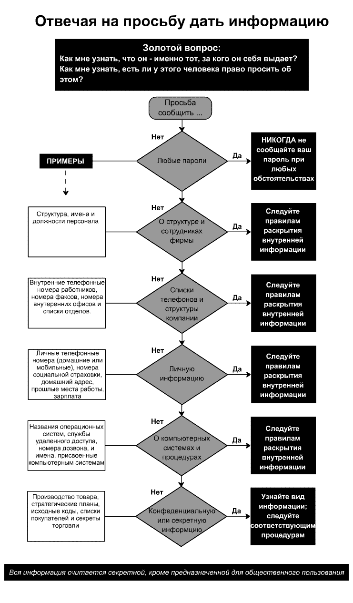
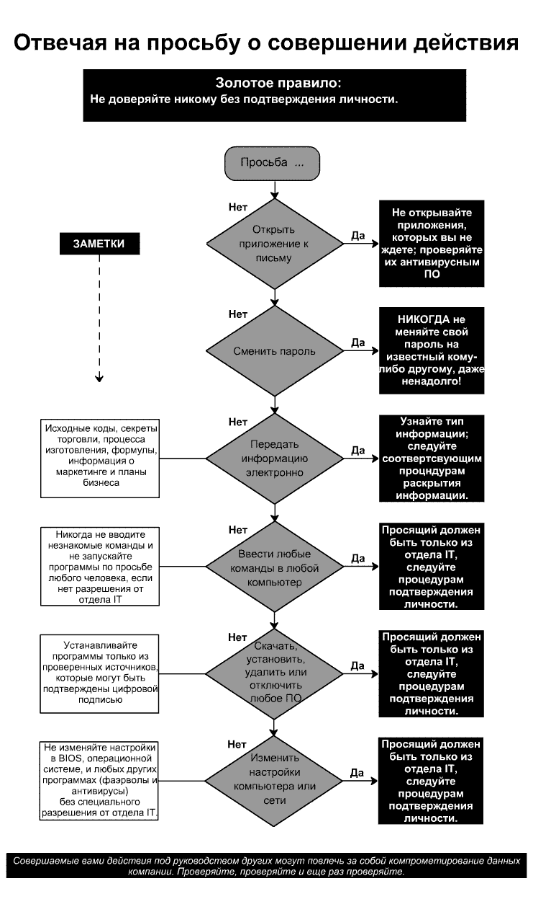

Неопубликованная глава (Unprinted Chapter 1)
Введение (Foreword)
Предисловие (Preface)
Вступление (Introduction)
Часть 1: За сценой (Part 1 Behind the Scenes)
Глава 1: Самое слабое звено в безопасности (Chapter 1 Security's Weakest Link)
Часть 2: Искусство атакующего (Part 2 The Art of the Attacker)
Глава 2: Когда безвредная информация опасна (Chapter 2 When Innocuous Information Isn't)
Глава 3: Прямая атака: просто попроси (Chapter 3 The Direct Attack: Just Asking for it)
Глава 4: Внушая доверие (Chapter 4 Building Trust)
Глава 5: "Разрешите Вам помочь" (Chapter 5 "Let Me Help You")
Глава 6: "Не могли бы Вы помочь?" (Chapter 6 "Can You Help Me?")
Глава 7: Фальшивые сайты и опасные приложения (Chapter 7 "Phony Sites and Dangerous Attachments")
Глава 8: Используя чувство симпатии, вины и запугивание (Chapter 8 Using Sympathy, Guilt and Intimidation)
Глава 9: Ответный удар (Chapter 9 The Reverse Sting)
Часть 3: Угроза вторжения (Part 3 Intruder Alert)
Глава 10: Проникновение на территорию (Chapter 10 Entering the Premises) Увы, не переведено
Глава 11: Сочетая технологию и социальную инженерию (Chapter 11 Combining Technology and Social Engineering)
Глава 12: Атака на служащего низшего звена (Chapter 12 Attacks on the Entry-Level Employee)
Глава 13: Умные мошенники (Chapter 13 Clever Cons)
Глава 14: Промышленный шпионаж (Chapter 14 Industrial
Espionage)
Часть 4: Обход препятствий (Part 4 Raising the Bar)
Глава 15: Знание об информационной безопасности и тренировки (Chapter 15 Information Security Awareness and Training)
Глава 16: Рекомендуемая политика корпоративной информационной безопасности (Chapter 16 Recommended Corporate Information Security Policies) Тоже не переведено
Краткое описание безопасности в организации (Security at a Glance)
Библиография (Sources)
Посвящения (Acknowledgments)
+Бонус! Статья по СИ!
(Unprinted Chapter 1)
Перевод: Yarlan Zey (yarlan[at]pisem.net)
(Это оригинальная глава,
значительно сокращенная в опубликованной версии книги.)
Я неохотно писал этот раздел, потому что я был уверен, что он будет звучать эгоистично. Ну, хорошо, он эгоистичен. Но со мной связывались буквально сотни людей, которые хотели знать "кто такой Кевин Митник?". Если вам безразлично, обратитесь к Главе 2. Для всех остальных, кого это ещё волнует, вот мой рассказ.
Рассказ Кевина
Некоторые хакеры стирают чужие файлы или целые жёсткие диски; их называют кракерами или вандалами. Некоторые из хакеров-новичков не заботятся об изучении технологии, они просто скачивают хакерский инструмент для взлома компьютерных систем; их называют script kiddies. Более опытные хакеры с навыками в программировании разрабатывают хакерские программы и рассылают их по сети и ББСкам. И ещё, есть индивидуумы, которые не интересуются технологией, они просто используют компьютер для захвата чужих денег, товаров или услуг. Не смотря на миф о Кевине Митнике, созданный медиа, я не злонамеренный хакер. То, что я делал, даже не было противозаконно, когда я это начал, но стало преступлением после принятия нового законодательства. Я всё равно продолжал это делать и был пойман. Моя тяжба с правительством была основана не на преступлениях, а на создании из моего случая прецедента. Я не заслужил, чтобы меня преследовали как террориста или опасного преступника: обыскивали мою квартиру с неподписанным ордером; сажали в одиночную камеру на целые месяцы; отказывали в фундаментальных конституционных правах, гарантированных любому преступнику; отказывали не только в залоге, но и в слушании залога; и годами бороться, чтобы получить правительственные улики, чтобы мои адвокаты смогли подготовиться к моей защите.
Что касается моего права на быстрое испытание? Каждые шесть месяцев втечение нескольких лет я стоял перед выбором: подписать бумагу об отказе от конституционного права на быстрое испытание или пройти через испытание с неподготовленным адвокатом; я выбирал первое. Но я отклоняюсь от своего рассказа. Возможно, мой жизненный путь сложился в ранней юности. Я был счастливым ребёнком, но маялся от скуки. После того как мой отец разбился, когда мне было 3, моя мать работала официанткой, чтобы нас прокормить. Она целыми днями работала по сумасшедшему графику и я почти всё время был предоставлен сам себе. Я сам был своей няней. Жизнь в долине Сан-Фернандо открыла мне возможность исследовать целый Лос-Анджелес, и к 12 годам я обнаружил, как можно бесплатно путешествовать по всей великой Л.А. долине. Однажды я обнаружил, что водители используют необычную модель дырокола, чтобы отмечать на билете день, время и маршрут. Отвечая на мои тщательно подготовленные вопросы, знакомый водитель рассказал мне, где можно купить такой дырокол. Обычно со своим билетом вы можете только пересесть на другой автобус и продолжить поездку в своём направлении, но я разработал способ как бесплатно путешествовать в любом направлении. Чистые билеты можно было найти в парке: мусорные корзины около автобусных терминалов всегда переполнены книгами с неиспользованными билетами, которые водители выбрасывали в конце маршрута. При помощи дырокола я мог наделать своих билетов и путешествовать в любую точку Л.А., куда ходили автобусы. Вскоре я помнил расписания автобусов всей системы. Это был пример моей удивительной способности запоминать некоторые виды информации, сейчас я помню телефонные номера, пароли и другие вещи такие же далёкие, как и моё детство. Также в ранние годы открылась моя способность магического воздействия на людей. Когда я обнаружил, как работает новая уловка, я начал её отрабатывать, пока не достиг мастерства. Я находил некоторое удовольствие в одурачивании людей. Мой переход от телефонного фрикинга к хакингу произошёл в старших классах, когда я столкнулся с так называемой социальной инженерией и встретил другого студента, также увлечённого фрикингом. Телефонный фрикинг - это разновидность хакинга, когда вы исследуете телефонные сети, эксплуатируя телефонные системы и служащих телефонных компаний. Он показал мне некоторые уловки, которые он мог делать с телефонами, вроде получения любой информации телефонной компании о её клиентах и использования секретных тестовых номеров, чтобы делать бесплатные звонки на дальние расстояния. Бесплатные только для нас - намного позднее я узнал, что это были вовсе не секретные номера: счета приходили какому-нибудь абоненту MCI. Это было моё знакомство с социальной инженерией - мой детский сад, так сказать. Он и другой телефонный фрикер, которого я встретил позднее, давали мне послушать свои звонки в телефонную компанию. Я узнал, как заставить себя звучать убедительно и узнал о различных офисах и процедурах телефонной компании. Но это "обучение" продолжалось недолго. Вскоре я всё это делал сам, делая даже лучше, чем мои первые учителя. Направление моей жизни на ближайшие 15 лет было определено.
Одной из моих любимейших шуток был захват неавторизованного доступа к телефонному коммутатору и подмена класса телефонной службы моего товарища по фрикингу. Когда он хотел позвонить из дома, то получал сообщение опустить гривенник, потому что коммутатор телефонной компании воспринимал его телефон как общественный телефон-автомат.
Я изучал всё, что касается телефонов - не только электронику, коммутаторы и компьютеры, но также организацию корпорации, процедуры и терминологию. Вскоре я, возможно, знал о телефонной системе больше, чем любой из служащих.
И я развил мои навыки в социальной инженерии настолько, что к 17 годам я мог говорить с большинством из служащих Telco почти о чём угодно, лично или по телефону. Моя хакерская карьера началась в старшей школе. Тогда мы использовали термин хакер к человеку, который потратил огромное количество времени, копаясь с софтом и железом, разрабатывал более эффективные программы или исключал всё ненужное, чтобы сделать работу быстрее. Сейчас термин стал ругательством, означая "опасный преступник". Здесь я использую термин хакер в том же смысле, в каком он всегда использовался раньше, в более мягком смысле. В конце 1979 группа хакеров из Los Angeles Unified School District предложила мне взломать The Ark, компьютерную систему Digital Equipment Corporation, использовавшуюся для разработки софта для их операционной системы RSTS/E. Я хотел быть принятым в эту хакерскую группу, чтобы я мог узнать у них больше об операционных системах. Эти новые "друзья" знали номер диал-апа компьютерной системы DEC. Но они не могли войти без имени аккаунта и пароля. Когда вы кого-то недооцениваете, он может вернуться и ударить с фланга. В данном случае это был я, сумевший взломать систему DEC в столь юном возрасте. Представившись Антоном Черновым (Anton Chernoff), одним из ведущих разработчиков проекта, я просто позвонил системному администратору. Я заявил, что не могу войти в один из "моих" аккаунтов, и убедил этого парня достаточно, чтобы он предоставил мне доступ и позволил мне выбрать пароль по своему усмотрению. В защите экстра класса любой пользователь, соединяющийся с системой, должен был ввести диал-ап пароль. Системный администратор дал мне его. Это был пароль "buffoon" (клоун), которым, я думаю, он себя почувствовал, когда стало понятно что произошло. Менее чем за 10 минут я получил доступ к RSTE/E системе DEC. И я вошёл не как обычный пользователь, у меня были все привилегии системного разработчика. Поначалу мои новые так называемые друзья не поверили, что я получил доступ к The Ark. Один из них отпихнул меня от клавиатуры с лицом, выражающим недоверие. Его рот открылся, когда он увидел, что я в привилегированном аккаунте. Позднее я обнаружил, что они начали копирование исходного кода компонентов к операционной системе DEC. Теперь была моя очередь удивляться. Когда они скопировали софт, они позвонили в отдел безопасности корпорации DEC и сказали, что кое-кто взломал корпоративную сеть компании. И выдали моё имя. Мои так называемые друзья сначала использовали мой доступ к исходному коду высокой секретности, а затем меня подставили.
Это был урок, и ещё не один такой урок мне пришлось выучить. Через несколько лет я неоднократно сталкивался с неприятностями, потому что я доверял людям, которых считал своими друзьями. После школы я изучал компьютеры в Обучающем Компьютерном Центре в Лос Анджелесе.
Через несколько месяцев мой школьный компьютерный администратор догадался, что я обнаружил уязвимость в их операционной системе и получил полные привилегии администратора на их миникомпьютере IBM. Лучшие компьютерные эксперты из их преподавательского штата не смогли найти как я это сделал. Это был один из моих ранних опытов "найма на работу". Мне сделали предложение, от которого я не смог отказаться: сделать почётный проект по повышению безопасности школьного компьютера или предстать перед обвинением во взломе системы. Конечно, я выбрал почётный проект и с Почестью закончил получение высшего образования в Cum Laude. Становясь социальными инженерами, некоторые встают каждое утро с постели, боясь своей каждодневной рабочей рутины. Я был достаточно удачлив, чтобы наслаждаться своей работой. Вы не можете себе представить вызов, награду и удовольствие, которые я испытывал, когда работал частным сыщиком. Я затачивал свои таланты в искусстве под названием социальная инженерия - заставляя людей делать вещи, которые они обычно не делают для незнакомцев, и получая за это деньги. Для меня было нетрудно стать профессионалом в социальной инженерии. Мой отец вышел из семьи потомственных торговцев, так что искусство влияния и убеждения могло быть унаследованной чертой. Когда Вы объединяете склонность к обману людей с таланами влияния и убеждения, то достигаете профиля социального инженера. Вы могли бы сказать, что под эту классификацию попадают две специальности. Мошенник обманывает людей, чтобы забрать у них деньги. Социальный инженер обычно использует обман, влияние и убеждение, чтобы получить информацию. В то время, когда я проводил свои махинации с автобусными билетами, я был слишком мал, чтобы знать, что было плохого в том, что я делал. Я использовал талант, чтобы открывать секреты, которые не должен был знать. Я развивал этот талант, используя обман, умение заболтать людей, и развивая хорошо заточенные навыки манипулирования.
Чтобы развить навыки в моём ремесле (если я могу называть его ремеслом), я выбирал какой-нибудь кусок информации, неважно какой, и смотрел, мог ли мне его сообщить человек на другом конце телефонного провода. Через эти репетиции, вскоре я мог получить любую информацию, какую хотел. В Конгрессе, на эксперименте перед сенаторами Либерманом и Томпсоном я сказал: "Я получил неавторизованный доступ к компьютерным системам некоторых из крупнейших корпораций на планете и успешно проник в самые защищённые компьютерные системы. Чтобы получить исходные коды различных операционных систем и телекоммуникационных устройств и изучить их внутреннее устройство и уязвимости, я использовал как технические, так и нетехнические навыки". Я искал секретную информацию об операционных системах, сотовых телефонах, только чтобы удовлетворить моё любопытство и убедиться, что я мог это сделать. Поток событий, изменивших мою жизнь, начался, когда я стал объектом статьи на титульном листе Нью-Йорк Таймс 4-го июля 1994 года.
Джон Марков (John Markoff) - медиа-мошенник
"Кевин Митник - взбесившийся компьютерный программист, использующий техническое колдовство и старое как мир мошенничество" (Нью-Йорк Таймс, 7/4/94). Используя старое как мир желание получить незаслуженное благосостояние, силу публичной лжи и дискредитирующие истории о своём объекте на титульном листе Нью-Йорк Таймс, Джон Марков был настоящим взбесившимся репортёром. Марков заработал более $ 1 млн., единолично создав то, что я называю "Мифом о Кевине Митнике." Он стал очень богатым, используя ту же самую технологию, которую я использовал, чтобы компрометировать компьютерные системы и сети по всему миру: обман. Однако в данном случае жертвой обмана был не администратор системы или компьютерный пользователь, это был каждый, кто доверял новостям, опубликованным на страницах Нью-Йорк Таймс.
Самый разыскиваемый в киберпространстве
Безусловно, статья Маркова в Таймс была специально написана, чтобы получить контракт на книгу об истории моей жизни. Я никогда не встречался с Марковым, всё же он буквально стал миллионером, благодаря его клеветническому и дискредитирующему "репортажу" обо мне в Таймс и его книге "Киберпанк" (1991) [в русском переводе - "Хакеры" - прим.редактора]. В статью он включил несколько десятков утверждений обо мне, которые приводились как факты без указания источников, и даже минимальная проверка (проведения которой, как я думал, требуют у своих репортёров все первоклассные газеты) показала бы их несоответствие. В этой ложной и дискредитирующей статье Марков заклеймил меня "самым разыскиваемым в киберпространстве" без указания причин и подтверждающих свидетельств, как автор какой-нибудь бульварной газеты. В своей клеветнической статье Марков ложно заявлял, что я перехитрил ФБР; что я взломал компьютеры в NORAD (которые даже не соединены ни с одной из внешних сетей); и что я был компьютерным "вандалом", не смотря на тот факт, что я не повредил ни одного компьютера преднамеренно. Эти и другие утверждения были полностью ложны и предназначены, чтобы вызвать страх по поводу моих способностей. В другом нарушении журналистской этики, в этой и всех последующих статьях обо мне Марков не смог скрыть личную враждебность за мой отказ участвовать в создании "Киберпанка". Кроме того, я стоил ему приличного потенциального дохода, отказавшись возобновить участие в фильме по мотивам книги. Также статья Маркова ясно предназначалась, чтобы уколоть американские правоохранительные агентства.
"... Кажется, силы правопорядка не способны поймать его ...", писал Марков. Статья специально представляла меня как Общественного Врага Номер Один в киберпространстве, чтобы повлиять на Министерство Юстиции и поднять приоритет моего дела. Несколькими месяцами позже, нарушая закон и журналистскую этику, Марков и его кореш Тсутому Шимомура (Tsutomu Shimomura) участвовали в моём аресте как правительственные агенты. Оба были поблизости, когда для нелегального обыска моей квартиры и ареста использовали три неподписанных ордера. И во время расследования моей деятельности эти двое также нарушили закон, прервав мой телефонный звонок. Сделав меня злодеем, в своей последующей статье Марков представил Шимомуру как героя номер один в киберпространстве. Снова нарушая журналистскую этику и не раскрывая существовавшие ранее отношения: этот герой в течение нескольких лет был личным другом Маркова. Моё первое столкновение с Марковым произошло в конце 80-х, когда он и его жена Кати Хафнер (Katie Hafner) связались со мной во время создания книги "Киберпанк", которая должна была стать историей о трёх хакерах: немецком юноше Пенго (Pengo), Роберте Моррисе и обо мне.
В чём была моя выгода от участия? Ни в чём. Я не видел причины рассказывать им свою историю, если они собирались на ней заработать, так что я отказался помочь. Марков выдвинул мне ультиматум: или интервью, или информация из любого источника будет воспринята как правда. Он был по-настоящему расстроен и разозлён оттого, что я не буду сотрудничать, и дал понять, что у него есть средства, чтобы заставить меня пожалеть об этом. Я стоял на своём и отказался сотрудничать, несмотря на давление. Опубликованная книга показывала меня как "Хакера с тёмной стороны". Я решил, что авторы преднамеренно включили неподтверждённые, ложные утверждения, чтобы отомстить мне за отказ. Придав моему символу зловещий вид и представив меня в чёрном свете, они, возможно, увеличили продажи книги. Однажды мне позвонил кинопродюсер с большими новостями: Голливуд заинтересовался фильмом о Хакере С Тёмной Стороны из Киберпанка. Я заявил, что история обо мне далека от истины, но он всё ещё был очень заворожен проектом. Я согласился на двухлетний контракт в $5000, плюс дополнительные $45000, если они доберутся до производства и дело сдвинется дальше. Когда срок контракта истёк, компания попросила о его продлении на 6 месяцев. К тому времени я нашёл выгодную работу, так что у меня было мало причин наблюдать за производством фильма, который показывал меня в таком неблагоприятном и ложном свете. Я отказался от продления. Это разрушило сделку с фильмом для всех, включая Маркова, который возможно ожидал от проекта огромного заработка. Это была ещё одна причина мстительного отношения Маркова ко мне. Когда "Киберпанк" был опубликован, у Маркова и его друга Шимимуры была переписка по email. Они оба подозрительно интересовались моим местонахождением и моей деятельностью. Удивительно, в одном e-mail сообщении содержалась информация, что я посещал Университет Невады в Лас Вегасе и пользовался студенческой компьютерной лабораторией. Могло ли это означать, что Марков и Шимомура собирались написать другую книгу обо мне? Иначе почему их волновало то, чем я занимался? Впоследствии Марков предпринял шаги, произошедшие в 1992 году.
Я приближался к концу моего условного заключения за взлом корпоративной сети Digital Equipment Corporation (DEC). Тем временем я узнал, что правительство готовило против меня другое дело за с проведение контрразведывательных действий по выяснению причины размещения телефонных жучков на телефонных линиях Лос-Анджелесcкой фирмы P.II. В своих раскопках я нашёл подтверждение моих подозрений: люди из службы безопасности Pacific Bell действительно исследовали фирму. Итак, в Лос-Анджелесcком Окружном Департаменте Шерифа был сотрудник с компьютерным преступлением (по-совпадению этот сотрудник оказался братом-близнецом соавтора этой книги. Мир тесен.) Приблизительно в это время федералы внедрили своего информатора, чтобы он завёл меня в западню. Они знали, что я всегда старался держать козырные карты против любого агентства, которое за мной следило. Так что они сделали так, чтобы этот информатор вошёл ко мне в доверие и намекнул, что за мной наблюдают. Он также поделился со мной информацией о компьютерной системе, используемой в Pacific Bell, что позволило мне делать свои контр наблюдения. Когда я раскрыл его замыслы, я открыл свои карты и разоблачил его участие в мошенничестве с кредитными карточками во время его работы с правительством в качестве информатора.
Уверен, федералы оценили это! Моя жизнь изменилась в День Независимости 1994, когда рано утром меня разбудил мой пейджер. Звонивший сказал, чтобы я немедленно купил газету Нью-Йорк Таймс. Я не мог поверить, что Марков не только написал обо мне статью, но что Таймс поместила её на титульном листе. Первая мысль, пришедшая мне на ум, была о моей безопасности - теперь правительство существенно повысит свои усилия, чтобы меня найти. Меня обнадёжило то, что Таймс использовала очень неподходящую фотографию. Я не боялся, что меня узнают, потому что они выбрали настолько старую фотку, что она совсем не была на меня похожа! По мере прочтения статьи я понял, что Марков основывался на описании из своей книги о Кевине Митнике. Я просто не мог поверить, что Нью-Йорк Таймс рискнула напечатать его вопиюще ложные утверждения обо мне. Я чувствовал себя беспомощным. Даже если у меня будет возможность ответить, конечно, я не смогу собрать аудиторию, эквивалентную Нью-Йорк Таймс, чтобы опровергнуть возмутительную ложь Маркова. Я согласен, что мог быть болью в чьей-то заднице, но я никогда не уничтожал, не использовал против и никому не открывал полученную информацию. Фактические потери компаний от моей хакерской деятельности составляли стоимость телефонных звонков, которые я делал за их счёт, деньги, затраченные компаниями, чтобы закрыть уязвимости в безопасности, и в некоторых случаях, может быть, стоимость переустановки систем и приложений компаний из страха, что я мог модифицировать софт, чтобы использовать его для получения доступа в будущем. Эти компании оставались бы уязвимыми к более худшим взломам, если бы моя деятельность не предупредила о слабых местах в линии их защиты. Хотя я причинил некоторые потери, мои действия и намерения не были злонамеренны... и Джон Марков изменил всемирное восприятие опасности, которую я представлял. Власть одного неэтичного репортёра из такой влиятельной газеты, пишущего лживую и дискредитирующую историю о ком угодно, может коснуться каждого из нас. Следующей целью можете быть вы.
После моего ареста меня перевезли в Окружную Тюрьму в Смитфилде в Северной Каролине, где приказом Службы Маршаллов США меня разместили в `the hole'- одиночной камере. Втечение недели федеральные обвинители и мой адвокат пришли к соглашению, от которого я не мог отказаться. Меня могли выпустить из одиночки при условии, что я откажусь от фундаментальных прав и соглашусь со следующим: а) никакого слушания залога; b) никакого предварительного слушания; и с) никаких телефонных звонков, кроме звонков моему адвокату и двум членам семьи. Подпись и я мог выйти из камеры. Я подписался.
Федеральные обвинители стояли за каждой злой шуткой, описанной в книге, пока я не вышел на свободу почти через 5 лет. Меня периодически заставляли отказаться от своих прав. Но ведь это было дело Кевина Митника: здесь нет правил. Никакого уважения к конституционным правам обвиняемого. Моё дело основывалось не на правосудии, а на стремлении правительства победить любой ценой. Обвинители представили суду значительно раздутые заявления об ущербе и угрозе, которую я представлял. Медиа повсюду разнесли цитирование этих утверждений, так что обвинителям было уже поздно отступать. Правительство не могло себе позволить проиграть дело Митника. Мир наблюдал.
Я уверен, что суд купился на страх, созданный медиа, так как многие этичные журналисты брали "факты" из уважаемой Нью-Йорк Таймс. Очевидно миф, созданный медиа, также испугал правоохранительных чиновников. В конфиденциальном документе, попавшем к моему адвокату, говорилось, что Служба Маршаллов США выпустила предупреждение ко всем правоохранительным агентам не показывать никаких личных данных обо мне; в противном случае они могут обнаружить, что их жизни электронно разрушены. Наша Конституция требует, чтобы до слушания обвиняемый считался невиновным, таким образом предоставляя всем гражданам право на слушание залога, на котором обвиняемый имеет возможность быть представленным жюри, предоставить доказательства и подвергнуть свидетелей перекрёстному допросу. Невероятно, что правительство смогло обойти эту защиту, основываясь на ложной истерии, распущенной безответственными репортёрами вроде Джона Маркова. Без прецедента меня содержали в тюрьме как человека, задержанного до суда или приговорённого более чем к 4 с половиной годам заключения. Отказ судьи в слушании моего залога был полностью одобрен в Верховном Суде США. В конце концов, моя команда защиты посоветовала мне установить другой прецедент: я был первым федеральным задержанным в истории США, которому было отказано в слушании залога. По крайней мере, в этом случае федеральные обвинители не смогут утверждать, что я мог начать ядерную войну, просвистев в трубку таксофона, как делали другие федеральные обвинители в более ранних делах. Наиболее серьёзные обвинения были в том, что я скопировал находящийся в частной собственности исходный код для различных сотовых телефонных трубок и популярных операционных систем. Ещё, обвинители публично заявили, что я причинил некоторым компаниям суммарные потери более $300 млн. Детали о количестве потерь всё ещё находятся под охраной суда, возможно чтобы защитить вовлечённые компании; однако, моя группа защиты уверена, что запрос обвинителей о защите информации был произведён, чтобы прикрыть их грубое участие в моём деле. Стоит также отметить, что ни один из потерпевших не сообщил о потерях в Securities and Exchange Commission, как того требовал закон. Либо несколько межнациональных корпораций нарушили федеральный закон, обманув SEC, акционеров и аналитиков, либо потери, относящиеся к моему хакерскому делу были слишком тривиальны, чтобы о них сообщать. В книге "Игра беглеца" (Fugitive Game) Джонатана Литтмана (Jonathan Littman) содержатся сообщения, что в пределах недели после истории на титульном листе Нью-Йорк Таймс агент Маркова получил "конверт с вознаграждением" от издателя Walt Disney Hyperion за книгу о кампании по моему задержанию. Вознаграждение оценивается в $750 000. Также по сведениям Литтмана Голливуд собирался снять кино и Miramax вручил ему более $200 000 за идею и "ещё $650 000 должны были выплатить к началу съёмок". Недавно конфиденциальный источник сообщил мне, что сделка Маркова оценивалась намного дороже, чем Литтман думал вначале. Так что Джон Марков стал миллионером, а я получил 5 лет. Одна из книг, в которой исследуются юридические аспекты моего дела, была написана человеком из Районной Прокуратуры Лос-Анджелеса, одним из моих обвинителей. В книге "Захватывающие компьютерные преступления" (Spectacular Computer Crimes) Бак Блумбекер (Buck Bloombecker) написал: "Меня огорчает то, что я вынужден писать о моих бывших коллегах в менее чем лестных терминах... Меня часто посещало признание Помощника Поверенного Соединённых Штатов Джеймса Асперджера (James Asperger), что большинство из аргументов, использовавшихся для содержания Митника за решёткой, основывались на слухах." Дальше он говорит: "Довольно плохо, что обвинения, сделанные в суде, распространялись газетами среди миллионов читателей по всей стране. Но хуже всего то, что эти несоответствующие заявления большей частью опирались на содержание Митника за решёткой без возможности выплатить залог". В статье в Форбс (Forbes) 1999 Адам Л. Пененберг (Adam L. Penenberg) красноречиво описал мою ситуацию: "Преступления Митника были безвредны. Он взломал компьютеры корпорации, но ни одна улика не доказывает, что он уничтожил данные. Или продал что-нибудь из того, что скопировал. Да, он воровал софт, но делая это, держал его при себе." В статье говорится, что моё преступление было "гримасничаньем перед дорогостоящими системами безопасности, которые покупали большие корпорации." В книге "Игра беглеца" автор Джонатан Литтман также замечает: "Жадность правительства можно понять. Но хакер, использующий свою власть для своей выгоды ... это то, что они не могут поймать." В другом смысле в той же книге Литтман пишет: Поверенный США Джеймс Сандерс (James Sanders) признался Судье Файлзеру (Judge Pfaelzer), что ущерб DEC от Митника был не $4 млн., как сообщали заголовки, а $160 000. Даже эта сумма содержала не стоимость ущерба, причинённого Митником, а грубые оценки затрат на поиск уязвимостей в безопасности DEC. Правительство подтвердило, что у него не было никаких доказательств диких требований о содержании Митника в одиночном заключении без возможности выплатить залог. Никаких доказательств, что Митник когда-либо ставил под угрозу безопасность АНБ (NSA). Никаких доказательств, что Митник когда-либо распускал ложные сообщения о безопасности Pacific Bank. Никаких доказательств, что Митник когда-либо изменял кредитный счёт судьи. Но, возможно, под влиянием ужасных сообщений медиа судья отклонил просьбу Митника о сделке и приговорил его к более долгому заключению, чем требовало правительство. За годы моего хакерского хобби я получил неожиданную славу, обо мне написали бесчисленное количество газетных и журнальных статей и 4 книги. Клеветническая книга Маркова и Шимомуры легла в основе фильма "Takedown". Когда сценарий фильма был найден в Интернете, многие мои сторонники начали пикетирование Miramax Films, чтобы привлечь общественное внимание к моей ложной характеристике. Без помощи многих щедрых и справедливых людей кинофильм, конечно, изобразил бы меня как Ганнибала Лектора киберпространства (см. "Молчание ягнят", прим. перев.). Под давлением моих сторонников компания согласилась уладить дело, чтобы избежать судебного иска.
Финальные выводы
Несмотря на клеветническое и возмутительное описание Джона Маркова, мои преступления были простыми преступлениями в хакинге и фрикинге. С момента ареста все действия по отношению ко мне были незаконны, включая вмешательство в личную жизнь. Предположения, сделанные в статье Маркова без суждений, причин или доказательств, что я лишил кого-то денег, повредил компьютеры или мошенничал, были полностью лживы и не подтверждены свидетельствами. Мои преступления мотивировались любопытством: я хотел знать столько, сколько мог знать о работе телефонных сетей и о входах и выходах в компьютерной безопасности. Из ребёнка, который любил совершать магические уловки, я стал самым печально известным хакером в мире, которого боялись корпорации и правительство. Оглядываясь на последние 30 лет моей жизни, я допускаю, что, опираясь на моё любопытство, желание изучать технологию и хороший интеллектуальный вызов, я сделал несколько чрезвычайно плохих решений. Сейчас я стал другим человеком. Я обратил свои таланты и обширное знание, которое я собрал о безопасности и тактике социальной инженерии, на помощь правительству, компаниям и индивидуумам, чтобы обнаруживать и отвечать на угрозы информационной безопасности. Эта книга - ещё одна возможность использовать мой опыт, чтобы помочь другим избежать злонамеренных информационных воров. Думаю, что истории будут приятными, предупреждающими и поучительными.
(Foreword)
Перевод: Minux (marianna_owen[at]pochta.ru)
Мы, люди, рождены со внутренним двигателем для изучения окружения. Будучи молодыми, Кевин Митник и я серьезно интересовались миром и страстно стремились самоутвердиться. Мы нередко были вознаграждены за наши попытки изучать новые вещи, решать загадки, а также побеждать в играх. Но в тоже самое время мир со своими правилами ограничивал свободу наших исследований. Для наших самых смелых ученых и технологических предпринимателей, а также людей подобных Кевину Митнику, следующих внутреннему зову ,предоставляют нам величайшие потрясения, позволяя нам завершить вещи, которые другим казались невозможными.
Кевин Митник - один из самых хороших людей, которых я знаю. Спросите его, и он откровенно скажет вам, что то, чем он занимался - социальная инженерия - включает в себя обман людей. Но Кевин уже не социальный инженер. И даже когда он им был, его целью никогда не было стать богатым или же нанести вред другим. Но это не говорит о том, что нет опасных и разрушительных преступников, которые используют социальную инженерию для нанесения вреда другим. Фактически, это то из-за чего Кевин и написал эту книгу - чтобы предупредить вас о них.
"Искусство обмана" показывает насколько мы все уязвимы -
правительство, бизнес, и каждый из нас лично - к вторжениям социальных
инженеров. В этой сознательно-безопасной эре мы тратим огромные деньги на
технологии защиты наших компьютерных сетей и данных. Эта книга показывает, как
легко можно обманывать посвященных лиц и всю эту
технологическую защиту.
Работаете ли вы в правительстве или же занимаетесь бизнесом, эта книга
снабдит вас качественным планом, поможет вам понять, как социальные инженеры
работают, и что вы можете сделать, чтобы помешать им. Используя придуманные
истории, которые одновременно развлекают и просвещают, Кевин и его соавтор Билл
Симон воплотили в жизнь
технику социальной инженерии. После каждой истории
они предлагают практические указания, чтобы помочь защититься нарушений и угроз,
которые они описывают.
Технологические меры безопасности оставляют большие пробелы, которые люди, как Кевин, помогут вам закрыть. Прочитав эту книгу, вы поймете, что нам всем надо следовать советам Митника.
- Стив Возняк
(Preface)
Перевод: Yarlan Zey (yarlan[at]pisem.net)
Некоторые хакеры стирают файлы или целые жёсткие диски - их называют кракерами или вандалами. Некоторые хакеры-новички не заботятся об изучении технологии, а просто скачивают хакерский инструментарий для взлома компьютерных систем - их называют скрипт-кидди. Более опытные хакеры с навыками в программировании разрабатывают хакерские программы и рассылают их по сетям и ББС. И ещё, есть индивиды, которые не интересуются технологией, но используют компьютер просто как средство для хищения денег, товаров и услуг.
Не смотря на созданный средствами массовой информации миф о Кевине Митнике, я - не злонамеренный хакер.
Но я начну всё по порядку.
С чего всё начиналось
Возможно, мой жизненный путь сложился ещё с раннего детства. Я был счастливым ребёнком, но меня мучала скука. После того как от нас ушёл отец, когда мне было три года, моя мать стала работать официанткой, чтобы прокормить нас. Тогда меня воспитывала одна мать, которая и так почти весь день тратила на изматывающую работу с сумасшедшим графиком, и я почти всё свободное время был предоставлен сам себе. Я сам был своей сиделкой.
Проживание в долине Сан-Фернандо открывало мне возможность для исследования всего Лос-Анджелеса, и к 12 годам я обнаружил способ, как можно путешествовать по огромной равнине Л.А. бесплатно. Однажды во время поездки в автобусе я понял, что вся защита купленных мной автобусных билетиков от подделки основывалась на уникальной модели бумажного дырокола, которым водитель отмечал на билете день, время и маршрут. Знакомый водитель, отвечая на мои тщательно сформулированные вопросы, сказал мне, где можно достать этот дырокол.
Предполагается, что со своим билетом вы можете пересесть на другой автобус и продолжить поездку в том же направлении, но я выработал метод, как можно проехать куда угодно совершенно бесплатно. Для начала я отправился в автобусный парк за чистыми билетами.
Мусорные корзины у автобусного терминала всегда переполнены книгами с целой половиной неиспользованных билетов, которые водители выкидывали в конце маршрута. При помощи дырокола я мог наделать из чистых билетов своих собственных маршрутов и отправиться путешествовать в любую точку, куда ходили автобусы Л.А. Вскоре я помнил почти все расписания автобусов всей системы. (Это был первый пример моей удивительной памяти запоминать специфическую информацию. Сейчас я всё ещё помню телефонные номера, пароли и другие по-видимому, тривиальные вещи столь же далёкие как и моё детство).
Другим моим увлечением, также обнаруженным в раннем возрасте, была практическая магия (фокусы). Узнав, как действует та или иная уловка, я отрабатывал её много раз, пока не достигал совершенства. В какой-то степени именно через фокусы я открыл удовольствие от получения секретных знаний.
От телефонного фрикинга к хакингу
Впервые я столкнулся с тем, что позднее стал называть социальной инженерией, в средней школе, когда встретил другого школьника, также увлечённого хобби под названием телефонный фрикинг.
Это было моё вступление в социальную инженерию, так сказать. Мой друг и ещё один телефонный фрикер, которого я повстречал немного позднее, давали мне послушать свои спланированные звонки в телефонную компанию. Я услышал, что они говорили, чтобы казаться убедительными, я узнал о различных отделениях и процедурах телефонной компании. Но "обучение" длилось недолго . Вскоре я всё это делал сам, совершенствуясь в процессе, делая всё даже лучше моих первых учителей.
Итак, мой жизненный путь на ближайшие 15 лет был предначертан. В средней школе одной из моих излюбленных шуток был захват неавторизованного доступа к телефонному коммутатору и подмена класса услуги товарищей по фрикингу. Когда они пробовали позвонить из дома, электронный голос в трубке предлагал опустить четвертак, потому что коммутатор телефонной компании воспринимал звонок как звонок с платного таксофона.
Я стал жадно поглощать всё, что мог узнать о телефонах: не только об электронике, коммутаторах и компьютерах, но также всё о корпоративной организации, процедурах и терминологии. Вскоре я, возможно, знал о телефонной системе больше среднего служащего компании. И я развил навыки в социальной инженерии до такого уровня, что к 17 годам я мог разговаривать с работниками телефонной компании почти о чём угодно, без разницы - лично или по телефону.
Моя всем известная хакерская карьера фактически началась, когда я был в средней школе. Пока я не могу описать всё в деталях, достаточно сказать, что одной из движущих сил моих первых хаков было желание быть принятым в хакерскую группу.
Тогда мы ещё использовали термин хакер по отношению к индивиду, который потратил огромное количество времени, копаясь в софте и железе, либо разрабатывая более эффективные программы, либо обходя ненужные шаги, чтобы сделать работу быстрее. Сейчас термин стал бранным словом, означая "умышленный преступник". На этих страницах я использую термин хакер в том смысле, которым он всегда был - в его первоначальном значении.
После школы я изучал компьютеры в Учебном Компьютерном Центре в Лос-Анджелесе. Спустя несолько месяцев, школьный компьютерный администратор обнаружил, что я нашёл уязвимость в операционной системе и заполучил полные администраторские привилегии на их IBM миникомпьютере. Лучшие компьютерные эксперты из преподавательского штата не смогли понять, как я это сделал. Возможно, это был один из первых примеров, когда "хакера взяли на работу", мне сделали предложение, от которого я не мог отказаться: сделать почётный проект по улучшению безопасности школьного компьютера или иметь дело с обвинением в хакинге системы. Конечно, я выбрал почётный проект и с почестями закончил получение высшего образования.
Становление социальным инженером
Некоторые люди просыпаются каждое утро, боясь своей каждодневной рутины. Мне повезло - я наслаждался своей работой. Вы не можете себе представить вызов, награду и удовольствие, которые я испытывал, когда работал частным сыщиком. Я затачивал свои таланты в искусстве под названием социальная инженерия (заставляя людей делать вещи, которые они не стали бы обычно делать для незнакомца) и получая за это зарплату.
Для меня не было ничего сложного стать профессионалом в социальной инженерии. Мои предки со стороны отца были потомственными торговцами, поэтому искусство влияния и убеждения могло быть врождённой чертой. Когда вы объединяете эту черту и склонность к обману людей, вы получаете портрет типичного социального инженера.
Возможно, вы скажете, что искусству обмана соответствуют две рабочих специальности. Тот, кто надувает и обманывает людей за их деньги, относится к одной суб-специальности - это мошенник. Тот, кто использует обман, влияние и убеждение против компаний, целясь обычно в их информацию, относится к другой суб-специальности - социальный инженер. Во времена моих трюков с автобусными билетиками, когда я был слишком молод, чтобы понять что-то неправильное в моих действиях, я начал использовать свой талант, чтобы узнавать секреты, к которым у меня, как предполагалось, не было доступа. Я опирался на этот талант, обман, знание терминологии и растущие навыки в манипуляции людьми.
Я работал над развитием навыков в моём ремесле, если я могу называть это ремеслом, следующим образом - я выбирал какой-нибудь кусок информации (любой, без разницы) и смотрел, мог ли я, разговаривая с кем-нибудь на другом конце телефонного провода, узнать это от него. Таким же образом я тренировался с фокусами. И через эти тренировки я вскоре обнаружил, что мог виртуально достать любую информацию, которую хотел.
Вот что я сказал на слушании в Конгрессе сенаторам Либерману и Томпсону несколько лет спустя:
Я получил неавторизованный доступ к компьютерным системам в некоторых крупнейших корпорациях на планете и успешно проникнул в некоторые наиболее гибкие когда-либо разрабатывавшиеся компьютерные системы. Чтобы достать исходные коды различных операционных систем и телекоммуникационных устройств для изучения их внутренней работы и уязвимостей, я использовал как технические, так и нетехнические способы.
Вся эта деятельность была прямиком направлена на удовлетворение моего любопытства. Только ради того, чтобы узнать мог ли я это сделать, я добывал секретную информацию об операционных системах, сотовых телефонах и других вещах.
Финальные выводы
После ареста я подтвердил, что мои действия были незаконны, и что я совершал вторжения в личную жизнь.
Мои преступления мотивировались любопытством. Я хотел знать столько, сколько мог о том, как работают телефонные сети и входы-выходы в компьютерной безопасности. Из ребёнка, который любил показывать магические фокусы, я превратился в самого печально известного хакера в мире, которого боялись корпорации и правительство. Бросая взгляд на свою жизнь за последние 30 лет, я признаю, что, идя на поводу у любопытства, желания изучать технологию и интеллектуального вызова, я принял несколько чрезвычайно плохих решений,
Сейчас я изменился. Я обратил свои таланты и обширные знания об информационной безопасности и тактике социальной инженерии на помощь правительству, бизнесу и индивидам, чтобы помочь им предотвращать, обнаруживать и отвечать на угрозы информационной безопасности.
Эта книга - ещё одна возможность использовать мой опыт, чтобы помочь другим людям избежать злонамеренных информационных воров. Я надеюсь, вы найдёте истории приятными и поучительными.
(Introduction)
Перевод: Yarlan Zey (yarlan[at]pisem.net)
Эта книга содержит исчерпывающие сведения об информационной безопасности и социальной инженерии. Чтобы помочь вам, здесь даны основные элементы структуры книги:
В первой части я покажу самое слабое звено в безопасности и объясню, почему вы и ваша компания подвержены риску атак социальных инженеров.
Во второй части вы увидите, как социальные инженеры используют вашу доверчивость, ваше желание быть полезным, вашу симпатию и ваше человеческое легковерие, чтобы получить то, что они хотят. Вымышленные истории о типичных атаках продемонстрируют, что социальные инженеры могут носить множество шляп и множество лиц. Если вы думаете, что вы никогда с ними не сталкивались, возможно, вы ошибаетесь. Вполне возможно в этих историях вы узнаете сценарии, которые уже испытали на себе, и удивитесь, если окажется, что вы сталкивались с социальной инженерией. Но, прочитав главы со второй по девятую, вы будете знать что делать, когда услышите телефонный звонок следующего социального инженера.
Третья часть - это часть, в которой вы увидите, как социальный инженер достигает своей цели. В вымышленных историях показывается, как он может проникнуть в ваше корпоративное здание, украсть секреты, от которых зависит ваша компания, и обойти все ваши высокотехнологичные меры безопасности. Из сценариев этого раздела вы узнаете, что угрозы, могут варьироваться от простой мести служащего до кибертерроризма. Если вы цените информацию, которая держит ваш бизнес на плаву, и секретность ваших данных, вы захотите прочитать главы с десятой по четырнадцатую от начала до конца.
Важно отметить, что если это не оговорено специально, все истории из книги полностью вымышлены.
В четвёртой части я читаю корпоративную лекцию, как предотвратить успешные атаки социальных инженеров на вашу организацию. Глава 15 содержит макет эффективной программы по обучению безопасности. И Глава 16, возможно, спасёт вашу шею - это последовательная политика безопасности, которую вы можете настроить для вашей организации и сразу же применить для защиты компании и информации.
Наконец, я предоставил раздел "Защищайтесь сразу", который включает в себя контрольные списки, таблицы и диаграммы. Они объединяют ключевую информацию, которую вы можете использовать на работе, чтобы помочь вашим служащим отражать атаки социальных инженеров.
Повсюду в книге вы также найдёте несколько полезных элементов: ссылки lingo, которые расшифровывают определения и терминологию хакеров и социальных инженеров, Сообщения Митника, короткие ценные заметки, которые помогут усилить вашу стратегию безопасности, и примечания, дающие дополнительную информацию.
(Part 1 Behind the Scenes)
(Chapter 1 Security's Weakest Link)
Перевод: Yarlan Zey (yarlan[at]pisem.net)
Компания может приобрести лучшие технологии по безопасности, какие только можно купить за деньги, натренировать своих людей так, что они станут прятать все свои секреты, прежде чем пойти ночью домой, и нанять охранников в лучшей охранной фирме на рынке.
Но эта компания всё ещё остаётся полностью Уязвимой.
Сами люди могут полностью следовать лучшей практике по безопасности, рекомендованной экспертами, по-рабски устанавливать каждый вновь появившийся рекомендованный программный продукт по безопасности и тщательно следить за конфигурацией своей системы и следить за выпуском патчей.
Но и они всё равно полностью уязвимы.
Не так давно, давая показания перед Конгрессом, я объяснял, что часто я получал пароли и другие кусочки секретной информации компаний, просто притворяясь кем-нибудь и спрашивая о них.
Это естественно - стремиться к абсолютной безопасности, но это желание заставляет многих людей соглашаться с ложным чувством защищённости. Рассмотрим ответственного и любящего отца семейства, у которого есть Medico - надёжный замок в парадной двери, который ограждает его жену и детей и его дом. Сейчас он спокоен, так как сделал свою семью гораздо более защищённой от вторжений. Но как насчёт грабителя, который разбивает окно или взламывает код у замка на двери гаража? Тогда нужно установить охранную систему? Неплохо, но всё же недостаточно. Независимо от того, насколько дороги замки, домовладелец остаётся уязвим.
Почему? Потому что человеческий фактор по-настоящему самое слабое звено в безопасности.
Безопасность слишком часто просто иллюзия и иногда иллюзия может быть даже хуже легковерия, наивности или невежества. Самый знаменитый в мире учёный 20 века Альберт Эйнштейн говорил: "Можно быть уверенным только в двух вещах: существовании вселенной и человеческой глупости, и я не совсем уверен насчёт первой". В конце концов, атаки социальных инженеров успешны, когда люди глупы или, гораздо чаще, просто неосведомлены о хороших мерах безопасности. Аналогично нашему домовладельцу, многие профессионалы в информационных технологиях (ИТ) придерживаются неправильных представлений, будто они сделали свои компании в значительной степени неуязвимыми к атакам, потому что они используют стандартные продукты по безопасности: файрволлы, системы для обнаружения вторжений (IDS) или серьёзные устройства для аутентификации, такие как биометрические смарт-карты или time-based tokens. Любой, кто думает, что одни только эти продукты по безопасности предоставляют достаточную защиту, соглашается на иллюзию защиты. Это как жить в мире фантазий - неизбежно, рано или поздно он столкнётся с инцидентом, связанным с безопасностью.
Как заметил консультант по безопасности Брюс Шнайер: "Безопасность - это не продукт, это процесс". Кроме того, безопасность - это не технологическая проблема, это проблема людей и управления.
Пока разработчики непрерывно изобретают всё лучшие и лучшие технологии защиты, делая всё более трудным возможность использовать технические уязвимости, атакующие всё чаще используют человеческий фактор. Зачастую очень просто взломать человеческий файрволл, все затраты не превышают стоимости одного телефонного звонка и атакующий подвержен минимальному риску.
Какая самая большая угроза безопасности ваших деловых активов? Ответ прост - это социальный инженер - нечестный фокусник, который заставляет вас смотреть на его левую руку, пока правой ворует ваши секреты. Этот персонаж часто так дружелюбен и любезен, что вы благодарны за то, что с ним столкнулись.
Далее рассмотрим пример социальной инженерии. Немногие люди сегодня всё ещё помнят молодого человека по имени Стенли Марк Рифкин и его маленькое приключение с ныне уже несуществующим Тихоокеанским Национальным Банком в Лос-Анджелесе. Подробности его авантюры противоречивы и Рифкин (как и я) никогда не рассказывал свою историю, поэтому следующее основано только на печатных источниках.
Взлом кода
Однажды в 1978 году Рифкин заглянул в помещение банка для телеграфных переводов с табличкой "только для авторизованного персонала", в котором служащие каждый день получали и отправляли трансферты в несколько миллиардов долларов.
Он работал с этой компанией по контракту и занимался разработкой системы для резервного копирования данных из этого помещения на случай, если когда-нибудь произойдёт сбой их главного компьютера. Эта роль давала ему доступ к процедурам передачи трансфертов, включая возможность наблюдать, что делали служащие банка для совершения операций. Он узнал, что служащие банка, уполномоченные на передачу трансфертов, каждое утро получали тщательно охраняемый код, используемый при осуществлении запросов.
В телеграфном помещении работали некоторые служащие, которые не утруждали себя попытками запомнить новый код, изменявшийся каждый день. Они записывали код на кусочек бумаги и клали его куда-нибудь в поле зрения. В этот особенный ноябрьский день Рифкин зашёл в это помещение со специальным визитом. Он хотел взглянуть на этот кусочек бумаги.
Зайдя в комнату, он немного повозился со своей работой, удостоверившись, что система резервного копирования правильно работает с основной системой. Тем временем он незаметно прочитал и запомнил код на прилепленном кусочке бумаги. Несколько минут спустя он вышел. Как он позже рассказывал, он чувствовал себя, словно выиграл лотерею.
Счёт в швейцарском банке…
Покинув комнату около 3-х часов по полудню, он направился прямиком к платному таксофону в мраморном холле здания, в который опустил монету и набрал номер помещения для трансфертов. Затем он сменил шляпу, трансформируясь из Стенли Рифкина, банковского консультанта, в Майкла Хансена, служащего Международного Отдела банка.
Согласно одному из источников, разговор происходил следующим образом:
"Привет, это Майк Хансен из международного", сказал он молодой женщине, которая подняла трубку.
Она запросила офисный номер. Эта была стандартная процедура, и он был к ней готов: "286" ответил он.
Девушка ответила: "ОК, ваш код?"
Рифкин говорил, что в этот момент его переполненное адреналином сердцебиение "поднялось до максимальной точки". Он медленно ответил: "4789". Затем он дал инструкции для перевода: "ровно 10 миллионов 200 тысяч долларов" для Компании Ирвин-Траст в Нью-Йорке в качестве кредита в Банк Wozchod Handels в Цюрихе, Швейцария, в котором у него уже был открыт счёт.
Затем девушка ответила: "ОК, готово. Сейчас мне нужен внутриофисный номер".
Сердце Рифкина ёкнуло, это был вопрос, которого он не ожидал, кое- что ускользнуло из его внимания во время подготовки. Но он решил оставаться в роли, действуя как будто всё было нормально, и спокойно ответил без всякого замешательства: "Дай проверить, я перезвоню тебе позже". Он опять сменил шляпу и позвонил в другое отделение банка, в этот раз, представляясь работником из помещения для трансфертов. Он получил нужный номер и опять позвонил девушке.
Она приняла номер и сказала "Спасибо" (При тех обстоятельствах её благодарность, должно быть, выглядела ироничной.)
Заслуживая скрытность
Несколькими днями позже Рифкин прилетел в Швейцарию, забрал свои деньги и обменял в российском агентстве более $8 миллионов на горстку алмазов. Затем он улетел обратно, прошёл через таможню США, спрятав алмазы в поясе для денег. Он осуществил крупнейший грабёж банка в истории и сделал это без всякого оружия, даже без компьютера. Странно, но в конечном счете, запись о нём попала в Книгу мировых рекордов Гиннеса под категорией "крупнейшее компьютерное мошенничество".
Стенли Рифкин использовал искусство обмана - навыки и технику, которая сегодня зовётся социальной инженерией. Скрупулёзный план и хорошо подвешенный язык - всё, что для этого нужно.
И это то, о чём эта книга - о технике социальной инженерии (в которой ваш покорный слуга - профессионал) и о том, как защититься от её использования против вашей компании.
История Рифкина прекрасно описывает, насколько мы можем заблуждаться в своём ощущении безопасности. Инциденты вроде этого - хорошо, может быть стоимостью не в $10 миллионов, но, тем не менее, болезненные инциденты - случаются каждый день. Возможно, прямо сейчас вы тоже теряете свои деньги или кто-то сейчас ворует планы касательно новой продукции, и вы об этом даже не подозреваете. Если это ещё не случилось с вашей компанией, под вопросом остается только: не случится ли это вообще, а когда именно.
Растущее беспокойство
В своём обзоре по компьютерным преступлениям за 2001 год Институт Компьютерной Безопасности сообщил, что 85% опрашиваемых организаций сталкивались с нарушениями компьютерной безопасности за последние 12 месяцев. Это поразительные данные: только 15 организаций из 100 смогли ответить, что у них не было нарушений безопасности в течение года. Столь же поразительным было число организаций, которые ответили, что имели финансовые потери из-за компьютерных нарушений: 64%. Более половины организаций понесли финансовые потери. И всего за один год.
Мой собственный опыт подсказывает мне, что числа в отчётах вроде этих несколько раздуты. Я с подозрением отношусь к людям, которые делают обзор. Но это не повод говорить, что ущерб не обширен, он на самом деле огромен. Тот, кто не предвидит инцидента с безопасностью, думает заранее неверно.
Коммерческие продукты по безопасности, применяемые в большинстве компаний, главным образом нацелены на защиту от любительского компьютерного вторжения, вроде тех, совершаемых юнцами, известными как скрипт-кидди. Фактически, эти дети, скачивающие программное обеспечение и мечтающие стать хакерами, в большинстве случаев просто неприятность. Гораздо большие потери и реальные угрозы происходят от корыстных налётчиков, у которых есть чётко сформулированные цели, и которые мотивируются финансовой выгодой. Эти люди фокусируются на одной цели, в отличие от любителей, которые пытаются просканировать как можно больше систем. В то время как компьютерный налётчик-любитель работает над количеством, профессионал целится в информацию в зависимости от её ценности и качества.
Технологии, вроде устройств для аутентификации (для проверки идентичности), контроля доступа (для управления доступом к файлам и системным ресурсам), и системы для обнаружения вторжений (электронный эквивалент сигнализации) необходимы для программы корпоративной безопасности. И всё же, на сегодняшний день для компании типичнее потратить больше денег на кофе, чем на развёртывание контрмер для защиты организации против атак на безопасность.
Точно так же, как мозг преступника не может сопротивляться искушению, мозг хакера стремится найти окружной путь вокруг мощных технологических средств защиты. И во многих случаях они этого достигают, целясь в людей, которые пользуются технологиями.
Методы введения в заблуждение
Есть популярное
высказывание, что безопасный компьютер это тот, который выключен. Умно, но
неверно: преступник может просто попросить кого-нибудь зайти в офис и
включить этот компьютер. Если противник захочет получить вашу информацию, он это
сделает, обычно любым из нескольких возможных способов. Это только вопрос
времени, терпения, индивидуальных черт и упорства. Вот когда искусство обмана
вступает в силу.
Для того, чтобы обойти средства безопасности, налётчик, захватчик или социальный инженер должен найти способ обмануть доверенного пользователя, раскрыть информацию или незаметно заставить неподозревающего человека дать ему доступ. Поскольку возможны ситуации, когда доверенный пользователь обманут, подвержен влиянию, то есть его спровоцировали выдать секретную информацию или выполнить действия, создающие уязвимость в безопасности, в которую нападающий мог бы проскользнуть, то во всём мире не найдется таких технологий, которые могли бы защитить бизнес. Так же как криптоанализ может иногда расшифровать текст закодированного сообщения путём обнаружения слабого места в технологии шифрования, социальные инженеры могут использовать обман против ваших работников, чтобы обойти технологии защиты.
Во многих случаях, успешные социальные инженеры обладают сильными человеческими качествами. Они очаровательны, вежливы и просты - социальные качества, необходимые для установления быстрой связи и доверия. Опытный социальный инженер может получить доступ к любой возможной информации, используя стратегию и тактику своего ремесла.
Здравомыслящие технологи кропотливо разработали решения по информационной безопасности для минимизации рисков, связанных с использованием компьютеров, но всё же оставили наиболее значимую уязвимость - человеческий фактор. Несмотря на интеллект, мы люди - вы, я и любой другой - остаёмся самой серьёзной угрозой для любой другой защиты.
Наш национальный характер
Никто из нас не задумывается об угрозе, особенно в западном мире. В Соединённых Штатах в особенности, нас никогда не учили подозревать друг друга. Нас учили "любить соседей" и доверять и верить друг другу. Посмотрите, как организациям по наблюдению за окрестностями трудно заставить людей запирать их дома и автомобили. Эта уязвимость очевидна, но всё же, кажется, игнорируется многими из тех, кто предпочитает жить в мире фантазий - до тех пор, пока не "случится пожар".
Мы знаем, что не все люди добрые и честные, но слишком часто мы поступаем таким образом, будто это неправда. Эта прекрасная невинность - образ жизни американцев, и слишком болезненно от него отказываться. Мы включили в нашу концепцию свободы, что лучшее место для жизни находиться там, где меньше всего нужны замки и ключи.
Большинство людей думают, что их никто не обманет, опираясь на веру, что возможность быть обманутым очень низка; налётчик, понимая эту общую уверенность, заставляет свои вопросы звучать столь разумно, что они не вызывают никаких подозрений за всё время эксплуатации доверия жертвы.
Организационная невинность
Эта невинность - часть нашего национального характера, очевидно, оказала большое влияние, когда компьютеры впервые стали соединяться между собой. Вспомните, что сеть ARPANet (Сеть Агентства Перспективных Исследований Департамента Обороны) предшественник Интернета, была разработана как средство для обмена исследовательской информацией между правительственными, исследовательскими и образовательными учреждениями. Целью была свобода информации, так же как и технологический прорыв. Поэтому многие образовательные учреждения устанавливали свои первые компьютерные системы с минимальной или даже вовсе с отсутствующей безопасностью. Один известный либертарианец программного обеспечения Ричард Залман даже отказывался защищать свой аккаунт паролем.
Но когда Интернет стал использоваться для электронной коммерции, опасность слабой безопасности электронного мира стала драматична. При этом, применение всё более усложняющихся технологий не решит проблему человеческой безопасности.
Напимер, посмотрите на наши аэропорты сегодня. Безопасность стала первостепенной, все же СМИ рассказывают нам о пассажирах, которые смогли обойти защиту и пронести потенциальное оружие через контрольные точки. Как это стало возможным в то время, когда наши аэропорты находятся в состоянии повышенного внимания? Неужели металло-детекторы ошиблись? Нет. Проблема не в машинах. Проблема - человеческий фактор: в людях, дополняющих машины. Должностные лица аэропорта могут сажать на каждый самолёт специальных маршаллов из национальной гвардии и установить металло-детекторы и системы по распознаванию лиц, но обучение сотрудников из службы безопасности у линии фронта как правильно обыскивать пассажиров могло бы помочь гораздо лучше.
Та же проблема существует в правительственных, бизнес - и образовательных учреждениях по всему миру. Не смотря на усилия профессионалов из безопасности, информация повсеместно остаётся уязвимой, и будет оставаться целью налётчиков с навыками в социальной инженерии до тех пор, пока не будет усилено самое слабое звено в безопасности - человеческое звено.
Сейчас больше, чем когда-либо, мы должны научиться перестать думать самонадеянно и побольше узнать о методах, которые пробуют использовать те, кто совершает атаки на конфиденциальность, целостность и работоспособность наших компьютерных систем и сетей.
Угроза взлома, который нарушит секретность вашей жизни или информационной системы вашей компании может казаться не настолько реальной, пока это не произойдёт однажды. Чтобы избежать столь дорогостоящей дозы действительности, нам нужно стать осведомлёнными, образованными, бдительными и настойчиво защищать наши информационные активы, нашу собственную персональную информацию и наши национальные критичные инфраструктуры. И мы должны научиться этому уже сегодня.
Конечно, обман это не эксклюзивное оружие социального инженера. Физический терроризм выходит на повестку дня и сейчас мы должны признать как никогда, что мир это опасное место. Цивилизация, в конце концов, только тонкая фанера.
Атаки на Нью-Йорк и Вашингтон, Округ Колумбия, в сентябре 2001 вселили печаль и страх в сердце каждого из нас - не только американцев, но и людей всех наций. Сейчас мы столкнулись с реальностью и знаем, что в любой точке планеты есть одержимые террористы, хорошо обученные и только ожидающие возможности начать атаку против нас.
Недавние усилия нашего правительства повысили уровень нашего осознания безопасности. Нам нужно оставаться на взводе, начеку против любых форм терроризма. Нам нужно понять, как террористы предательски изготавливают ложные удостоверения, играют роль студентов или соседей и проникают в толпу. Они скрывают свои истинные взгляды, устраивая против нас заговор - осуществляя фокусы с обманом, похожие на те, о которых вы прочитаете на этих страницах.
И пока, насколько я знаю, террористы ещё не использовали уловки социальной инженерии для проникновения в корпорации, плотины, электростанции или другие жизненные компоненты нашей национальной инфраструктуры, их возможность всё равно остаётся. Понимание безопасности и правила безопасности, я надеюсь, благодаря этой книге, будут достаточно скоро приняты к месту и взяты на вооружение главными управляющими структурами.
Корпоративная безопасность - это вопрос баланса. Слишком низкая безопасность делает вашу компанию уязвимой, но излишний упор на безопасность приводит замедлению роста и процветания компании. Задача состоит в нахождении баланса между защищённостью и эффективностью.
Другие книги по корпоративной безопасности фокусируются на технологиях аппаратного и программного обеспечения и, соответственно, недостаточно широко охватывают главную угрозу безопасности: обман человека. Цель этой книги, по сравнению с ними, заключается в том, чтобы помочь вам понять как вами, вашими сослуживцами и другими людьми из вашей компании могут манипулировать, и избежать риска стать жертвой. В основном книга концентрируется на нетехнических методах, которые враждебные налётчики используют для воровства информации, компрометации целостности информации, которая на первый взгляд безопасна, но на самом деле таковой не является, или уничтожения рабочего продукта компании.
Моя задача гораздо сложнее. Это сразу понятно из следующего: каждый читатель будет подвержен манипулированию со стороны величайших экспертов всех времён в социальной инженерии - их родителям. Они найдут любые способы заставить вас сделать "для вашего же блага" то, что они сами считают лучшим. Родители становятся столь убедительными так же, как социальные инженеры умело выдумывают вероятные истории, причины и суждения для достижений своих целей. Да, каждого из нас наши родители обводили вокруг пальца: доброжелательные (и иногда не столь доброжелательные) социальные инженеры.
Выросшие в этих условиях, мы становимся уязвимыми к манипулированию. Нам жилось бы очень тяжело, если бы мы всё время стояли начеку, были недоверчивыми к другим, уверенными, что кто-нибудь может нас обмануть, чтобы нас провести. В идеальном мире мы бы слепо верили друг другу, верили, что люди, с которыми мы сталкиваемся, собираются быть честными и правдивыми. Но мы живём не в идеальном мире, и поэтому мы должны быть бдительны, чтобы отразить попытки противников ввести нас в заблуждение.
Основные части это книги, - части 2 и 3, - составлены из вымышленных историй, которые покажут вам социальных инженеров в действии. В этих разделах вы прочитаете о следующем:
Возможно, вы подумаете, читая некоторые из историй во второй и третьей частях, что они нереальны, но ещё никто не смог преуспеть в противодействии лжи, грязным уловкам и схемам, описанным на этих страницах. Действительность состоит в том, что в каждом случае эти истории изображают события, которые могут и на самом деле происходят; многие из них каждый день происходят где-нибудь на планете, возможно даже с вашим собственным бизнесом, пока вы читаете эту книгу.
Материал в этой книге будет действительно разоблачительным, когда он станет защищать ваш бизнес, но также защитит вас лично от попыток социального инженера нарушить целостность информации в вашей частной жизни.
В четвёртой части книги я сменил тему. Здесь моя цель помочь вам разработать необходимые бизнес-правила и тренинги, чтобы минимизировать риски ваших работников быть обманутыми социальным инженером. Понимание стратегии, методов и тактики социального инженера поможет вам подготовиться к применению разумных средств управления для охраны ваших ИТ активов без подрыва эффективности вашей компании.
Короче говоря, я написал эту книгу, чтобы повысить вашу осведомлённость о серьёзности угроз, исходящих от социальной инженерии, и помочь вам стать уверенней, что ваша компания и работники в меньшей степени будут подвержены угрозе с этой стороны.
Или, возможно, я должен сказать, гораздо меньше будут подвержены снова.
(Part 2: The Art of the Attacker)
(Chapter 2 When Innocuous Information Isn't)
Перевод: Yarlan Zey (yarlan[at]pisem.net)
Что большинство людей считает настоящей угрозой, исходящей от социальных инженеров? Что вам следует делать, чтобы быть на страже?
Если целью является получение какого-нибудь очень ценного приза – скажем, важного компонента интеллектуальной собственности компании, тогда, возможно, всё что нужно – это просто более недоступное хранилище и более тяжело вооруженные охранники. Правильно?
Но в жизни проникновение плохого парня через защиту компании часто начинается с получения какого-нибудь фрагмента информации или какого-нибудь документа, которые кажутся такими безвредными, такими обычными и незначительными, что большинство людей в организации не нашли бы причин почему им следовало бы её защищать и ограничивать к ней доступ.
Многое из кажущейся безвредной информации, находящейся во владении компании, ценно для социального инженера, потому что может сыграть существенную роль в его попытке прикрыться плащом правдоподобности.
На страницах этой главы я буду вам показывать, что делают социальные инженеры, чтобы добиться успеха. Вы станете «свидетелем» атак, сможете, время от времени наблюдать действие с точки зрения атакуемой жертвы и, становясь на их место, оценить как бы вы (или, может быть, один из ваших работников или сослуживцев) сами могли себя повести. Во многих случаях вы также увидите эти же события с перспективы социального инженера.
В первой истории речь пойдёт об уязвимости в финансовой индустрии.
В течение долгого времени британцы имели дело с очень консервативной банковской системой. Вы как обычный добропорядочный гражданин не могли просто зайти с улицы и открыть банковский счёт. Нет, банк не рассматривал вас в качестве своего клиента, пока какой-нибудь уже хорошо зарекомендовавший себя клиент не даст вам своё рекомендательное письмо.
Несомненно, это очень сильно отличается от сегодняшнего банковского мира. И наша современная лёгкость в совершении сделок нигде так не развита, как в дружелюбной, демократичной Америке, где почти кто угодно может зайти в банк и легко открыть расчётный счёт, правильно? Да, но не совсем. На самом деле, банки не желают открывать счёт для кого-нибудь, кто может иметь за собой ситуации с неоплаченными счетами – это всё равно, что соглашаться на грабёж. Поэтому для многих банков стала стандартной практика быстрой оценки перспектив нового клиента.
Одной из больших компаний, которые предоставляют банкам такую информацию, является CreditChex (все названия изменены). Они предоставляют своим клиентам ценную услугу, но, как и многие компании, также могут, не подозревая об этом, стать источником информации для социальных инженеров.
Первый звонок: Ким Эндрюс
«Национальный Банк, это Ким. Вы хотели открыть сегодня счёт?»
«Привет, Ким. У меня есть к вам вопрос. Вы пользуетесь CreditChex?»
«Да.»
«Когда вы звоните в CreditChex, номер, который вы им даёте – это «Merchant ID»?»
Пауза. Она взвешивала вопрос, удивляясь, к чему это всё, и следует ли ей отвечать.
Звонивший быстро продолжил, не теряя времени:
«Потому что, Ким, я работаю над книгой. Это касается частных исследований.»
«Да», сказала она, отвечая на вопрос под воздействием новых обстоятельств, польщённая тем, что помогает писателю.
«Итак, это называется Merchant ID, правильно?»
«Эээ, ага.»
«ОК, отлично. Я хотел убедиться, что примечание в книге правильно. Спасибо за помощь. До свидания, Ким.»
Второй звонок: Крис Тэлберт
«Национальный банк, новые счета, это Крис.»
«Привет, Крис. Это Алекс», ответил звонивший. «Я из отдела обслуживания клиентов CreditChex. Мы делаем обзор по улучшению нашей службы. У вас есть для меня пара минут?»
Она была рада помочь, и звонивший продолжил:
«ОК, в какие часы ваш отдел открыт?» Она ответила и продолжала отвечать на его список вопросов.
«Сколько служащих в вашем отделении пользуются нашей службой?»
«Как часто вы звоните нам с запросами?»
«Какой из наших номеров 800- вы используете для звонков?»
«Наши представители всегда были вежливы?»
«Сколько времени занимает наш ответ?»
«Как давно вы работаете в банке?»
«Какой Merchant ID вы сейчас используете?»
«Вы когда-нибудь обнаруживали неточности в информации, которую мы вам предоставляем?»
«Есть ли у вас советы по улучшению нашей службы?»
И:
«Вы не могли бы заполнить наши периодические анкеты с вопросами, которые мы пришлём в ваш отдел?»
Она согласилась, они ещё немного поболтали, незнакомец повесил трубку, и Крис вернулась к работе.
Третий звонок: Генри МакКинси
«CreditChex, это Генри МакКинси, чем могу вам помочь?»
Звонивший сказал, что он из Национального Банка. Он назвал текущий Merchant ID и имя и номер социального страхования человека, о котором он искал информацию. Генри спросил дату рождения и звонивший сказал её тоже.
Через несколько секунд Генри прочитал список с экрана компьютера.
«Уэллс Фарго - есть сообщения о NSF однажды в 1998-м, в $2 066.» NSF – это недостаточные фонды – типичный банковский термин, касающийся чеков, которые были выписаны, когда на счету не хватало денег, чтобы их покрыть.
«Что-нибудь ещё после этого?»
«Ничего.»
«Были ли ещё какие-нибудь запросы?»
«Сейчас посмотрю. Да, два, оба в прошлом месяце. Третий Объединённый Кредитный Союз Чикаго.» Он наткнулся на следующее имя, Взаимные Инвестиции Шенектеди. «Это в штате Нью-Йорк», добавил он.
Все три из этих звонков были сделаны одним человеком – частным сыщиком, которого мы будем называть Оскар Грейс. У Грейса появился новый клиент, один из первых. Ещё несколько месяцев назад он был полицейским. Он обнаружил, что кое-что в его новой работе добывалось обычным путём, но некоторая часть бросала вызов его ресурсами и изобретательности.
Популярные писатели любовных романов Сэм Спейдс и Филипп Марлоус проводили длинные ночи, сидя в машинах и следя за нечестными супругами. Частные сыщики в реальной жизни делают то же самое. Они также делают более обыденные, но не менее важные слежки за враждующими супругами. Большей частью они основываются на навыках в социальной инженерии, чем на борьбе с бессонницей с прибором ночного видения.
Новым клиентом Грейса была леди, и по виду своего платья и ожерелья довольно обеспеченная. Однажды она зашла в его офис и села в кожаное кресло, единственное, на котором не было сложенной кипы газет. Она поставила на стол свою сумочку от Гуччи, повернув логотипом в его направлении, и заявила, что хочет сказать своему мужу о том, что хочет развода, но есть «только одна маленькая проблема».
Кажется, её муженёк был на шаг впереди. Он уже снял все наличные с их сберегательного счёта и даже гораздо большую сумму с их брокерского счёта. Она хотела знать, куда подевались их активы, и сказала, что её адвокат по разводу не смог вообще ничем помочь. Грейс предположил, что адвокат был одним из тех юристов, которые сидят на верхних этажах небоскрёбов и не желают пачкать свои руки ни в чём грязном, например, разбираясь, куда исчезли её деньги.
Не мог бы Грейс помочь?
Он уверил её, что это будет непросто, назвал примерную цену, накладные расходы и получил чек в качестве аванса.
Затем он столкнулся с проблемой. Что вы делаете, если вам никогда прежде не поручали подобную работу и даже не знаете с чего начать искать денежный след? Вы как ребёнок делаете первые шаги. Вот история Грейса согласно нашему источнику.
Я знал о CreditChex, и как банки им пользуются – моя бывшая жена работала в банке. Но я не знал терминов и процедур, и спрашивать её об этом было бы пустой тратой времени.
Шаг первый: Разузнать о терминологии и выяснить, как сделать запрос так, чтобы он звучал, как будто я знаю, о чём говорю. Первая молодая леди Ким в банке, в который я позвонил, была настроена подозрительно, когда я спросил, как они идентифицируют себя, когда звонят в CreditChex. Она колебалась, она не знала, стоит ли мне это говорить. Было ли это моим поражением? Нисколько. Фактически, колебание дало мне важный знак, что я должен сообщить причину, которой бы она поверила. Когда я обманул её, сказав, что провожу исследования для книги, это уменьшило её подозрения. Скажите, что вы писатель или сценарист и вам любой откроется.
У неё была информация, которая могла бы помочь – вроде необходимых данных, которые требует CreditChex относительно человека, о котором вы делаете запрос; о чём вы можете спрашивать; и главное, банковский номер Merchant ID Ким.
LINGO
Сжигать источник – считается, что
нападающий сжигает источник, когда он даёт жертве понять, что атака имела место.
Как только жертва узнаёт об этом и сообщает другим служащим или руководству о
попытке, становится невероятно сложно использовать тот же источник для будущих
атак.
Вы вынуждены опираться только на инстинкт, чутко вслушиваясь, что и как жертва говорит. Эта леди звучала достаточно настороженно и могла что-нибудь заподозрить, если бы я задавал много необычных вопросов. Даже притом, что она не знала, кто я и с какого номера я звоню, нельзя вызывать подозрительности, потому что вы вряд ли захотите сжигать источник – возможно, вы захотите позвонить в этот офис в другой раз.
Я всегда слежу за маленькими знаками, которые дают понять, насколько человек поддаётся сотрудничеству. Это может варьироваться от «Вы располагаете к себе, и я верю всему, что вы говорите» до «Вызвать полицию, поднять Национальную Гвардию, этот парень замышляет что-то нехорошее».
Я понял, что Ким находится на грани последнего, поэтому я просто позвонил кому-нибудь из другого отдела. Мой следующий звонок свёл меня с Крис, с ней уловка сработала. В этот раз тактика заключалась в том, чтобы спрятать важные вопросы среди несущественных, которые служат, чтобы вызвать чувство доверия. Прежде чем я задал вопрос о номере Merchant ID в CreditChex, я провел небольшой тест, задав ей личный вопрос о том, как долго она работает в банке.
Личный вопрос – это как скрытая мина, некоторые люди переступают через него, не замечая; для других она взрывается и взывает в защите. Поэтому если я задаю личный вопрос и она отвечает, и тон её голоса не меняется, это означает, что, возможно, она не относится подозрительно к природе вопроса. После этого я могу спокойно задать нужный вопрос, не вызывая у неё подозрений, и она скорее всего даст мне необходимый ответ.
Есть ещё одна вещь, о которой знают частные сыщики: никогда не заканчивать разговор сразу после получения нужной информации. Ещё два-три вопроса, немного болтовни и только тогда можно прощаться. Позже, если жертва вспомнит о чём вы спрашивали, это скорее всего будет пара последних вопросов. Остальные обычно забываются.
Итак, Крис дала мне её номер Merchant ID и телефонный номер, по которому они делают запросы. Я хотел задать ещё несколько вопросов, чтобы узнать, как много информации можно узнать от CreditChex. Но лучше было не рисковать.
Теперь я мог в любое время позвонить в CreditChex и получить информацию. При таком повороте событий служащий CreditChex был счастлив поделиться со мной точной информацией касающихся двух мест, в которых муж моей клиентки недавно открыл счета. Итак, куда же подевались деньги, которые разыскивала его потенциальная бывшая жена? Ещё куда-нибудь, кроме банковских учреждений, о которых сообщил парень из CreditChex?
Анализ обмана
Весь этот фокус основывался на единственной фундаментальной тактике социальной инженерии: получение доступа к информации, которую работники компании считают безвредной, когда на самом деле она опасна.
Первая банковская служащая подтвердила термин для описания номера идентификации, используемого для звонков в CreditChex: Merchant ID. Вторая выдала телефонный номер для звонков в CreditChex и самый важный кусок информации: номер Merchant ID банка. Вся эта информация казалась клерку безвредной. В конце концов, ведь банковская служащая думала, что она говорит с кем-то из CreditChex – так что плохого было в раскрытии номера?
Всё это было положено в основу для третьего звонка. У Грейса было всё необходимое, чтобы позвонить в CreditChex. Он представился служащим одного из банков-клиентов, - Национального банка, - и просто спросил всё, что нужно.
Помимо хороших навыков в краже информации, которыми обладает любой хороший карманник, Грейс обладал талантом незаметно угадывать настроение людей. Он знал об обычной тактике прятанья ключевых вопросов среди безвредных. Он знал, что личный вопрос проверит второго клера на желание сотрудничать, прежде чем спрашивать о номере Merchant ID.
Ошибку первого служащего, касающуюся подтверждения терминологии номера ID CreditChex, практически невозможно предотвратить. Эта информация столь широко известна в банковской индустрии, что кажется незначительной – хорошая модель безвредной информации. Но второй служащей, Крис, не следовало отвечать на вопросы без проверки, действительно ли звонивший был тем, кем назвался. По крайней мере, ей следовало спросить у него имя и номер, чтобы перезвонить. В этом случае атакующему было бы намного труднее замаскироваться под представителя CreditChex.
Сообщение от Митника
В этой ситуации Merchant ID - аналог пароля. Если бы персонал банка относился к нему как к ATM PIN, они бы лучше оценивали критичность природы этой информации. А в вашей организации есть внутренний номер, к которому люди относятся без особой осторожности?
Для звонков в CreditChex было бы лучше использовать что-нибудь другое,
вместо номера, сообщаемого звонившим, чтобы проверить действительно ли этот
человек работает там, и действительно ли компания обрабатывает запросы своего
клиента. Однако, учитывая практику настоящего мира и временной прессинг, в
котором сегодня работают многие люди, этой проверки по телефону достаточно кроме
случаев, когда служащий подозревает, что совершается атака.
Широко известно, что агентства по трудоустройству (т.н. охотники за головами) пользуются социальным инженерингом, чтобы переманивать корпоративные таланты. Вот пример того, как это может происходить.
В конце 1990-х одно не слишком этичное агентство подписало контракт с новым клиентом - компанией, ищущей инженеров-электронщиков с опытом в области телефонной промышленности. Исполнителем проекта стала леди с чувственным низким голосом и сексуальными манерами, которая научилась их использовать, чтобы вызывать первоначальные доверие и привязанность по телефону.
Леди решила организовать набег на провайдера услуг сотовой связи, чтобы посмотреть, можно ли было там найти несколько инженеров, которые могли бы поддаться соблазну перейти к конкуренту. Она не могла просто позвонить в центр связи и сказать: «Дайте мне поговорить с кем-нибудь с пятилетним опытом работы инженером.» Вместо этого по понятным причинам она начала охоту за талантами с поиска кусочков информации, которые кажутся совсем незначительными, информации, которую люди из компании скажут почти любому, кто спросит.
Первый звонок: Регистратор
Атакующая, пользуясь именем Диди Сэндс, сделала звонок в корпоративный офис по обслуживанию сотовых телефонов. Частично беседа проходила следующим образом:
Регистратор: Добрый вечер. Это Мари, чем я могу Вам помочь?
Диди: Вы
можете соединить меня с Отделом Транспортировок?
Р: Я не уверена, что у нас есть такой, я посмотрю в справочнике. Это кто
звонит?
Д: Это Диди.
Р: Вы находитесь в здании или…?
Д: Нет.
Р: Диди кто?
Д: Диди Сэндс. У меня был номер Транспортировки, но я его
забыла.
Р: Один момент.
В этот момент, чтобы смягчить подозрения Диди случайно спросила, только ради того, чтобы дать понять, что она была «внутри», и знакома с местоположением компании.
Д: Вы в каком здании – Лейквью или Мэйн Плэйс?
Р: Мэйн Плэйс.
(пауза) Вот: 805 555 6469.
Чтобы обеспечить себя запасным вариантом на случай если звонок в Транспортный отдел не даст то, что она искала, Диди также сказала, что она хочет поговорить с отделом по недвижимости. И регистратор так же дала ей этот номер. Когда Диди попросила соединить её с Транспортным, регистратор попробовала, но линия была занята.
Тогда Диди попросила третий номер - отдела работы со счетами - расположенного в штаб-квартире корпорации в Остине, Техас. Регистратор попросила подождать и отключилась от линии. Она сообщила в службу безопасности, что получила подозрительный телефонный звонок, и подумала, что происходит что-то странное. Это была небольшая, но типичная неприятность обыденной работы регистратора. Примерно через минуту регистратор вернулась на линию, посмотрела номер Счётного отдела и подключила Диди.
Второй звонок: Пэгги
Следующий разговор проходил следующим образом:
Пэгги: Счётный отдел, Пэгги.
Диди: Привет, Пэгги. Это Диди из Thousand
Oaks.
П: Привет, Диди.
Д: Как дела?
П: Отлично.
Затем Диди воспользовалась знакомым термином в корпоративном мире, который означает код оплаты для назначения расходов из бюджета определённой организации или рабочей группы:
Д: Превосходно. У меня есть для тебя вопрос. Как мне найти расчётный центр
того или иного отдела?
П: Вы лучше бы обратились к бюджетному аналитику
отдела (бухгалтеру).
Д: А Вы не знаете кто сейчас бюджетный аналитик в штаб-квартире Thousand
Oaks? Я пытаюсь заполнить форму, но не знаю что это за расчётный центр.
П: Я
знаю только, что Вам нужен номер расчётного центра, позвоните своему бюджетному
аналитику.
Д: А у вашего отдела в Техасе есть свой расчётный центр?
П: У
нас есть свой расчётный центр, но они не выдают полный список.
Д: Сколько
цифр в этом расчётном центре? Ну, например, какой у Вас номер расчётного
центра?
П: Хорошо, а Вы из 9WC или из SAT?
Диди не имела никаких представлений об этих отделах или группах, но это ничего не значило. Она ответила:
Д: 9WC.
П: Тогда там обычно 4 цифры. Откуда Вы, Вы сказали?
Д:
Штаб-квартира - Thousand Oaks.
П: Хорошо, вот один для Thousand Oaks. 1A5N,
Н – как в Нэнси.
Всего лишь поболтав достаточно долго с кем-нибудь, желающим быть полезным, Диди заполучила номер расчётного центра, который ей был нужен – один из тех кусочков информации, которые никто не думает защищать, потому что он не может представлять какую-нибудь ценность для постороннего.
Третий звонок: Полезный неправильный номер
Следующий шаг Диди должен был превратить номер расчётного центра в нечто по-настоящему ценное.
Она начала со звонка в Отдел по Недвижимости, притворившись, что попала на неправильный номер. Начав с «Извините за беспокойство, но …», она заявила, что она была служащей, которая потеряла свой корпоративный справочник, и спросила, не он ли звонил насчёт новой копии. Человек ответил, что печатная копия уже устарела, потому что всё это доступно на корпоративном сайте.
Диди сказала, что предпочитает пользоваться бумажной копией, и человек посоветовал ей позвонить в Издательство, а потом, возможно, только чтобы ещё немного поболтать с сексуально-звучащей леди по телефону, услужливо посмотрел номер и дал ей.
Четвёртый звонок: Барт из Издательства
В Издательстве она поговорила с человеком по имени Барт. Диди сказала, что она была из Thousand Oaks, и у них появился новый консультант, которому нужна была копия справочника компании. Она сказала, что печатная копия была бы предпочтительнее, даже если она будет немного устаревшей. Барт сказал, что она должна заполнить форму реквизиции и прислать ему.
Диди сказала, что у неё нет под рукой форм, и не мог бы Барт любезно заполнить форму за неё? Он согласился с не слишком большим энтузиазмом, и Диди сообщила ему данные. Вместо адреса вымышленного подрядчика она сообщила номер, которые социальные инженеры называют сбросом почты, в данном случае адрес почтовой компании, в которой её компания арендовала почтовые ящики специально для ситуаций вроде этой.
Теперь вместо работы лопатой нужно было потрудиться ручками: Нужен был расчётный центр, в который придёт счёт за доставку справочника. Прекрасно – Диди дала расчётный центр для Thousand Oaks:
«IA5N, Н – как в Нэнси.»
Несколькими днями позже, когда прибыл корпоративный справочник, Диди обнаружила, что он был даже большей наградой, чем она ожидала: В нем не только был список с именами и телефонами, но также показывалось кто на кого работал – корпоративная структура целой организации.
Леди с хриплым голосом была готова начать охоту за головами, делая набеги при помощи телефонных звонков. Она умыкнула информацию, которая была необходима для начала набега, пользуясь хорошо подвешенным языком, который наточен до зеркального блеска у любого социального инженера.
LINGO
Сброс почты – термин социального
инженера касательно почтового ящика, обычно арендованного на вымышленное имя,
который используется для доставки документов или посылок обманутой жертвы.
Сообщение от Митника
Подобно кусочкам паззла, каждый кусок информации может быть несущественным
сам по себе. Однако когда эти куски соединяются вместе, появляется ясная
картина. В данном случае картиной, которую увидел социальный инженер, была
полная внутренняя структура компании.
Анализ обмана
Эту атаку социального инженера Диди начала с получения телефонных номеров трёх отделов в компании. Это было легко, потому что спрашиваемые номера не были секретны, особенно для служащих. Социальный инженер учится звучать как посвящённое лицо, и Диди преуспела в этой игре. Один из телефонных номеров привёл её к номеру расчётного центра, который она затем использовала, чтобы получить копию справочника работников фирмы. Основные инструменты, которые ей были нужны: звучать дружелюбно, пользоваться корпоративной лексикой, и, в случае с последней жертвой, небольшой флирт.
И ещё один инструмент, существенный элемент, который нелегко достаётся – навыки социального инженера в манипулировании, появляющиеся после обширной практики и неписаных уроков доверенных людей прошлых поколений.
Помимо номера расчётного центра и внутренних номеров, какая еще, по-видимому, бесполезная информация может быть чрезвычайно ценной для вашего врага?
Телефонный звонок Питера Абеля
«Привет», сказал человек на другом конце линии. «Это Том из Parkhurst Travel.
Ваш билет в Сан-Франциско готов. Вы хотите, чтобы Вам его доставили или Вы
хотите забрать его сами?»
«Сан-Франциско?» сказал Питер. «Я не собираюсь в
Сан-Франциско.»
«Это Питер Абель?»
«Да, но у меня не намечается никаких
поездок.»
«Хорошо», сказал звонивший с дружелюбным смехом, «Вы уверены, что
вы не собираетесь ехать в Сан-Франциско?»
«Если Вы сомневаетесь, вы можете
поговорить с моим боссом…», сказал Питер, подыгрывая дружеской
беседе.
«Звучит как путаница», ответил звонивший. «В нашей системе мы
заказываем билеты, ссылаясь на номера работников. Возможно, кто-то использовал
неправильный номер. Какой у Вас номер служащего?»
Питер любезно сказал свой номер. А почему нет? Он пишет его почти на каждой персональной форме, когда их заполняет, многие люди в компании имеют к нему доступ – человеческие ресурсы, платёжные ведомости и, очевидно, внешние транспортные агентства. Никто не относится к номеру работника как к чему-то секретному. Так какая разница?
Ответ нетрудно предсказать. Два или три куска информации - это иногда всё, что нужно для эффективного превращения, когда социальный инженер скрывается под чьей-то персоной. Узнать имя работника, его телефонный номер, его номер работника и, возможно, на всякий случай, имя и телефон его начальника, - и тогда компетентный социальный инженер будет знать почти всё, что ему нужно, чтобы звучать правдоподобно, когда он позвонит его следующей жертве.
Если бы вчера позвонил кто-нибудь и сказал, что он был из другого отдела вашей компании, и, учитывая вероятную причину, спросил ваш номер работника, вы бы отказались его сообщить?
А, между прочим, какой у Вас номер социального страхования?
Сообщение от Митника
Мораль этой истории такова: не выдавайте никакую личную или
внутрикорпоративную информацию или идентификаторы любому, если вы не узнаёте его
или её голос.
Ваша компания ответственна за то, чтобы предупредить работников насколько серьёзной может быть выдача непубличной информации. Хорошая продуманная информационная политика безопасности вместе с надлежащим обучением и тренировками улучшат понимание работников о надлежащей работе с корпоративной бизнес-информацией. Политика классификации данных поможет вам осуществить надлежащий контроль за раскрытием информации. Без политики классификации данных вся внутренняя информация должна рассматриваться как конфиденциальная, если не определено иначе.
Примите к сведению эти шаги для защиты вашей компании от распространения кажущейся безвредной информации:
Сообщение от Митника
Согласно старой пословице: даже у настоящих параноиков, возможно, есть враги.
Мы должны согласиться, что у любого бизнеса тоже есть враги – атакующие, которые
целятся в инфраструктуру сети, чтобы скомпрометировать бизнес-секреты.
Недостаточно просто ознакомиться со статистикой по компьютерным преступлениям –
пришло время поддерживать необходимую обороноспособность, осуществляя надлежащее
средство управления через хорошо известные политики и процедуры безопасности.
Как показано в историях в этой главе, кажущаяся безвредной информация может быть ключом к самым существенным секретам компании.
(Chapter 3 The Direct Attack: Just Asking for it)
Перевод: Artem (artem_sib[at]inbox.ru)
Многие атаки социальной инженерии являются сложными, включая в себя тщательно
планируемый ряд шагов, сочетая манипуляцию и технологические знания.
Но меня
всегда поражает, как искусный социальный инженер может достичь своей цели с
помощью простой прямой атаки. Как вы увидите, все, что может понадобиться –
просто попросить информацию.
Хотите узнать чей-нибудь неопубликованный номер телефона? Социальный инженер может сообщить вам полдюжины способов (некоторые из них вы найдете в других историях книги), но, возможно, самым простым из них будет обычный телефонный звонок, как этот.
Номер, пожалуйста
Атакующий позвонил по неофициальному номеру телефонной компании, в механизированный центр назначения линий (Mechanized Line Assignment Center). Он сказал женщине, поднявшей трубку:
«Это Пол Энтони, кабельный монтер. Послушайте, здесь загорелась
распределительная коробка. Полицейские считают, кто-то пытался поджечь
собственный дом, чтобы получить страховку. Я остался здесь заново монтировать
целый терминал из двухсот пар. Мне сейчас очень нужна помощь. Какое оборудование
должно работать по адресу Саут-Мэйн (South Main), 6723?»
В других
подразделениях компании человек, которому позвонили, должен знать, что сведения
о неопубликованных номерах предоставляются только уполномоченным лицам.
Предполагается, что о центре известно только служащим компании. И если
информация никогда не оглашалась, кто мог отказать в помощи сотруднику компании,
выполняющему тяжелую работу? Она сочувствовала ему, у нее самой были нелегкие
дни на работе, и она немного нарушила правила, чтобы помочь коллеге с решением
проблемы. Она сообщила ему действующий номер и адрес для каждой из кабельных
пар.
Сообщение от Митника
В человеческой натуре заложено доверять, особенно когда просьба кажется обоснованной. Социальные инженеры используют это, чтобы эксплуатировать свои жертвы и достичь своих целей.
Анализ обмана
Вы заметите, что в этих историях знание терминологии компании, ее структуры – различных офисов и подразделений, что делает каждое из них и какой информацией владеет – часть ценного багажа приемов успешного социального инженера.
Человек, которого мы назовем Фрэнк Парсонс, был в бегах долгие годы, находясь
в федеральном розыске за участие в подпольной антивоенной группировке в 1960-х
гг. В ресторанах он сидел лицом к дверям и периодически оглядывался, что смущало
других людей. Он переезжал каждые несколько лет.
В некоторый момент времени
Фрэнк остановился в городе, который не знал, и приступил к поиску работы. Для
таких как Фрэнк, с его развитыми компьютерными навыками (и навыками социального
инженера, хотя он никогда не упоминал об этом при соискании) поиск хорошей
работы обычно не составляет проблемы. За исключением случаев, когда организация
ограничена в средствах, люди с хорошими компьютерными навыками обычно пользуются
высоким спросом и им несложно обосноваться. Фрэнк быстро нашел
высокооплачиваемое, постоянное место работы рядом со своим домом.
Просто
объявление, подумал он. Но когда он начал заполнять анкеты, то столкнулся с
неожиданностью. Работодатель требовал от соискателя предоставить копию
криминальной характеристики, которую он должен был принести сам из полиции
штата. Пачка документов включала в себя бланк с местом для отпечатков пальцев.
Даже если требовался только отпечаток правого указательного пальца, но его
сверили бы с отпечатком из базы данных ФБР, то вскоре ему пришлось бы работать в
продовольственной службе федеральной тюрьмы (приюта).
С другой стороны,
Фрэнку пришло в голову, что он мог бы избежать этого. Возможно, образцы
отпечатков пальцев не отправлялись из штата в ФБР. Как он мог выяснить
это?
Как? Он был социальным инженером – как, вы думаете, он разузнал это? Он
позвонил в патруль штата: «Привет. Мы выполняем исследование для министерства
юстиции. Мы изучаем требования к новой системе идентификации отпечатков пальцев.
Могу я поговорить с кем-нибудь, кто действительно разбирается в этом, и мог бы
нам помочь?»
Когда к телефону подошел местный специалист, Фрэнк задал ряд
вопросов о том, какие системы они используют, о возможностях исследования и
хранения отпечатков пальцев. Были у них проблемы с оборудованием? Связаны они с
картотекой отпечатков национального информационного центра или работают в
пределах штата? Является ли оборудование достаточно простым для всех, кто
обучается его использованию?
Ответ был музыкой для его ушей: они не связаны с
национальным центром, они только сверяются по криминальной базе данных штата
(Criminal Information Index).
Сообщение от Митника
Сообразительные похитители информации не стесняются звонить должностным лицам из органов штата, федеральных и местных органов, чтобы узнать о процедурах правоприменения. Располагая такой информацией, социальный инженер может обойти типовые проверки безопасности вашей компании.
Это было все, что нужно было знать Фрэнку. На него не было записей в этом
штате, поэтому он заполнил анкету, был принят на работу, и никто не появился
однажды у его стола со словами: «Это джентльмены из ФБР, они хотят немного
поговорить с вами».
И, по его словам, он показал себя образцовым
служащим.
Несмотря на миф о безбумажном офисе, компании продолжают печатать стопки
бумаг каждый день. Печатная информация в в вашей компании может быть уязвимой,
даже если вы предпринимаете меры предосторожности и помечаете ее как
конфиденциальную.
Вот одна история, показывающая, как социальные инженеры
могут получить ваши самые секретные документы.
Обман с номерами обратного вызова
Каждый год телефонная компания издает справочник тестовых номеров (или по
крайней мере издавали, но, поскольку я все еще нахожусь под надзором, то не
собираюсь спрашивать об этом). Этот документ высоко ценился фрикерами, так как
содержал список тщательно скрываемых телефонных номеров, которые использовались
мастерами, техниками и другими работниками компании для таких вещей как
тестирование магистрали или проверки всегда занятых номеров.
Один из таких
тестовых номеров, называемых на профессиональном языке «Loop-Around» (номер
обратного вызова), был особенно полезен. Фрикеры использовали его как способ
бесплатно поговорить друг с другом. Фрикеры также использовали его как номер
обратного вызова, чтобы дать его, например, в банке. Социальный инженер сообщал
кому-нибудь в банке телефонный номер в своем офисе. Когда из банка звонили по
тестовый номеру, фрикер мог получить звонок, кроме того, по этому номеру его не
могли выследить.
В справочнике тестовых номеров содержал информацию, в
которой нуждался фрикер. Поэтому, когда издавались новые справочники, они
разыскивались множеством подростков, для которых любимым занятием было
исследовать телефонную сеть.
Сообщение от Митника
Обучение безопасности в рамках политики компании по защите информации должно проводиться для всех сотрудников, а не только для служащих, у которых есть электронный или физический доступ к ИТ-активам компании.
Афера Стива
Конечно, телефонные компании не допускают свободного распространения этих книг, поэтому фрикерам приходится быть изобретательными. Как они делают это? Энергичный подросток, разыскивающий справочник , может разыграть такой сценарий.
Тихим осенним вечером в южной Калифорнии, парень, которого я
назову Стив, звонит в центральный офис небольшой телефонной компании, здание, от
которого отходят телефонные линии ко всем домам и фирмам в зоне
обслуживания.
Когда дежурный электромонтер отвечает на звонок, Стив заявляет,
что он из подразделения компании, которое издает и распространяет печатные
материалы. «У нас есть новый справочник тестовых номеров, - говорит он. – Но из
соображений безопасности мы не можем отдать ваш экземпляр, пока не получим
старый. Посыльный будет позже. Если вы хотите, оставьте ваш экземпляр прямо за
дверью, он может заехать, забрать его и положить новый».
Ничего не
подозревающему электромонтеру это кажется разумным. Он делает так, как его
попросили, кладет на пороге здания свой справочник, на обложке которого ясно
написано большими красными буквами: «СЕКРЕТНЫЙ ДОКУМЕНТ
КОМПАНИИ. В СЛУЧАЕ НЕНАДОБНОСТИ УНИЧТОЖИТЬ».
Стив приезжает и
осторожно оглядывается вокруг в поисках полицейских или сотрудников службы
безопасности компании, которые могли спрятаться за деревьями, или ждать его в
припаркованных машинах. Никого в поле зрения. Он небрежно берет справочник и
уезжает.
Не только активы компании находятся под угрозой сценария социальной
инженерии. Иногда жертвами являются клиенты компании.
Работа по обслуживанию
клиентов несет с собой отчасти разочарование, отчасти смех, отчасти
невинные ошибки, которые могут привести к плохим последствиям для клиентов
компании.
История Дженни Эктон
Дженни Эктон более трех лет работала в службе клиентов компании «Hometown
Electric Power» в Вашингтоне, округ Колумбия. Она считалась одним из лучших
служащих, проворной и добросовестной.
Была Неделя благодарения, когда
раздался этот звонок. Звонящий сказал: «Это Эдуардо из отдела счетов (Blling
department). У меня на проводе дама, секретарь исполнительных органов,
работающих для одного из вице-президентов, она запрашивает информацию, но у меня
не работает компьютер. Я получил письмо от девушки из кадровой службы, в котором
было написано «ILOVEYOU». Когда я открыл вложение, то не мог больше работать на
своем компьютере. Вирус. Я подхватил дурацкий вирус. Не могли бы вы найти для
меня некоторые сведения о клиенте?».
- Конечно, - ответила Дженни. – Он
повредил ваш компьютер? Это ужасно.
- Да.
«Чем я могу помочь?» – спросила
Дженни.
Атакующий сообщил сведения, собранные во время тщательного поиска,
чтобы подтвердить свою подлинность. Он узнал, что необходимые ему данные
хранятся в информационной системе счетов клиентов (CBIS), и выяснил, как
служащие обращаются к системе. Он спросил: «Вы можете посмотреть учетную запись
в системе счетов?»
- Да, какой номер?
- У меня нет номера, мне нужно
посмотреть по имени.
- Хорошо, какое имя?
«Хитер Марнинг» - он произнес
имя по буквам, Дженни ввела его.
- О.К. Я нашла запись.
- Отлично. Запись
действительна?
- Да, действительна
«Какой номер записи?»- спросил он.
-
У вас есть карандаш?
- Я готов записывать.
- Номер записи
BAZ6573NR27Q.
Он повторил номер и сказал: «Какой это адрес?»
Она сообщила
ему адрес.
- Какой там телефон?
Дженни любезно зачитала ему и эти
сведения.
Звонивший поблагодарил ее, попрощался и повесил трубку. Дженни
продолжила работу со следующим звонком, никогда не вспоминая об этом.
Проект Арт Сили
Арт Сили отказался от работы свободного редактора, когда открыл, что мог заработать больше денег, делая исследования для писателей и коммерческих фирм. Он вскоре понял, что гонорар растет пропорционально тому, насколько близко требуется находиться к черте между законным и незаконным. Даже не осознавая этого, не называя это именем, Арт стал социальным инженером, применяя технологии, знакомые каждому информационному брокеру (information broker). У него оказался прирожденный талант к делу, он постиг методы, которым большинство социальных инженеров учатся у других. Спустя некоторое время он пересек черту без малейшего чувства вины.
Со мной связался человек, который писал книгу о кабинете министров в годы
правления Никсона. Он искал того, кто мог бы найти сенсационную новость о
Уильяме Саймоне (William E. Simon), министре финансов. Мистер Саймон умер, но
автору было известно имя женщины, которая состояла в его штате. Он был уверен,
что она жила в округе Колумбия, но не мог узнать адрес. Для ее имени не было
указано телефона, или по крайней мере не было среди перечисленных. Поэтому он
позвонил мне. Конечно, нет проблем, сказал я ему.
Это работа, которую обычно
можно выполнить с помощью одного или двух звонков, если вы знаете, что делаете.
Можно считать, что каждая местная коммунальная компания выдает информацию за
свои пределы. Конечно, вам придется немного наврать. Но что если немного
невинной лжи сейчас, а потом - правда?
Мне нравится каждый раз применять
различные подходы, так интереснее. «Это такой-то из исполнительных органов»
всегда работало хорошо. «У меня на линии кто-то из из офиса вице-президента»
сработало и в этот раз.
Сообщение от Митника
Никогда не думайте, что все атаки социальной инженерии нуждаются в тщательной
разработке, такой сложной, что они могут быть опознаны до их окончания.
Некоторые из них снаружи и изнутри, наступают и пропадают, очень простые атаки,
которые не более чем… просьба.
Вам следует развить инстинкт социального
инженера, чувствовать, насколько готов «сотрудничать» с вами человек на другом
конце провода. В этот раз мне повезло с дружелюбной леди. С помощью одного
телефонного звонка я узнал адрес и номер телефона. Миссия выполнена.
Анализ обмана
Конечно, Дженни знала, что информация о клиенте конфиденциальна. Она никогда
не говорила об учетной записи одного клиента с другим клиентом и не
распространяла частную информацию.
Но, естественно, для звонившего из
компании применялись другие правила. В случае с сотрудником это рассматривалось
как игра в команде и помощь друг другу в выполнении работы. Мужчина из отдела
счетов мог бы сам уточнить подробности, если бы его компьютер не был выведен из
строя вирусом, поэтому она была рада оказать помощь коллеге.
Арт постепенно
добрался до ключевой информации, попутно задав вопросы о вещах, которые не были
нужны на самом деле, таких как номер учетной записи. Тем не менее, номер учетной
записи давал возможность отступления? если бы служащий стал подозревать
что-либо, он позвонил бы второй раз, имея больше шансов на удачу, так как знание
номера учетной записи внушало бы доверие следующему служащему.
С Джейн
никогда так не обманывали в таких вещах, когда звонивший мог вообще не работать
в отделе счетов. Конечно, здесь нет ее вины. Она не руководствовалась правилом,
согласно которому надо убедиться в том, что вы знаете, с кем говорите, прежде
чем сообщать сведения о клиенте. Никто не рассказал ей об опасности телефонных
звонков, подобных тому, что сделал Арт. Этого не было в политике компании, это
не было частью ее обучения, и ее руководитель никогда не упоминал об этом.
Предотвращение обмана
В обучение безопасности следует включить следующий момент: звонящий или
посетитель не является тем, за кого он себя выдает только потому, что он знает
имена некоторых людей в компании или знает корпоративные терминологию или
процессы. И это точно не доказывает, что он тот, кому разрешены выдача
внутренней информации или доступ к компьютерной системе или сети.
Обучение
безопасности должно подчеркивать: когда сомневаетесь, проверяйте, проверяйте, и
еще раз проверяйте!
Раньше доступ к информации был признаком высокого
положения и привилегии. Рабочие топили печи, запускали машины, печатали письма и
сдавали отчеты. Мастер или начальник указывал, что, когда и как им делать.
Мастер или начальник знал, сколько «штучек» (украшений) должен сделать работник
за смену, сколько, каких цветов и размеров должна выпустить фабрик на этой
неделе, на следующей, и к окончанию месяца.
Работники работали с машинами,
инструментами и материалами, начальники работали с информацией. Работникам нужна
была только специфическая информация, присущая их работе.
Сегодня немного
другая картина, не так ли? Многие работники фабрик используют различные виды
компьютеров и машин, управляемых компьютером. критическая информация на
пользовательские компьютеры, чтобы они могли выполнить свою работу. В
сегодняшних условиях почти все, чем занимаются служащие, связано с обработкой
информации.
Вот почему политика безопасности компании должна распространяться
по всему предприятию, независимо от положения служащих. Каждый должен понимать,
что не только руководители, располагающие информацией, могут стать целью
атакующего. Сегодня работники всех уровней, даже те, которые не используют
компьютер, могут быть мишенью. Новые работники в группе обслуживания клиентов
могут быть самым слабым звеном, которое социальный инженер использует для
достижения своей цели. Обучение безопасности и корпоративная политика
безопасности должны усилить это звено.
(Chapter 4 Building Trust)
Перевод: (Теневой Георг, Whitewoolf[at]ukr.net, ICQ 118145).
Некоторые рассказы могли заставить Вас думать, будто я верю в то, что все на самом деле полные идиоты, готовые, даже жаждущие, отдать каждый секрет. Социальный инженер знает, что это неправда. Почему атака социальной инженерией так успешна? Это так, не потому что люди глупы или им не хватает здравого смысла... Просто мы, как люди, полностью уязвимы перед обманом, поскольку люди могут изменить доверие, если манипулировать определенным образом.
Социальный инженер ожидает подозрение и недоверие, и он всегда подготавливается, чтобы недоверие превратить в доверие. Хороший социальный инженер планирует атаку подобно шахматной игре, предполагая вопросы, которые цель атаки может задать, так что у него могут быть готовы подходящие ответы.
Одна из его основных техник включает создание чувства доверия со стороны его жертв. Как он заставляет Вас верить ему? Поверьте мне, может.
Чем естественней социальный инженер общается с жертвой, тем больше он ослабляет подозрение. Когда у людей нет причины для подозрений, социальному инженеру становится легко приобрести доверие жертвы.
Как только он получает ваше доверие, разводной мост опускается, и дверь замка распахивается, и он может зайти и взять ту информацию, что он хочет.
Заметка:
Вы можете заметить, как я ссылался на социальных
инженеров, на телефонных фрикеров, и жуликов (con-game operators) в большинстве
этих рассказов как «он». Это не - шовинизм; просто такова истина - большинство
практикующий в этих областях - мужчины. Но, несмотря на это, среди социальных
инженеров есть и женщины, число которых растет. Вы не должны терять бдительность
и осторожность просто из-за того, что слышите женский голос. Фактически, женщины
социальные инженеры имеют четкое преимущество из-за того, что они могут
использовать свою сексуальность, чтобы получить сотрудничество. Вы найдете
немножко так называемого слабого пола, представленного на этих страницах.
Первый звонок: Андреа Лопес
Андреа Лопес ответила на телефонный звонок в видео-прокате, где она работала, и сразу улыбнулась: всегда приятно, когда клиент говорит много хорошего про сервис. Тот, кто позвонил, сказал, что у него осталось очень хорошее впечатление о сервисе видео-проката, и он хотел послать менеджеру письмо, и сообщить об этом.
Он спросил имя менеджера и его почтовый адрес. Андреа сообщила ему, что менеджер это Томми Элисон, и дала адрес. Когда звонивший хотел положить трубку, у него появилась другая идея, и он сказал: "Я б мог написать в офис вашей компании, тоже. Какой номер вашего магазина?" Девушка также дала ему и эту информацию. Он поблагодарил, добавил что-то приятное про то, насколько полезной была она, и попрощался.
«Звонок подобный этому» - подумала Андреа, - «всегда помогает сделать карьерное продвижение быстрее. Как мило было бы, если люди делали подобное более часто».
Второй звонок: Джинни
"Спасибо за звонок в Видео Студию. Это - Джинни, чем могу Вам помочь?"
"Привет, Джинни", звонящий сказал с большим энтузиастом, как будто бы он говорил с Джинни каждую неделю или что-то вроде того.
"Это - Томми Элисон, менеджер магазин 863 в Форест Парке. У нас есть клиент здесь, что хочет арендовать Рокки 5, но у нас нет ни одного экземпляра. Вы можете проверить, есть ли у вас?"
Она вернулась на линию через несколько секунд и сказала: "Да, у нас есть три копии".
"Хорошо, я спрошу, хочет ли он подъехать к вам. Спасибо. Если Вам когда-либо будет нужна любая помощь нашего магазина, просто позвоните и попросите Томми. Я буду рад сделать для Вас все, что смогу".
Три или четыре раза на протяжении следующих нескольких недель, Джинни получала звонки от Томми для помощи в том или ином деле. Это были на вид законные просьбы, и он был всегда очень дружественным, не пытался сильно надавить. Он был очень болтливым, когда они общались, например - "Ты слышала о большом пожаре на Oak Park? Там, на перекрестке…", и тому подобное. Звонки были небольшим перерывом в рутине дня, и Джинни была всегда рада услышать его.
Однажды Томми позвонил и спросил: "У вас есть проблемы с компьютерами?"
"Нет" - ответила Джинни. "А почему должны быть?"
"Кто-то разбил автомобиль о телефонный столб, и телефонная компания заявляет, что целая часть города останется без связи и Интернета до тех пор, пока как они все исправят".
"О нет! Были человеческие жертвы?"
"Они увезли его в скорой помощи. Как бы то ни было, мне нужна небольшая помощь. Здесь ваш клиент, он хочет арендовать Крестного Отца II, и у него нет с собой его карты. Ты не могла бы проверить его информацию для меня?"
"Да, конечно".
Томми дал имя клиента и адрес, и Джинни нашла его в компьютере. Она дала Томми учетный номер.
"Никаких поздних возвращений или долга?" - Спросил Томми.
"Ничего не вижу"
"Хорошо, прекрасно. Я подпишу его вручную для счета и внесу в нашу базу данных позже, когда компьютеры снова заработают нормально. Он хочет оплатить счет карточкой Visa, которую он использует в вашем магазине, а у него нет с собой карты. Какой номер карты и дата истечения срока?"
Она дала ему номер, вместе с датой истечения срока. Томми сказал: "Спасибо за помощь. Поговорим позже”, и положил трубку.
История Долли Лоннеган.
Лоннеган – это не тот молодой человек, которого вы хотели бы увидеть, когда открываете входную дверь. Бывший сборщик долгов в азартных играх, он все еще делает это иногда. В этом случае, ему предлагали значительную суму наличных за несколько телефонных звонков в видеомагазин. Звучит достаточно просто. Никто из этих "клиентов" не знал, как проделать этот трюк; им нужен кто-то с талантом Лонеганна.
Люди не выписывают чеки, чтобы покрыть их долги, когда им не везет или они поступают глупо за игрой в покер. Каждый знает это. Почему эти старые друзья продолжали играть с жуликом, что не имел денег на столе? Не спрашивайте. Может быть, у них чуть-чуть меньше IQ, чем у остальных. Но они – старые друзья - что вы можете поделать?
Этот парень не имел денег, так что они взяли чек. Я спрашиваю вас! Надо было бы подвести его к машине ATM(аппарат обналички чеков?), - вот что надо было сделать. Но нет, чек. На $3,230.
Естественно, он обманул. Чего вы еще ожидали? Потом они позвонили мне; могу ли я помочь? Я не закрываю двери перед людьми, которые пришли ко мне. Кроме того, в настоящее время есть лучшие пути. Я сказал им, что 30 процентов комиссионных мои, и я посмотрю, что смогу сделать. Итак, они дали мне его имя, адрес и я нашел в компьютере ближайший к нему видео магазин.
Я не очень спешил. Четыре телефонных звонка к менеджеру магазина, и затем, бинго - у меня есть номер карты Visa мошенника.
Другой мой друг - хозяин topless бара. За пятьдесят долларов, он сделал проигранную парнем сумму денег в покер долгом бару (через Visa). Пускай мошенник объясняет это все своей жене. Вы думаете, он мог бы попытаться сообщить в Visa, что это не его долг? Подумайте снова. Он знает, что нам известно кто он. И если мы смогли получить его номер карточки Visa, он догадается, что мы можем получить намного больше. Не волнуйтесь на этот счет.
Анализ обмана
Звонки Томми к Джинни были просто для построения доверия. Когда время пришло для атаки, она потеряла бдительность и осторожность и сообщила Томми о том, про кого он спросил, так как он - менеджер в другом магазине одной компании.
И почему она помогла ему – она уже знала его. Она только познакомилась с ним через телефон, но они установили деловую дружбу, которая является основой для доверия. Однажды она приняла его как менеджера в той же компании, доверие было установлено, а остальное было уже как прогулка в парке.
Сообщение от Митника
Техника построения доверия является одной из наиболее эффективных тактик
социальной инженерии. Вы должны подумать, хорошо ли вы знаете человека, с
которым вы говорите. В некоторых редких случаях, человек может быть не тем, кем
он представился. Следовательно, мы должны научиться наблюдать, думать, и
спрашивать о полномочиях.
Строя доверие не обязательно требуется делать целую серию звонков, как в предыдущей истории. Я расскажу один случай, где мне потребовалось всего пять минут.
Сюрприз для Папы
Я один раз сидел за столом в ресторане с Генри и его отцом. В ходе разговора, Генри упрекал отца в раздаче номера его кредитной карточки как если бы, это был его номер телефона. "Конечно, ты должен дать номер карты, когда ты покупаешь что-то", он сказал. "Но давать номер карточки в магазине, что записывает номер - это действительно глупо".
«Единственное место, где я сделал это, была Видео Студия», - сказал мистер Конклин, назвав ту самую сеть видео магазинов. "Но я проверяю мои счета в Visa каждый месяц. Если расходы будут превышать ожидаемое, я узнаю об этом.
“Уверен", сказал Генри, "но как только у них появится твой номер, очень легко можно будет его украсть".
“Ты имеешь в виду плохого служащего”?
“Нет, кто-нибудь – не обязательно служащий".
“Ты говоришь глупости," сказал мистер Конклин.
“Я могу позвонить прямо сейчас и заставить их, чтобы сообщили мне твой номер карточки Visa," - не успокоился Генри.
“Нет, ты не сможешь” – ответил отец.
"Я могу сделать это прямо перед тобой за 5 минут, не покидая стола".
Мистер Конклин огляделся, со взглядом того, кто чувствует уверенность в себе, но не хочет показывать это. "Я говорю что ты не знаешь, что говоришь", - гаркнул он, вытаскивая бумажник и ложа пятьдесят долларов на столе. "Если ты сможешь сделать то, про что ты говоришь, то это твое”.
"Мне не нужно твоих денег, папа", -сказал Генри.
Он вытащил сотовый телефон, спросил отца, каким филиалом он пользуется, и позвонил помощнику директора также как и на номер магазина в соседнем Sherman Oaks.
Затем он позвонил в магазин на Sherman Oaks. Используя тот же метод, что описывался в предшествующем рассказе, он быстро узнал имя менеджера и номер магазина.
Затем он позвонил в магазин, где у его отца был счет. Он использовал старый
трюк с менеджером, используя имя менеджера как его собственное и номер магазина,
который он только что получил. Потом использовал ту же уловку:
"Ваши
компьютеры работают хорошо? Наши сильно заглючили".
Он услышал ответ менеджера и затем сказал: "Хорошо, у меня здесь один из ваших клиентов, который хочет арендовать видео, но наши компьютеры сейчас не работают. Мне нужно чтобы вы нашли счет клиента и убедились что он - клиент вашего филиала".
Генри дал ему имя отца. Затем, использовав только легкое изменение в технике, он попросил прочитать информацию о счете: адрес, номер телефона, и дату когда счет был открыт. И затем он сказал, "Слушайте, у меня тут большая очередь клиентов. Какой номер кредитной карточки и дата истечения срока?"
Генри прижал телефон одной рукой к уху, пока он писал на бумажной салфетке другой рукой. Когда разговор был завершен, он положил салфетку перед его отцом, который пристально наблюдал за этим с открытым ртом. Мистер Конклин выглядел полностью потрясенным, как если бы его доверие только что рухнуло.
Анализ обмана
Думайте что говорите, когда кто-то неизвестный вам спрашивает о чем-то. Если грязный незнакомец постучит в вашу дверь, вы вряд ли позволите ему войти, а если незнакомец постучит в вашу дверь хорошо одетый, с начищенными до блеска туфлями, хорошей прической, с хорошими манерами и улыбкой, Вы, вероятно, будете значительно меньше подозрительными. Может быть он - действительно Джейсон из фильма Пятница 13-е , но вы начинаете ему доверять, пока он нормально выглядит и без ножа в руке.
Что менее очевидно - то, что мы судим людей по телефону точно так же, как и обычно. Говорит ли этот человек так, как будто пытается продать мне что-то? Он дружелюбный и общительный или я чувствую враждебность или давление? Говорит ли он или она как образованный человек? Мы судим по этим вещам и возможно, многим другим бессознательно, в спешке, часто во время первых секунд разговора.
Сообщение от Митника
Человеку свойственно думать, что вряд ли его обманут именно в этой конкретной сделке, по крайней мере, пока нет причин предполагать обратное. Мы взвешиваем риски и затем, в большинстве случаев, доверяем без всяких сомнений. Это естественное поведение цивилизованного человека... по крайней мере, цивилизованных людей, которыми никогда не манипулировали или не обманывали на крупную суму денег.
Когда мы были детьми, наши родители учили нас не верить незнакомцам. Может быть, нам всем следовало бы придерживаться этому вековому принципу в сегодняшней рабочей обстановке.
В работе, люди просят нас все время о чем-то. Вы имеете электронный адрес этого парня? Где самая последняя версия списка клиентов? Кто субподрядчик в этой части проекта? Пожалуйста, пошлите мне самое последнее обновление проекта. Мне нужна новая версия исходного кода.
И как можно догадаться: иногда люди, которые просят о чем-либо, являются людьми, которых вы не знаете лично, к примеру, те, кто работает в другой части компании. Но если информация, которую они дают, подтверждается, и, оказывается, что они знакомы ("Марианна сказала..."; "Это находится на сервере K-16..."; "... исправленное издание 26 нового продукта планируется"), мы расширяем наш круг доверия, чтобы включить их, и радостно даем им то, о чем они просят.
Конечно, мы не всегда спрашиваем себя: "Почему кому-то на заводе в Далласе нужно увидеть новые планы продукта?" или " могло бы навредить чему-нибудь, если дать имя сервера, где они находятся?" Итак, мы задаем иные вопросы. Если ответы являются разумными и произносятся в нормальном тоне, мы понижаем бдительность, возвращаясь к нашей естественной склонности доверять нашему «приятелю» мужчине или женщине, и сделаем (в рамках разумного) все, что нас попросят сделать.
И не думайте, что нападающий атакует только тех людей, которые пользуются компьютерной системой компании. Как насчет парня в почтовой комнате? "Вы хотите меня о чем-то попросить? Бросить это во внутренний почтовый ящик компании?" Клерк из комнаты почты знает, что там дискетка со специальной небольшой программой для секретаря CEO, управляющего делами? Теперь нападающий получает собственную персональную копию email CEO. ОПА! Могло ли что-то подобное случаться в вашей компании? Ответ - конечно.
Многие люди оглядываются пока не найдут лучшую сделку; социальные инженеры не ищут лучшую сделку, они ищут путь, чтобы сделать сделку выгоднее. Например, иногда компания запускает маркетинговую кампанию, так что вы не можете пропустить ее, пока социальный инженер смотрит на предложение и гадает, как он может улучшить сделку.
Недавно, у национальной сотовой компании была акция: предлагали новый телефон за один цент, если вы подпишете контракт.
Очень много людей обнаружило слишком поздно, что есть много вопросов, которые предусмотрительный покупатель должен спрашивать прежде, чем подписаться на контракт сотовой связи: план услуг аналоговый, цифровой, или комбинированный; количество бесплатных минут в месяц; включена ли в цену плата за роуминг, и так далее. Особенно важно, чтобы понять перед заключением контракта, на сколько месяцев или лет Вы заключаете контракт?
Одного социального инженера в Филадельфии привлек дешевый телефон, предложенный сотовой компанией в контракте, но он ненавидел тарифные планы, которые были в контракте. Не проблема. Вот один путь, по которому он мог управлять ситуацией.
Первый звонок: Тед
Сначала, социальный инженер звонит в магазин электроники в West Girard.
"Электронный Город. Это Тед."
"Привет, Тед. Это - Адам. Слушай, Я пару дней назад говорил с продавцом о сотовом телефоне. Я сказал ему что перезвоню, когда решу, какой тарифный план выбрать, и я забыл его имя. Кто тот парень, который работал в этом отделе на днях?
"Тут не один продавец. Это был Вильям?"
"Я не уверен. Может быть, это было Вильям. Как он выглядит?" "Высокий худой парень".
«Я думаю, это был он. Повторите пожалуйста, как его фамилия?»
«Хедли Х—Е—Д—Л—И»
«Да, вроде это был он. Когда он снова будет?»
Я не знаю его расписание на эту неделю, но на вторую смену люди приходят около пяти".
"Хорошо. Я проговорю с ним сегодня вечером. Спасибо, Тед."
Второй Звонок: Кети
Следующий звонок - в магазин той же самой компании на North Broad Street.
"Привет, Электронный Город. Кети на проводе, чем могу вам помочь?"
"Кети, Привет. Это - Вильям Хедли, из магазина на West Girard. Как идут сегодня дела?"
"Неважно, а что случилось"
"У меня есть клиент, который пришел по акции “сотовый телефон за один цент”. Знаешь что я имею в виду?"
"Знаю. Я продала пару таких на прошлой неделе".
"У вас еще есть телефоны, которые идут с этой акцией?"
"Получили кучу таких".
"Прекрасно. Я только что продал один клиенту. Парень заплатил кредит; мы подписали с ним контракт. Телефон оказался бракованным, и у нас больше нет ни одного телефона. Я так смущен. Вы можете мне помочь? Я пошлю его в ваш магазин, чтобы приобрести телефон. Вы можете продать ему телефон за один цент? И он обязан перезвонить мне, как только он получит телефон, чтобы я смог ему рассказать про акцию".
"Да, конечно. Пришлите его сюда".
"Хорошо. Его имя Тед. Тед Янеси."
Когда парень, который назвал себя Тедом Янеси, появился в магазине на улице North Broad St. Кети выписала счет и продала сотовый телефон за один цент, так как ее просил коллега. Она попалась на трюк мошенника.
Когда пришло время заплатить, покупатель не имел ни цента в кармане, так что он добрался до небольшой тарелки с мелочью у кассового аппарата, взял один, и дал девушке за регистрацию. Он получил телефон, не платя ни одного цента за это.
Теперь он может прийти в другую компанию, которая использует телефоны того же стандарта и заказать себе другой тарифный план без контрактных обязательств.
Анализ обмана
Людям естественно доверять в более высокой степени коллеге, который что-то просит, и знает процедуры компании, жаргон. Социальный инженер в этом рассказе воспользовался преимуществом, узнав детали компании, выдавая себя за служащего компании, и прося помощи в другом филиале. Это случается между филиалами магазинов и между отделами в компании, люди физически разделяются и общаются по телефону, никогда не встречая друг друга.
Люди часто не думают, какие материалы их организации доступны через Интернет. Для моего еженедельного шоу на KFI Talk Radio, в Лос-Анджелесе продюсер покопался в сети и обнаружил копию руководства для получения доступа к базам данных Национального Центра Информационных Преступлений. Позже он обнаруживал реально работающее руководство NCIC, секретный документ, который дает возможность для поиска информации из национальной базы данных FBI.
Руководство является справочником для агентств силовых ведомств, который дает коды для поиска информации о преступниках и преступлениях из национальной базы данных. Агентства всей страны могут найти ту же базу данных для информации, для помощи, в борьбе с преступностью в своей юрисдикции. Руководство содержит коды, использованные в базе данных начиная с татуировок, заканчивая маркировкой украденных денег и обязательств.
Любой с доступом к руководству может найти синтаксис и команды, чтобы получить информацию из национальной базы данных. Затем, следуя инструкциям из руководства, каждый может извлечь информацию из базы данных. Руководство также дает телефонные номера технической поддержки в системы. Вы можете иметь аналогичные описания в вашей компании, предлагающей коды продуктов или коды для доступа к важной секретной информации.
Несомненно, ФБР бы никогда не обнаружило, что их важнейшие руководства и инструкции доступны для каждого в сети, и я не думаю, что они были бы очень счастливы, узнав об этом. Одна копия была опубликована государственным отделом в Орегоне, другая правоохранительными органами в Техасе. Почему? В каждом случае, они, вероятно, подумали, что информация не была важна и, став доступной, она не могла причинить вред. Может быть, кто-то поместил это в их внутренней сети для удобства собственным служащим, иногда не понимая, что информация стала доступна для любого в Интернет, кто имеет доступ к хорошей поисковой машине, как, например, Google - включая просто любопытных, продажных полицейский, хакеров, и преступные организации.
Подключение к системе
Принцип использования такой информации для обмана кого-то в государственной или коммерческой организации тот же: поскольку социальный инженер знает, как получить доступ к специальным базам данных или приложениям, или узнать имена серверов компании, жертвы начинают полагать, что он говорит правду. И это ведет к доверию.
Если социального инженера есть такие коды, то получение информации для него - легкий процесс. В этом примере, он мог начать со звонка служащему местного полицейского управления, и задать вопросы относительно одного из кодов в руководстве - например, код правонарушения. Он мог, например, говорить "когда я делаю запрос в NCIC, я получаю ошибку «Системная ошибка». Вы получаете то же самое, делая запрос? Вы не могли бы пробовать это для меня?" Или он может сказать, что попытался найти wpf – на полицейском жаргоне файл на разыскиваемую особу.
Служащий на другом конце телефона узнает по жаргону, что звонящий знаком с процедурами и командами запросов в базе данных NCIC. Кто еще кроме служащих может знать такие тонкости?
После того, как служащий подтвердит, что система работает хорошо, разговор мог быть приблизительно таким:
"Я мог бы вам немножко помочь. Что Вы ищете"?
"Мне нужно сделать запрос про Редрона, Мартина. Дата рождения 10/18/66."
"Что какой у него SOSH?" (Служители закона иногда ссылаются на номер
социального страхования как SOSH.)
"700-14-7435."
После просмотра листинга, он могла бы сказать, например, "Его номер - 2602."
Атакующий должен только посмотреть в базе NCIC, чтобы узнать значение числа: какие преступления совершил человек.
Анализ обмана
Совершенный социальный инженер не остановится ни на минуту, чтобы обдумывать пути взлома базы данных NCIC. А зачем задумываться, когда он просто позвонил в местный полицейский отдел, спокойно говорил, и звучал убедительно, будто он работает в компании, - и это все, что потребовалось, чтобы получить нужную ему информацию? И в следующий раз, он просто позвонит в другой полицейский участок и использует тот же предлог.
LINGO
SOSH - сленг правоохранительных
органов для номера социального страхования.
Вы могли удивиться, не рискованно ли позвонить полицейский участок, офис шерифа, или в офис дорожного патруля? Не сильно ли атакующий рискует?
Ответ - нет... и по особой причине. Служители закона, подобно военным, имеют укоренившееся в них из первого дня в академии отношение к высшим или низшим по званию (рангу). Пока социальный инженер выдает себя сержантом или лейтенантом – т.е человеком с более высоким званием, чем тот, с кем он общается - жертвой будет управлять этот хорошо запомненный урок, который говорит, что вы не должны задавать вопросы людям, что выше вас званием. Звание, другими словами, имеет привилегии над теми, у кого более низкий чин.
Но не думайте что полицейские участки и военные структуры - единственные места, где социальный инженер может использовать привилегии в звании. Социальные инженеры часто используют «преимущество высокого ранга» в корпоративной иерархии как оружие в атаке на предприятиях - что демонстрируются во многих рассказах в этой книге.
Какими мерами может воспользоваться ваша организация, чтобы уменьшить вероятность, что социальные инженеры воспользуются преимуществом над природными инстинктами ваших служащих, чтобы поверить людям? Вот некоторые меры.
Защитите ваших клиентов
В наш электронный век многие компании, продающие что-то потребителю, сохраняют кредитные карты в файле. На то есть причины: он облегчает клиенту работу, обеспечивая информацией о кредитной карточке всякий раз, когда он посещает магазин или веб-сайт, чтобы оплатить. Тем не менее, практика огорчает.
Если Вам приходится сохранять номера кредитных карточек в файле, то это должно сопровождаться мерами безопасности, которые включают шифрование или использование управления доступом. Служащие должны быть подготовленными, чтобы распознать трюки социальных инженеров, как в этой главе. Служащий компании, которого вы никогда лично не видели, ставший телефонным другом, может быть не тем, за кого он себя выдает. Ему необязательно знать, как получить доступ к секретной информации клиента, потому что он может вовсе не работать в вашей компании.
Сообщение от Митника
Все должны быть осведомлены о методах действия социальных инженеров: собрать
как можно больше информации о цели, и использовать, эту информацию, чтобы
приобрести доверие как будто он свой человек. А затем перейти в
нападение!
Разумное доверие
Не только люди, имеющие доступ к важной информации – разработчики программного обеспечения, сотрудники в научно-исследовательских и опытно-конструкторских работ, должны быть защищены от атаки. Почти каждый в вашей организации должен быть обучен защищать предприятие от промышленных шпионов и похитителей информации.
Создавая основы, нужно начать с обследования предприятия - доступ к банкам информации, уделяя внимание каждому важному, критическому аспекту, ценным активам, и спрашивая, какие методы нападения могут использовать, чтобы с помощью техники социальной инженерии получить доступ к этим ценным данным. Соответственная подготовка для людей, которые имеют доступ к такой информации, должна проектироваться вокруг ответов на эти вопросы.
Когда кто-то незнакомый вам лично просит некоторую информацию или материал, или просит, чтобы вы выполнили любые команды на вашем компьютере, нужно задать себе следующие вопросы. Если я дал эту информацию моему наихудшему врагу, могло бы это использоваться, чтобы повредить мне или моей компании? Я полностью понимаю потенциальный результат команд, что меня попросили ввести в компьютер?
Мы не хотим прожить жизнь, подозревая каждого нового человека, которого мы встречаем. Но чем больше мы доверчивы, тем больше вероятность того, что следующий социальный инженер, который появился в городе, сможет обмануть нас, заставить выдать конфиденциальную информацию нашей компании.
Что принадлежит к вашей внутренней сети?
Части вашей внутренней сети могут быть открытыми для всего мира, а другие части - только для ограниченного числа сотрудников. Насколько ваша компания убеждена, что важнейшая информации не опубликована там, где она доступна для пользователей, от которых вы хотите защитить ее? Когда в последний раз кто-нибудь в вашей организации проверял, доступна ли важная информация из вашей внутренней сети? Что доступно через открытые части вашего веб-сайта?
Если ваша компания установила прокси-серверы как посредники, чтобы защитить предприятие от электронной атаки, проверены ли эти серверы, чтобы убедиться, что они сконфигурированы правильно?
И вообще, проверял ли когда-либо кто-либо безопасность вашей внутренней сети?
(Chapter 5 "Let Me Help You")
Перевод: Daughter of the Night (admin[at]mitnick.com.ru)
Мы все благодарны, когда кто-нибудь со знанием, опытом и желанием помочь приходит и предлагает помочь с проблемами. Социальный инженер понимает это, и знает, как извлечь из этого выгоду.
Он также знает как создать вам проблему... а потом сделать вас благодарными, когда он решит проблему... и на вашей поиграв на вашем чувстве благодарности, извлечет из вас информацию или попросит оказать небольшую услугу, которая оставит вашу компанию (или вас лично) в гораздо более плохом состоянии после встречи. И вы можете даже не узнать, что вы потеряли что-то ценное.
Есть несколько типичных способов, которыми социальные инженеры пытаются "помочь".
Дата/Время: Понедельник, 12 февраля, 15:25
Место: Офис кораблестроительной
фирмы Starboard.
Первый звонок: Том ДиЛэй
"Том ДиЛэй, бухгалтерия".
"Здравствуй, Том, это Эдди Мартин, отдел
техпомощи, мы пытаемся найти причины неисправности компьютерной сети. Были ли у
кого-либо в вашей группе проблемы с подключением?"
"Нет, я не в курсе".
"А
у тебя?"
"Нет, все вроде в порядке".
"Окей, это хорошо. Мы звоним людям,
на кого это может повлиять, потому что важно всех проинформировать заранее, если
будут внезапные отключения".
"Это звучит нехорошо. Вы думаете, это может
случиться?"
"Надеюсь, что нет, но если что случится, позвонишь?"
"Можешь
не сомневаться".
"Похоже, отсутствие связи будет для тебя
проблемой".
"Бесспорно".
"Так что пока мы над этим работаем, я
дам тебе свой сотовый. Тогда ты сможешь мне все сообщить при первой
необходимости".
"Отлично, говори".
"Номер 555 867 5309".
"555 867 5309.
Записал. Спасибо. А как тебя зовут?"
"Эдди. И последнее. Мне надо знать, к
какому порту подключен твой компьютер. Посмотри, там где-то есть наклейка с
надписью "Порт N..."
"Сейчас... Нет, не вижу ничего подобного".
"Ладно,
тогда сзади компьютера. Ты узнаешь сетевой провод?"
"Да".
"Тогда посмотри,
где он подключен. Там должна быть табличка".
"Подожди секунду. Сейчас. Мне
придется туда пролезть, чтобы ее увидеть. Вот. На ней написано Порт
6-47."
"Отлично, как раз как записано про тебя. Просто проверяю".
Второй звонок: Человек из техобслуживания
Через пару дней поступил звонок в отдел локальной сети.
"Здравствуй, это Боб, я в офисе Тома ДиЛэя из бухгалтерии. Мы пытаемся найти неисправность в кабеле. Надо отключить порт 6-47."
Человек из техобслуживания сказал, что это будет сделано за несколько минут, и попросил перезвонить, когда потребуется включить порт.
Третий звонок: Помощь от врага.
Примерно через час, человек, представившийся как Эдди Мартин, ходил по магазинам в Circuit City, и вдруг зазвенел телефон. Он посмотрел номер звонящего, узнал, что он из кораблестроительной компании поспешил в спокойное, тихое место, прежде чем ответить.
"Отдел техпомощи, Эдди."
"О, здравствуй, Эдди. Проблемы со связью. Ты
где"?
"Я, э, в кабельной комнате. Кто это"?
"Это Том ДиЛэй. Я рад, что
нашел тебя. Может, помнишь, ты мне звонил недавно? Мое соединение не работает,
как ты и говорил, и я немножко паникую".
"Да, у нас сейчас отключена куча
людей. Но мы все поправим к концу дня. Сойдет"?
"НЕТ! Черт, я серьезно
отстану, если я буду отключен столько времени. Никак нельзя
побыстрее"?
"Насколько это важно?"
"Пока я могу заняться другими делами.
Может, ты все поправишь за полчаса?"
"ПОЛЧАСА? Ну ладно, я брошу то, чем я
занимаюсь, и попытаюсь сделать что-нибудь для тебя".
"Я очень благодарен,
Эдди!"
Четвертый звонок: Попался!
Через 45 минут...
"Том? Это Эдди. Проверь свое подключение".
Через несколько минут:
"Отлично, оно работает. Великолепно".
"Хорошо, что я смог тебе
помочь".
"Да, спасибо большое".
"Слушай, если ты хочешь быть уверен, что
твое подключение больше не прервется, надо поставить одну
программку".
"Сейчас не лучшее время".
"Я понимаю... Но зато не будет
проблем в следующий раз, когда произойдет сбой сети".
"Ну... только если это
займет несколько минут".
"Вот что надо сделать..."
Эдди рассказал Тому, как скачать маленькое приложение с одного сайта. После того, как программа скачалась, Эдди сказал запустить ее двойным щелчком мыши. Он попробовал и сказал:
"Не работает. Она ничего не делает".
"Ужас. Наверно, что-то не так с
программой. Давай от нее избавимся, и попробуем еще раз в другое время". Он
рассказал Тому, как безвозвратно удалить программу.
Затрачено времени: 12 минут.
История атакующего
Бобби Уоллас считал, что это смешно, когда он находил хорошее задание, вроде этого, и его клиент увиливал от неприкрытого, но очевидного вопроса - зачем ему нужна эта информация. В данном случае он мог предположить, что могут быть только две причины. Возможно, они были заинтересованы в покупке кораблестроительной компании Starboard, и хотели узнать, как у них обстоят дела с финансами - особенно все то, что компания может скрывать от потенциального покупателя. Или они были представителями инвесторов, которые думали, что есть что-то подозрительное в том, что делается с деньгами, и хотели узнать, не вмешаны ли их исполнители во что-либо.
А возможно, клиент не хотел говорить Бобби истинную причину потому, что если он узнает, насколько ценна информация, он, скорее всего, попросит больше денег.
***
Существует множество способов взломать самые секретные файлы компании. Бобби провел несколько дней, обдумывая различные варианты и выполняя небольшую проверку перед тем, как он наметил план. Он остановился на том, в котором применялся его любимый подход, где все подстроено так, что жертва просит атакующего о помощи.
Для начала, Бобби купил сотовый телефон за $39.95 в продуктовом магазине. Он позвонил мужчине, которого он выбрал в качестве цели, представился сотрудником техподдержки компании, и устроил все так, чтобы мужчина позвонил Бобби на сотовый, если возникнет проблема с сетью.
Он сделал паузу в несколько дней, чтобы все не было слишком очевидно, и позвонил в центр сетевых операций (network operations center, NOC) той компании. Он утверждал, что устраняет проблему для Тома, его жертвы, и попросил отключить сеть Тому. Бобби знал, что это была самая коварная часть плана - во многих компаниях люди из техпомощи тесно общались с NOC; на самом деле, он знал, что техпомощь обычно является частью IT отдела организации. Но равнодушный парень из NOC, с которым он говорил, принял звонок как рутину, и даже не спросил имя человека из техпомощи, который теоретически работал над проблемой в сети, и согласился отключить сетевой порт "цели". Когда все будет сделано, Том будет полностью изолирован от локальной сети компании, не сможет работать с файлами с сервера, обмениваться информацией с сотрудниками, скачивать почту, и даже отправлять страницы на принтер. В сегодняшнем мире, это все равно, что жить в пещере.
Как Бобби и ожидал, вскоре зазвенел его сотовый. Конечно, он старался звучать так, будто он жаждет помочь своему "товарищу-сотруднику" в беде. Тогда он позвонил в NOC и вновь включил сетевое соединение мужчины. Наконец, он позвонил мужчине и снова использовал его, на этот раз, заставив его почувствовать вину, сказав "нет" после того, как Бобби оказал ему услугу. Том согласился выполнить просьбу и скачал программу на свой компьютер.
Конечно, то, с чем он согласился, не было тем же, чем казалось. Программа, которая, как было сказано Тому, должна была предотвращать отключение его соединения, на самом деле была троянским конем - программным приложением, которое сделало с компьютером Тома то же, что первоначально сделали с Троянцами: она была внесена противником в лагерь. Том отчитался, что ничего не произошло, когда он 2 раза кликнул по ярлыку; на самом деле, было задумано, чтобы он не мог видеть, как что-то происходит, даже не смотря на то, что приложение установило секретную программу, которая позволит взломщику получать скрытый доступ к компьютеру Тома.
С работающей программой, Бобби получал полный контроль над компьютером Тома, который называется удаленной командной строкой. Когда Бобби подключился к ПК Тома, он смог посмотреть все бухгалтерские файлы, которые могут оказаться интересными, и скопировать их. Затем, в свое удовольствие, он проверил файлы на наличие информации, которая даст клиентам то, чего они ищут.
LINGO
Троянский конь - программа, содержащая хулиганский
или вредоносный код, созданная для того, чтобы повредить компьютер или файлы
жертвы, или получить данные из компьютера или сети. Некоторые трояны прячутся в
ОС компьютера, и смотрят за каждой нажатой клавишей или действием, или принимают
команды через сетевое соединение с целью выполнения некоторой функции, и это
происходит без ведома жертвы.
И это было еще не все. Он мог вернуться в любое время, и просмотреть электронную почту и личные памятки служащих компании, сделав поиск текста, который сможет показать любые лакомые кусочки информации.
Поздно, тем же вечером, когда он обманом заставил свою жертву установить троянского коня, Бобби выкинул свой сотовый в помойку. Конечно, он был осторожен, и очистил память, а потом вытащил батарейку, прежде чем выбросить его - ему меньше всего было надо, чтобы кто-нибудь случайно набрал номер, и телефон зазвонил.
Анализ обмана
Атакующий плетет сети для того, чтобы убедить жертву, что у него есть проблема, которая на самом деле не существует. Или, как в данном случае, проблема, которой пока нет, но атакующий знает, что она будет, так как он ее и создаст. Он представил себя человеком, способным найти решение.
Организация этого вида атаки особенно привлекательна для атакующего. Из-за того, что все было спланировано заранее, когда "цель" узнает, что у него есть проблема, он звонит и умоляет о помощи. Атакующий просто сидит и ждет, когда зазвенит телефон - эта тактика более известна, как обратная социальная инженерия. Атакующий, который может заставить жертву позвонить ему, получает мгновенное доверие: "если я позвоню кому-нибудь, кто, как мне кажется, из технической поддержки, я не буду просить его подтвердить свою личность". В этот момент можно считать, что атакующий уже победил.
LINGO
Удаленная командная строка -
Неграфический интерфейс, который принимает текстовые команды для выполнения
определенных функций или запуска программ. Атакующий, который эксплуатирует
технические уязвимости или может установить Троянского Коня на компьютер жертвы,
получает доступ к удаленной командной строке.
Обратная социальная
инженерия - Социально инженерная атака, в которой атакующий создает
ситуацию, где жертва сталкивается с проблемой, и просит атакующего о помощи.
Другая форма обратной социальной инженерии переводит стрелки на атакующего. Цель
распознает атаку и использует психологические приемы, чтобы узнать как можно
больше информации об атакующем, чтобы бизнес мог направленно охранять свое
имущество.
Сообщение от Митника
Если незнакомый человек окажет вам услугу, а потом попросит сделать что-либо, не делайте этого, не обдумав хорошенько то, что он просит.
В афере, подобной этой, социнжинер пытается выбрать такую цель, у которой ограниченные знания в области использования компьютеров. Чем больше он знает, тем больше вероятность того, что он что-то заподозрит, или поймет, что его пытаются использовать. Такой человек, который мало знает о технике и процедурах, "рабочий, бросивший вызов компьютеру", скорее всего, подчинится. Очень вероятно, что он попадет на уловку вроде "Просто скачайте эту программу", потому что даже не подозревает, сколько вреда может принести подобное ПО. Помимо этого, зачастую он не понимает ценности информации, которой он рискует.
Новые сотрудники - сочные цели для атакующих. Они еще многого не знают - они не знают процедуры, что можно и что нельзя делать в компании. И, ради создания хорошего впечатления, они жаждут показать, как быстро и хорошо они могут работать и откликаться на просьбы.
Доброжелательная Андреа
"Отдел кадров, говорит Андреа Калхун".
"Андреа! Привет, это Алекс, отдел
безопасности корпорации".
"Да".
"Как твои дела сегодня"?
"Все ОК, чем
могу быть полезна?"
"Слушай, мы тут планируем семинар по безопасности для
новых сотрудников, надо подыскать несколько человек. Мне нужен список имен и
телефонов сотрудников, которых взяли на работу за последний месяц. Можешь мне с
этим помочь?"
"Но я не смогу сделать это до обеда, это не страшно? В каком
отделении ты работаешь?"
"А, ладно, отделение 52... но я буду почти
весь день на деловых встречах. Я тебе перезвоню, когда буду в офисе,
где-то после 4-х.
Когда Алекс позвонил где-то в 4:30, Андреа уже подготовила список и прочла ему имена и номера отделений.
Сообщение для Розмери
Розмери Морган была очень рада получить эту работу. Она никогда раньше не работала в издательстве, и все казались ей гораздо более дружелюбными, чем она ожидала, что удивительно, учитывая бесконечное напряжение под которым находился коллектив, чтобы успеть сделать новый номер за месяц. И звонок в этот четверг подтвердил ее впечатление о дружелюбии.
"Вы Розмери Морган?"
"Да"
"Здравствуй, Розмери, это Билл Джордай,
отдел безопасности информации".
"Чем могу быть полезна"?
"Кто-нибудь из
нашего отдела обсуждал с тобой технику безопасности?"
"Вроде, нет".
"Так,
посмотрим. Для начала, мы не позволяем никому устанавливать программное
обеспечение не из компании. Это потому что мы не хотим отвечать за использование
лицензионных программ. А также чтобы избежать проблем с программами, содержащими
червь или вирус".
"Окей."
"А ты знаешь, что мы предпринимаем для
безопасности электронной почты?"
"Нет".
"Какой у тебя сейчас
e-mail"?
"Rosemary@ttrzine.net"
"Вы используете
логин Rosemary"?
"Нет, R_Morgan".
"Итак. Всем новым сотрудникам надо
знать, что опасно открывать вложенные файлы, которых вы не ожидаете... Много
вирусов и червей распространяются и приходят ос адресов тех людей, кого вы
знаете. Так что если ты не ожидала письма с вложением, ты должна
проверить, действительно ли отправитель его отправил. Понятно?"
"Да, я об
этом слышала".
"Отлично. По нашим требованиям, пароль надо менять каждые 90
дней. Когда ты в последний раз меняла пароль?"
"Я тут всего две недели, и
использую тот, который я в начале поставила".
"Окей. Это хорошо. Но мы должны
быть уверены, что люди используют пароли, которые не слишком легко отгадать.
Используешь ли ты пароль, состоящий из букв и цифр?"
"Нет".
"Ну, мы это
поправим... Какой пароль ты используешь сейчас?"
"Имя моей дочери -
Annette."
"Это не очень безопасный пароль. Ты никогда не должна использовать
пароль, основанный на семейной информации. Так, посмотрим. Вы можете сделать так
же, как я. То, что ты используешь сейчас, сойдет для 1-й части пароля, но каждый
раз, когда его меняешь, добавляй число текущего месяца".
"Так что если я
сменю пароль сейчас, в Марте, я поставлю «3»".
"Это уже как хочешь. Какой
вариант тебе подойдет?"
"Я думаю, Annette3".
"Отлично. Тебе рассказать,
как его изменить?"
"Нет, я знаю как".
"Хорошо. И последнее, о чем надо
поговорить. У тебя на компьютере есть антивирус, который надо регулярно
обновлять. Ты не должна отключать автоматическое обновление, даже если твой
компьютер временно тормозит. Ладно?"
"Конечно".
"Отлично. У тебя есть наш
номер, чтобы ты могла связаться с нами в случае неполадок?"
Номера у нее не было. Он сказал ей номер, и она его аккуратно записала, и вернулась к работе, опять довольная, что о ней заботятся.
Анализ обмана
Эта история затрагивает основную тему, которая упоминается на протяжении всей книги: чаще всего, информация, которую социальный инженер хочет получить от работника, не знающего о его конечной цели, это аутентификационные данные жертвы. Зная имя пользователя и пароль одного из пользователей, который находится в нужной части компании, атакующий получит то, что ему нужно, чтобы попасть вовнутрь и найти любую нужную ему информацию. Обладать этими данными - то же самое, что найти ключи от города; с ними в руке, он сможет свободно ходить по корпоративному пространству и найдет сокровище, которое он ищет.
Сообщение от Митника
Прежде, чем новым сотрудникам будет разрешено получить доступ к компьютерным
системам, они должны быть обучены правилам безопасности, в особенности
правилам о нераскрывании паролей.
"Компания, которая не прикладывает усилий для защиты важной информации просто поступает небрежно". Многие люди согласятся с этим утверждением. И мир был бы более приятным местом, если бы жизнь была бы более простой и очевидной. Правда в том, что даже те компании, которые прикладывают усилия для защиты конфиденциальной информации, так же могут быть в опасности.
История Стива Крэмера
Эта не была большая лужайка, из тех, с дорогими саженцами. И она явно не была достаточно большой, чтобы дать повод для нанимания косильщика на постоянную работу, что его вполне устраивало, потому что он все равно ой не пользовался. Стив наслаждался подстриганием травы ручной газонокосилкой, и это предоставляло ему убедительное оправдание, чтобы сфокусироваться на его собственных мыслях вместо того, чтобы слушать рассказы Анны о людях в банке, с которыми она работала, или объясняла ему очередные поручения. Он ненавидел записки вроде "Дорогой, сделай...", которые стали неотъемлемой частью его выходных. В его голове вспыхнуло, что его 12-летний сын Пит очень умный и пойдет в команду по плаванью. Но теперь ему придется ходить на тренировки или встречать его каждое воскресенье, так что он не будет настолько застревать с субботней уборкой.
Некоторые люди могут подумать, что работа Стива по созданию новых устройств для GeminiMed Medical Products была скучной; Стив же знал, что он спасает жизни. Стив считал, что он занимается творческой работой. Художник, композитор, инженер - все они, с точки зрения Стива, стояли перед одним и тем же испытанием, что и он: они создавали нечто, что никто до них не делал. В последнее время, он работает над новой моделью искусственного сердца, и это станет его величайшим достижением.
Было почти 11-30 в эту субботу, и Стив был раздражен потому, что он еще не закончил стричь траву, и у него не было новых идей в изобретении метода уменьшения энергозатрат в сердце, последнее оставшееся препятствие. Идеальная проблема, над которой можно подумать во время скоса газона, и он еще не придумал решение.
Анна появилась из-за двери. Ее голова была покрыта красным ковбойским платком, который она надевала, когда убиралась.
"Тебе звонят", - она крикнула ему. "Кто-то с работы".
"Кто?" - Стив крикнул в ответ.
"Ральф какой-то. Мне кажется".
Ральф? Стив не мог вспомнить кого-нибудь из GeminiMed по имени Ральф, который мог бы позвонить ему в выходной. Но, похоже, Анна перепутала имя.
"Стив, это Рэймон Перез из техподдержки". Интересно, как же Анне удалось перепутать испанское имя на "Ральфа", подумал Стив.
"Это просто звонок вежливости", говорил Рэймон. "Трое из серверов не работают, возможно, у нас появился червь, и нам придется переустановить драйвера и восстанавливать все из архивов. Мы полностью восстановим Ваши файлы в среду или четверг. Если повезет".
"Абсолютно недопустимо", - Стив сказал, пытаясь не дать своему гневу завладеть им. Как люди могут быть такими глупыми? Они правда думают, что он сможет обойтись без доступа к своим файлам все выходные и большинство недели? "Ни за что. Я сяду за свой домашний терминал через 2 часа, и должен буду получить доступ к своим файлам. Я ясно выражаюсь?"
"Да, да, и каждый, кому я звонил, хочет поставить себя в верх списка. Я остался без выходных, пришел на работу, и выслушиваю жалобы каждого, с кем я говорю".
"У меня жесткие сроки выполнения работы, компания рассчитывает на это; я должен закончить работу сегодня в полдень".
"Мне еще многим надо позвонить, прежде чем я даже смогу начать", - выложил Рэймон. "А что если ты получишь свои файлы во вторник?"
"Не во вторник, не в понедельник, а СЕЙЧАС! "- сказал Стив, интересуясь, кому же он еще позвонит, если пункт еще до него не дошел.
"Ладно, ладно", сказал Рэймон, и Стив услышал в его голосе знаки раздражения. "Дай посмотрю, что я смогу для тебя сделать. Ты используешь RM22, верно?"
"RM22 и GM16. Оба".
"Ясно. Я могу кое-как что-нибудь сделать, не потратив много времени - мне понадобится твое имя пользователя и пароль".
Ой, подумал Стив. Что здесь происходит? Зачем ему мой пароль? Зачем нужно сотрудникам IT спрашивать об этом?
"Какая там у вас фамилия? Кто ваш начальник?"
"Рэймон Перез. Смотрите, вот что я вам скажу: когда вас принимали на работу, был листок, которого надо было заполнить для получения учетной записи, и ты записал пароль. Я могу посмотреть, что у тебя записано, идет?"
Стив обдумывал это несколько моментов, а потом согласился. Он ждал с растущим нетерпением, пока Рэймон пошел искать документ из архива. В конце концов, снова у телефона, Стив мог слышать, как он шелестит стопкой бумаги.
"Ах, вот оно", в конце концов, сказал Рэймон. "Вы записали пароль "Janice"."
Дженис, подумал Стив. Так звали его маму, и он иногда использовал его или в качестве пароля, когда заполнял бумаги при приеме на работу.
"Да, верно", - он признался.
"Окей, мы тратим время зря. Вы знаете, что я серьезно, и если вы хотите, чтобы я воспользовался коротким путем и вернул ваши файлы поскорее, вам придется мне помочь".
"Мой ID - s, d, нижнее подчеркивание, cramer - c-r-a-m-e-r. Пароль - "pelican1".
"Я сейчас этим займусь", сказал Рэймон, наконец-то звуча любезно. "Дай мне пару часов".
Стив закончил с газоном, поел, и когда он добрался до компьютера, он обнаружил, что его файлы были действительно восстановлены. Он был доволен собой, потому что справился с недружелюбным парнем из IT, и надеялся, что Анна слышала, насколько утвердительно он звучал. Было бы неплохо устроить парню или его боссу нагоняй, но он знал, что это - одно из тех вещей, до чего у него никогда не дойдут руки.
История Крэйга Коборна
Крэйг Коборн был продавцом в одной высокотехнологичной компании, и делал свою работу очень хорошо. Через некоторое время он начал осознавать, что у него есть навык ощущения покупателя, понимание, где человек будет сопротивляться, а где у него слабость или уязвимость, которая сильно увеличивала шансы продать товар. Он начал думать о том, как использовать его талант и этот путь привел его к куда более прибыльной области: промышленному шпионажу.
Это было срочное задание. Мне кажется, оно займет немного времени и прибыли хватит, чтобы поехать на Гавайи. А может быть, Таити.
Парень, который нанял меня, не сказал, конечно, кто клиент, но понятно, что это - некая компания, которая хотела догнать соперников за 1 большой и простой прыжок. Все, что мне надо сделать - получить схемы и спецификации изделия для нового устройства под названием искусственное сердце, что бы это ни значило. Компания называлась GeminiMed. Никогда не слышал о ней, но это - состоятельная компания с офисами в полудюжине разных мест - что делает работу гораздо проще, чем в маленькой компании, где есть серьезный шанс, что парень, с которым ты разговариваешь, знает парня, за которого ты себя выдаешь, и знает, что это не ты. Это, как говорят пилоты о столкновении в воздухе, может испортить весь твой день.
Мой клиент послал мне факс, вырезку из медицинского журнала, в котором говорилось, что GeminiMed работают над сердцем с кардинально новой структурой, и она будет называться STH-100. Громко заявив об этом, какой-то репортер уже сделал большую часть работы за меня. И у меня уже была важная информация даже раньше, чем я начал - название нового продукта.
Проблема первая: получить имена людей из компании, которые работали над STH-100 или нуждаются в просмотре его схем. Так что я позвонил телефонистке и сказал: "я обещал связаться с одним из людей из группы инженеров, но не помню его фамилии, а его имя начиналось на "С". И она сказала, что "у нас есть Скотт Арчер и Сэм Дэвидсон". Я пошел дальше. "Кто из них работает над STH-100?" Она не знала, так что я решил выбрать Скотта Арчера, и она набрала его номер.
Когда он ответил, я сказал "Здравствуй, это Майк, из почтового отдела. У нас посылка для группы разработчиков Искусственное сердце STH-100. Ты случайно не знаешь, кому это отдать?" И он назвал мне имя руководителя проекта, Джерри Мендела. Я даже смог уговорить его посмотреть его номер для меня.
Я позвонил. Мендела не было на месте, но его автоответчик сказал, что он будет в отпуске до 13-го, что означало, что у него целая неделя для катания на лыжах или чего бы то ни было другого, а в его отсутствие можно звонить Мишель по телефону 9137. Какие любезные люди! Очень любезные!
Я положил трубку и позвонил Мишель, и когда она ответила, я сказал: "Это Бил Томас, Джерри сказал мне, что я должен буду позвонить тебе, когда будет готовы документы, которые он хотел показать своим ребятам из группы. Вы работаете над искусственным сердцем, верно?" Она сказала, что да.
Теперь переходим к сложной части аферы. Если она стала бы подозревать что-то, я был готов выложить карту, что я просто пытался оказать услугу, о которой попросил Джерри. Я сказал: "какой системой вы пользуетесь"?
"Системой"?
"Какими серверами пользуется ваша группа"?
"А", - она сказала, -"RM22. И некоторые из группы также пользуются GM16". Отлично. Мне это было нужно, и я смог спросить у нее, не вызвав подозрения. И это немного смягчило ее перед следующей частью, которую я пытался сделать как можно более обыденно. "Джерри сказал, что вы можете дать мне список адресов электронной почты людей из команды разработчиков", сказал я и задержал дыхание.
"Конечно. Список слишком длинный, чтобы прочитать, можно я тебе его отправлю по e-mail"?
Ой! Любой адрес, который не заканчивается на geminimed.com, будет как огромный красный флаг. "А что если вы мне его отправите по факсу"?
Она была не против.
"Наш факс не в порядке . Я перезвоню как только получу номер другого", я сказал и положил трубку.
Вы можете подумать, что меня могла обременить эта неприятная проблема, но есть еще один обыденный трюк из торговли. Я подождал некоторое время, чтобы мой голос не показался знакомым секретарше, позвонил ей и сказал: "привет, это Бил Томас, наш факс тут не работает, можно отправить к вам факс"? Она сказала "конечно", и дала мне номер.
А потом я просто вхожу и забираю факс, верно? Конечно нет. Первое правило: никогда не посещайте помещения, если это не обязательно. Они будут долго мучаться, пытаясь опознать тебя, если ты просто голос из телефона. И даже если они тебя опознают, то не смогут арестовать. Сложно надеть наручники на голос. Так что я позвонил секретарше через некоторое время и спросил: пришел ли мой факс? "Да", она сказала.
"Слушай", я сказал ей, "мне надо отправить это нашему консультанту. Ты можешь выслать это за меня"? Она согласилась. А почему бы и нет - как может любой секретарь узнать ценную информацию. Она отправила этот факс "консультанту", и мне пришлось сделать сегодняшнюю пробежку до фирмы неподалеку от меня, со знаком "Прием/Отправка факсов". Мой факс должен был прийти раньше, чем я, и он уже ожидал меня, когда я вошел. Шесть страниц за $1.75. За $10 со сдачей, я получил полный список имен и e-mail'ов.
Проникая вовнутрь
Так, значит мне пришлось поговорить с тремя или четырьмя разными людьми всего за несколько часов, и уже приблизиться к компьютерам на огромный шаг. Но мне понадобятся еще пару фактов, и все будет сделано.
Во-первых. номер дозвона на инженерный сервер извне. Я позвонил в GeminiMed опять, и попросил соединить с отделом IT, с кем-нибудь, кто помогает с компьютером. Меня соединили, и я начал играть роль смущенного и глупого человека в обращении с техникой. "Я дома, только что купил новый ноутбук, и мне нужно его настроить для доступа извне".
Эта процедура была обычной, но я с нетерпением разрешил ему рассказать все, и вскоре он добрался до номера дозвона. Он назвал мне номер как самую рутинную информацию. И потом, заставил его подождать, пока я пробовал. Идеально.
Так что теперь я преодолел препятствие подключения к сети. Я дозвонился и обнаружил, что они настроили терминальный сервер, который позволяет звонящему подключаться к любому компьютеру в их локальной сети. После кучи попыток, я наткнулся на чей-то компьютер, где был гостевой аккаунт без необходимости ввода пароля. Некоторые ОС, когда они только установлены, заставляют пользователя создать логин и пароль, а также предоставляют гостевой аккаунт. Пользователь должен поставить свой пароль на гостевую учетную запись или отключить ее, но многие даже не знают об этом или не хотят чего-либо делать. Эта система, скорее всего, была только что установлена, и владелец даже не побеспокоился об отключении гостевого аккаунта.
Благодаря гостевому аккаунту, у меня теперь был доступ к одному компьютеру, на котором оказалась старая версия операционной системы Unix. В Unix'е, операционная система содержит файл, в котором есть зашифрованные пароли каждого, у кого есть доступ к компьютеру. Файл с паролями содержит одностроронний хэш (т.е. форма шифрования необратима) пароля каждого пользователя. С хэшем, пароль, к примеру "justdoit" будет представлен в зашифрованном виде; в данном случае, хэш будет конвертирован Юниксом в 13 численно-буквенных символов.
LINGO
хэш - строка беспорядочно записанных символов,
которая получается из пароля путем одностороннего шифрования. Процесс
теоретически необратим; т.е. считается, что невозможно извлечь пароль из
хэша.
Когда Билли Боб из зала захочет перевести какие-либо файлы на другой компьютер, он обязан идентифицировать себя, предоставив логин и пароль. Система, которая проверяет его авторизацию, шифрует его пароль, а потом сравнивает его результат с хэшем, содержащимся в файле с паролем; если они совпадают, ему предоставляют доступ.
Из-за того, что пароли в файле зашифрованы, файл сделан доступным для пользователей, так как, по теории, нет способа расшифровки пароля. И это смешно. Я скачал файл, сделал атаку по словарю(см. главу 12 для более подробного объяснения метода), и выяснил, что один из инженеров, парень по имени Стив Крэмер, в данный момент имел учетную запись на компьютере с паролем "Janice". Я решил попробовать войти с этим паролем на один из серверов разработчиков; он не подошел; если бы все сработало, это бы сэкономило много времени и уменьшило риск. Не помогло.
Это значило, что мне придется обманом заставить парня сказать его имя пользователя и пароль. Для этого мне пришлось дождаться выходных. Вы уже знаете остальное. В субботу я позвонил Крэмеру и рассказал уловку о черве и сервере, которого надо восстановить, чтобы избежать его подозрений.
А что насчет истории, которую я ему рассказал о том, что он заполнял свои бумаги при приеме? Я рассчитывал на то, что он не вспомнит, что этого никогда не было. Новый сотрудник обычно заполняет столько бумаг, что через несколько лет никто не вспомнит. И даже если он меня раскусит, у меня еще был длинный список других имен.
С его именем пользователя и паролем я вошел на сервер, покопался некоторое время, а потом обнаружил файлы со схемами STH-100. Я не был уверен, какие из них являются ключевыми, так что я перевел файлы на dead drop, бесплатный FTP сайт в Китае, где они будут храниться без чьих-либо подозрений. Пусть клиент разбирается в этом мусоре и ищет, что ему нужно.
LINGO
dead drop - место для хранения информации, где вряд
ли ее найдут другие. В мире традиционных шпионов, это место могло бы быть за
отколотым камнем в стене; в мире компьютерного хакера, это обычно сайт в
удаленной стране.
Анализ обмана
Для мужчины, которого мы называем Крэйгом Коборном, или кого-нибудь вроде него, также с опытом в воровском-но-не-всегда-незаконном искусстве социальной инженерии, испытание, представленное здесь, было почти обыденным. Его целью было обнаружить и скачать файлы, находящиеся на безопасном корпоративном сервере, защищенном фаэрволом и всеми обычными техническими средствами.
Большинство его работы было не сложнее, чем поймать дождевые капли в ведро. Он начал с того, что представился кем-то из почтового отдела и добавил ощущение срочности, утверждая, что есть посылка, которую нужно доставить. Этот обман позволил узнать имя руководителя команды инженеров (что полезно для любого социального инженера, который пытается украсть информацию), создающих искусственное сердце, который был в отпуске - он любезно отставил имя и телефон его ассистента. Позвонив ей, Крэйг рассеял любые подозрения, утверждая, что он выполняет просьбу руководителя проекта. Поскольку руководителя проекта не было в городе, Мишель не могла проверить его утверждения. Она приняла все за правду и без проблем предоставила список людей из группы, что явилось для Крэйга очень важным этапом.
Она даже не заподозрила ничего, когда Крэйг попросил отправить список по факсу вместо электронной почты, обычно более удобной на обеих концах. Почему она была настолько легковерна? Как и многие другие сотрудники, она не хотела, чтобы босс по возвращению узнал, что она отказала звонящему, который просто пытался сделать что-то, о чем попросил ее директор. Кроме того, звонящий сказал, что босс не только разрешил выполнить просьбу, но и попросил помочь. Опять, здесь пример, как кто-то изъявляет сильное желание "играть в команде".
Крэйг избежал риска физического проникновения в здание, просто отправив факс секретарше, зная, что она скорее всего поможет. Секретарей обычно выбираются за очаровательные личные качества и возможность произвести хорошее впечатление. Оказание небольших услуг, отправка и прием факса входит в должность секретарши, и Крэйг хотел извлечь выгоду из этого факта. То, с чем она столкнулась - информация, которая могла бы поднять тревогу, если бы кто-нибудь знал ее цену. Но как может она распознать, какая информация безвредна, а какая - конфиденциальна?
Используя другой стиль манипуляции, Крэйг разыгрывал смущение и наивность, чтобы убедить парня в отделе компьютерных операций предоставить dial-up доступ к терминальному серверу компании, используемого в качестве места для подключения к компьютерным системам локальной сети.
Сообщение от Митника
Главная задача каждого сотрудника - сделать свою работу. Под этим давлением, безопасность переходит на второй план и игнорируется. Социальные инженеры рассчитывают на это, когда занимаются своим искусством.
Крэйг смог с легкостью подключиться, используя стандартный пароль, который никогда не менялся, один из бросающихся в глаза, широко-открытых пробелов, которые существуют во многих локальных сетях, которые основываются на фаэрволах. На самом деле, стандартные пароли многих операционных систем, роутеров и других продуктов, включая PBX, доступны в сети. Любой социальный инженер, хакер, промышленный шпион, а также просто любопытствующий может найти список на http://www.phenoelit.de/dpl/dpl.html (Просто невероятно, как облегчает Интернет жизнь тех, кто знает где искать, и теперь вы знаете).
Коборн смог убедить осторожного, подозрительного мужчину ("Какая там у вас фамилия? Кто ваш начальник?") сообщить его имя пользователя и пароль, чтобы он мог мог получить доступ к серверам, используемым командой разработчиков. Это было аналогично оставлению Крэйга с открытой дверью и возможностью работать с самыми охраняемыми секретами компании, качать схемы нового продукта.
А что если Стив Крэмер продолжил чувствовать нечто подозрительное насчет звонка Крэйга? Это маловероятно, что он решит рассказать о своих подозрениях раньше, чем появится на работе утром в понедельник, что было бы поздно для предотвращения атаки.
И еще один ключ к последней уловке: Крэйг сначала относился безответственно и незаинтересованно к требованиям Стива, а потом изменил интонации, будто он пытается помочь Стиву завершить его работу. В большинстве случаев, если жертва верит, что ей пытаются помочь или оказать услугу, то расстанется с конфиденциальной информацией, которую она защищала бы в другом случае.
Один из наиболее мощных трюков социального инженера включает "перевод стрелок". Это именно то, что вы видели в этой главе. Социальный инженер создает проблему, а потом чудесным образом ее решает, обманом заставляя жертву предоставить доступ к самым охраняемым секретам компании. А ваши сотрудники попадутся на эту уловку? А вы позаботились о создании и применении специальных правил безопасности, которые могли бы предотвратить такое?
Учиться, учиться и еще раз учиться
Есть старая история о туристе в Нью-Йорке, который остановил мужчину на улице и спросил: "Как пройти к Carnegie hall"? Мужчина ответил: "Тренироваться, тренироваться, тренироваться". Все уязвимы к атакам социальных инженеров, и единственная эффективная система защиты компании - обучать и тренировать людей, давая им необходимые навыки для распознавания социального инженера. А потом постоянно напоминать людям о том, что они выучили на тренировке, но способны забыть.
Все в организации должны быть обучены проявлять некоторую долю подозрения при общении с людьми, которых они не знают лично, особенно когда кто-либо просит любой вид доступа к компьютеру или сети. Это естественно для человека - стремиться доверять другим, но как говорят японцы, бизнес это война. Ваш бизнес не может позволить себе ослабить защиту. Корпоративная техника безопасности должна четко отделять положенное и не положенное поведение.
Безопасность - не "один размер на всех". Персонал в бизнесе обычно разделяет роли и обязанности, и у каждой должности есть свои уязвимости. Должен быть базовый уровень обучения, который надо пройти всем в компании, но кроме того каждый сотрудник должен быть обучен в соответствии со своим профилем работы придерживаться некоторых процедур, которые уменьшают вероятность возникновения упомянутых в этой главе проблем. Люди, которые работают с важной информацией или поставлены на места, требующие доверия, должны получить особое специализированное обучение.
Безопасное хранение важной информации
Когда к людям подходит незнакомец и предлагает свою помощь, как описано в историях в этой главе, работники должны опираться на технику безопасности компании, которая создана в соответствии с нуждами бизнеса, размером и видом вашей компании.
Заметка
Лично я не считаю, что бизнес должен разрешать любой обмен паролями. Гораздо
проще выработать жесткое правило, которое запретит персоналу использовать общий
пароль или обмениваться ими. Так безопасней. Но каждый бизнес должен учитывать
его специфику и соответствующие меры безопасности.
Никогда не сотрудничайте с незнакомцем, который просит вас посмотреть информацию, набрать незнакомые команды на компьютере, изменить настройки ПО, или, самое разрушительное из всего - открыть приложение к письму или скачать непроверенную программу. Любая программа, даже та, которая, на ваш взгляд, ничего не делает, может не быть настолько невинной, как кажется.
Есть некоторые процедуры, о которых, независимо от качества нашего обучения, мы часто имеем тенденцию забывать через определенное время. Часто мы забываем наше обучение в то время, когда оно нам как раз нужно. Вы можете подумать, что о том, что нельзя выдавать свое имя пользователя и пароль знают все(или должны знать) и практически не надо напоминать об этом: это просто здравый смысл. Но на самом деле, каждому сотруднику надо постоянно напоминать, что сообщение имени пользователя и пароля к офисному или домашнему компьютеру и даже устройству в почтовом отделе эквивалентно сообщению PIN-кода карточки ATM.
Часто возникают достоверные ситуации, когда это необходимо, а возможно даже важно дать кому-либо конфиденциальную информацию. По этой причине, надо сделать четкое правило о "никогда не..." При этом, в ваших правилах безопасности и процедурах должны быть особенности об условиях, при которых работник может сообщать его или ее пароль и, самое главное - кому разрешено спрашивать эту информацию.
Учитывай источник
Во многих организациях должно существовать правило, что любая информация, которая может причинить вред компании или сотруднику, может быть выдана только тому, с которым сотрудник, владеющий информацией знаком в лицо или чей голос настолько знаком, что вы узнаете его без вопросов.
В высокобезопасных ситуациях, единственные просьбы, которые можно выполнять - это те, которые получены лично или с серьезным подтверждением, к примеру, две отдельных вещи, как общий секрет и временной жетон (time-based token).
Процедуры классификации данных должны предусматривать, что никакая информация не должна быть предоставлена из отдела организации, работающего с секретами, кому-либо, не знакомому лично или подтвержденному каким-либо способом.
Заметка
Удивительно, но даже если проверить имя и телефон звонящего в базе данных о
сотрудниках компании и перезвонить ему, не будет гарантии, что социальный
инженер не добавил имя в базу данных компании или не перенаправляет
звонки.
Так как же разобраться со звучащей вполне законно просьбой об информации от другого сотрудника компании, вроде списка имен и адресов электронной почты людей из вашей группы? На самом деле, как можно усилить бдительность, когда подобная вещь гораздо менее ценна, чем, скажем, листок о разрабатываемом продукте, и должна применяться только для внутреннего использования? Одна основная часть решения: назначить сотрудников в каждом отделе, которые будут работать со всеми просьбами об отправке информации вне группы. Тогда этим сотрудникам должна быть предоставлена усовершенствованная программа обучения по безопасности, чтобы они знали об особенных процедурах удостоверения личности, которым им надо следовать.
Ни о ком не забывайте
Кто угодно может быстро назвать отделы в своей компании, которые нуждаются в высокой степени защиты от вредоносных атак. Но мы часто не обращаем внимание на другие места, которые менее очевидны, но более уязвимы. В этих рассказах, просьба отправить факс на номер внутри компании казалась невинной и достаточно безопасной, но атакующий извлек выгоду из этой лазейки в безопасности. Здесь урок таков: каждый, от секретаря и административного ассистента до руководителей и менеджеров должны получать специальное обучение, чтобы быть готовым к такому виду трюков. И не забывайте охранять переднюю дверь: секретари часто являются главными мишенями для социальных инженеров и должны быть поставлены в известность об обманных техниках, используемых некоторыми посетителями и звонящими.
Корпоративная безопасность должна четко выработать единый вид контактов, вроде центральной "расчётной палаты" для сотрудников, которым кажется, что они могли стать жертвой уловки социального инженера. Имея единое место для сообщения об инцидентах предоставит эффективную, заранее предупреждающую систему, которая сделает все правильно, когда произойдет скоординированная атака, и можно мгновенно уменьшить возможный ущерб.
(Chapter 6 "Can You Help Me?")
Перевод: Artem (artem_sib[at]inbox.ru)
Вы знаете, как социальные инженеры обманывают людей, предлагая им свою помощь. Другой излюбленный подход основан на обратном: социальный инженер делает вид, что нуждается в помощи другого человека. Мы можем сочувствовать людям в затруднительном положении, и подход оказывается эффективным снова и снова, позволяя социальному инженеру достигнуть своей цели
История в главе 3 показала, как атакующий может служащего сообщить свой (табельный) номер. В этой истории применяется другой подход, чтобы добиться того же результата, и показывает, как атакующий может им воспользоваться.
Наравне с Джонсами
В Силиконовой долине есть некая мировая компания, название которой упоминаться не будет. Отделы сбыта и другие подразделения, расположенные по всему миру, соединены со штаб-квартирой компании посредством глобальной сети (WAN). Взломщик, проворный малый по имени Брайан Аттерби (Brian Atterby), знал, что почти всегда легче проникнуть в сеть в одном из отдаленных мест, где уровень безопасности должен быть ниже, чем в головном офисе.
Взломщик позвонил в офис в Чикаго и попросил соединить с мистером Джонсом.
Секретарь в приемной спросила, знает ли он имя мистера Джонса; он ответил: «Оно
где-то здесь, я ищу его. Сколько у вас работает Джонсов?». Она сказала: «Три. В
каком он подразделении?» Он сказал: «Если вы зачитаете мне имена, может, я
вспомню его».
- Барри, Джозеф и Гордон.
- Джо. Я вполне уверен, что это
он. И… в каком он подразделении?
- Развития бизнеса
- Отлично. Соедините
меня с ним, пожалуйста.
Она соединила его. Когда Джонс взял трубку, атакующий
сказал: «Мистер Джонс? Это Тони из отдела (начисления) заработной платы. Мы как
раз выполняем ваш запрос о переводе ваших денег на кредитный счет».
- ЧТО?!
Вас обманули. Я не делал таких запросов. У меня даже нет счета.
- Проклятие,
я уже выполнил запрос.
Джонс был в смятении от мысли, что его деньги могли
отправиться на чей-нибудь счет, он начал думать, что парню на том конце провода
не следовало торопиться. Прежде чем он успел ответить, атакующий сказал: «Я
понимаю, что произошло. Изменения вносятся по номеру служащего. Какой у вас
номер?»
Джонс сообщил свой номер. Звонивший сказал: «Действительно, вы не
делали запрос».
«Они становятся все более бестолковыми с каждым годом», -
подумал Джонс.
«Я внесу исправление прямо сейчас. Не беспокойтесь, вы
получите вашу зарплату без проблем», - заверил парень.
Командировка
Почти сразу после этого позвонили системному администратору в отдел сбыта в
Остине, Техас.
«Это Джозеф Джонс, - представился звонивший. - Я из отдела
развития бизнеса. Я буду в отеле Дрискил (Driskill Hotel) через неделю. Мне
нужна временная учетная запись, чтобы я мог получать электронную почту, не делая
междугородных звонков».
«Повторите имя и сообщите мне свой номер», - сказал
системный администратор. Лже-Джонс дал ему номер и продолжил: «У вас есть
высокоскоростные номера?».
«Подожди, приятель. Я должен проверить тебя по
базе данных». Через некоторое время он сказал: «О.К., Джо. Скажи мне номер
дома».
Атакующий тщательно подготовился и держал ответ наготове.
Сообщение от Митника
Не надейтесь, что сетевая защита и брандмауэры защитят вашу информацию. Следите за самым уязвимым местом. В большинстве случаев вы обнаружите, что уязвимость заключается в ваших людях.
«О.К., - сказал системный администратор, - ты убедил меня».
Это было
просто. Системный администратор проверил имя "Джозеф Джонс", подразделение,
номер, и " Джо" сообщил ему правильный ответ на тестовый вопрос. "Имя
пользователя будет таким же, как и корпоративное, "jbjones", - сказал системный
администратор, - и начальный пароль «changeme» («смени меня»).
Анализ обмана
С помощью пары звонков и 15 минут атакующий получил доступ к глобальной сети
компании. В этой компании, как и во многих организациях, было то, что я называю
«слабой безопасностью» (candy security), термином впервые
использованным двумя исследователями из Bell Labs, Стивом Белловином (Steve
Bellovin)и Стивеном Чесвиком (Steven Cheswick). Они описывали такую безопасность
как «крепкая оболочка со слабым центром», похожую на конфеты M&M. Белловин и
Чесвик доказывали, что внешней оболочки, брандмауэра, недостаточно для защиты,
потому что взломщик способен обойти ее, а внутренние компьютерные системы
защищены слабо. В большинстве случаев они защищаются недостаточно
надежно.
Данная история подходит под определение. Имея номер для удаленного
доступа и учетную запись, атакующему даже не надо было беспокоиться о
проникновении через брандмауэр Интернет, и, будучи внутри, он легко мог
скомпрометировать большинство систем во внутренней сети.
По моим данным, эта
хитрость сработала с одним из крупнейших производителей компьютерных программ.
Вы подумаете, что системных администраторов таких компаний, вероятно, учат
обнаруживать уловки такого типа. Мой опыт подсказывает, что никто полностью не
защищен от способного и убедительного социального инженера.
Lingo
«Слабая безопасность» (candy
security) - термин, введенный Белловином и Чесвиком из Bell Labs для
описания сценария безопасности, где внешняя граница, такая как брандмауэр,
прочна, но инфраструктура, расположенная за ним, слаба.
Speakeasy
security – «прозрачная» безопасность, которая основана на знании, где
находится нужная информация, и использовании слова или имени для доступа к
информации или компьютерной системе.
«Прозрачная» безопасность (Speakeasy security)
В дни существования – ночных клубов (speakeasies), где разливался джин –
потенциальный клиент получал доступ, найдя дверь и постучав в нее. Через
несколько минут , открывалось маленькое окошко и показывалось устрашающее
бандитское лицо. Если посетитель был «своим», он называл имя завсегдатая (часто
было достаточно сказать: «меня отправил Джо»), после чего вышибала открывал
дверь и разрешал войти.
Хитрость была в том, что нужно было знать, где
находится заведение, так как дверь ничем не выделялась, и хозяева не размещали
вывеску, указывающую на свое присутствие.
Я видел это в фильмах
Вот пример из известного фильма, который многие люди помнят. В "Трех днях
Кондора" главный герой Тернер (роль играет Роберт Рэдфорд) работает с
небольшой исследовательской фирмой по контракту с ЦРУ. Однажды он возвращается с
обеда и обнаруживает, что всех его сотрудников застрелили. Ему нужно было
выяснить, кто это сделал и почему, зная, что в это время те плохие парни
разыскивают его.
Позже он сумел узнать телефонный номер одного из парней. Но
кто он такой и как найти его? Ему повезло: сценарист, Дэвид Рэйфил, к счастью,
снабдил его опытом, который включает подготовку в войсках связи, дающую ему
представление о работе телефонных компаний. Располагая номером парня, Тернер
точно знает, что нужно делать дальше. В фильме сцена выглядит таким образом:
Тернер повторно соединяется и набирает другой номер
звонок! звонок!
Затем:
Женский голос (фрагмент). Служба имен и адресов (CNA
– Customer Name and Address bureau). Миссис Колеман.
Тернер.
Миссис Колеман, это Гарольд Томас, абонентская служба. Имя и адрес абонента,
пожалуйста, для 202-555-7389.
Женский голос (фрагмент). Одну
минуту.
(почти сразу)
Леонард Этвуд, Маккенси Лэйн, 765,
Мэриленд. (Leonard Atwood, 765 MacKensie Lane, Chevy Chase, Maryland).
Можете вы осознать случившееся, не обращая внимания на то, что сценарист
ошибочно использует междугородный код Вашингтона, округ Колумбия, для адреса в
Мэриленде?
Тернер, благодаря опыту линейного монтера, знает, по какому
номеру надо звонить в офис компании, которая называется «Служба имен и адресов».
Служба имен и адресов абонентов предназначена для удобства монтажников и другого
персонала компании. Монтажник может позвонить в службу и назвать номер.
Служащий сообщит имя и адрес человека, которому принадлежит телефон.
Обман телефонной компании
В реальной жизни номер службы имен и адресов - тщательно охраняемая тайна. Хотя телефонные компании в наши дни не так легко предоставляют информацию, в то же время они используют разновидность «прозрачной» безопасности, которую специалисты по безопасности называют «security through obscurity» (безопасность, основанная на незнании). Предполагается, что любой, кто позвонил в службу имен и адресов и владеет соответствующей терминологией (например, "имя и адрес для 555-1234, пожалуйста"), является человеком, имеющим право на получение информации.
Lingo
SECURITY THROUGH OBSCURITY - неэффективный метод
компьютерной безопасности, основанный на содержании в тайне деталей работы
системы (протоколы, алгоритмы, внутренние системы). Такая безопасность основана
на обманчивом предположении, согласно которому никто за пределами группы
посвященных людей не способен обойти систему.
Сообщение от Митника
Безопасность, основанная на
незнании, не приносит никакой пользы при отражении атак социальной инженерии. В
каждой компьютерной системе в мире есть как минимум один человек, который ее
использует. Таким образом, если социальный инженер способен манипулировать
людьми, использующими системы, незаметность системы не подходит.
Не нужно было подтверждать свою личность, сообщать свой номер, ежедневно
изменяемый пароль. Если вы знали номер и говорили достоверно, то должны получить
право на информацию.
Это было не очень основательным предположением со
стороны телефонной компании. Единственная мера безопасности, которую они
предприняли, - периодическая смена телефонного номера, по крайней мере, раз в
год. Несмотря на это, действующий номер в определенный момент времени был широко
известен среди фрикеров, использующих этот удобный источник информации в своих
кругах. Хитрость со службой имен и адресов абонентов была одной из первых вещей,
которые я изучил во время увлечения фрикингом в юношеском возрасте.
В мире
бизнеса и правительства все еще преобладает «прозрачная» безопасность. Вероятно,
здесь необходимо обладать знаниями о подразделениях, людях, и терминологии.
компании. Иногда все, что требуется знать, - это внутренний телефон.
Хотя многие служащие организаций беззаботны, не интересуются или не
подозревают об угрозах безопасности, вы предполагаете, что руководитель
компьютерного центра корпорации, входящей в Fortune 500, хорошо знает правила
безопасности, верно?
Вероятно, вы не предполагали, что руководитель
компьютерного центра - тот, кто является частью отдела информационных технологий
компании - окажется жертвой явной игры социальной инженерии. Особенно трудно это
предположить, когда социальный инженер не более чем шутник, едва вышедший из
подросткового возраста. Но иногда ваши предположения могут быть неверными.
Настройка (на радиоволну)
Очень давно было занятное время для многих людей, которые настраивали
радиоприемник на частоты местной полиции или пожарного отделения, слушая
разговоры об ограблении банка, пожаре в административном здании или погоне по
ходу событий. Сведения о радиочастотах, используемых правоохранительными
органами и пожарными отделениями, можно было найти в книжных магазинах; сегодня
информация о радиочастотах местных, государственных, и, в некоторых случаях,
даже федеральных органов есть в Интернете, в книге, которую можно купить с
помощью Radio Shack.
Конечно, это было не просто любопытство со стороны тех,
кто слушал эти частоты. Мошенники, грабящие магазин посреди ночи, могли
настроить приемник, чтобы слышать, когда полицейская машина направляется к месту
происшествия. Торговцы наркотиками могли контролировать деятельность агентов
местных органов. Поджигатель мог усилить свое нездоровое удовольствие, устроив
пожар и слушая затем весь поток сообщений по радио, в то время как пожарные
боролись с огнем.
За последние годы разработки в компьютерных технологиях
позволили шифровать голосовые сообщения. По мере того, как инженеры нашли
способы разместить на одном кристалле все больше вычислительных мощностей, они
начали создавать зашифрованное радиовещание, лишив плохих парней и любопытных
возможности прослушивать его.
Дэнни-перехватчик
Энтузиаст сканирования и искусный хакер, которого мы будем звать Дэнни, решил
выяснить, не может ли он получить исходный код сверхсекретной
программы-шифратора одного из ведущих производителей защищенных радиосистем. Он
надеялся изучить код, который позволил бы ему узнать, как прослушивать
разговоры правохранительных органов и, возможно, использовать технологию так,
чтобы даже самым влиятельным государственным органам было сложно отследить его
разговоры с друзьями.
Дэнни из темного мира хакеров принадлежат к особой
категории, которая находится где-то между просто любопытными, но безобидными, и
опасными. Они обладают знаниями эксперта, сочетающимися с озорным желанием
хакера вторгаться в системы и сети ради интеллектуального вызова и
удовлетворения от понимания, как работает технология. Их электронные трюки со
взломом и проникновением - всего лишь трюки. Эти люди, эти "белые" хакеры
незаконно проникают в системы ради забавы и доказательства того, что они
могут сделать это. Они ничего не воруют, не зарабатывают деньги на своих
деяниях, не уничтожают файлы, не разрушают сети или компьютерные системы. Сам
факт их присутствия, получения копий файлов, подбора паролей за спиной сетевых
администраторов, утирает носы людей, ответственных за оборону от
злоумышленников. Умение превзойти других составляет значительную часть
удовлетворения.
Придерживаясь такой направленности, наш Дэнни хотел изучить
детали тщательно охраняемого продукта компании только, чтобы удовлетворить
жгучее любопытство и удивиться искусным новинкам, которые могли быть
внедрены в компании. Излишне говорить о том, что разработка продукта были
тщательно охраняемой производственной тайной, такой же ценной и защищенной, как
и все, чем владела компания. Дэнни знал это. И нисколько не беспокоился.
Как-никак, это была всего лишь некая большая безымянная компания.
Но как
получить исходный код программы? Как оказалось, похищение "драгоценностей" из
группы защищенной связи было слишком легким, несмотря на то что компания
была одной из тех организаций, где используется аутентификация по двум
условиям, при которой требуется не один, а два индентификатора для
доказательства своей подлинности.
Вот пример, с которым вы уже, возможно,
знакомы. Когда к вам приходит новая кредитная карта, вас просят позвонить в
компанию-эмитент, чтобы там знали, что карта находится у ее владельца, а не
кого-то, кто украл конверт на почте. В наши дни указания на карте, как правило,
предписывают звонить вам из дома. Когда вы звоните, программа в
компании анализирует номер, автоматически определенный на телефонном
коммутаторе, через который проходят бесплатные звонки. Компьютер в
компании-эмитенте сравнивает телефонный номер звонившего с номером в базе данных
владельцев кредитных карт. К тому времени, как служащий возьмет трубку, на его
дисплее будет отображена информация о клиенте из базы данных. служащий уже
знает, что звонок сделан из дома клиента, .
Lingo
Аутентификация по двум условиям - использование
двух разных типов аутентификации для идентификации. Например, человек может
идентифицировать себя звоня из определенного места и зная пароль.
Затем служащий выбирает элемент отображаемых о вас данных - чаще всего номер
(социального обеспечения), дату рождения, девичью фамилию матери - и
задает вам вопрос. Если вы даете правильный ответ, это вторая форма
аутентификации, основанная на сведениях, которые вы должны знать.
В компании,
выпускающей защищенные радиосистемы, у каждого служащего, имеющего доступ
к компьютеру, имелись имя и пароль, которые дополнялись небольшим
электронным устройством - Secure ID (безопасный идентификатор). Это то, что
называют синхронизируемым жетоном. Такие устройства делаются двух типов: одно из
них размером с половину кредитной карты, но немного толще; другое настолько
мало, что люди могут присоединить его к связке ключей.
В этом устройстве из
мира криптографии имеется маленький шестиразрядный дисплей. Каждые 60 секунд на
дисплее отображается новое шестизначное число. Когда человеку нужен доступ к
сети, сначала он должен идентифицировать себя как зарегистрированного
пользователя, введя секретный PIN-код и число, отображаемое его устройством.
Пройдя проверку внутренней системы, он затем должен ввести имя и пароль.
Для
получения исходного кода, которого так жаждал юный Дэнни, нужно было не только
скомпрометировать имя пользователя и пароль одного из служащих (что не
представляет особой сложности для опытного социального инженера), но и добраться
до синхронизируемого жетона.
Прохождение аутентификации по двум условиям с
использованием синхронизируемого жетона в сочетании с секретным PIN-кодом
кажется невыполнимой миссией. Для социальных инженеров задача подобна той, когда
игрок в покер, который обладает не просто умением «читать» своих
противников.
Штурм крепости
Дэнни начал с тщательной подготовки. Вскоре он собрал вместе достаточно
сведений, чтобы выдать себя за настоящего служащего. У него было имя,
подразделение, телефонный номер служащего, а также имя и номер телефона
руководителя.
Теперь было затишье перед штурмом. По составленному плану Дэнни
нужна была еще одна вещь перед тем, как сделать следующий шаг, и это было то,
чем он не управлял: ему нужна была метель. Ему нужна была помощь Матушки-
природы в виде непогоды, которая бы не позволила работникам добраться до офиса.
Зимой в Южной Дакоте тому, кто надеялся на плохую погоду, не приходилось ждать
очень долго. В пятницу ночью началась метель. снег быстро превратился в град,
так что к утру дороги были покрыты слоем льда. Это была отличная возможность для
Дэнни.
Он позвонил на завод, попросил соединить с машинным залом и связался с
оператором, который представился как Роджер Ковальски.
Назвав имя настоящего
служащего, Дэнни сказал: «Это Боб Билингс. Я работаю в группе защищенной связи.
Я сейчас дома и не могу приехать из-за метели. Проблема в том, что мне нужен
доступ к моему компьютеру и серверу из дома, а я оставил безопасный ID в столе.
Не могли бы вы принести его? Или кто-нибудь? А потом прочитать мой код, когда
надо будет ввести его? Сроки выполнения у моей группы подходят к концу, и у меня
нет другого способа закончить работу. И нет способа попасть в офис – дороги
слишком опасны.»
Оператор сказал: «Я не могу оставить вычислительный центр»
Дэнни завладел ситуацией: «А у вас есть безопасный ID?»
«В центре есть один,
- сказал тот, -Мы храним один для операторов на случай крайней
необходимости.»
«Послушайте, - сказал Дэнни, -Вы не могли бы оказать мне
большую услугу? Можно позаимствовать ваш безопасный ID, когда мне нужно будет
войти в сеть? На время, пока опасно ездить по дорогам?»
-Кто вы? – спросил
Ковальски. – Для кого вы делаете работу?
-Для Эда Трентона.
-Ах да, я знаю
его.
Когда может возникнуть затруднительное положение, хороший социальный
инженер проводит нечто большее, чем простое исследование. «Я работаю на втором
этаже, - продолжал Дэнни, - рядом с Роем Такером».
Это имя он тоже знал.
Дэнни продолжил обрабатывать его. «Будет проще подойти к моему столу и принести
мой безопасный ID.»
Дэнни был уверен, что парень не пойдет на это. Прежде
всего, он не оставит свое место посреди рабочей смены ради «прогулки» по
коридорам и лестницам в другую часть здания. Он также не захочет шариться в
столе на чужом месте. Нет, можно было спорить, что он не сделает
этого.
Ковальски не хотел ни отказывать парню, нуждавшемуся в помощи, ни
соглашаться и быть втянутым в проблему. Поэтому он отложил решение: «Я должен
позвонить моему боссу. Подождите». Он отложил трубку, и Дэнни мог слышать, как
тот набирает другой номер, и объясняет просьбу. Затем Ковальски сделал что-то
необъяснимое: он по-настоящему ручался за человека, назвавшегося Бобом
Билингсом. «Я знаю его, - сказал он своему руководителю, - Он работает для
Эда Трентона. Можем мы разрешить ему воспользоваться безопасным ID, который есть
в вычислительном центре?» Дэнни, державший трубку, был поражен, услышав о
неожиданной поддержке в свою пользу. Он не мог поверить своим ушам.
Через
несколько минут Ковальски снова взял трубку, сказал: «Мой руководитель хочет
поговорить с вами сам», и дал ему имя и номер сотового телефона.
Дэнни
позвонил руководителю и повторил историю снова, подробно рассказав о проекте,
над которым он работал, и почему его группа должна закончить работу в срок.
«Проще будет кому-нибудь подойти к моему столу и взять мою карту, -сказал
он. – Я не думаю, что стол заперт, карта должна быть в левом верхнем
ящике».
«Хорошо, - сказал руководитель, - думаю, на выходные мы можем
разрешить вам использовать безопасный ID из вычислительного центра. Я скажу
дежурным, чтобы они считали случайный код, когда вы позвоните», и дал ему
PIN-код для использования.
В выходные, каждый раз, когда Дэнни хотел войти в
корпоративную сеть, он должен был только позвонить в вычислительный центр и
попросить считать шесть цифр, отображаемых безопасным ID.
Работа изнутри
Он был внутри компьютерной системы компании, что дальше? Как Дэнни найти
сервер с нужной ему программой? Для этого он уже подготовился.
Компьютерные
пользователи знакомы с телеконференциями, расширенным набором электронных досок
объявлений, где одни люди могут поместить вопросы, на которые отвечают другие
люди, или найти виртуальных собеседников с общими интересами в области музыки,
компьютеров или любой из сотен других тем.
Сообщения, размещаемые в
телеконференциях, остаются доступными годами. Например, Google сейчас содержит
архив из семисот миллионов сообщений, некоторые из которых были размещены
двадцать лет назад! Дэнни начал с адреса http://groups.google.com/.
В качестве
ключевых слов Дэнни ввел «шифрованная радиосвязь» и название компании, и нашел
сообщение годичной давности от служащего. Оно было помещено, когда компания
начала разработку продукта, возможно, задолго до того как полицейские ведомства
и федеральные органы взяли под контроль радиосигналы.
Сообщение содержало
цифровую подпись, дающую не только имя человека, Скотт Пресс, но и номер его
телефона и даже название рабочей группы, Группа защищенной связи.
Денни и
набрал номер. Это было похоже на – работает ли он в той же организации годы
спустя? На работе он в в такую непогоду? Телефон зазвонил один раз, другой,
третий, тогда раздался голос. «Скотт, - сказал он».
Утверждая, что он из
IT-отдела компании, Дэнни заставил Пресса (одним из способов, знакомых вам по
предыдущим главам) назвать имена серверов, используемых для разработки. На этих
серверах мог располагаться исходный код, содержащий патентованный алгоритм
шифрования и микропрограммы, используемые в защищенных изделиях
компании.
Дэнни приближался все ближе и ближе, и его волнение усиливалось. Он
чувстовал напряжение, высшую точку, которое всегда испытывал, успешно сделав то,
чего могли достигнуть немногие.
В остаток выходных он мог войти в сеть
компании, когда ему бы захотелось, благодаря сотрудничеству с руководителем
вычислительного центра. Он знал, к каким серверам обратиться. Но когда он набрал
номер, терминальный сервер, на который он вошел, не разрешил ему соединение с
системой разработки Группы защищенной связи. Это был внутренний брандмауэр или
маршрутизатор, защищавший компьютерные системы группы. Нужно было найти другой
способ войти.
Следующий шаг требовал нахальства - Дэнни позвонил Ковальски и
пожаловался: «Мой сервер не разрешает мне соединиться», и сказал: «Мне нужна
учетная запись на одном из компьютеров вашего отдела, чтобы я мог использовать
Телнет для соединения с моей системой».
Руководитель уже одобрил раскрытие
кода доступа, отображаемого на синхронизируемом жетоне, поэтому новое требование
не показалось чрезмерным. Ковальски создал временную учетную запись и пароль на
одном из компьютеров вычислительного центра и попросил Дэнни «позвонить, когда
учетная запись будет больше не нужна, чтобы я удалил ее».
Зайдя с временной
учетной записью, Дэнни мог соединиться по сети с компьютерными системами Группы
защищенной связи. После часового поиска уязвимости , которая давала ему доступ к
главному серверу, он сорвал куш. Очевидно, системный администратор не следил за
последними известиями об ошибках безопасности, которые давали удаленный доступ.
Зато Дэнни был хорошо осведомлен об этом.
За короткий срок он нашел файлы с
исходными кодами и отправил их на сайт, который предоставлял бесплатное место
для хранения. Здесь, даже если файлы были бы обнаружены, на его след никогда не
смогли бы выйти.
Перед выходом оставался один заключительный шаг: методичное
уничтожение своих следов. Он закончил до того как закончилось шоу Джея Лено. Для
Дэнни это была очень хорошая работа на выходных. И он ни разу не подвергнул себя
риску. Это было опьяняющее возбуждение, даже лучше чем сноубординг или прыжки с
парашютом.
Дэнни был пьян той ночью, не от виски, джина, пива, а от
могущества и чувства завершенности, приблизившись к чрезвычайно секретной
программе.
Анализ обмана
Как и в предыдущей истории, уловка сработала только потому, что один из
работников компании слишком охотно принял, что звонящий был действительно
служащим, которым он представился. Стремление помочь сотруднику, с одной
стороны, является частью того, что смазывает колеса промышленности, и частью
того, что делает приятным работу служащих одних компаний с работниками других
организаций. Но с другой стороны, эта полезность может быть главной уязвимостью,
которую попытается использовать социальный инженер.
Одна деталь в махинации
Дэнни была восхитительной. Когда он просил кого-нибудь принести жетон из своего
стола, он настаивал на том, чтобы кто-то «принес» его для него. «Принеси» - это
команда, которую вы даете своей собаке. Никто не хочет, чтобы ему велели
принести что-нибудь. С помощью одного слова Дэнни сделал так, чтобы просьба была
отклонена, было принято другое решение, именно то, которое хотелось
ему.
Оператор вычислительного центра, Ковальски, был обманут Дэнни с помощью
имен людей, которых он знал. Но почему руководитель Ковальски –
IT-руководитель, не меньше, – позволил чужаку проникнуть во внутреннюю сеть
компании? Просто потому что звонок о помощи может быть мощным убедительным
инструментом в арсенале социального инженера.
Сообщение от Митника
Эта история показывает, что синхронизируемые жетоны и простые формы
аутентификации не может быть защитой против коварного социального
инженера.
Может что-то подобное случиться в вашей компании? Случилось ли
уже?
Предотвращение обмана
Может показаться, что один элемент часто упоминается в этих историях –
атакующий приспосабливается звонить в компьютерную сеть компании снаружи, минуя
служащего, который помогал бы ему, удостоверившись в том, что звонящий
действительно является работником, и у него есть право доступа. Почему я так
часто возвращаюсь к этой теме? Потому что это правда один из факторов многих
атак социальной инженерии. Для социального инженера это самый легкий путь к
достижению цели. Почему атакующий должен тратить часы на вторжение, когда он
может сделать это с помощью обычного телефонного звонка?
Один из самых мощных
методов провести атаку –это обычная уловка с просьбой о помощи, подход, часто
используемый атакующими. Вы не хотите, чтобы ваши служащие перестали быть
полезными для коллег и клиентов, поэтому вам нужно вооружить их особыми
процедурами подтверждения для всех, кто запрашивает компьютерный доступ или
конфиденциальную информацию. Этот способ , служащие могут быть полезными для
тех, кто заслуживает помощи, но в то же время защищают информационное имущество
и компьютерные системы организации.
Необходимо детально разобрать, какой
механизм подтверждения следует использовать в различных случаях. В главе 17
приведен список процедур, есть руководящие принципы для рассмотрения.
(Chapter 7 Phony Sites and Dangerous Attachments)
Перевод: c0Un2_z3r0
Говорят, что вы никогда не получите ничего просто так.
По-прежнему, предложение чего-либо бесплатного является хорошей уловкой для получения больших доходов в законном ("Но подождите, это еще не всё! Позвоните прямо сейчас и вы получите дополнительно набор ножей! ") и не совсем законном ("Купите один акр заболоченных земель во Флориде и второй вы получите бесплатно!") бизнесе.
И большинство из нас так горит желанием получить это что-то, что многих может сбить с толку, заставить не анализировать это предложение или данное обещание.
Мы знаем привычное предупреждение, "предостережение покупателя", но пришло время обратить внимание на другое предупреждение: Остерегайтесь приложений во входящей почте и свободного программного обеспечения. Сообразительный взломщик использует любое доступное средство, чтобы вломиться в корпоративную сеть, включая обращение к нашему естественному желанию получить бесплатный подарок. Вот вам несколько примеров.
Также как и вирусы стали бедствием для человечества и врачей с начала времен, так и подходяще названный компьютерный вирус представляет собой ту же угрозу для пользователей современных технологий.
Компьютерные вирусы, которые привлекают к себе внимание и прекращаются, как только становятся в центре внимания, не случайно наносят большой урон. Они являются продуктом компьютерных вандалов.
Люди, очень интересующиеся компьютерами, становятся злобными компьютерными вандалами, прилагающими все усилия, чтобы показать, насколько они умны. Иногда их действия похожи на обряд инициации, предназначенный для того, чтобы произвести впечатление на старших и более опытных хакеров. Главной мотивацией этих людей в написании червей или вирусов является преднамеренное нанесение ущерба. Если их деятельность уничтожает файлы, разрушает полностью жесткие диски, и самостоятельно рассылается тысячам ничего не подозревающих людей, то вандалы раздуваются от гордости за свое достижение. Если вирус вызывает достаточный хаос, чтобы о нем написали в газетах и предупреждения были даже в сети - это еще лучше.
Много написано о вандалах и их вирусах; книги, программное обеспечение и целые компании были созданы, чтобы обеспечить защиту, но мы не будем пытаться выдвигать аргументы против их атак. В данный момент, разрушительные действия вандалов интересуют нас меньше, чем запланированные действия его дальнего родственника - социального инженера.
Это пришло в письме
Скорей всего, вы каждый день получаете нежданные письма, которые содержат в себе рекламные объявления или предложения чего-либо, в чем вы не только не нуждаетесь, но и не хотите. Думаю, вы знакомы с этим. Они обещают советы по размещению капитала, скидки на компьютеры, телевидение, камеры, витамины или путешествия, предлагают кредитные карты, которые вам не нужны, устройство, которое позволит вам бесплатно смотреть платные каналы, пути улучшения вашего здоровья или сексуальной жизни и так далее, и так далее. Но всегда в вашем электронном ящике найдется сообщение, которое заинтересует вас. Может быть, это бесплатная игра или предложение посмотреть фотографии вашего кумира, бесплатный список программ или недорогая условно-бесплатная программа, которая защитит ваш компьютер от вирусов. Что бы ни предлагалось, вам придется скачать файл с товарами, которые это сообщение убеждает вас попробовать.
Или, может быть, вы получаете сообщение с темой "Дон, я соскучилась" или "Анна, почему ты мне не пишешь" или "Привет Тим, это та сексуальная фотография, которую я обещал". Это не может быть ненужным рекламным письмом, думаете вы, потому что оно содержит ваше имя и кажется таким личным. И вы запускаете приложение, чтобы увидеть фотографию или прочитать сообщение.
Все эти действия - закачка программы, о которой вы узнали в рекламном письме, щелканье по ссылке, которая отправит вас на сайт, о котором вы раньше не слышали, запуск приложения от кого-то, кто вам незнаком - это своеобразное начало проблем. Конечно, чаще всего, то, что вы получаете - это то, что вы ожидали или в худшем случае, что-либо отменяющее или обидное, но безопасное. Но иногда то, что вы получаете - это дело рук вандала.
Умышленная отправка вредоносного кода на ваш компьютер - это всего лишь малая часть атаки. Атакующий должен, прежде всего, убедить вас скачать приложение, чтобы атака удалась.
Заметка
Одним из типов программ, хорошо известных в компьютерном подполье, является
утилита удаленного администрирования или троян, который дает взломщику полный
контроль над вашим компьютером, как будто он сам сидит за вашей клавиатурой.
Наиболее опасные формы вредоносного кода-это черви типа LoveLetter,SirCam и Anna Kournikova,все они основаны на технике социального инжиниринга и обмане, нашего желания получить что-то просто так. Червь приходит как приложение к письму, предлагающему что-то соблазнительное, например конфиденциальную информацию, бесплатную порнографию или (очень умная уловка) сообщение, в котором говорится, что файл является распиской за какой-то дорогой товар, который вы, предположительно, заказали. Эта последняя хитрость ведет к тому, что вы открываете файл из страха, что с вашей кредитки может быть снята сумма за товар, который вы не заказывали.
Это поразительно, как много людей попадается на эти уловки, даже будучи предупрежденными об опасности запуска приложений; осведомленность об опасности со временем исчезает, оставляя нас уязвимыми.
Определение вредоносных программ.
Другой вид malware - вредоносное программное обеспечение, которое добавляет на ваш компьютер программу, работающую без вашего ведома или согласия, или выполняющую задание без предупреждения. Malware могут выглядеть достаточно безобидно, быть, например, документом Word или PowerPoint презентацией или другим документом, имеющим много функций, но они инсталлируют неразрешенную программу. Например, malware может быть одной из версий Трояна, о котором мы говорили в Главе 6.Будучи однажды установленной на ваш компьютер, она может отправлять всю набранную вами информацию, включая пароли и номера кредиток, взломщику.
Существует два других типа вредоносных программ, которые могут шокировать вас. Программа первого типа может отправлять взломщику каждое сказанное вами в микрофон слово, даже если вы думаете, что он выключен. Хуже, если у вас есть веб-камера, тогда взломщик может захватить все, что попадает в обзор напротив вашего терминала, даже если вы думаете, что камера не работает.
LINGO
Malware - на сленге: вредоносные программы, такие
как вирус, червь, троян, которые наносят повреждения
Сообщение от Митника
Бойтесь греков, дары приносящих, иначе вашу компанию может постичь участь города Трои. Если у вас есть сомнения, то лучший способ избежать заражения - использовать защиту.
Хакер со злобным чувством юмора может внедрить вам маленькую программку,
которая доставит много хлопот вашему компьютеру. Например, она может заставить
открываться ваш CD-rom или свернуть файл, с которым вы только что работали.
Также это может быть аудио запись крика на полной громкости посреди ночи. Ничто
из вышеперечисленного не покажется вам смешным, если вы пытаетесь поспать или
выполнить свою работу... но, тем не менее, они не причиняют урона.
Сценарий может развиваться еще хуже, несмотря на ваши предосторожности. Представьте себе: Вы решили не давать взломщику больше ни единого шанса. Вы больше не собираетесь скачивать какие-либо файлы, за исключением файлов с безопасных сайтов, которым вы доверяете, таких как SecurityFocus.com или Amazon.com.Вы больше не кликаете по ссылкам в электронных письмах от неизвестных адресатов. Вы больше не запускаете приложений в письмах, которые вы не ждали. И вы проверяете страницу вашего браузера, чтобы убедиться, что сайты, которые вы посещаете с целью коммерческих транзакций или обмена конфиденциальной информацией, обладают должным уровнем защиты.
И однажды вы получаете письмо от друга или делового партнера, которое содержит приложение. Ведь не может что-то опасное прийти от человека, которого вы знаете, правда? Особенно, если вы знаете, кого винить, если информация на вашем компьютере была повреждена.
Вы запускаете файл и... БУМ! Ваш компьютер только что был заражен червем или трояном. Но зачем такой поступок будет совершать человек, которого вы знаете? Потому что не все в этом мире так, как нам кажется. Вы читали об этом: червь проник в чей-то компьютер и разослался всем, кто был записан в адресной книге. Каждый из тех людей получил письмо от кого-то, кого он знал и кому верил, и каждое из этих писем содержало в себе червя, который самостоятельно распространялся, как рябь по глади озера от брошенного камня.
Причина, почему этот метод является таким эффективным, заключается в том, что он следует теории о попадании в двух птиц одним камнем: умение самостоятельно распространяться и вероятность, что оно приходит от известного вам человека.
Сообщение от Митника
Человечество изобрело много замечательных вещей, которые перевернули мир и
нашу жизнь. Но на каждое нормальное пользование технологиями, будь то компьютер,
телефон или Интернет, кто-то всегда найдет способ злоупотреблять ими в его или
ее интересах.
Печально, что, несмотря на высокий уровень развития современных технологий, вы можете получить письмо от кого-то, близкого вам, и все еще думать, а безопасно ли его открыть.
В эту эру Интернета, существует вид мошенничества, который перенаправляет вас совсем не на тот вэб-сайт, который вы ожидали. Это случается регулярно и имеет разнообразные формы проявлений. Этот пример является типичным.
С Новым Годом...
Отставной страховой агент по имени Эдгар получил письмо от PayPal, компании, которая предоставляла быстрый и удобный путь совершения он-лайн покупок. Этот вид сервиса очень удобен, когда человек из одной части страны (или мира) покупает что-либо у человека, с которым он не знаком. PayPal снимает деньги с кредитки покупателя и переводит деньги прямо на счет продавца. Будучи коллекционером антикварных стеклянных кружек, Эдгар совершил множество сделок через он-лайн торги eBay. Он часто пользовался PayPal, иногда несколько раз в неделю. В общем, Эдгар был заинтересован в получении письма на выходных 2001 года, которое, казалось, было отправлено от кого-то PayPal, предлагающего ему награду за обновления своего PayPal счета. В письме было написано:
Сезонные поздравления нашим дорогим клиентам PayPal;
В честь прихода Нового Года PayPal желает добавить 5$ на ваш счет!
Все, что вам требуется, чтобы получить в подарок 5$-обновить вашу информацию на защищенном сайте PayPal к 1Января,2002.Год приносит много изменений и, обновив вашу информацию, вы позволите нам продолжать предоставлять вам и другим дорогим клиентам сервис отличный сервис и, между тем, неуклонно придерживайтесь нашей инструкции!
Чтобы обновить вашу информацию прямо сейчас и получить 5$ на ваш PayPal аккаунт, щелкните по этой ссылке: http://www.paypal-secure.com/cgi-bin
Благодарим вас за использование PayPal.com и помощь в дальнейшем развитии нашей компании!
От всего сердца желаем вам счастливого Нового Года!
команда PayPal
________________________________________________________________
Заметка о коммерческих веб сайтах
Возможно, вы знаете людей, вынужденных покупать товары он-лайн, даже у таких брендовых компаний, как Amazon и eBay или веб сайтах Old Navy, Target или Nike. По сути дела, они имеют право быть подозрительными. Если ваш браузер использует сегодняшний стандарт 128 битного шифрования, то информация, которую вы посылаете какому-нибудь защищенному сайту, выходит из вашего компьютера зашифрованной. Эта информация может быть расшифрована с большим трудом, но, в принципе ее невозможно взломать разумные сроки, кроме, разве что привлечения Национального Агентства Безопасности (и оно, насколько нам известно, в 98 году, совсем не показало свой заинтересованности в краже номеров кредиток американцев или попытке выяснить, кто заказывает порно-фильмы или странное нижнее белье).
Эти зашифрованные файлы могут быть вскрыты кем-то лишь при достаточном наличии времени и ресурсов. Но реально, какой дурак пойдет на все это, чтобы украсть один номер кредитки, когда множество онлайн компаний совершают ошибку, храня всю финансовую информацию их клиентов незашифрованной в базах данных? Хуже всего то, что достаточное количество таких компаний, которые используют обычную базу данных SQL, плохо разбираются в проблеме. Они никогда не меняют стоящий по умолчанию пароль системного администратора в программе. Когда они доставали программное обеспечение из коробки, пароль был "null", и он по-прежнему "null" сегодня. Так что содержимое базы данных доступно любому в Интернете, кто решит попробовать подсоединиться к серверу базы данных. Эти сайты все время атакуются, и информация воруется, так как нет никого более опытного.
С другой стороны, те же самые люди, которые не делают покупки через Интернет, потому что боятся кражи информации о своей кредитке, не имеют проблем при использовании той же кредитки в обыкновенном магазине, уплате за ланч, ужин или выпивку. Чеки о снятии денег с кредитки крадутся из этих мест постоянно или вылавливаются из мусорных корзин на задней аллее. И любой недобросовестный клерк или официант может записать ваше имя и информацию о карте или использовать приспособление, легко доступное в Интернете, или устройство, которое считывает информацию с любой кредитки, как только ей проведут через него, для дальнейшего восстановления.
Существуют несколько опасностей в совершении покупок он-лайн, но, возможно, это так же безопасно, как и в обычных магазинах. И компании, обслуживающие кредитки, предоставляют вам ту же защиту, когда вы пользуетесь своей картой он-лайн, если было совершено незаконное снятие денег с вашего счета, вы несете ответственность только за первые 50$.Так что, по-моему, страх покупок в Интернете - это еще одно необоснованное беспокойство.
________________________________________________________________
Эдгар не заметил некоторых особенных знаков, которые были неправильны в этом письме (например, точка с запятой после поздравительной строки и опечатку " дорогим клиентам сервис отличный сервис"). Он щелкнул по ссылке, заполнил информационный запрос - имя, адрес, номер телефона, информацию о кредитке - и сел ждать, когда же 5$ поступят на его счет. Но вместо того, начал появляться список расходов на товары, которые он никогда не заказывал.
Анализ обмана
Эдгар попался на довольно банальный в Интернете трюк. Это трюк, который можно использовать довольно разнообразно. Один из видов (описан в Главе 9) включает в себя макет формы авторизации, созданный взломщиком, и идентичный настоящему. Разница заключается в том, что фальшивая форма не дает доступа к системе, до которой пользователь пытается добраться, а кроме этого, отправляет его логин и пароль хакеру.
Эдгар попался на трюк, в котором обманщики зарегистрировали веб сайт с именем "paypal-secure.com"-который звучит так, будто бы это защищенная страница законного PayPal сайта, но это не так. Когда он ввел информацию на том сайте, взломщики получили то, что хотели.
Сообщение от Митника
Пока отсутствует полная защищенность, всякий раз, когда вы посещаете сайт, который требует информацию, которую вы считаете личной, убедитесь, что соединение подлинно и зашифровано. И еще более важно не щелкать автоматически "Да" в любом диалоговом окно, которое может отображать информацию о безопасности, такую как неверный, истекший или аннулированный цифровой сертификат.
Как много других путей существует, чтобы ввести в заблуждение пользователей компьютера и заставить посетить фальшивый веб сайт, где они предоставят свою личную информацию? Я не думаю, что у кого-то есть точный ответ на этот вопрос, но фраза "множество и множество" вполне послужит цели.
Несуществующая ссылка
Один трюк используется регулярно. Отправляется письмо с соблазнительной причиной посетить сайт и предоставляется прямая ссылка на него. Кроме этого, ссылка не доставляет вас на сайт, который вы ожидаете увидеть, потому что ссылка только имеет сходство со ссылкой на тот сайт. Вот вам другой пример, который начал использоваться в Интернете, снова злоупотребляя именем PayPal:
В принципе, это выглядит так, будто речь идет о PayPal. Даже если жертва заметит, то может подумать, что это всего лишь незначительная ошибка в тексте, которая переделала "I" в "i". И кто заметит, что в адресе
используется цифра 1 вместо прописной "L"? Существует достаточно людей, которые допускают опечатки и другие неправильные указания и тем самым прибавляют популярности этой затее ворующих кредитки. Когда люди идут на фальшивый сайт, он выглядит так же, как и сайт, который они ожидают увидеть, и они жизнерадостно вводят информацию об их кредитке. Чтобы провернуть один из этих ужасов, взломщику всего лишь нужно зарегистрировать фальшивое доменное имя, разослать письма и ждать дураков, чтобы обмануть их.
В середине 2002,я получил письмо, по-видимому, являющееся частью из массовой рассылки, которое было помечено от: Ebay@ebay.com .Это сообщение показано ниже.
________________________________________________________________
Дорогой пользователь eBay,
Стало известно, что другая группа испортила ваш eBay аккаунт и нарушила наше Пользовательское Соглашение по безопасности, приведенное ниже:
4. Торги и покупка
Вы обязываетесь завершить транзакцию с продавцом, если вы покупаете товар по одной из указанных нами цен или являетесь лицом, предложившим наибольшую цену на торгах, как упомянуто выше. Если вы предложили наибольшую цен в конце торгов и ваша надбавка к цене одобряется продавцом, вы обязываетесь завершить транзакцию с продавцом или транзакция запрещается законом или этим соглашением.
Вы получили это предупреждение от eBay, потому что нам стало известно, что ваш текущий аккаунт вызвал неприятности с другими членами eBay и eBay требует немедленно подтвердить ваш аккаунт. Пожалуйста, подтвердите ваш аккаунт, иначе он может быть аннулирован. Щелкните по этой ссылке, чтобы подтвердить ваш аккаунт: http://error_ebay.tripod.com/
***
Созданные торговые марки и брэнды являются собственностью их соответствующих владельцев, eBay и eBay logo являются торговыми марками eBay Inc.
________________________________________________________________
Жертвы, которые щелкали по ссылке, попадали на веб-страницу, очень похожую на страницу eBay. Фактически, страница была хорошо спроектирована, с достоверным логотипом eBay и ссылками "Посмотреть", "Продать", а также другими навигационными ссылками, которые, если щелкнуть по ним, приводили посетителя на настоящий сайт eBay. В нижнем правом углу был также логотип гарантии. Чтобы удержать догадливую жертву, дизайнер даже использовал даже HTML шифрование, чтобы замаскировать, откуда отправлялась предоставленная пользователем информация.
Это был отличный пример предумышленной атаки с использованием компьютера, на основе социальной инженерии. Но все-таки, в ней были некоторые недоработки.
Письмо не было написано очень хорошо; в частности, параграф, начинающийся словами "Вы получили это предупреждение", слишком бестактный и бессмысленный (люди, ответственные за эти мистификации, никогда не нанимают профессионалов, чтобы отредактировать их образец, и это всегда видно). Также, любой, обративший внимание, пришел бы в подозрение, что eBay интересуется информацией клиента компании PayPal; нет ни одной причины, почему eBay будет спрашивать клиента о его личной информации, использующейся другой компанией.
И кто-нибудь, хорошо осведомленный по теме Интернета, вероятно, поймет, что ссылка соединяет не с доменом eBay, а с tripod.com, который предоставляет бесплатный хостинг. Все это говорит о том, что письмо не было законным. Тем не менее, готов поспорить, что нашлось много людей, напечатавших свою личную информацию, включающую номер кредитки, на ту страницу.
Заметка
Почему людям позволяют регистрировать вводящие в заблуждение и неподходящие домены? Потому что, в соответствии с нынешним законом и он-лайн политикой, любой может зарегистрировать любые имена сайтов, которые еще не используются.
Компании пытаются бороться против такого копирования их адресов, но представьте, с чем они сталкиваются. General Motors подала иск против компании, зарегистрировавшей сайт f**kgeneralmotors.com (только без звездочек) и поместившей ссылку на официальный сайт General Motors. GM проиграла дело.
Будьте бдительны
Будучи отдельными пользователями Интернета, нам нужно быть бдительными, принимая сознательное решение, когда безопасно вводить персональную информацию, пароли, номера аккаунтов, пины и т.д.
Как много ваших знакомых могут рассказать вам, какой из используемых ими сайтов отвечает всем требованиям безопасности? Как много работников в вашей компании знают, чего ожидать?
Каждый, кто использует Интернет, должен знать о маленьком символе, который обычно появляется на какой-нибудь веб - странице и напоминает нарисованный висячий замок. Им следует знать, что когда засов закрыт, это значит, что защищенность сайта гарантирована. Когда засов открыт или изображение замка отсутствует, веб-сайт не отмечен как подлинный и любая информация, открыто передаваемая, не шифруется.
Тем не менее, атакующий, обладающий администраторскими привилегиями в компьютерной системе компании, может изменить или пропатчить код операционной системы, чтобы исказить понимание пользователем ситуации. Например, перепрограммирование инструкций к софту браузера, который позволяет не отображать нерабочее состояние цифрового сертификата страницы, а просто обходить проверку. Или система может быть изменена с помощью руткита, установив один или больше бэкдоров на уровне операционной системы, где их труднее обнаружить.
Безопасное соединение устанавливает подлинность сайта и шифрует передаваемую информацию, так что атакующий не сможет использовать какие-либо перехваченные данные. Вы можете доверять сайту, даже использующему безопасное соединение? Нет, потому что владелец сайта может не быть бдительным в установке всех необходимых патчей или принуждению пользователей или администраторов к использованию хороших паролей. Так что вы не можете допускать мысль, что тот или иной сайт является неуязвимым к атакам.
LINGO
бэкдор - скрытый вход, который обеспечивает
секретный доступ к компьютеру пользователя. Также используется программистами в
процессе разработки программы, чтобы иметь возможность "зайти" в программу для
исправления ошибок
Надежный HTTP(гипертекстовый протокол передачи) или SSL обеспечивает автоматический механизм, который использует цифровые сертификаты не только для зашифровки посланной на удаленный сайт информации, но и для обеспечения идентификации (чтобы убедиться в подлинности удаленного сайта). Тем не менее, этот механизм защиты не приемлем для пользователей, не обращающих внимания на правильность имени сайта, к которому они пытаются получить доступ.
Другой вопрос безопасности, чаще игнорируемый, появляется в виде предупреждающей таблички, в которой говорится нечто вроде "Этот сайт не является безопасным или срок действия сертификата истек. Вы желаете посетить этот сайт?". Многие пользователи Интернета просто не понимают это сообщение и, когда оно появляется, просто щелкают OK или YES и продолжают свою работу, не подозревая, что они вступили на зыбучие пески. Будьте внимательны: на веб-сайте, не использующем безопасный протокол, никогда не вводите какую-либо конфиденциальную информацию, будь это ваш адрес или номер телефона, номера кредитной карты или банковского счета или что-то еще, что вы желаете сохранить в тайне.
Томас Джефферсон сказал, что поддержание нашей свободы требует постоянной бдительности. Для поддержания безопасности в обществе, где информация играет роль денег, требуется не меньше.
Подобающее понимание вирусов
Особая заметка по поводу вирусов: это необходимо как для корпоративной сети, так и для каждого работника, использующего компьютер. Сверх обычной инсталляции антивирусных программ на компьютеры, пользователям явно нужно подключать программное обеспечение (чего многие люди не очень любят делать, так как это замедляет некоторые функции компьютера).
Будучи владельцем антивирусного программного обеспечения, не стоит забывать о еще одной важной процедуре: своевременном обновлении антивирусных баз. Если ваша компания не собирается рассылать программы или обновления каждому пользователю, каждый из них должен нести ответственность за своевременную установку обновлений. Моя личная рекомендация - настроить свойства антивирусных программ таким образом, чтобы они автоматически обновлялись каждый день.
LINGO
SSL (Secure Socket Layer)
-Протокол, разработанный Netscape, обеспечивающий идентификацию клиента и
сервера в безопасном интернет соединении.
Просто представьте, вы все еще уязвимы, несмотря на регулярное обновление
антивирусных баз, и также, вы все еще не защищены полностью от вирусов и червей,
которые не распознаются антивирусными программами или файлы об их обнаружении
еще не опубликованы.
Все работники с привилегиями удаленного доступа со своих ноутбуков или домашних компьютеров обязаны иметь обновленное антивирусное программное обеспечение и персональный файрвол. Искушенный хакер проанализирует общую ситуацию и найдет самое слабое место, по которому и ударит. Напоминание людям с удаленным доступом о своевременных обновлениях и установке файрволов - обязанность каждой корпорации, потому что вы не можете ожидать, что рабочие, менеджеры, продавцы и другие, не связанные с IT отделом, будут помнить об опасности незащищенности их компьютеров.
Кроме этих шагов, я рекомендую использовать меньше обычных, но больше важных пакетов, которые защищают от троянских атак. На момент написания книги, лучшими из известных программ являются The Cleaner (http://www.microsoft.com/) и Trojan Defence Sweep (http://www.diamondcs.com.au/).
В заключение, самое важное сообщение о безопасности для всех компаний, которые не сканируют на наличие опасных писем: Мы все имеем тенденцию быть забывчивыми или беспечными в вопросах, которые кажутся второстепенными в плане выполнения нашей работы, поэтому работникам нужно снова и снова напоминать не запускать приложения в письмах, несмотря на то, что они могут быть отправлены отдельным лицом или организацией, которым можно доверять. И управляющим также нужно напоминать работникам, что они должны использовать работающие антивирусные программы и антитроянское программное обеспечение, которое обеспечивает защиту против писем, которые могут содержать в себе разрушающий груз.
(Chapter 8 Using Sympathy, Guilt and Intimidation)
Перевод:c0Un2_z3r0
Как обсуждалось в Главе 15,социальный инженер использует психологию влияния в достижении своей цели и исполнения просьб. Опытные социальные инженеры очень сведущи в развитии уловок, симулирующих эмоции, такие как страх, возбуждение или вина. Они делают это, используя психологические рычаги - автоматические механизмы, которые ведут людей к исполнению требований без всякой доступной им информации.
Мы все хотим избежать трудных ситуаций для нас и окружающих. Базируясь на этом позитивном импульсе, атакующий может сыграть на симпатии человека, заставить жертву чувствовать свою вину или использовать запугивание в роли оружия.
Вот вам несколько прогрессивных уроков в известной тактике игре на эмоциях.
Вы когда-нибудь замечали, как некоторые люди проходят через охрану на танцевальный вечер в отеле, приватную вечеринку, или презентацию книги без всякого билета или приглашения?
В большинстве случаев, социальный инженер может добиться прохода в такие места, о которых вы и не думали, что это возможно. В этом вы убедитесь на примере следующей истории об индустрии создания фильмов.
Телефонный звонок
""Офис Рона Хилларда. Это Дороти"
"Привет Дороти. Меня зовут Кайл Беллами.
Я только что приступил к работе в отделе Анимации в компании Брайана Глассмана.
Вы, ребята, занимаетесь совсем другой деятельностью".
"Я понимаю. Я мало
работала над другими фильмами, поэтому не являюсь знатоком. Что я могу для вас
сделать?"
"Честно говоря, я чувствую себя довольно тупо. В послеобеденное
время ко мне должен прийти писатель, но я даже не знаю, с кем буду говорить и
как помочь ему влиться в компанию. Люди из офиса Брайана очень милые, но я не
хочу лишний раз надоедать им, как мне сделать это, как мне сделать то. Это
как будто я только перешел в старшие классы и не могу найти дорогу в
уборную. Вы понимаете о чем я?"
Дороти засмеялась.
"Вам следует поговорить с отделом безопасности. Наберите 7,а потом 6138.Если
попадете на Лорен, то скажите, что Дороти просит помочь вам".
"Спасибо,
Дороти. И если я не найду уборную, я позвоню вам!"
Они посмеялись над этой фразой и завершили телефонный разговор.
История Дэвида Гарольда
Я люблю фильмы, и когда я переехал в Лос-Анджелес, думал, что повстречаю много людей, работающих в кино - индустрии и они проведут меня на вечеринки и ланчи в студиях. Я был там где-то год, мне исполнилось 26 лет и самое лучшее, чего я достиг - это тур по студии Юниверсал с другими милыми людьми из Феникса и Кливленда. Все подошло к тому, что если бы они не пригласили меня, то я сам сделал бы это. Собственно говоря, так и получилось.
Я купил экземпляр Лос-Анджелес Таймс и читал колонку развлечений на ближайшие пару дней, записывая имена продюсеров различных студий. Я решил попробовать пробиться на одну из больших студий. Так, я позвонил на коммутатор и спросил номер офиса продюсера, о котором я прочитал в газете. Голос секретарши звучал по-матерински, так что мне удавалось добиться удачи. Если бы на ее месте была молоденькая девушка, она бы не стала тратить на меня время.
Но эта Дороти, ее голос напоминал человека, который обязательно подберет заблудившегося на улице котенка и чувствует жалость по отношению к коллеге, подавленному на своей новой работе. И конечно, я нашел к ней верный подход. Не каждый день получается обдурить кого-то так, что он даст вам даже больше, чем вы желали. Она дала мне не только имя одного из людей из отдела Безопасности, но и велела сказать девушке, что Дороти просит ее помочь мне.
Конечно, я в любом случае планировал использовать имя Дороти. И это даже лучше. Ведь Лорен даже не побеспокоится, чтобы проверить, существует ли мое имя в списке служащих.
Когда в тот полдень я подъехал к воротам, у них не только было мое имя в списке посетителей, но и место на стоянке для меня. У меня был небольшой ланч с интендантом и мне бы хотелось большего до конца дня. Я даже пробрался на пару сцен и посмотрел, как снимают фильмы. Я был там до 7 часов. Это был мой самый интересный день.
Анализ обмана
Все когда-то были вновь пришедшими служащими. Все мы помним, что было в первый день, особенно когда мы были молодыми и неопытными. Так что, когда новичок просит о помощи, он может ожидать, что много людей вспомнят о своих первых шагах на этом поприще и протянут ему руку помощи. Социальный инженер знает это и понимает, что может использовать данное знание, чтобы сыграть на симпатиях своей жертвы.
Мы слишком просто позволяем чужакам пробраться в наши компании и офисы. Даже с охранниками на входе и входными процедурами для не служащих компании, какая-нибудь из разнообразных уловок, использующихся в этой истории позволит злоумышленнику получить бэджик посетителя и пройти вовнутрь. А если ваша компания предоставляет сопровождающих для таких посетителей? Это хорошее правило, но оно эффективно лишь в том случае, если ваши работники добросовестно останавливают всех с или без бэджика посетителя, разгуливающего в одиночку. И если он не скажет ничего вразумительного, его стоит передать службе безопасности.
Позволяя чужакам беспрепятственно разгуливать по вашим сооружениям, вы подвергаете опасности частную информацию вашей компании. В наше время, когда угроза терроризма нависает над обществом, это больше, чем просто информация, которой можно рисковать.
Не каждый, кто использует тактику социальной инженерии, является идеальным социальным инженером. Любой, кто владеет внутренней информацией компании, может принести опасность. Риск тем больше для тех компаний, которые хранят в своих файлах и базах данных персональную информацию служащих, и конечно, большинство компаний именно так и поступают.
Когда рабочие не достаточно образованы или натренированы для распознавания атаки социального инжиниринга, даже самый твердый человек будет вести себя, как та леди в предыдущей истории.
История Дуга
У нас с Линдой все шло не так уж хорошо, так что, когда я встретил Айрин, я знал, что она предназначена для меня. Линда, как... немного... в общем, относится к типу не особо неуравновешенных людей, но может пойти на любой шаг, когда у нее депрессия.
Будучи джентльменом, я вежливо объяснил, что она должна съехать от меня, и помог упаковать ее вещи, даже разрешил прихватить пару дисков, которые принадлежали мне. Как только она ушла, я поехал в магазин за новым дверным замком и поставил его в ту же ночь. На следующее утро я позвонил в телефонную компанию и попросил изменить мой номер, а также не опубликовывать его нигде. Это сделало меня свободным и позволило продолжать ухаживать за Айрин.
История Линды
Я была готова уехать, но еще не наметила дату. Но никто не любит чувствовать себя отброшенным. Вопросом было лишь то, как дать ему понять, какое он ничтожество.
Это не заставило долго себя ждать. Там была другая девчонка, иначе он не стал бы с такой скоростью паковать мои вещи. Так что я подождала немного и начала звонить ему каждый день поздно вечером. Знаете, такие действия отбивают у людей желание общаться с кем-либо по телефону.
Я дождалась следующих выходных и позвонила в 11 часов вечера в субботу. Только он сменил номер. И этот номер не был опубликован. Это показывает, каким сукиным сыном он был.
Я стала перебирать бумаги, которые забрала с работы домой, когда ушла из
телефонной компании. И там это было - я сохранила ремонтный талон с того раза,
когда у Дуга были проблемы с телефонной линией, и на распечатке был указан
кабель и пара его телефона. Вы можете поменять номер телефона, но пара медных
проводов, идущих от вашего дома до офиса включений телефонной компании (мы
называем это Центральным офисом или просто ЦО) останется той же. Набор медных
проводов из каждого дома и квартиры идентифицируется по этим номерам, которые
называем кабелем и парой. У меня был список ЦО всего города с их адресами и
номерами телефонов. Я нашла номер ЦО по соседству с этим ничтожеством Дугом и
позвонила, но, разумеется, там никого не было. Где находится коммутаторщик,
когда он вам нужен? Разработка плана заняла у меня 20 секунд. Я начала звонить
на остальные ЦО и, наконец, застала на одной из них парня. Но я знала, что он
находится очень далеко и скорей всего, сидит с задранными на стол ногами. И,
конечно же, не захочет выполнить мою просьбу. Но у меня был план.
"Это
Линда, Ремонтный Центр" - сказала я. "У нас чрезвычайная ситуация. Вышел из
строя сервис для медицинского блока. Мы пытаемся поднять сервис, но не можем
найти проблему. Нам нужно, чтобы вы приехали на Вебстер ЦО сейчас же и
посмотрели, может ли тоновый набор выйти из ЦО"
И затем я сказала, "Я перезвоню вам, когда вы доберетесь до места", потому что, разумеется, я не могла позволить ему звонить в Ремонтный Центр и спрашивать меня. Я знала, что ему не захочется покидать комфортный ЦО и исполнять мою просьбу, но это была чрезвычайная ситуация, так что он не мог мне отказать.
Когда я обнаружила его на Вебстер ЦО через 45 минут, я сказала ему проверить кабель 29 пару 2481,он ответил, что тоновый набор есть. Это я, конечно же, знала. Затем я говорю: "Отлично, мне нужно, чтобы вы сделали LV",что значит подтверждение линии, которое запрашивает телефонный номер. Он выполнил это путем дозвона на специальный номер, который считывает и посылает обратно необходимый номер. Он не знал, что это неопубликованный и недавно измененный номер, так что он выполнил мою просьбу, и я услышала номер. Превосходно. Пустышка сработала великолепно. Я поблагодарила его и пожелала спокойной ночи.
Сообщение от Митника
Если однажды социальный инженер узнает, как вещи работают внутри целевой
компании, становится очень просто использовать это знание, чтобы наладить связь
с законными служащими. Компаниям необходимо готовить к такого рода атакам всех
рабочих. Теневые проверки могут помочь определить людей, склонных к данному типу
поведения. Но в большинстве случаев, таких людей слишком трудно обнаружить.
Единственный выход-это усилить и проверять процедуры идентификации, включая
статус рабочего.
Дуг так много сделал, чтобы спрятаться от меня за неопубликованным номером. Веселье только начиналось.
Анализ обмана
Молодая леди в этой истории смогла достать информацию, которая была необходима для осуществления мщения, потому что она владела знанием внутренней работы: телефонные номера, процедуры и жаргон телефонной компании. Обладая этим, она не только смогла найти новый, неопубликованный номер, но и смогла заставить коммутаторщика проехать снежной ночью через весь город ради ее просьбы.
Популярная и высоко эффективная форма запугивания - популярна в больших масштабах, в силу простоты - основывается на влиянии на человеческое поведение, используя авторитет.
Даже просто имя помощника в офисе CEO может быть ценным. Частные сыщики
делают это все время. Они позвонят оператору коммутатора и скажут, что хотят
подсоединиться к офису CEO.Когда секретарь или главный помощник ответит, они
скажут, что у них в наличии имеется документ или пакет для CEO,или если они
отправят е-мэйл приложение, распечатает ли она его?
Или иначе, они спросят,
какой номер факса? И, кстати, как вас зовут?
Затем они звонят следующему человеку и говорят, "Дженни из офиса мистера Бигса сказала, что вы мне можете помочь кое с чем".
Эту технику можно назвать "бросанием имени", и обычно она используется как метод быстрой установки связи путем влияния на человека, которое заключается в том, что цель начинает верить в связь атакующего с кем-то из крупных специалистов. Лучше всего, если цель оказывает услугу кому-либо, кто знаком с тем, кого знает используемый человек.
Если атакующий нацелился на довольно важную информацию, он может использовать такой вариант, как пробуждение нужных эмоций в жертве, таких как страх доставить неприятности кому-либо из вышестоящих. Рассмотрим следующий пример.
История Скотта
"Скотт Абрамс."
"Скотт, это Кристофер Далбридж. Я только что разговаривал по телефону с мистером Бигли, и надо сказать, что он больше, чем невесел. Он говорит, что десять дней назад передал вашим людям записку об исследовании степени интеграции рынка, которую они должны были откопировать и отправить нам для анализа. И мы ее не получали".
"Исследование степени интеграции рынка? Никто не говорил мне об этом. В каком вы ведомстве?"
"Он нанял нашу консультационную фирму, и мы уже перед сдачей работы".
"Послушайте, я сейчас направляюсь на встречу. Скажите мне свой номер телефона и"...
Фразы атакующего звучат поистине победно: "Это то, что вы хотите, чтобы я сказал мистеру Бигли? Послушайте, завтра утром он ожидает итога работы наших аналитиков и нам придется работать над этим всю ночь. А теперь, вы хотите, чтобы я сказал ему, что мы не смогли выполнить работу из-за того, что не получили заметку от вас, или, быть может, вы сами хотите сказать ему об этом?"
Анализ обмана
Уловка с использованием запугивания со ссылкой на авторитет работает особенно хорошо в том случае, если другой человек имеет достаточно низкий статус в компании. Использование важного человеческого имени помогает не только побороть нормальное чувство подозрения, но и делает человека более внимательным; врожденный инстинкт желания быть полезным увеличивается, когда вы думаете, что персона, которой вы помогаете, важна и влиятельна.
Социальный инженер также знает, что лучший путь использования данного трюка - использовать имя кого-то более вышестоящего, чем босс жертвы. И данный трюк довольно ненадежен, если использовать его внутри малой организации: атакующий не хочет, чтобы его жертва могла отпустить комментарий кому-нибудь из отдела маркетинга. "Я отправил тот план, о котором говорил мне один из ваших парней", - это может легко вызвать встречный вопрос вроде: "Какой план? Какой парень? " И это может привести к открытию, что компания стала жертвой.
Сообщение от Митника
Запугивание может вызвать страх перед наказанием, который заставит людей
сотрудничать. Также запугивание может пробудить страх запутаться в делах или
быть вычеркнутым из плана по повышению.
Люди должны знать, что неприемлемо
зависеть от чьего-либо авторитета, когда на кону безопасность. Тренировка
сотрудников должна включать в себя обучение персонала избегать влияния
авторитета в дружеских или деловых отношениях, но без нанесения вреда общению.
Более того, такие действия должны приветствоваться высшим руководством.
Нам нравится думать, что правительственные организации хранят данные о нас надежно охраняемые от посторонних. Реальность заключается в том, что федеральные управления не так устойчивы к проникновениям, как нам хочется думать.
Звонок от Мэй Линн
Место: региональный офис администрации общественной
безопасности
Время: 10.18 утра, четверг
"Это Мэй Линн Ванг"
Голос на другом конце провода звучал примирительно,
почти робко.
"Мисс Ванг, это Артур Арондэйл, офис главного инспектора. Могу я
звать вас Мэй?"
"Это - Мэй Линн" - отвечает она.
"Хорошо, это так, Мэй
Линн. У нас тут новый парень, у которого нет компьютера и прямо сейчас у него
приоритетный проект, поэтому он использует мой. Мы работаем в правительстве
Америки, и они нам говорят, что у них нет достаточно денег в бюджете, чтобы
купить этому парню компьютер. А сейчас мой босс думает, что я опаздываю с
выполнением своей работы, и не хочет слышать никакие извинения, вы
знаете?"
"Я знаю, о чем вы, хорошо"
"Не могли бы вы мне помочь с быстрым
запросом на MCS?"-он использует имя системы, где записаны все
налогоплательщики.
"Конечно, что вам нужно?"
"Первое, поиск счета на
Джозефа Джонсона, дата рождения 07.04.69"
После небольшой паузы она
спрашивает:
"Что именно вы хотите знать?"
"Какой номер его счета?"
Она
прочитывает его.
"Отлично, теперь мне нужен идентификационный номер на этот
счет", говорит звонящий.
Это был запрос на базовую информацию о
налогоплательщике, и Мэй Линн говорит место жительства, девичью фамилию матери и
имя отца. Звонящий внимательно слушает, пока она говорит ему месяц и год
заведения карточки и офис, где она была заведена.
Затем он спрашивает о
подробном заработке человека.
Данный запрос вызывает ответ, "За какой
год?"
Он отвечает, "за 2001"
Мэй Линн говорит, "он равен
$190,286,плательщик Джонсон МикроТек"
"Какие-нибудь другие
зарплаты?"
"Нет"
"Спасибо", - говорит он, " вы были очень
добры".
Теперь он всегда звонит ей, когда ему нужна какая-либо информация, а
у него нет доступа к компьютеру. Он снова использует любимый трюк социальных
инженеров, установив связь с человеком однажды - всегда возвращаться к нему,
чтобы избежать ненужных поисков.
"Не на следующей неделе", говорит она ему, потому что собирается поехать в Кентукки на свадьбу своей сестры. В любое другое время, когда она будет свободна.
Когда она кладет трубку, Мэй Линн чувствует радость, что хоть немного помогла недооцененному государственному работнику.
История Кейт Картер
Если судить по фильмам и хорошо продающимся криминальным новеллам, частные сыщики отлично разбираются в том, как выудить факты у людей. Они делают это, используя совершенно нелегальные методы. Но, по правде говоря, большинство ЧС ведут законный бизнес. С тех пор, как большинство из них начинали свою работу в роли полицейских, они отлично знают, что легально, а что нет, и большинство из них не желают переступать эту линию.
Но есть, разумеется, и исключения. Некоторые ЧС создают алиби для парней, замешанных в криминальных историях. Эти парни известны на рынке как информационные брокеры, утонченное оружие для людей, готовых нарушить законы. Они знают, что могут выполнить любое задание быстрее, если используют некоторые ускоренные методы. Эти ускоренные методы могут являться преступными и отправить этих людей за решетку на несколько лет, но это не пугает некоторых, особенно беспринципных личностей.
Между тем, ЧС уровнем выше среднего - те, кто работают не в шикарных костюмах в офисах, расположенных в самой высокооплачиваемой части города, - не делают такие типы работ самостоятельно. Намного проще нанять информационного брокера, чтобы он сделал все за него.
Парень, которого мы назовем Кейт Картер, был не обременен нормами этики.
Это было типичное дело "Где он прячет деньги?" или иногда "Где она прячет деньги?" Иногда это была богатая женщина, желающая знать, куда муж спрятал ее деньги (вопрос, почему женщина с деньгами выходила замуж за мужчину без них, всегда оставался для Кейта Картера неразрешимой загадкой).
В этом деле муж, которого звали Джо Джонсон, был "очень умным парнем, который открыл компанию, занимающуюся высокими технологиями, стартовав с 10 тысяч долларов, которые одолжил у семьи жены, и в итоге фирма превратилась в много - миллионную компанию". Согласно адвокату, занимающемуся разводом, он произвел изумительную работу по сокрытию своих активов, и все уже сбились с ног, разыскивая их.
Кейт наметил отправной точкой Администрацию общественной безопасности, концентрируя их файлы на Джонсона, которые содержали весьма полезную информацию для ситуации, подобной данной. Вооруженный их информацией, Кейт мог притвориться мишенью и заставить банки, брокерские конторы и оффшорные организации рассказать ему все.
Его первый звонок был в офис местной администрации, номер которой был
размещен в телефонной книге. Когда служащий взял трубку, Кейт попросил соединить
его с кем-нибудь из отдела подачи исков заказчикам. Еще одна пауза - и, наконец,
голос. Кейт изменил схему действия и начал: "Привет. Это Грегори Адамс,
местный офис 329.Слушай, я пытаюсь добраться до хранилища, которое содержит
номер счета, оканчивающегося на 6363."
"Это Мод2",ответил мужчина. Он
проверил номер и дал его Кейту.
Затем он позвонил на Мод2.Когда Мэй Линн ответила, он придумал, что звонит из офиса главного инспектора и о проблеме, что кому-то другому приходится сидеть за его компьютером. Она дала ему всю информацию, в которой он нуждался, и пообещала сделать все возможное, если ему понадобится помощь в будущем.
Анализ обмана
Что сделало его попытку эффективной, так это умелая игра на симпатии работника к нему после рассказа истории о занятом компьютере и о том, что "мой босс недоволен мной". Люди не проявляют на работе свои эмоции очень часто, но если они это делают, то успех атакующему обеспечен. И эмоциональная уловка "Я в беде, не могли бы вы помочь мне?" - это все, что нужно, чтобы выиграть.
Общественная незащищенность
Администрация общественной безопасности разместила копию их полного справочника действий в сети, в котором много информации, полезной для их работников, но еще более важной для социальных инженеров. Он содержит аббревиатуры, жаргонизмы и инструкции, как делать запрос относительно интересующей вас информации, как описано в предыдущей истории.Вы хотите знать больше об Администрации общественной безопасности? Просто поищите в Google или введите следующий адрес в вашем браузере:
http://policy.ssa.gov/poms.nsf/
Несмотря на то, что в агенстве уже прочитали эту историю и удалили руководство к тому времени, как вы читаете эти строки, вы найдете он-лайн инструкции, которые даже дают детальную информацию о том, какие данные служащий АОБ вправе давать определенному кругу людей. Практически же, этот круг включает в себя любого социального инженера, который может убедить служащего, что он из законной организации.
Атакующий не сможет добиться успеха в добыче информации у служащего, который отвечает на звонки всех людей. Тип атаки, использованной Кейтом, работает лишь тогда, когда человек получает конец разговора с кем-то, чей номер телефона не доступен широкой публике и к тому же создается впечатление, что тот, кто звонит, работает в компании. Элементы, которые сделали эту атаку возможной:
Одна интересная деталь: кажется, что социальные инженеры знают, как правильно делать запросы, так что никому и в голову не придет подумать, "Почему вы звоните мне?" - даже тогда, когда с точки зрения здравого смысла будет логичней обратиться к другому человеку из другого департамента. Возможно, это работает потому, что разрушает чрезмерную обыденность рабочего дня, и звонок кажется чем-то необычным.
И в завершение, атакующий не удовлетворяется разовым получением информации,
но и желает установить более прочный контакт, которым можно будет
воспользоваться в будущем. Он мог использовать другие уловки, вроде "Я пролил
кофе на клавиатуру". Но в данной ситуации это было бы плохой идеей, так как
клавиатуру можно поменять очень быстро.
Итак, он использовал историю о ком-то
другом, использующим его компьютер, которая могла растянуться на недели:
"Да, я думал, что вчера ему дадут компьютер, но кто-то более ловкий договорился
и забрал компьютер себе. Так что этот шутник все еще находится на моем месте"...
И так далее.
Какой же я несчастный, мне нужна помощь. Эти фразы заколдовывают.
Один из главных барьеров для атакующего - заставить звучать свой запрос обоснованно и типично, чтобы сильно не выделяться в течение рабочего дня жертвы. Как и с другими вещами в нашей жизни, составление правильного запроса может быть соревнованием сегодня, а завтра куском торта.
Телефонный звонок Мэри Х'з
Дата / Время: понедельник, 23 ноября,7.49 утра
Место:
Мауэрсбай и Сторч бухгалтерия, Нью-Йорк
Для большинства людей бухгалтерия-это процесс подсчета денег, который так же приятен, как и root аккаунт. К счастью, не все рассматривают работу с этих позиций. Мэри Харрис, например, находит свою работу захватывающей, и это-часть причины, почему она считается одной из лучших служащих в своей фирме.
В этот обычный понедельник, Мэри приехала на работу в ожидании длинного рабочего дня и была очень удивлена телефонным звонком. Она подняла трубку и представилась.
"Привет, это Питер Шеппард. Я из Arbuclde Support,компании, которая занимается технической поддержкой вашей фирмы. Мы получили несколько жалоб за выходные от людей, у которых были проблемы с компьютерами. Я подумал, что мне следует узнать все ли в порядке, перед тем, как все выйдут на работу. У вас не было проблем с компьютером или с подключением к сети?"
Она ответила, что еще не знает. Она включила компьютер, и пока он загружался, он объяснил, что от нее требуется.
"Нужно, чтобы мы сделали парочку тестов. Я могу видеть на своем мониторе то, что вы печатаете, и мне нужно проверить, не нарушается ли это во время работы сети. Так что каждый раз, когда вы печатаете строку, говорите мне, что это, чтобы я мог сравнить. Хорошо?"
С ночными кошмарами о сломанном компьютере и потерянном впустую дне, она была более чем счастлива от предложения помощи. После нескольких моментов она сказала ему: "Передо мной экран идентификации, и я собираюсь ввести свой логин. Я печатаю его сейчас М Э Р И Д"
"Отлично, "ответил он. "Я все вижу. Далее, напечатайте свой пароль, но не говорите мне его. Вы никогда не должны говорить кому-либо свой пароль, даже тех. службе. Я лишь увижу звездочки у себя - ваш пароль защищен, так что я не могу увидеть его. "Ничего из вышесказанного не было правдой, но это повлияло на Мэри. И затем он сказал: "Скажите мне, когда ваш компьютер включится".
Когда она сказала об этом, он попросил ее запустить два приложения, и она ответила, что они работают нормально.
Для Мэри было большим облегчением, что компьютер работает нормально. Питер сказал: "Я рад, что смог убедиться в работоспособности вашего компьютера. Послушайте", - он продолжил", мы только что установили обновление, которое позволит людям менять их пароли. Не могли бы вы потратить еще парочку минут и проверить, правильно ли оно работает?"
Она была благодарна за помощь и потому с радостью согласилась. Питер помог ей запустить приложения, позволяющие поменять пароль, стандартные элементы ОС Windows 2000."Давайте дальше и введите свой пароль" - сказал он ей. "Но не произносите его вслух".
Когда она сказала, что выполнила задачу, Питер ответил, "Для быстрой проверки, когда у вас запросят пароль, напишите "test123".Затем подтвердите его и нажмите enter "
Он провел ее через процесс отсоединения от сервера. Он попросил ее подождать пару минут, затем присоединиться вновь, пытаясь в это время использовать ее новый пароль. Это работало, как по мановению волшебной палочки, Питер казался очень услужливым, и посоветовал ей сменить пароль на свой прежний или выбрать более безопасный пароль и так же не произносить его вслух.
"Отлично Мэри", - сказал Питер. "Мы не обнаружили никаких сбоев, и это здорово. Послушайте, если какие-то проблемы все же возникнут, просто позвоните на Arbucle. Обычно я принимаю участие в особых проектах, но кто-нибудь обязательно поможет вам. " Она поблагодарила его и они попрощались.
История Питера
Вокруг Питера ходили определенные слухи - когда он еще учился в школе, его товарищи знали, что он был кем-то вроде компьютерного мага, который мог достать любую информацию. Когда Элис Конрад обратилась к нему за помощью, сначала он отказался. С какой это стати он должен ей помогать? Когда он ухаживал за ней и пригласил на свидание, она ответила ему довольно прохладно.
Но его отказ помочь не удивил ее очень сильно. Она говорила, что отсутствует гарантия, что он выполнит ее просьбу, но это было как приключение. И вот как он все-таки согласился.
Элис заключила контакт с маркетинговой фирмой на должность консультанта, но положения контракта ее не устраивали. Перед тем, как изменить свой договор, ей хотелось узнать, на каких условиях работают другие консультанты.
Вот то, как Питер рассказывает эту историю.
Я не сказал Элис, что был знаком с людьми, которые не ожидали, что я могу провернуть некоторые делишки, а для меня это было сущим пустяком. Конечно, не совсем пустяком, но достаточно просто. Ее дело тоже было не слишком трудным.
Где-то после 7. 30 утра в понедельник, я позвонил в маркетинговую компанию и разговаривал с регистратором, сказав, что я работаю в компании, занимающейся планированием их пособий и мне нужно связаться с кем-нибудь из бухгалтерии. Не знает ли она, кто-нибудь уже пришел? Она ответила, "Мне кажется, я видела Мэри. Я отправлю вас к ней".
Когда Мэри подняла трубку, я рассказал ей мою маленькую историю про компьютер, которая позволила расположить ее ко мне. Пока я объяснял, как сменить пароль, я быстро залогинился под этим временным паролем в системе.
Затем, я установил небольшую программу, дающую доступ к их компьютерной системе в любое время. После того, как я попрощался с Мэри, моим первым действием было замести следы, так что никто не мог узнать о моем пребывании в системе. Это было просто. После повышения моих привилегий, я мог скачать простую программку для очистки логов с сайта http://www.ntsecurity.nu/
Затем пришло время для настоящей работы. Я запустил поиск любых документов по ключевому слову "контракт" и скачал эти файлы. Затем я поискал еще немного и зашел в основную директорию, где хранились все финансовые отчеты. Так что я сложил вместе файлы контактов и списки платежей.
Элис могла изучить контакты и увидеть, сколько они платят другим консультантам. Разбирать все эти файлы - это ее работа. Свою задачу я выполнил.
Я распечатал некоторые файлы, которые скопировал себе на диск, чтобы она поверила. Я попросил ее встретить меня и купить обед. Вы бы видели ее лицо, когда она увидела кипу бумаг. "Не может быть," - сказала она, "не может быть".
Я не принес диски с собой. Они были для нее приманкой. Я сказал, что ей придется зайти ко мне, чтобы забрать их. Разумеется, я надеялся, что она выскажет свою признательность за оказанную мной услугу.
Сообщение от Митника
Это удивительно, как многого может добиться социальный инженер, правильно
составляя свой запрос. Основная предпосылка-привлечение человека автоматически к
ответу, базируясь на психологических принципах, и способность положиться на
ментальные особенности человека, принимающего звонящего за своего союзника.
Анализ обмана
Звонок Питера в маркетинговую компанию представляет собой наиболее основную форму социальной инженерии - простой запрос, который требует небольшой подготовки, базирующийся на первом подходе и занимающий пару минут.
Так что у Мэри не было основания предполагать, что ее обманули.
Это дело прошло успешно благодаря трем тактикам. Первое, он сыграл на чувству страха Мэри - заставил ее подумать, что компьютер может сломаться. Затем он дал ей время запустить пару приложений, так что она могла убедиться, что все работает нормально. Затем, он сыграл на ее чувстве благодарности за помощь в проверке компьютера.
Не позволяя ей произнести новый пароль вслух, даже ему, Питер укрепил ее во мнении, что безопасность компьютерной системы фирмы играет для него большую роль. Это укрепило ее уверенность, что он - законный работник, так как защищает ее и компанию.
Представьте себе такую картину: Правительство пытается поймать человека по имени Артуро Санчез, который распространяет бесплатно фильмы через интернет. Голливудские компании утверждают, что он нарушает их права, а он считает, что лишь пытается подтолкнуть их к решению о размещении фильмов в сети для скачки. Он делает вывод, что такое действо может стать хорошим источником доходов для студий, которые обычно игнорируются всеми.
Ордер на обыск, пожалуйста
Придя поздно ночью домой, он еще издалека заметил, что окна в его квартире не горят, хотя в одном из них он оставлял свет.
Он разбудил соседей и выяснил, что в здании был совершен полицейский рейд. Но они заставили всех жильцов выйти на улицу, и никто не знал, в чьей квартире они устроили засаду. Он только мог добавить, что они выносили какие-то тяжелые предметы. И они не выводили никого в наручниках.
Артуро проверил свою квартиру. Плохой новостью было уведомление из полиции, чтобы он связался с ними через три дня. А еще худшей новостью было то, что они забрали все его компьютеры.
Артуро растворился в ночи, оставшись ночевать у своего друга. Но неизвестность мучила его. Как полиция все узнала? Неужели они следили за ним, но дали ему шанс уйти? Или случилось что-то другое? А может ли он предпринять что-то, чтобы не уезжать из города?
Прежде чем читать дальше, остановитесь и задумайтесь: Вы можете представить, каким образом полиция может пронюхать про вас все? Учитывая, что вы не засветились в политической деятельности, у вас нет друзей в полиции, каким образом они могут знать о вас, простом горожанине, всю информацию? Или это постарался социальный инженер?
Обдуривая полицию
Артуро удовлетворил свою потребность в информации следующим способом: для начала, он нашел номер ближайшего магазина видео-проката, позвонил им и узнал номер их факса.
Затем он позвонил в адвокатскую контору и запросил отдел по записям. Когда его соединили, он представился следователем округа Lake и заявил, что ему необходимо переговорить с клерком, хранящим информацию о доказательствах.
"Это я", - ответила женщина. "О, отлично", - сказал он. "Дело в том, что прошлой ночью был рейд в квартире подозреваемого и сейчас я пытаюсь найти показание присяжного".
"Мы располагаем информацию по адресу", - ответила она ему.
Он дал ей свой адрес, и ее голос зазвучал взволнованно. "О, да", - выдохнула она, "Я знаю о чем речь. Дело о нарушении авторских прав".
"Да, то самое. Я ищу показание присяжного и копию уведомления. "
"Отлично, они совсем недалеко. "
"Великолепно. Послушайте, я сейчас не на рабочем месте и через 15 минут у меня встреча по этому делу. И я был настолько рассеянным, что забыл файлы дома. Но времени вернуться у меня уже нет. Не могли бы вы отправить мне копии?"
"Конечно, без проблем. Я сделаю копии, вы можете прийти прямо сейчас и забрать их".
"Здорово, но понимаете, я сейчас на другом конце города. Не могли бы вы отправить их мне по факсу?"
Это создало небольшую проблему, но вполне преодолимую. "У нас здесь нет факса", - ответила она. "Но факс есть в офисе этажом ниже. Думаю, они позволят мне воспользоваться им".
Он сказал: "давайте я позвоню в этот офис и попрошу их".
Леди в офисе ответила, что может помочь, но ей бы хотелось знать, кто за это заплатит. Ей нужен был номер счета.
"Я узнаю номер счета и перезвоню вам", - ответил он.
Затем он снова
позвонил в адвокатскую контору, представился полицейским и просто спросил
секретаря номер счета данного офиса. Без малейшего сомнения ему ответили.
Звоня обратно в офис, чтобы предоставить номер счета, он попутно извинился перед леди, которой пришлось спускаться этажом ниже, чтобы отправить ему факс.
Заметка
Откуда социальный инженер знает детали многих
операций-полицейских департаментов, офисов прокуратуры, деятельности телефонных
компаний, специфических организаций, чья деятельность связана с
телекоммуникациями и компьютерами, и может помочь в его атаках? Потому что его
работа-знать это. Такие знания - товар социального инженера, так как являются
оружием в достижении цели.
Сокрытие его пути
Артуро также предстояло предпринять еще пару шагов. Всегда была возможность, что кто-нибудь все разнюхает и, приехав в магазин, столкнется с парочкой копов, которые обнаружат свое присутствие лишь тогда, когда кто-нибудь попробует узнать про пришедший факс. Он выждал немного и затем вновь позвонил в офис, чтобы убедиться, что леди отправила факс.
Затем он позвонил в другой магазин и использовал уловку по теме "как он благодарен за предоставление работы и ему хочется написать благодарственное письмо менеджеру, которого, кстати, как зовут?" С этим маленьким кусочком информации он позвонил в первый магазин и сказал, что ему необходимо переговорить с их менеджером. Когда на другом конце провода подняли трубку, Артуро сказал: "здравствуйте, это Эдвард из магазина на 628 в Хартфильде. Мой менеджер, Анна сказала позвонить вам. У нас есть клиент, который чрезвычайно расстроен - кто-то дал ему факс не того магазина. Он здесь, ждет очень важного факса, который по ошибке был направлен в ваш магазин. "Менеджер пообещал найти этот факс и отправить в магазин в Хартфильде сразу же.
Артуро уже ждал во втором магазине, когда факс пришел туда. Заполучив копии, он позвонил леди из офиса и поблагодарил ее, добавив, что эти копии необязательно возвращать, их можно выкинуть. Затем он позвонил менеджеру первого магазина и также попросил его выкинуть копии факса. Таким образом, не осталось улик о его деятельности, кроме разговоров. Социальные инженеры знают, что безопасность никогда не бывает лишней.
Действуя в данном направлении, Артуро даже не пришлось платить денег за получение факса, и даже если бы полиция появилась в первом магазине, у него уже были на руках копии, и к тому времени он бы уже был вне пределов их досягаемости.
Конец этой истории: показание присяжного и предупреждение показали, что полиции было хорошо известно о деятельности Артуро. Это то, что ему следовало знать. К полуночи он пересек границу штата. Артуро был на пути к новой жизни, готовый начать свою деятельность заново.
Анализ обмана
Люди, которые напрямую работают в каких-либо поверенных офисах, в любом случае, находятся в прямом контакте с исполнителями закона - отвечают на вопросы, делают договоренности, получают сообщения. Кто-нибудь достаточно храбрый, чтобы назваться полицейским, представителем шерифа или кем-то еще, может добиться многого. Разумеется, если он не владеет терминологией или спотыкается через каждое слово от страха, никто не ответит на его запрос.
Сообщение от Митника
Вся правда заключается в том, что никто не застрахован от обмана со стороны социального инженера. Из-за темпа нашей повседневной жизни нам не хватает времени, чтобы задуматься над принятием какого-то решения, даже очень важного для нас. Запутанные ситуации, нехватка времени, эмоциональное напряжение могут очень легко сбить нас с толку. Таким образом, мы принимаем решение в спешке, не анализируя полученную информацию, такой процесс называется автоматическим ответом. Это работает и с государственными, городскими и местными представителями закона. Мы все-люди.
Получение необходимого дебетного кода было решено с помощью обыкновенного
телефонного звонка. Затем Артуро сыграл на симпатии собеседника с помощью карты
а-ля "через 15 минут у меня встреча по этому делу". И я был настолько
рассеянным, что забыл файлы дома. Но времени вернуться у меня уже нет. " Она
действительно пожалела его и решила помочь.
Затем, используя не один, а два магазина, Артуро обезопасил себя от ареста во время получения факса. Существуют и другие способы затруднения отслеживания факса: вместо отправки его в другой магазин, атакующий может дать номер, который будет похож на номер факса, но на самом деле будет являться номером бесплатного интернет - сервиса, который при получении факса для вас, автоматически перешлет его на ваш е-мэйл. Таким образом, он может быть скачан прямо на компьютер атакующего, который нигде не засветится, и в будущем у него не возникнет проблем. К тому же, адрес е-мэйл или электронный номер факса могут быть уничтожены, как только задание будет выполнено.
Молодой человек, которого я назову Майклом Паркером, был из тех людей, которые соображают немного поздно, что хорошо оплачиваемая работа достается обычно людям, окончившим колледж. У него был шанс поступить в местный колледж с получением частичной стипендии и займа на обучение, но это значило работать ночами и выходными, чтобы платить за аренду, еду, газ и авто страховку. Майкл, который всегда любил находить короткие пути решения проблемы, подумал, что, возможно, существует другой путь, который позволит быстрее выплатить долг и затратить меньше усилий. Дело в том, что он занимался изучением компьютеров с десяти лет и находил заманчивым изучать их работу, так что он решил посмотреть, может ли он создать себе ускоренный диплом бакалавра компьютерных наук.
Получение диплома без почета
Он мог вломиться в компьютерную систему государственного университета, найти записи того, кто получил диплом с оценками "хорошо" и "отлично", скопировать их, вписать свое имя и добавить в записи выпускников того года. Обдумывая эту идею, он понял, что существуют и другие записи и студентах, проживающих в кампусе, их платежах. И создавая записи лишь о прослушанных курсах и классах, можно сильно проколоться.
Составляя план дальше, он понял, что может достичь своей цели, посмотрев, нет ли выпускников с его фамилией, получивших степень компьютерных наук в соответствующий отрезок времени. Если так, можно лишь изменить личный социальный номер на рабочих формах; любая компания, проверяющая его имя и личный социальный номер, увидит, что он действительно владеет указанным званием (это не понятно большинству людей, но очевидно для него, что если он укажет один социальный номер на заявлении о приеме на работу и затем, если его наймут, укажет свой реальный. Большинство компаний никогда не проверяют, чей номер указал нанимающийся).
Включаясь к проблеме
Как найти Майкла Паркера в университетских записях? Он представлял себе это так: пойти в главную библиотеку в университетском кампусе, сесть за компьютерный терминал, выйти в интернет и получить доступ к сайту университета. Затем он позвонил в регистрационный офис. С ответившим человеком он провел стандартную для социального инженера беседу: "Я звоню из компьютерного центра, мы меняем конфигурацию сети и хотим убедиться, что не нарушили ваш доступ. К какому серверу вы подключаетесь?"
"Что значит сервер?" - спросили его.
"К какому компьютеру вы присоединяетесь, когда хотите получить академическую информацию о студентах?"
Ответ admin.rnu.edu дал ему имя компьютера, в котором хранились записи о студентах. Это был первый кусочек головоломки. Теперь он знал свою цель.
LINGO:
Dumb terminal-"немой терминал". терминал, который
не содержит свой микропроцессор. Такие терминалы могут принимать лишь
простые команды и отображать буквы и цифры
Он впечатал тот URL и не получил ответа - как и ожидалось, там стоял файрвол, блокирующий доступ. Он запустил программу, отображающую наличие сервисов, которые он мог запустить на удаленном компьютере и нашел открытый порт телнета, который позволял компьютеру удаленно присоединиться к другому компьютеру и получить к нему доступ, так как можно было использовать dumb terminal. Все, что ему нужно было знать, чтобы получить доступ-это обычный логин пользователя и пароль.
Он еще раз позвонил в регистрационный офис, прислушиваясь внимательно, чтобы убедиться, что разговаривает с другим человеком. Ему ответила женщина, и он опять представился работником компьютерного центра. Он сказал, что они установили новый продукт для хранения административных записей и просит, чтобы она присоединилась к новой системе, которая все еще в стадии теста, чтобы проверить, правильно ли она работает. Он дал ей IP-адрес и провел через весь процесс.
Фактически, IP -адрес принадлежал компьютеру Майкла в библиотеке кампуса. Используя вышеназванный в этой главе процесс, он создал симулятор программы - ловушки, чтобы узнать под каким логином и паролем она заходит в систему студенческих записей. "Не работает", - ответила она. "Выдается сообщение, что логин неверен".
К этому моменту, симулятор передал символы имени ее аккаунта и пароля на терминал Майкла; миссия выполнена. Он ответил ей, что некоторые аккаунты еще не перенесены на эту машину. Но сейчас он внесет ее аккаунт и перезвонит ей. Очень внимательный к сокрытию следов, как и всякий опытный социальный инженер, он мог уточнить, что перезвонит позже, чтобы сказать, что тестовая система плохо работает, но если все будет хорошо, то ей перезвонят.
Полезный секретарь
Теперь Майкл знал, к какой системе необходимо получить доступ, имел логин и пароль. Но какими командами ему надо пользоваться, чтобы найти файлы с необходимой информацией, верным именем и датой? Студенческая база данных явно отвечает специфическим требованиям регистрационного офиса и имеет особый путь доступа к информации.
Первым шагом в решении этой проблемы было найти человека, который провел бы его через все ужасы поиска студенческой базы данных. Он вновь позвонил в регистрационный офис, опять выйдя на другого человека. Сказав, что звонит из деканата факультета инжиниринга, он спросил у женщины, кто бы мог помочь ему, так как возникли некоторые проблемы с доступом к студенческим академическим записям.
Немного позже он уже разговаривал с администратором базы данных и успешно
играл на его симпатиях.
"Меня зовут Марк Селлерс, из офиса регистрации. Вы
чувствуете ко мне жалость, да? Извините за звонок, но дело в том, что все
старшие на совещании и вокруг нет никого, кто бы мог помочь мне. Мне необходимо
восстановить список выпускников со степенью бакалавра компьютерных наук в период
между 1990 и 2000 годами. Он нужен им к концу дня, но у меня он отсутствует, а я
так долго стремился получить эту работу. Не будете ли вы так добры помочь парню,
попавшему в беду? "Помогать людям, попавшим в беду было тем, что обычно делал
администратор базы данных, и он терпеливо объяснил Майклу каждый шаг.
К тому времени, как они закончили разговор, Майкл загрузил вводный лист выпускников с необходимым дипломом за те года. Через несколько минут он обнаружил двух Майклов Паркеров, выбрал одного из них и получил его личный социальный номер, как и другую информацию, хранящуюся в базе данных.
Он только что стал Майклом Паркером, получившим звание бакалавра компьютерных наук в 1998 году.
Анализ обмана
Атакующий использовал одну уловку, о которой я раньше не упоминал: Атакующий попросил администратора провести его через весь процесс шаг за шагом. Достаточно сильное и эффективное действо, аналогичное тому, как если бы вы попросили владельца магазина помочь вынести вам предметы, которые вы только что из него украли.
Сообщение от Митника
Пользователи компьютера даже не подозревают о наличии угроз и уязвимостей,
связанных с социальным инжинирингом, который существует в нашем мире высоких
технологий. Они имеют доступ к информации, не разбираясь в деталях работы, не
осознавая важности некоторых мелочей. Социальный инженер выберет своей целью
работника с низким уровнем владения компьютером.
Симпатия, вина и запугивание-это три очень популярных психологических трюка, используемых социальным инженером, и вышеперечисленные истории продемонстрировали тактику действий. Но что можете сделать вы и ваша компания, чтобы избежать данных типов атак?
Защита информации
Некоторые истории в этой главе показывают опасность отправки файла кому-то незнакомому, даже человеку, который представляется работником вашей компании, а файл отправляется по внутренней сети на е-мэйл или факс.
Службе безопасности компании необходимо выстроить схему, обеспечивающую безопасность при пересылке важной информации какому-то незнакомому лично отправителю. Особые процедуры должны быть разработаны для передачи файлов с важной информацией. Когда запрос поступает от незнакомого человека, должны быть предприняты шаги к подтверждению его личности. Также должны быть установлены различные уровни доступа к информации.
Вот некоторые способы, которые следует обдумать:
О паролях
Все сотрудники, которые имеют доступ к важной информации, а в наше время это все, кто имеют доступ к компьютеру, должны понимать, что даже такая простая процедура, как смена пароля, может привести к серьезной бреши в безопасности системы.
Занятия по безопасности должны включать в себя тему паролей и быть сфокусированы на процессе смены пароля, установки приемлемого пароля и опасностях, связанных с участием посторонних в этом. Занятия должны научить сотрудников подозрительно относиться к любому запросу по поводу их пароля.
Заметка
Именно на паролях сосредоточены атаки социальных инженеров, которые мы
рассмотрели в отдельной секции в главе 16, где вы также найдете особые
рекомендации по данной теме.
Группа по отчетам
Ваша служба безопасности должна предоставить человека или группу, сформированную, как орган, в который поступали бы отчеты о подозрительной деятельности, направленной на атаку вашей организации. Все рабочие должны знать, куда обратиться в случае подозрения на электронное или физическое вторжение. Телефонный номер такого места всегда должен быть на виду, чтобы служащим не приходилось разгребать кучи бумаг в поисках его, во время попытки атаки.
Защитите вашу сеть
Служащие должны осознавать, что имя сервера или компьютера в сети это не пустяковая информация, а важная настолько, что может дать атакующему знание своей цели.
В частности, люди, такие как администраторы баз данных, которые работают с программным обеспечением, принадлежат к категории людей, которые располагают технической информацией, так что они должны работать в условиях жестких правил, устанавливающих личность человека, обратившегося к ним за советом или информацией.
Люди, которые регулярно предоставляют помощь в компьютерной сфере, должны отлично распознавать запросы, на которые нельзя ни в коем случае отвечать, понимая, что это может быть атакой социального инженера.
Намного хуже осознавать, что в вышеупомянутой ситуации, атакующий подпадал под критерий законности: он звонил из кампуса, находился на сайте, требующем знание логина и пароля. Это лишь подтверждает необходимость наличия стандартной процедуры идентификации любого, запрашивающего информацию, особенно в данном случае, когда звонящий просил помощи в доступе к конфиденциальной информации.
Все эти советы особенно важны для колледжей и университетов. Ни для кого не новость, что хакинг - любимое времяпровождение для многих студентов, и также не секрет, что очень часто факультетские записи бывают целью их атак. Угрозы взлома стали настолько серьезны, что многие компании считают кампусы неким источником зла и добавляют в файрвол правило, блокирующее доступ с компьютеров, имеющих адрес *.edu
Короче говоря, все студенческие и персональные записи любого характера должны рассматриваться как возможные цели для атак и быть хорошо защищены.
Тренировочные советы
Большинство атак такого плана очень просто отразить для человека, знающего, чего ожидать.
Для корпораций необходимо проведение фундаментальной подготовки к такого рода ситуациям, но существует также необходимость напоминать людям об их знаниях.
Используйте яркие заставки, которые будут появляться при включении компьютера и содержать новый совет по безопасности каждый раз. Сообщение должно быть сделано таким образом, чтобы оно не исчезало автоматически, но требовало от пользователя нажатия на совет, который он / она только что прочитали.
Другой подход, который я могу посоветовать - это начать серию напоминаний о безопасности. Частые сообщения с напоминаниями очень важны; информирующие программы не должны иметь конца, сообщения должны иметь каждый раз разное содержание. Занятия показали, что такие сообщения более эффективны, когда написаны по-разному или используются различные примеры в них.
Еще один отличный способ - использовать короткие аннотации. Это не должна
быть полная колонка, посвященная предмету. Лучше сделать пару-тройку маленьких
колонок, как маленький экран в вашей собственной газете. В каждом случае такого
письма представляйте очередное напоминание в коротком, хорошо запоминающемся
виде.
(Chapter 9 The Reverse Sting)
//Глава еще редактируется
Перевод: Vedmak (wiz_ard[at]mail.ru)
The String, упомянутый где-либо в этой книге (и, по моему мнению, самый лучший фильм, когда-либо снятый о мошенничестве), изображает ловкую задумку в массе обворожительных деталей. Операция, описанная в фильме - удачный пример того, как лучшие мошенники проделывают "the wire," один из трех видов обманов, которых называют «большими мошенничествами». Если вы хотите знать, как команда профессионалов проделывает аферу, загребая большое количество денег за один вечер, что лучшего учебника не найти.
Но обычные мошенники, со всеми их специфическими уловками, в целом действуют по определенной схеме. Иногда уловка работает в обратном направлении, что и называется "обратный обман". Трюк в том, что злоумышленник организует ситуацию так, что жертва просит его о помощи, либо злоумышленник отвечает на просьбу коллеги. Как это работает? Сейчас Вы это узнаете.
LINGO
Обратный обман Мошенничество,
в котором жертвы сама просит мошенника о помощи.
Когда среднестатистический пользователь воображает компьютерного хакера, на ум обычно приходит нелестный образ одинокого, замкнутого умника, лучший друг которого - компьютер и которому трудно общаться средствами, отличными от IM. Социальный инженер, кстати, часто обладающий определенными навыками взлома, имеет массу коммуникативных качеств и развитые способности для использования и манипулирования людьми. Это позволяет ему получать необходимую информацию способами, о возможности которых Вы даже не подозреваете.
Звонок Анжеле
Место: Valley branch, Industrial Federal
Bank.
Время: 11:27
Анжела Висновски ответила на телефонный звонок человека, который вот-вот должен был получить приличное наследство и интересовался различными вариантами накопительных вкладов, депозитных сертификатов и других вариантов инвестирования, которые она могла бы ему порекомендовать как надежные, но приносящие определенный доход. Она обяснила, что существует достаточно много вариантов и спросила, не будет ли лучше ему подъехать и на месте обсудить их. Человек ответил, что сразу по получении отправляется в командировку и запланировал еще массу мероприятий. Поэтому она начала рекомендовать некоторые из возможностей, сообщая размеры процентных ставок, что будет, если продать CD (имхо какой-то специальный банковский термин) раньше и т.д., попутно пытаясь определить предполагаемые цели инвестиций.
Ей даже удалось достигнуть определенных успехов в этом вопросе, когда он сказал: "О, простите, мне нужно ответить на другой звонок. Когда я смогу закончить этот разговор и принять решение? Когда у Вас обед?". Она ответила ему 12:30 и он обещал позвонить до обеда или на следующий день.
Звонок Льюису
Крупные банки используют защитные коды для внутреннего пользования, которые меняются каждый день. Когда кому-то из сотрудников требуется информация из другого подразделения, он подтверждает свои права на информацию называя код дня. Для дополнительной защиты некоторые банки используют несколько кодов каждый день. На Западном Берегу в вышеупомянутом Industrial Federal Bank каждый сотрудник получает список из пяти кодов (обозначаемых A – E) на своем компьютере каждое утро.
Место: то же
Время: 12:48 того же дня
Льюис Халпберн (Louis Halpburn) работал как ни в чем ни бывало, когда днем
раздался телефонный звонок. Обычный звонок, один из тех, на которые он регулярно
отвечал несколько раз в неделю.
- Здравствуйте, - сказал звонивший. -
Это Нэйл Вебстер (Neil Webster). Я звоню из отделения 3182, это в Бостоне.
Будьте добры Анжелу Висновски.
- Она обедает. Я могу помочь?
-
Да, она оставила сообщение с просьбой прислать факсом информацию по одному из
наших клиентов.
Казалось у звонившего был не самый удачный день.
- Обычно этим занимается другой человек, который сейчас заболел, - сказал он, - я уже совсем замотался с этим, уже 4 часа, а у меня назначен прием у врача через полчаса.
Тонкость в том, что рассказывая о причинах, вызывающих сочувствие у
собеседника, злоумышленник как бы смягчает свою просьбу. Он
продолжил:
- Кто-то принял ее звонок, номер факса записан
неразборчиво… 213.. что-то там… Что там дальше?
Льюис назвал номер и звонивший сказал:
- ОК, спасибо. Но перед тем,
как послать Вам факс, я должен знать код B.
- Но это ВЫ мне позвонили, - сказал Льюис достаточно холодно, чтобы человек из Бостона понял, что он имеет ввиду.
Это неплохо, подумал звонивший. Это даже хорошо, что люди не падают от одного вежливого пинка. Если бы они перестали хоть немного сопротивляться, работа бы стала совсем легкой, и я бы вконец обленился.
Льюису он сказал:
- Наш начальник отделения просто параноик, когда
дело касается подтверждения полномочий при отсылке чего-либо куда либо. Но,
послушайте, если Вам не особо нужна эта информация, я могу ничего не посылать. И
не надо ничего подтверждать.
- Слушайте, - сказал Льюис, - Анжела
вернется примерно через полчаса. Я могу сказать ей Вам перезвонить.
-
Ладно, я просто скажу ей, что не мог послать информацию сегодня, потому что Вы
не подтвердили законность этого запроса кодом. Если я не заболею завтра, я ей
позвоню…
Хм… Сообщение помечено как «Срочное»… Ну да ладно, в любом случае без подтверждения у меня связаны руки. Вы ведь скажете ей , что я пытался послать, но вы не назвали код, хорошо?
Льюис оказался под давлением. Отчетливый признак раздражения слышался в
голосе из телефонной трубки.
- Хорошо, - сказал он. – Минуту, мне
нужно подойти к компьютеру. Какой Вам нужен код?
- В (читается ‘би’ – прим.
переводчика), - сказал собеседник.
Он отложил трубку и вскоре взял ее снова. «3184»
- Это неправильный код.
- Нет, правильный: код B – 3184.
- Я не говорил
B, я сказал «E» (читается ‘и’ – прим. переводчика).
- Черт. Минуту…
- Е –
9697.
- 9697, да, все правильно. Я отправляю факс, ок?
- Да… конечно..
спасибо.
Звонок Уолтеру
- Государственный индустриальный банк, это Уолтер.
- Привет, Уолтер, это
Боб Грабовски (Bob Grabowski), Студио Сити (Studio City), 38-е отделение, мне
нужно, чтобы Вы нашли образец подписи клиента. Образец подписи – это больше, чем
просто подпись клиента, карточка содержит также удостоверяющую информацию вроде
номера социального страхования, даты рождения, девичьейфамилии матери, иногда
даже номер водительского удостоверения. Вообще очень полезная вещь для
социального инженера.
- Да не вопрос. Какой код С?
- За моим компьютером сейчас другой сотрудник, - сказал звонивший, - Но я
только что называл коды B и E, и помню их так. Спроси меня один из них?
- Ок,
код Е?
- Е – 9697.
Через несколько минут Уолтер отправил по факсу образец
подписи по запросу.
Звонок Донне Плейс
- Здравствуйте, это мр. Ансельмо.
- Чем я могу Вам помочь на этот
раз?
- Какой номер на 800 мне надо набрать, когда я хочу проверить кредитован
ли уже вклад?
- Вы клиент банка?
- Да, я долго не пользовался номером и
теперь забыл, где он записан.
- Номер
800-555-8600.
История Винса Капели
Сын уличного полицейского из Спокана ( США, штат Вашингтон – прим. переводчика) Винс с ранних лет знал, что не собирается надрываться часами и рисковать своей шеей за маленькие деньги. Двумя принципиальными целями его жизни стало: уехать из Спокана и начать работать на себя. Когда он учился в старших классах, усмешки его знакомых только раззадорили его еще больше – они думали, что это невероятно смешно, что он так хочет открыть дело, но не знает какое.
В глубине души Винс знал, что они правы. Единственное, что у него получалось хорошо, - это играть принимающим в школьной бейсбольной команде. Но не настолько хорошо, чтобы получать стипендию и совсем нехорошо для профессионального бейсбола. Какой бизнес он мог бы начать?
И только одного никогда не понимали одногруппники Винса: Если у кого-то из них что-то было, скажем новый складной нож, модные теплые перчатки или новая симпатичная подружка, если это нравилось Винсу, вскоре он это получал. Нет, он не крал ничего за чьей-либо спиной, этого не требовалось. Владелец сам охотно отказывался и потом удивлялся, как такое могло произойти. Не помогали даже расспросы самого Винса: Он сам не знал, как это получается. Люди, казалось, разрешали ему все, что он хотел.
Винс Капели был социальным инженером с ранних лет, даже никогда не слышав этого термина.
Его друзья разом перестали смеяться, когда все они получили по диплому. Пока другие слонялись по городу в поисках работы, на которой не надо было говорить «Не желаете ли картошку-фри?» отец Винса отослал его к старому полицейскому, который уволился со службы, чтобы открыть свое частное детективное агентство в Сан-Франциско. Тот быстро увидел талант Винса и взял его на работу.
Это было 6 лет назад. Он ненавидел работу, заключавшуюся в сборе компромата на неверных супругов, которая превращалась в мучительные часы тупого сидения и наблюдения, но чувствовал постоянный интерес к заданиям раскопать информацию о капиталах для адвокатов, пытающихся выяснить, что жалкий нищий достаточно богат и стоит подачи иска.
Как, например, когда ему требовалось заглянуть в банковские счета парня по имени Джо Марковиц (Joe Markowitz). Джо, вероятно, провернул темное дельце с своим бывшим другом и это друг теперь хотел знать, был ли Марковиц достаточно богат, чтобы в случае подачи иска вернуть с него некоторую сумму денег.
Для начала Винсу желательно было бы узнать по меньшей мере один, но лучше два, банковских защитных кода на текущий день. Это звучит почти нереально, что может заставить банковского работника открыть лазейку в собственной системе безопасности? Спросите себя, если бы вам потребовалось что-нибудь подобное, как бы вы этого добились?
Для людей вроде Винса это очень просто.
Люди доверяют тебе, если ты знаешь их профессиональный жаргон, некую внутреннюю форму общения их компании, скрытую от посторонних глаз. Это как бы способ показать, что ты один из них, своего рода секретное рукопожатие.
Мне не требовалось знать много для подобной операции. Уж точно не операция на мозге. Для начала потребовался лишь номер отделения банка. Когда я позвонил в отделение на Бикэн Стрит (Beacon Street) в Буффало, человек, который ответил, был похож на болтуна.
- Это Тим Экерман, - сказал я. Подойдет любое имя, он, очевидно, не собирался его никуда записывать. – Какой у Вас номер отделения?
Он хотел знать, назвать ли “телефон или номер отдела”, что довольно-таки глупо, потому что я только что набрал номер, не так ли? (скорее всего, это своеобразная процедура аутентификации на фирме – прим. Редактора)
“Номер отдела”
- 3182, - ответил он. Вот так. Никаких там, «Зачем Вам это надо?» и т.п. Потому что это не секретная информация, это написано почти на каждом кусочке бумаги, с которым они работают.
Шаг второй: позвонить в отделение, где обслуживается моя цель, получить имя одного из их сотрудников и выяснить, кто из них будет отсутствовать во время обеда. Анжела. Уходит в 12:30. Все путём!
Шаг третий: звоним в то же отделение, пока Анжела обедает, говорим, что мы из отделения такого-то из Бостона, Анжеле нужна информация по факсу, давайте нам код дня. Это самая сложная часть. Если бы я придумывал тест для социального инженера, я бы обязательно включил бы в него что-нибудь подобное, когда твоя жертва становится подозрительной – и не без оснований – и ты продолжаешь давить пока не сломаешь ее и не получишь нужную информацию. Вы не сможете сделать это, повторяя строчки сценария или заучив процедуру, необходимо прочитать свою жертву, понять ее настроение, играть с ней, как с рыбкой, отпуская немного, а затем вновь подтягивая леску. И так пока не поймаешь ее в сеть, и она не шлепнется в лодку. Шлеп!
Итак, я его поймал и заполучил один из кодов дня. Это успех. Большинство банков используют один код, так что я уже мог бежать домой. Промышленный банк использует пять кодов, так что иметь один код из пяти маловато. С двумя из пяти у меня были бы существенно большие шансы пройти следующий эпизод этого маленького спектакля. Мне понравилась фишка про «Я не сказал ‘би’, я сказал ‘и’». Когда это срабатывает, это прекрасно. А срабатывает это в большинстве случаев.
Получить третий код было бы еще лучше. Причем у меня действительно получалось получить их за один звонок – ‘B’, ‘D’ и ‘E’ так похоже звучат, что вы можете настаивать на том, что вас снова не поняли. Но это только в разговоре с действительно слабым противником, а этот человек легкой добычей не был. Я ушел с двумя.
Коды дня станут моим ключом к получению образца подписи. Я звоню, а
человек спрашивает код С. Но у меня только B и E. Но это совершенно не конец
света. Необходимо оставаться хладнокровным в такие моменты, говорить уверенно,
продолжать максимально ровно, я сыграл что-то типа: «Мой компьютер сейчас занят,
спросите меня один из этих кодов».
Мы все сотрудники одной компании, мы все делаем одно дело, надо помочь напарнику – так, надо надеяться, думает жертва в этот момент. И он играл прямо по сценарию. Он выбрал вариант из предложенных, я дал ему правильный ответ, он отправил мне факс с образцом подписи.
Почти у цели. Еще один звонок дал мне номер телефона, по которому
автоматическая служба зачитывает клиенту требуемую информацию. Из карточки с
образцом подписи, я знал все номера счетов жертвы и его PIN-код, т.к. банк
использует первые пять или последние 4 цифры номера карточки социального
страхования. Итак, с ручкой в руках, я позвонил в службу и после нескольких
минут и пары нажатий на кнопки я получил последние сведения о балансе на всех
счетах, и плюс к этому – его последние депозиты и съемы средств по ним.
Все, что заказывал мой клиент и даже больше. Я всегда люблю дать немножко больше, чем требуется за те же деньги. Клиент должен быть счастлив. Кроме того, повторяемость бизнеса – это основа развития.
Анализируя обман
Ключевым моментов всего этого эпизода было получение всех необходимых кодов дня, и для достижения этого, атакующий, т.е. Винс использовал несколько различных приемов.
Он начал с небольшого словесного «выкручивания рук», когда Льюис отказался дать ему код. Льюис был прав в своей подозрительности – коды придуманы для того, что бы использовать их в противоположном направлении. Он знал, что при обычном порядке неизвестный звонящий сообщит ему защитный код. Это был критический момент для Винса, от этого зависел успех всей задуманной им операции.
Столкнувшись с подозрительностью Льюиса, Винс просто сгладил ее, вызывая симпатию («собирался к доктору»), используя давление (“мне уже надоело всем этим заниматься, уже 4 часа») и манипулирование («Скажите ей, что не дали мне код»). На самом деле, Винс не угрожал ему, он только подразумевал это: «Если вы не дадите мне защитный код, я не вышлю информацию о клиенте, которую просил ваш коллега, и я скажу ему, что собирался послать, но вы не согласились сотрудничать».
Не будем, однако, поспешно винить Льюиса. В конце концов, человек, звонивший по телефону знал (или по крайней мере похоже, что знал), что Анжела запрашивала факс. Звонивший знал о защитных кодах, и знал, что они называются буквами алфавита. Он сказал, что начальник его отделения требует их для большей защищенности. На самом деле нет причин не дать ему подтверждение, о котором он просит.
Льюис не одинок. Сотрудники банков сообщают защитные коды социальным инженерам каждый день. Невероятно, но факт.
Существует грань, за которой действия частного детектива перестают быть законными и становятся преступными. Винс не нарушил закон, когда он узнал номер отделения. Он даже не нарушил закон, когда обманом заставил Льюиса выдать ему два защитных кода. Он перешел грань, когда получил по факсу конфиденциальную информацию о клиенте банка.
Но для Винса и его нанимателя это не слишком рискованное преступление. Когда Вы воруете деньги или вещи, кто-то замечает, что они пропали. Если Вы украли информацию, часто никто этого не заметит, так как информация по прежнему остается у владельца.
Сообщение Митника
Устные защитные коды эквивалентны паролям в обеспечении удобных и надежных средств защиты информации. Но сотрудники должны быть осведомлены об уловках, применяемых социальными инженерами, и обучены не выдавать ключи от королевства.
Для не слишком чистого на руку частного детектива или социального инженера часто бывает весьма сподручно знать номер чьего-нибудь водительского удостоверения, например, если необходимо притвориться другим человеком с целью получения информации о его банковских счетах.
Исключая кражу бумажника или подсматривание через плечо при удобной возможности, выяснение номера водительского удостоверения представляется практически невозможным. Но для любого человека даже с самыми скромными навыками в социальной инженерии это вряд ли проблема. Конкретному социальному инженеру – назовем его Эрик Мантини (Eric Mantini), необходимо было регулярно узнавать номер удостоверений и регистрационные номера транспортных средств. Эрик понимал, что бессмысленно раз за разом рисковать, звоня в Управление Транспорта (Department of Motor Vehicles, DMV) и используя всяческие ухищрения всякий раз, когда ему нужна подобная информация. Он захотел выяснить, а нет ли способа упростить процесс.
Возможно, никто не думал об это прежде, но он нашел способ получать информацию в мгновение ока, когда она требовалась. Он сделал это воспользовавшись преимуществами услуги, предоставляемой Управлением Транспорта (УТ) его штата. Многие УТ (или аналогичное управление в вашем штате) делают секретную информацию о гражданах доступной страховым компаниям, частным детективам и некоторым другим лицам, которые законодательный орган штата считает в праве пользоваться ей для пользы экономической и социальной жизни в целом.
УТ, конечно, имеет соответствующие ограничения на типы информации, которую можно предоставлять. Страховщики могут иметь доступ к определенным типам информации из досье, но не ко всем. Различные ограничения установлены для частных детективов и т.д.
Для сотрудников правоохранительных органов в основном применяется другое правило: УТ обеспечит любой информацией из архива любого блюстителя порядка, правильно подтвердившего свою личность. В штате, где жил Эрик для идентификации требовался Код Запрашивающего (Requestor Code), назначаемый УТ, и номер водительского удостоверения. Сотрудник Управления должен был всегда сверять имя офицера с его номером водительского удостоверения и еще какой-то информацией – обычно датой рождения – перед передачей какой-либо информации.
Социальный инженер Эрик захотел никак не меньше, как надеть маску полицейского! Как ему это удалось? С помощью обратного обмана полицейских!
Хитрость Эрика
Сначала он позвонил в справочную и спросил номер телефона центрального офиса
Управления Транспорта в столице штата. Ему дали номер 503-555-5000. Естественно,
это был номер для обычных звонков населения. Затем он позвонил в ближайший
полицейский участок и спросил номер телетайпной - откуда передавалась и
где принималась информация от других правоохранительных органов, государственной
базы данных о преступлениях, местных ордерах и постановлениях и т.п. Позвонив в
телетайпную, он спросил номер телефона, по которому сотрудники должны звонить в
управление транспорта.
- Вы кто? – спросил офицер из
телетайпной.
- Это А1. Я набирал 503-555-5753, - ответил Эрик. Номер основывался частично на предположении, частично был взять с потолка: совершенно очевидно, что подразделение в УТ, отвечающее на звонки сотрудников правоохранительных органов будет иметь тот же код области, что и номер для публичных звонков; и практически наверняка следующие 3 цифры номера (префикс) тоже совпадут. И, по-хорошему, все что нужно – это выяснить последние 4 цифры.
В телетайпную не звонят «с улицы», а звонивший уже знал большую часть номера. Конечно, это был кто-то из сотрудников.
- Номер 503-555-6127, - сказал офицер.
Итак, Эрик теперь знал специальный телефонный номер управления транспорта для сотрудников правоохранительных органов. Но одного номера было недостаточно; отдел управления должен был иметь гораздо больше, чем одна телефонная линия и Эрику требовалось знать, сколько там линий и номер каждой из них.
Коммутатор
Чтобы осуществить задуманное, ему нужно было получить доступ к телефонному
коммутатору, который управлял телефонной связью между полицией и УТ. Он позвонил
на телефонный узел и представился сотрудником компании Нортел (Nortel),
производителя DMS-100, одного из наиболее распространенных коммерческих
телефонных коммутаторов. Эрик спросил:
- Не могли бы Вы переключить меня на
техника, который обслуживает DMS-100?
Технику он сказал, что из Центра Поддержки Технических Специалистов Нортела в Техасе, и объяснил, что они создают базу данных для обновления всех коммутаторов свежими версиями ПО. Предполагается, что обновление будет происходить удаленно, без вмешательства техников. Но ему нужен входной номер дозвона на коммутатор, чтобы произвести обновление прямо из Центра Поддержки.
Все это звучало полностью правдоподобно, и техник дал Эрик номер. Теперь Эрик могу напрямую звонить на один из государственных телефонных коммутаторов.
Для предотвращения проникновения извне, коммерческие коммутаторы этого типа защищены паролем, как и любая корпоративная компьютерная сеть. Любой хороший социальный инженер с некоторой подготовкой в области фрикинга (phreaking) знает, что нортеловские коммутаторы имеют специальную учетную запись для обновления программного обеспечения: NTAS (Nortel Technical Assistance Support). Но каков пароль? Эрик звонил несколько раз, пробуя один из очевидных или часто используемых вариантов. Пароль NTAS не подошел… Также как и «helper», и «patch»…
Тогда он попробовал «update» … и он подошел. Типично. Использование очевидных, легко угадываемых паролей лишь слегка лучше, чем отсутствие пароля.
Полезно хорошо разбираться в своей сфере деятельности; Эрик, пожалуй, знал о коммутаторе и о том, как его программировать столько же, сколько хороший техник. Имея авторизированный доступ к коммутатору, он получил полный контроль над телефонными линиями, среди которых была его цель. Со своего компьютера, Эрик сделал на коммутаторе запрос по номеру телефона, выданного ему для звонков в УТ, 555-6127. Он обнаружил еще 19 других линий, расположенных в том же отделе. Очевидно, что там обрабатывают большой объем звонков.
Для каждого входящего звонка коммутатор был запрограммирован перебирать 20 телефонных линий до нахождения первой незанятой.
Он выбрал восемнадцатую по счету линию в последовательности и ввел код, который подключал переадресацию вызова для нее. В качестве номера для переадресации он ввел номер своего нового, дешевого, заранее предоплаченного сотового телефона, из тех, что так любят драгдиллеры за дешевизну и, соответственно, возможность легко выкинуть, когда дело будет сделано.
С подключенной переадресацией на восемнадцатой линии, как только отдел будет достаточно занят, обрабатывая 17 звонков, следующий пришедший звонок не прозвонит в отделе управления транспорта, а будет переброшен на сотовый Эрика. И он приготовился ждать.
Звонок в управление
Незадолго до восьми утра зазвонил сотовый телефон. Это самая лучшая часть, просто прелесть. Здесь Эрик, соц. инженер, разговаривает с полицейским, человеком, наделенным властью прийти и арестовать его или получить ордер на обыск.
И даже не один коп, а несколько, один за другим. Однажды Эрик обедал в ресторане с друзьями, экспромтом отвечая на звонки примерно каждые пять минут, записывая информацию на бумажных салфетках. И он все еще находил это забавным.
Общение с полицейскими ничуть не беспокоит подготовленного соц. инженера. По
сути, водить полицию за нос даже добавляло Эрику острых ощущений.
А
звонки проходили примерно так:
- Управления транспорта, добрый день.
- Это
детектив Андрю Коул.
- Здравствуйте, детектив. Чем я могу Вам
помочь сегодня?
"Мне нужно Soundex по
водительскому удостоверению 005602789, - мог спросить полицейский, используя
знакомый правоохранительным органам термин.
"Конечно, сейчас найду запись," ответит
Эрик. "И, детектив Коул, в каком агентстве вы
работаете?"
"Джефферсон кантри." И затем Эрик задаст вопросы:
"Детектив, какой код запрашуемого"?
"Назовите номер ваших водительских прав". "Назовите свою дату рождения."
Звонящий даст нужную информацию. Эрик сделает вид, что проверил информацию, и скажет звонящему, что информация подтверждена, и спросит, какие подробности он хочет знать о человеке. Он претворится, что ищет имя и стучит по клавишам, и скажет нечто вроде "О черт! Мой компьютер плохо работает всю неделю. Он только что отключился. Не могли бы вы перезвонить и попросить другого оператора вам помочь?"
Таким способом он заканчивал разговор, не вызывая никаких подозрений по
поводу того, что не смог обработать запрос офицера полиции. А между тем Эрик уже
владел украденной личностью, которую мог использовать для получения
конфиденциальной информации из управления в любое время.
Поговорив по телефону несколько часов и получив дюжину кодов запрашивающего,
Эрик позвонил на коммутатор и отключил переадресацию
звонков.
Многие месяцы после этого он получал денежные отчисления
от законных частных детективных агентств, которым было все равно, как он добывал
информацию. При необходимости Эрик звонил на коммутатор, включал переадресацию и
собирал очередную пачку удостоверений личности полицейских.
Анализируя обман
Давайте взглянем еще раз на хитрости, с помощью которых Эрику удалось обмануть стольких людей. На первом шаге он заставил помощника шерифа в телетайпной ему конфиденциальный номер телефона управления транспорта совершеннейшему незнакомцу, принимая собеседника за свое без проверки его личности.
Затем кто-то на телефонном узле сделал то же самое, веря, что Эрик из компании-производителя оборудования, и сообщил ему номер телефона для дозвона прямо на коммутатор, обслуживающий управление транспорта.
Эрик имел широкие возможности для взлома коммутатора из-за слабой политики безопасности фирмы-производителя, которая использует одну и ту же сервисную учетную запись на всех своих коммутаторах. Для соц. инженера эта беспечность превращает процесс угадывания пароля в легкую прогулку, учитывая, что технический персонал, обслуживающий коммутатор, как, в общем-то, и все люди, выбирают пароли, которые им просто запомнить.
Имея доступ к коммутатору, он настроил переадресацию вызова для одной из телефонных линий управления транспорта на свой сотовый телефон.
И, наконец, в последней и самой ужасающей части истории, Эрик обманом заставлял одного офицера полиции за другим выдавать ему не только их код запрашивающего, но и персональную приватную информацию, знание которой позволило Эрику играть роль полицейского. Несмотря на необходимость обладать определенными техническими знаниями для того, чтобы справиться с задачей, вряд ли бы мошеннику удалось осуществить задуманное без помощи многих людей, у которых не возникло даже мысли о том, что они разговаривают с самозванцем.
Эта история - еще одна иллюстрация феномена, почему люди не спрашивают себя "Почему я?" Почему офицер из телетайпной предоставил информацию какому-то представителю шерифа, которого он не знал или, в нашем случае, незнакомцу, выдающему себя за помощника шерифа, вместо того, чтобы посоветовать тому узнать телефон у напарника или собственного сержанта? И опять, единственное объяснение, которое приходит мне на ум, что люди редко задают себе этот вопрос. И с чего бы им задавать этот вопрос? А, может быть, они не хотят показаться проблемными или бесполезными? Дальше можно только строить догадки на этот счет. Но соц. инженеру не важно "почему", им важно лишь то, что эта маленькая деталь позволяет легко получить информацию, которую существенно сложнее добыть другими путями.
Сообщение Митника
Если в вашей компании используется телефонный коммутатор, что будет делать
ответственный сотрудник, если ему позвонить производитель оборудования с
просьбой сообщить номер для дозвона на коммутатор? И, кстати, этот сотрудник
вообще когда-либо менял на коммутаторе пароль по умолчанию для служебной учетной
записи? Этот пароль легко угадывается или подбирается по
словарю?
Предотвращение обмана
Грамотно используемый
защитный код существенно повышает уровень безопасности. Неграмотно используемый
защитный код может быть даже хуже, чем вообще отсутствие кода, так как он
создает иллюзию защиты, которой на самом деле нет. Что хорошего в кодах, если
ваши сотрудники не хранят их в секрете?
Любой компании, использующий устные защитные коды, необходимо ясно и четко объяснить сотрудникам, когда и как эти коды используются. Правильно проинструктированный персонаж из первой части этой главы не должен был бы полагаться на свою интуицию, когда незнакомец спросил его про защитный код. Он почувствовал, что у него не должны спрашивать эту информацию в данной ситуации, но отсутствие четкой политики безопасности и хороший здравый смысл - и он сдался.
Инструкции по безопасности должны включать в себя описание действий служащего, получающего несанкционированный запрос защитного кода. Все сотрудники должны быть обучены немедленно сообщать обо всех запросах защитных кодов (таких как код дня или пароль), сделанных при необычных обстоятельствах. Они также должны сообщать обо всех неудачных попытках установить личность запрашивающего.
Наконец, служащий должен записывать фамилию звонившего, телефон и название офиса или подразделения, прежде чем повесить трубку. А до того, как перезвонить, он должен убедиться, что в указанной организации действительно имеется сотрудник с такой фамилией и что телефон, по которому надо перезвонить действительно телефон этой организации. В большинстве случаев это простая тактика - практически все, что нужно, чтобы убедиться, что звонящий на самом деле тот, за кого себя выдает.
Проверка становится несколько сложнее, когда у компании есть только напечатанный телефонный справочник вместе с электронной онлайновой версии. Люди нанимаются, люди увольняются, они переходят из отдела в отдел, меняют должности и телефоны. Твердая копия телефонного справочника устаревает в день публикации, еще даже до распространения. И даже электронным справочникам нельзя доверять, потому что соц. инженеры знают, как их подделать. Если сотрудник не может проверить номер телефона по независимому источнику, его необходимо проинструктировать о других способах сделать это, например, обратившись к старшему менеджеру.
(Part 3 Intruder Alert)
(Chapter 10 Entering the Premises)
Перевод: Александр (forout[at]pochta.ru)
Почему постороннему человеку так легко
выдать себя за сотрудника компании и
сыграть эту роль настолько убедительно, что
на этот обман купятся даже люди, очень
хорошо осведомленные в вопросах
безопасности? Как возможно ввести в
заблуждение людей, знакомых с процедурами
системы безопасности, защищающих интересы
компании, относящихся с подозрением к людям,
с которыми они не знакомы лично?
Подумайте над этим, пока будете читать
истории, приведенные в этой главе.
Дата/Время: вторник, 17 октября, 2:16
ночи
Место: Скайуотчер Эйвиэйшн, Инк.,
завод по производству авиатехники на
окраине Таксона, штат Аризона.
История об охраннике
Для Лероя Грина было гораздо приятнее
слушать гул своих каблуков в совсем недавно
опустевших цехах завода, чем сидеть всю
ночь перед
видеомониторами в отделе охраны. Хотя ему
не дозволено было делать ничего, кроме как
сидеть, уставившись в экраны, на которых
даже не менялось изображение – нельзя было
даже почитать журнал или его Библию в
кожаном переплете. Но, прогуливаясь по
цехам, он хотя бы разминал ноги, и когда он
не забывал подвигать руками и плечами, это
тоже было для него небольшой разминкой.
Хотя это вряд ли можно было считать разминкой для человека, который раньше был правым блокирующим полузащитником в футбольной команде школы. Но, думал он, работа есть работа.
Он повернул за юго-западный угол и направился по галерее, осматривая производственный цех длиной в полмили. Он бросил взгляд вниз и увидел двух людей, прогуливающихся вдоль ряда частично собранных вертолетов. Они остановились, и, казалось, показывали что-то друг другу. Странный осмотр в это время суток. «Лучше проверить», подумал он.
Лерой направился к лестнице, по которой затем спустился на тот этаж сборочного цеха, где находилась пара, но они не заметили его приближения, пока он не очутился рядом с ними. "Доброе утро. Покажите, пожалуйста, ваши бейджи", - попросил он. Лерой всегда в подобных случаях старался говорить мягко; он знал, что его грозный вид может напугать кого угодно.
"Привет, Лерой", - сказал один из них, прочитав его имя на бейдже. "Я Том Стилтон из Департамента маркетинга в отделении корпорации в Фениксе. Я приехал подписать кое-какие документы, и хотел показать моему другу, как собираются самые большие в мире вертолеты".
"Да, сэр. Ваш бейдж, пожалуйста", сказал еще раз Лерой. Он не мог не заметить, насколько молодо они выглядели. Парень из маркетинга, казалось, только что окончил школу, а другой, с волосами до плеч, вообще выглядел на пятнадцать лет.
Первый парень полез в карман за удостоверением, затем начал обшаривать все свои карманы. У Лероя внезапно появились плохие предчувствия. "Черт", - сказал парень. "Должно быть, я забыл его в машине. Я могу принести его, это займет десять минут, чтобы дойти до стоянки и вернуться."
"Как, вы сказали, ваше имя, сэр?" – доставая блокнот, спросил Лерой, и аккуратно записал ответ. Затем он потребовал пройти с ним в отдел охраны. В лифте Том рассказал, что работает в компании только шесть месяцев, и надеется, что у него не будет неприятностей из-за этого случая.
В комнате мониторинга к Лерою присоединились два других охранника из его смены, и стали расспрашивать пару. Стилтон назвал свой номер телефона, и сказал, что его руководителем является Джуди Андервуд, также назвав ее номер телефона; эта информация была проверена по компьютеру. Лерой отозвал в сторону двух других охранников, и они стали обсуждать, что делать дальше. Никто не хотел оказаться виноватым; они решили, что лучше всего будет позвонить руководителю этого парня, несмотря на то, что ее придется поднять среди ночи.
Лерой сам позвонил миссис Андервуд, представившись и спросив, действительно ли Том Стилтон работает в ее отделе? Казалось, что она еще находится в состоянии сна. "Да", - сказала она.
"Видите ли, мы обнаружили его в сборочном цехе в 2:30 утра, и он не имел при себе удостоверения".
"Дайте мне его к трубке", - сказала миссис Андервуд.
Стилтон взял трубку и сказал:
"Джуди, мне действительно очень жаль, что
эти люди разбудили вас посреди ночи. Я
надеюсь, вы не будете держать на меня зла?"
Выслушав ответ, он продолжил:
"Мне в любом случае нужно быть здесь с
утра, на собрании по поводу нового пресс-релиза.
Да, кстати, вы получили Е-мэйл насчет сделки
с Томпсоном? Нам необходимо будет
встретиться с Джимом в понедельник утром,
чтобы обсудить детали. А во вторник мы
вместе обедаем, не забыли?"
Он послушал еще немного, попрощался и повесил трубку.
Это было сюрпризом для Лероя; он думал, что возьмет трубку, и женщина подтвердит ему, что все в порядке. Сначала он подумал, что, может быть, стоит перезвонить ей и спросить, но затем решил, что лучше этого не делать. Он уже потревожил ее, разбудив своим звонком среди ночи; если он позвонит второй раз, она может возмутиться и пожаловаться его боссу. «Зачем поднимать бурю?» - подумал он.
"Можно, я продолжу показывать моему другу производственный конвейер?" – спросил у Лероя Стилтон. "Вы хотите пойти с нами, продолжая наблюдать?"
"Продолжайте", - ответил Лерой. "Только будьте осторожны, смотрите по сторонам. И не забудьте ваш бейдж в следующий раз. И еще: необходимо уведомлять охрану, если вы собираетесь находиться в цехах завода в нерабочее время – это правило."
"Я запомню это, Лерой", – сказал Стилтон, и они ушли.
Не прошло и десяти минут, как в отделе охраны зазвонил телефон. Звонила миссис Андервуд. «Кто был тот парень?!» - хотела она знать. Она сказала, что пыталась задать ему вопросы, но он просто продолжал говорить по поводу обеда с ней, и она не знает, кто он вообще такой.
Охранники позвонили в приемную и на охрану на выезде с автостоянки. В обоих местах им сказали, что два молодых человека ушли пару минут назад.
Рассказ Джо Харпера
Просто так, ради развлечения, семнадцатилетний Джо Харпер уже более года проникал в различные здания, иногда в дневное время, иногда по ночам. Сын музыканта и официантки из бара, которые работали по ночам, Джо почти все время был предоставлен сам себе. Его рассказ проливает свет на только что описанный инцидент.
* * *
Мой друг Кенни собирается стать пилотом вертолета. Поэтому он попросил меня провести его в цеха завода Скайуотчер, чтобы посмотреть, как собираются вертолеты. Он знает, что я раньше уже проникал в подобные места. Это выглядит очень захватывающе и вызывает приток адреналина, когда вы попадаете в места, где вам не разрешено находиться.
Ясно, что вы не можете просто взять и прийти на завод или в офисное здание. Это процесс необходимо обдумать, спланировать, провести полное исследование целевого объекта. Выяснить на Интернет-странице компании имена и должности, структуру и телефоны. Прочесть газетные вырезки и журнальные статьи. Тщательное исследование – это моя собственная гарантия безопасности, поэтому я могу разговаривать с любым человеком, который засомневается во мне, так как я обладаю таким же объемом знаний, что и любой сотрудник компании.
Итак, с чего начать? Сначала я воспользовался Интернетом, чтобы узнать, где расположены офисы компании, и увидел, что штаб-квартира корпорации расположена в Фениксе. Отлично. Я позвонил и попросил соединить меня с департаментом маркетинга; в любой компании есть подобный департамент. Ответившей женщине я сказал, что представляю компанию «Блю Пенсил Графикс», и хочу узнать, можем ли мы заинтересовать их своими услугами, и с кем я могу поговорить об этом. Она сказала, что с Томом Стилтоном. Я спросил его телефон, и она ответила, что они не дают подобную информацию, но она может меня переключить на него. Звонок был переключен на автоответчик, в сообщении говорилось: «Это Том Стилтон, добавочный номер 3147, оставьте, пожалуйста, сообщение». Конечно, они не дают внутренние номера телефонов, а этот парень оставляет его прямо в сообщении автоответчика. Здорово, теперь у меня есть имя и добавочный номер.
Еще один звонок, в тот же офис. «Здравствуйте, мне нужен был Том Стилтон, но его нет на месте. Я бы хотел кое-что узнать у его руководителя». Руководителя тоже не оказалось в офисе, но к тому времени, как я закончил разговор, я уже знал имя руководителя. И она также любезно оставила свой внутренний номер в сообщении автоответчика.
Теперь мы, возможно, могли пройти через пост охраны без проблем, но я собирался приехать на завод на машине, и мне нужно было подумать еще об одном препятствии на заводской парковке. Этим препятствием являлся охранник, проверяющий документы на въезде. А ночью, возможно, они записывали номера автомобилей, поэтому мне пришлось купить старые автомобильные номера на барахолке.
Но сначала мне нужно было узнать номер телефона на посту охраны. Я подождал какое-то время, чтобы, если я нарвусь опять на того же оператора, когда буду звонить в офис, она не узнала мой голос. Я позвонил и сказал: «К нам поступила жалоба, что телефон на посту охраны Ридж Роуд работает с перебоями – проблема еще не разрешена?» Она ответила, что не знает, но может соединить меня.
"Пост Ридж Роуд, Райан слушает", ответил парень. "Здравствуйте, Райан, это Бен. У вас были проблемы с телефонной связью?" – спросил я. Он был всего лишь охранником на низкооплачиваемой должности, но, вероятно, очень хорошо обученным, потому что он сразу спросил: "Какой Бен – назовите вашу фамилию".
Я продолжал, сделав вид, что не слышал его вопроса: "Кто-то нам позвонил и сказал, что у вас проблемы с телефоном".
Я слышал в трубку, как он спросил своих
коллег: «Эй, Брюс, Роджер, у нас были
проблемы с телефоном?» Он снова взял трубку
и сказал:
"Нет, у нас все в порядке".
"Сколько телефонных линий у вас на
посту?"
"Две", - сказал он, забыв о моей фамилии.
"По которой вы сейчас со мной
разговариваете?"
"3140".
Есть! "И оба телефона работают нормально?"
"Вроде да."
"ОК", - сказал я. "Послушайте, Том,
если у вас будут проблемы со связью, звоните
нам в Телеком в любое время. Это наша работа".
Мы с приятелем решили посетить завод следующей же ночью. Позже, во второй половине дня, я позвонил на охрану, представившись именем того парня из маркетинга. Я сказал: "Здравствуйте, это Том Стилтон из Маркетинга. Мы горим со сроками проекта, поэтому должны приехать два парня, чтобы нам помочь. Они приедут приблизительно в час или два ночи. Вы еще будете на смене?"
Он был счастлив сказать, что нет, он сменяется в полночь.
Я попросил его: "Хорошо, тогда оставьте сообщение для сменщика. Когда появятся два парня и скажут, что они приехали к Тому Стилтону, просто пропустите их, ОК?"
"Хорошо", ответил он. То, что мне было нужно. Он записал мое имя, департамент, внутренний номер и сказал, что позаботится об этом.
Мы подъехали к воротам сразу после двух, я назвал имя Тома Стилтона, и сонный охранник открыл ворота и сказал, где нам нужно припарковаться.
Когда мы вошли в здание, на проходной был
еще один пост охраны, с книгой регистрации
посещений во внерабочее время. Я сказал
охраннику, что к утру мне срочно нужно
подготовить отчет, а это мой друг, который
хотел осмотреть завод. "Он помешан на
вертолетах", сказал я. "Собирается
учиться на пилота".
Он спросил мое удостоверение. Я полез в
карман, затем стал шарить по другим, и
сказал, что, возможно, забыл его в машине,
пойду, возьму его, и что это займет десять
минут. Он сказал, что, ладно, можно без
удостоверения, нужно тогда расписаться в
книге регистрации посещений.
Вы можете себе представить, каким развлечением для нас была прогулка по сборочному цеху. До тех пор, пока нас не остановил Лерой и потребовал пойти с ним в отдел охраны.
Когда дело оборачивается таким образом, я делаю вид, что очень раздражен и возмущен. Как будто я действительно являюсь тем, кем представился, и меня раздражает, что они мне не верят.
Когда они сказали, что, может быть, стоит позвонить той женщине – моему «руководителю» - и стали искать ее домашний телефон в базе данных сотрудников, я стоял и думал: «Самое время, чтобы смыться отсюда». Но ведь был еще пост охраны на въезде: даже если мы выберемся из здания, они закроют ворота, и мы не сможем выйти с территории.
Когда Лерой позвонил женщине, которая являлась боссом Стилтона, и передал мне трубку, женщина стала возмущенно кричать: «Кто это, кто вы?!» А я продолжал говорить, как будто у нас был обычный спокойный разговор, а потом повесил трубку.
Сколько может уйти времени на то, чтобы найти человека, который даст вам номер телефона компании среди ночи? Я прикинул, что у нас есть пятнадцать минут, чтобы убраться отсюда до того, как эта женщина узнает номер телефона поста охраны и позвонит сюда.
Мы вышли отсюда настолько быстро,
насколько могли, не подавая виду, что мы
очень торопимся. Естественно, мы
обрадовались, когда охранник на воротах
пропустил нас без всяких допросов.
Анализируя обман
Тот факт, что в реальной истории, на которой основан этот рассказ, злоумышленниками являлись действительно подростки, не имеет большого значения.
Это вторжение для них было всего лишь забавой, только для того, чтобы убедиться, что они смогут сделать это. Но, если это было так легко для пары подростков, это могло бы быть гораздо проще для взрослых воров, промышленных шпионов или террористов.
Как могли трое опытных охранников так просто взять и отпустить этих двоих нарушителей? И не просто каких-то нарушителей, а таких молодых, что у каждого здравомыслящего человека возникли бы подозрения на счет их?
Сначала у Лероя возникли основания для подозрения. Он действовал правильно, проводив их в отдел охраны, расспросив парня, который назвался Томом Стилтоном, и, проверив имена и телефоны, которые он назвал. Он также действовал правильно, когда позвонил руководителю этого парня.
Но, в конце концов, его смутило самоуверенное и возмущенное поведение этого молодого человека. Его поведение было не похоже на то, которое можно ожидать от грабителя или вторгшегося злоумышленника – так может вести себя только действительный работник… или тот, кто выдает себя за такового.
Лерой должен был быть обучен полагаться
на основательную проверку личностей, а не
на собственные ощущения или домыслы.
Почему он не стал более подозрителен, когда
молодой человек по окончании разговора с
руководителем повесил трубку, вместо того,
чтобы передать ее обратно Лерою, чтобы он
мог услышать подтверждение
непосредственно от Джуди Андервуд, и ее
заверения относительно причин, которые
заставили находиться этого парня на заводе
поздней ночью?
Обман, на который попался Лерой, был настолько очевиден, что он должен был бы это заметить. Но посмотрите на происшедшее с его точки зрения: человек без высшего образования, крайне заинтересованный в этой работе, сомневающийся, не нарвется ли он на неприятности, если второй раз среди ночи побеспокоит своим звонком менеджера компании. Если бы вы были на его месте, стали бы вы звонить еще раз?
Но, конечно, второй звонок не был единственным возможным действием с его стороны. Что еще мог сделать в данном случае этот охранник? Еще до того, как звонить менеджеру, он мог бы попросить у этих парней какой-либо удостоверяющий личность документ с фотографией; они приехали на завод на машине, значит, по крайней мере, у одного из них должно быть водительское удостоверение. Сразу бы стало понятно, что изначально они представились фальшивыми именами (профессиональный жулик ради такого случая позаботился бы о фальшивом удостоверении личности, но эти подростки не подумали об этом). В любом случае, Лерой должен был бы проверить их удостоверения и зафиксировать данные на бумаге. Если они настаивали, что у них нет с собой удостоверения, он должен был проводить их до машины, чтобы проверить наличие бейджа компании, который «Том Стилтон» якобы оставил в машине.
После телефонного звонка один из
охранников должен был бы все время быть
рядом с этой парой, пока они не вышли из
здания. Затем пройти с ними до машины и
записать ее номер. Если бы он был достаточно
внимателен, то заметил бы, что на номере (который
этот мошенник купил на барахолке)
отсутствует регистрационная наклейка – и
это могло послужить достаточным основанием,
чтобы задержать парней для дальнейшего
расследования.
Сообщение Митника
Люди, способные манипулировать поведением других людей, обычно являются привлекающими внимание личностями. Они энергичны и обладают хорошо поставленной речью. социальные инженеры также обладают способностью отвлекать внимание людей от их мыслительного процесса и заставлять их сотрудничать. Думать, что какой-то конкретный человек не способен попасть под влияние подобных манипуляций – значит, недооценивать способности и природную интуицию социального инженера.
Профессиональный социальный инженер же, в свою очередь, всегда очень хорошо рассчитывает свои возможности оказания влияния на противника.
Термин «разгребание мусора» описывает процесс поиска ценной информации в мусорных корзинах компании. Объем информации, помогающий вам изучить жертву (человека или компанию), добытый таким способом, способен поразить воображение.
Большинство людей не задумываются о тех вещах, которые они выбрасывают дома: телефонные счета, выписки со счетов кредитных карт, банковских счетов, материалов, имеющих отношение к работе, и т.д.
Соответственно, на работе сотрудники должны быть предупреждены, что на самом деле люди могут рыться в мусорных корзинах, чтобы выудить оттуда полезную и выгодную для них информацию.
Когда я учился в старших классах, я иногда копался в мусорных баках, которые стояли на заднем дворе местной телефонной компании – часто один, но иногда с друзьями, которые разделяли мой интерес в изучении информации о телефонной компании. Вы становитесь опытным «мусорщиком», когда познаете несколько вещей, например, что нужно сделать, чтобы избегать контакта с пакетами из уборных, или о необходимости пользоваться перчатками.
Это занятие не из приятных, но результат был более чем редкостным – телефонный справочник внутренних номеров компании, инструкции по работе с компьютерами, списки сотрудников, выброшенные распечатки, в которых объяснялось, как настраивать оборудование коммутаторов, и многое другое.
Я совместил график своих ночных посещений со временем выхода новых инструкций и справочников, так как в мусорных контейнерах было полно старых справочников, которые бездумно выбрасывались. Но и в другое время я их тоже проверял, пытаясь найти какие-либо записки, письма, отчеты, и все такое прочее, что могло бы представлять какую-либо ценность.
По прибытии я находил несколько картонных упаковочных коробок, доставал их и ставил рядом. Если кто-то обнаруживал меня, что иногда случалось, я говорил, что мой друг переезжает, и я собираю картонные коробки, чтобы помочь ему упаковать вещи. Охранники никогда не замечали, что в коробках, которые я относил домой, лежат документы. Иногда охранник требовал меня убираться прочь, поэтому я просто перемещался к офису другой телефонной компании.
Я не знаю, как дела обстоят сегодня, но тогда было легко определить, в каких мешках могла содержаться интересная информация. Мусор, скапливающийся после уборки помещений, и отходы из кафетерия были упакованы в большие мешки, в то время как офисные отходы были собраны в одноразовых мешках, которые уборщики по отдельности вытаскивали из офисных корзин и плотно перевязывали.
Однажды, когда мы с друзьями копались в
контейнерах, то наткнулись на листы бумаги,
разорванной вручную. И не просто
разорванные: кто-то
постарался порвать их на маленькие кусочки,
которые, к счастью, находились в одном
пакете. Мы забрали этот пакет, высыпали все
это на стол, иначали собирать их по частям.
Мы все были любителями паззлов-головоломок, так что для нас было просто собрать эту мозаику в единое целое. И мы получили больше, чем просто вознаграждение детского любопытства. По окончании перед нами предстал полный список учетных записей и паролей к одной из важнейших компьютерных сетей компании.
Стоили ли наши действия того риска и усилий? Вы скажете, конечно. Но больше, чем вы думаете, потому что риск был равен нулю. Это было правдой тогда, и в наши дни все еще действует правило: если вы не наносите никому ущерба, копание в чьем-то мусоре является на 100 процентов легальным.
Конечно, не только телефонные мошенники и хакеры копаются в мусорных баках. Этим повсеместно и регулярно занимается полиция, поэтому очень много преступников, от главарей мафии до мелких воришек были осуждены благодаря уликам, найденным в их мусоре. К этому методу также в течение многих лет прибегают различные разведывательные службы.
Конечно, эти действия не приемлемы для
Джеймса Бонда – в кино он предстает этаким
героем, обманывающим и наказывающим
негодяев, или проводящим свободное время с
красавицей в постели, нежели чем стоящим на
коленях и копающимся в мусоре. Шпионы в
реальной жизни гораздо менее брезгливы,
если среди банановых шкурок, обрывков газет
и прочего мусора может находиться что-нибудь
важное. Особенно, если такой способ
добывания информации не подвергает их
риску.
LINGO
Разгребание мусора - способ извлечения
злоумышленниками не уничтоженной
своевременно конфиденциальной информации
из виртуальных мусорных корзин защищенных
компьютерных систем или из обычных
мусорных контейнеров.
Деньги за мусор
Корпорации тоже играют в игры с «разгребанием мусора». В июне 2000 газеты писали о том, что корпорация Оракл (Oracle) (президент которой, Ларри Эллисон, является самым известным и откровенным противником корпорации Майкрософт) наняла детективное агентство, которая была потом изобличена. По всей вероятности, сыщикам нужен был мусор одной из подведомственных Майкрософту организаций, компании АСТ, но они, естественно, не хотели быть пойманными. Согласно газетным статьям, детективное агентство послало женщину, которая предложила уборщикам 60 долл. за то, чтобы получить бумажный мусор компании АСТ. Они отказались от ее предложения. Тогда она вернулась следующей ночью, повысив ставки и предложив 500 долл. уборщикам и 200 долл. начальнику смены.
Уборщики снова отказались и сдали ее полиции.
Ведущий онлайновый журналист Деклан МакКулла по аналогии с литературным произведением озаглавил статью на новостном сайте Wired News, освещающую этот случай, как «Оракл, которая шпионила за Майкрософт». Журнал Time опубликовал дискредитирующую статью о Президенте корпорации Оракл, назвав ее просто «Любопытный Ларри».
Анализируя обман
Исходя из описанного мной моего опыта и опыта компании Оракл, вы могли бы подумать, зачем кому-то, подвергая себя риску, красть чьи-то мусорные корзины.
Ответ, я думаю, в том, что риск при этом равен нулю, а выгода может быть значительна. Если вы хотите подкупить уборщиков, ваши шансы, может быть, вырастут, но для того, кто не боится немного запачкаться, давать кому-либо взятку совершенно не нужно.
Естественно, для социального инженера копание в мусоре имеет свою выгоду. Он может раскопать достаточно информации, чтобы успешно начать штурм на целевую компанию, включая различные записки, повестки собраний, письма, а также выяснить имена, департаменты, должности, телефоны, и закрепление проектных групп. Также в мусоре можно найти организационные графики и структуру компании, графики командировок, и прочую подобную информацию. Все эти детали могут казаться обыденными и ничего не значащими для работников компании, но для атакующего подобная информация может иметь решающее значение.
Марк Джозеф Эдвардс в своей книге «Интернет-безопасность
в системе Windows NT» говорит о том, что «целые
отчеты и планы становились
недействительными из-за паролей,
записанных на клочках бумаги, сообщений с
телефонными номерами, записанных на
автоответчиках, украденных папок с
документами, дискет и пленок, которые не
были своевременно стерты или уничтожены –
в общем, всего того, что могло помочь
потенциальному злоумышленнику».
Писатель подходит к вопросу: «А кто те люди, которые работают у вас в штате уборщиков? Вы решили, им не будет позволено входить в серверную комнату, но не забывайте про другие мусорные корзины. Если федеральные службы считают необходимым проверять людей, которые имеют доступ к их мусорным корзинам и шредерам, возможно, вам тоже следует так поступить».
Сообщение Митника
Ваши мусорные корзины могут оказаться сокровищем для ваших врагов. Мы не придаем большого значения документам и материалам, которые мы выбрасываем дома, так зачем надеяться, что на работе люди будут относиться по-другому к выбрасываемым материалам. Все это говорит о необходимости пояснения людям об опасности (недобросовестные люди, копающиеся в поисках важной информации) и уязвимости (конфиденциальная информация, которая не была уничтожена в шредере или стерта).
Униженный начальник
Никто не предал значения тому, что Харлан Фортис пришел как обычно утром в понедельник на работу в Управление автомагистралей округа, и сказал, что в спешке забыл свой бейдж дома. Женщина-охранник в течение всех двух лет, что работала здесь, каждый рабочий день видела Харлана. Она выписала ему временный пропуск и пропустила его.
Через два дня случилась ужасная история, которая распространилась по всему управлению подобно пожару. Половина людей, которые услышали ее, говорили, что это не может быть правдой. Остальные не знали, что делать – громко смеяться или жалеть беднягу.
В конце концов, Джордж Адамсон был добрейшей и сочувствующей личностью, лучшим руководителем управления из всех, когда-либо находившихся на этом посту. Он не заслужил того, что с ним произошло.
Проблемы начались, когда вечером в пятницу Джордж вызвал Харлана в свой кабинет, и сказал ему настолько тактично, как мог, что со следующего понедельника Харлан переводиться на другую работу. В Управление санитарного контроля. Для Харлана это было не увольнение. Гораздо хуже: это было оскорбительно. Он не мог просто так смириться с этим.
Тем же вечером он сидел на своем крыльце и наблюдал за движением автомобилей на дороге. В конце концов, он увидел соседского мальчика Дэвида, который увлекался компьютерными играми, едущего на своем мопеде из школы домой. Он остановил Дэвида, предложил ему «Маунтин Дью», который он купил специально для этого, и предложил ему сделку: новейшая игровая приставка и шесть игр взамен на некоторую компьютерную помощь и обещание держать рот на замке.
После того, как Харлан объяснил ему суть, не вдаваясь в подробности, Дэвид согласился. Он объяснил, что нужно сделать Харлану. Ему необходимо было купить модем, придти в офис и подключить этот модем к какому-нибудь компьютеру с ближайшей телефонной розеткой. Если он оставит модем под столом, вряд ли кто это заметит. Далее начиналась рискованная часть задачи. Харлану нужно было установить на этом компьютере программу удаленного доступа и запустить ее. В любой момент мог появиться человек, работающий в этом отделе, или кто-нибудь мог проходить мимо и увидеть его в чужом кабинете. Он был настолько напряжен, что едва мог прочитать инструкции, которые написал ему мальчик. Но он все сделал правильно и вышел из здания незамеченным.
Бомба
Дэвид зашел к нему вечером после ужина. Они сели возле компьютера Харлана, и в течение нескольких минут парень через модем получил доступ к рабочему компьютеру Джорджа Адамсона. Это было совсем несложно, потому что Джордж никогда не придавал значения таким мерам безопасности, как смена паролей, и всегда просил того или иного человека помочь ему загрузить или отправить файл по электронной почте. Поэтому, все в офисе знали его пароль.
Целью их охоты являлся файл BudgetSlides2002.ppt, который парень загрузил на компьютер Харлана. Затем Харлан сказал парню отправляться домой, и вернуться через пару часов.
Когда Дэвид вернулся, Харлан попросил его еще раз подключиться к локальной сети Автодорожного управления и перезаписать этот файл обратно, затерев старую версию. Харлан показал Дэвиду игровую приставку, и пообещал, что, если все пройдет нормально, он получит ее на следующий день.
«Сюрприз» Джорджа
Вы, наверное, думаете, что нет более
скучного занятия, чем слушание по бюджету,
но зал заседаний в Совете округа был
заполнен журналистами,
представителями различных групп по
интересам, другими заинтересованными
лицами, и даже двумя командами теленовостей.
Джордж всегда чувствовал, что для него на подобных заседаниях многое поставлено на карту. Совет округа распоряжался бюджетом, и, если Джордж не представит убедительную презентацию, финансирование Автомобильного управления может быть урезано. Тогда каждый начнет жаловаться на плохие дороги, слишком частые светофоры и опасные перекрестки, и все обвинения будут направлены в сторону Джорджа; тогда жизнь не покажется ему сладкой на весь предстоящий год. Но в тот вечер он чувствовал себя очень уверенно. Он работал целых шесть недель над этой презентацией и визуализацией ее в PowerPoint, которую он опробовал на своей жене, своих заместителях, и близких друзьях. Все согласились, что за все время это была самая лучшая его презентация.
Первые три изображения в презентации были удачными и привлекли внимание всех членов Совета. Он очень успешно начал свою презентацию.
Но затем все пошло непредсказуемым образом. Четвертой картинкой в презентации должно было быть изображение заката на новой автомагистрали, открытой в прошлом году. Вместо этого появилось что-то другое, что всех привело в замешательство. Фотография из журнала типа «Penthouse». Он услышал возгласы удивления в аудитории и быстро нажал кнопку на его ноутбуке, чтобы перейти к следующему изображению.
Оно было еще хуже.
Он все еще пытался переключиться на другие картинки, когда кто-то в аудитории отключил проектор из розетки, и председатель собрания громко ударил молотком и еще громче прокричал, что собрание отложено.
Анализируя обман
Воспользовавшись помощью хакера-подростка, оскорбленный сотрудник получил доступ в компьютер руководителя своего управления, скачал очень важную презентацию PowerPoint, и заменил некоторые из слайдов изображениями определенного оскорбительного характера. Затем он вернул подправленную презентацию в компьютер руководителю.
Подключившись при помощи модема и телефонной линии к одному из офисных компьютеров, молодой хакер смог войти в сеть извне. Парень настроил программу удаленного доступа таким образом, что, подключившись к компьютеру, он получил полный доступ к любым файлам. Так как этот компьютер был подключен к локальной сети организации, и он знал логин и пароль своего руководителя, он легко смог получить доступ к его файлам.
Учитывая время, затраченное на
сканирование изображений из журнала, вся
операция заняла всего лишь несколько часов.
В результате репутация
порядочного человека была очень сильно
подпорчена.
Сообщение Митника
Основное число работников, которых
перевели, уволили или понизили в должности,
не представляют проблемы. Однако всегда
может найтись один человек, который
заставит понять руководство компании,
какие шаги нужно было предпринять, чтобы
избежать неприятностей, но будет уже
слишком поздно.
Опыт и статистические данные наглядно
показывают, что основную угрозу
организации представляют инсайдеры, т.е.
люди, работающие в организации. Они
обладают детальными знаниями того, где
находится значимая корпоративная
информация, и куда стоит нанести удар, чтобы
причинить компании наибольший ущерб.
Приятным осенним утром Питер Милтон зашел
в офис регионального представительства
компании «Honorable Auto Parts» в Денвере, крупного
общенационального оптового поставщика
запчастей на автомобильном рынке. Он ждал в
приемной, пока девушка-секретарь
регистрировала посетителя, объясняла
звонившему, как доехать до офиса и
подписывала бумаги у курьера службы «UPS»,
причем, все это она делала одновременно.
"Как вы умудряетесь делать так много дел одновременно?" сказал Питер, когда очередь дошла до него. Она мило улыбнулась. Он сказал ей, что работает в департаменте маркетинга в Далласском представительстве компании, и объяснил, что собирается встретиться с Майком Тэлботтом из представительства в Атланте. "Нам нужно вместе сегодня встретиться с одним клиентом", сказал он. "Я подожду его в вестибюле".
"Маркетинг", произнесла она
мечтательным голосом, и Питер, улыбнувшись,
ждал, что она скажет дальше. "Если бы я
поступила в колледж, я выбрала бы это. Я бы
хотела работать в службе маркетинга".
"Кайла", сказал он, прочитав ее имя на
бейдже, и снова улыбнулся. "У нас в
далласском представительстве есть девушка,
которая раньше работала секретарем, но
потом перевелась в департамент маркетинга.
Это было три года назад, а теперь она
помощник руководителя департамента
маркетинга".
Кайли смотрела на него мечтательно-наивным
взглядом. Он продолжал:
"Вы умеете пользоваться компьютером?"
"Конечно", - ответила она.
"Вы хотели бы, чтобы я помог вам получить
должность секретаря в департаменте
маркетинга"?
Она вся засияла. "Ради такого случая я
даже переехала бы в Даллас".
"Вам очень понравится Даллас", сказал
он. "Я не обещаю вам это прямо сейчас, но
обязательно постараюсь помочь".
Она подумала, что этот приятный мужчина в
костюме и галстуке, с аккуратной стрижкой,
мог бы действительно ей помочь с получением
более интересной работы.
Питер сел напротив ее в вестибюле, открыл
свой ноутбук, и начал работать. Через
пятнадцать минут он снова подошел к стойке.
"Послушайте", сказал он. "Похоже,
Майк задерживается. У вас есть переговорная
комната, где я мог бы сесть и проверить свою
электронную почту, пока я жду его?"
Кайла позвонила человеку, который координирует график переговорных, и забронировала для него одну из комнат. Следуя примеру компаний Силиконовой Долины (компания Apple, возможно, была первопроходцем), некоторые переговорные комнаты были обозначены именами мультипликационных персонажей, другие – названиями ресторанных сетей, именами кинозвезд или героев комиксов. Девушка записала его, сказала, что ему нужна переговорная «Минни Маус», и объяснила, как ее найти.
Он нашел комнату, расположился там, и подключил свой ноутбук к сетевому порту.
Вам уже стало понятно?
Правильно – мошенник подключился к локальной сети компании, не защищенной внешним брандмауэром.
Рассказ Энтони
Я думаю, что Энтони Лэйка можно назвать ленивым бизнесменом. Он не хотел работать на других, решив, что будет работать на себя; он хотел открыть магазин, где он мог бы сидеть на одном месте целый день, и ему не пришлось бы мотаться по окрестностям. Но только он хотел, естественно, чтобы этот бизнес еще и приносил доходы.
Чем может торговать его магазин? Ответ не заставил себя ждать. Он разбирался в машинах и ремонте, значит, это будет магазин автозапчастей.
А как добиться гарантии успеха? Ответ был для него словно вспышка: необходимо убедить оптового поставщика запчастей, компанию «Honorable Auto Parts», продать ему весь необходимый товар без торговых наценок.
Естественно, по своему желанию они никогда не сделают этого. Но Энтони умел обманывать людей, а его друг Микки знал, как взламывать чужие компьютеры, и вместе они выработали хитрый план.
Он представился Питером Милтоном, сотрудником компании, проник в офис компании и подключил свой ноутбук к локальной сети. Для начала неплохо, но это был лишь первый шаг. То, что ему предстояло сделать, было задачей не из легких, особенно потому, что Энтони установил для себя пятнадцатиминутный лимит – дольше он не мог задерживаться, так как подверг бы себя в таком случае большому риску.
В предварительном звонке он представился сотрудником технической поддержки компании, которая поставляла им компьютерную технику. «Ваша компания подписала двухгодичный контракт на техническую поддержку, поэтому мы заносим вас в нашу базу данных, чтобы сообщить вам, когда выйдут последние обновленные версии программного обеспечения, которым вы пользуетесь. Поэтому мне необходимо знать, в каких приложениях вы работаете». Ему предоставили перечень программ, и его друг-бухгалтер указал ему то приложение, которое ему нужно было – MAS 90, программу, которая содержала перечень поставщиков, а также скидки и условия расчетов с ними.
Располагая этой информацией, он воспользовался программой, которая позволила ему идентифицировать все компьютеры, и ему не составило труда определить сервер финансового департамента. Воспользовавшись арсеналом хакерских программ на своем ноутбуке, он загрузил одну из них, которая помогла ему определить авторизованных пользователей, подключенных к этому серверу. Затем он запустил программу-переборщик распространенных паролей, таких как «blank» (пустой) или «password» (пароль). «Password» подошел. У людей отсутствует воображение, когда им приходится выдумывать пароли.
Прошло только шесть минут, а половина дела была сделана. Он проник в сервер.
Еще три минуты понадобилось, чтобы аккуратно добавить его новую компанию, адрес, телефон и контактное имя в перечень клиентов. А теперь очередь дошла до самого решающего поля, того, ради чего все это затеялось. Энтони указал, что все товары продаются его компании с наценкой всего 1 процент от закупочной стоимости.
Всего десять минут – и дело сделано. Он
остановился, чтобы поблагодарить Кайлу за
то, что она позволила ему проверить почту.
Он также сказал, что дозвонился до Майка
Тэлбота, у них изменились планы, и они
встретятся в офисе клиента. И что он не
забудет порекомендовать ее на должность в
департаменте маркетинга.
Сообщение Митника
Объясните своим людям, что нельзя «судить о книге исключительно по внешнему виду - если человек одет в дорогой костюм и ухожен, это не значит, что он автоматически заслуживает большего доверия.
Анализируя обман
Мошенник, представившийся Питером Милтоном, воспользовался двумя психологическими методами – один был спланирован заранее, другой был сымпровизирован по ходу действия.
Он оделся так, как обычно одеваются менеджеры, зарабатывающие неплохие деньги. Костюм и галстук, ухоженные и прекрасно уложенные волосы – кажется, это мелочи, но они способны произвести хорошее впечатление. Однажды я и сам это понял. Когда я работал непродолжительное время программистом в компании «GTE California» - крупной телефонной компании, которой больше не существует – я обнаружил, что, если я приду на работу без бейджа, в аккуратной, но повседневной одежде – скажем, в футболке, джинсах и спортивной обуви – меня обязательно остановят и начнутся расспросы. Где ваш бейдж, кто вы такой, где работаете? В другой раз я прошел в костюме и галстуке, выглядя очень респектабельно, но, опять же, без бейджа. Я применил старый, хорошо известный метод, растворившись в толпе людей, входящих в здание. Я присоединился к группе людей, и сделал вид, что болтаю с ними о чем-то, что я являюсь одним из них. Я, конечно, прошел внутрь, и даже если бы охранники заметили, что у меня не было бейджа, они не стали бы останавливать меня, потому что я выглядел, как человек из администрации, и я был с людьми, у которых были бейджи.
На основании своего опыта я убедился, насколько предсказуемым является поведение охраны. Как и большинство из нас, они судили о людях по их внешнему виду – один из моментов уязвимости, которым так умело пользуются социальные инженеры.
Атакующий воспользовался вторым своим психологическим оружием, когда заметил, насколько умело идут дела у секретарши. Общаясь с несколькими людьми одновременно, она не выглядела раздражительной, напротив, старалась показать каждому, что они находятся под полным ее вниманием. Он принял это как знак того, что она может быть заинтересована в самореализации, в продвижении вверх по служебной лестнице. И когда он сказал, что работает в департаменте маркетинга, он ждал ее реакции, пытаясь увидеть признаки устанавливающегося между ними взаимопонимания. И она подтвердила его догадку. Это был плюс для атакующего, так как теперь он мог манипулировать ею, пообещав, что поможет перевести ее на лучшую работу. (Естественно, если бы она сказала, что хотела бы работать в финансовом департаменте, например, он бы ответил, что у него есть и там контакты, и что он сможет ей помочь устроиться туда).
Мошенникам также нравится другой психологический прием, использованный в этой истории: посторенние доверия при помощи двухэтапной атаки. Сначала он непринужденно поболтал с ней о работе в маркетинге, применив также прием «упоминания имени» - назвав как бы вскользь имя другого реального сотрудника, как и то имя, которым он представился, тоже не было вымышленным.
Теперь он мог бы сразу продолжать разговор просьбой о предоставлении комнаты для переговоров. Но вместо этого, он сел напротив и сделал вид, что работает, ожидая своего коллегу – еще один способ рассеять возможные подозрения, так как он не слонялся по офису. На самом деле, он сидел очень долго; социальные инженеры знают, что лучше остаться на месте преступления дольше, чем это им необходимо.
В качестве примечания: согласно действующему законодательству, Энтони не совершил преступление, когда вошел в вестибюль. Он не совершил преступление, воспользовавшись именем настоящего работника. Он не совершил преступление, когда попросил воспользоваться переговорной комнатой. Он также не совершил преступление, когда подключился к локальной сети компании и искал нужный ему компьютер.
Он преступил закон только в тот момент,
когда взломал парольную защиту и вторгся в
компьютер финансового департамента.
Сообщение Митника
Разрешение доступа незнакомцу в помещение, где он может подключить свой ноутбук к корпоративной сети, повышает риск нарушения системы безопасности компании. Конечно, для сотрудников, особенно не работающих постоянно в офисе, или из удаленных представительств, не существует причин отказа проверить свою электронную почту в переговорной комнате. Но это можно позволить только тогда, когда посетитель доказал свои полномочия доверенного сотрудника, или корпоративная сеть разделена на сегменты для предотвращения неавторизованных подключений. В противном случае, это может оказаться слабым звеном, позволяющим посторонним получить доступ к корпоративным файлам.
Много лет назад, когда я работал в небольшой организации, я начал замечать, что каждый раз, когда я входил в кабинет, в котором сидели еще три компьютерщика, а все вместе мы составляли департамент IT, один из них (я назову его Джо) тут же переключал монитор своего компьютера на другое приложение. Мне это показалось подозрительным. Когда это произошло еще дважды за один день, я понял, что мне необходимо выяснить, что происходит.Чем таким этот парень занимался, что он не хотел, чтобы я это увидел?
Компьютер Джо являлся сервером, через который осуществлялся доступ к другим рабочим станциям, поэтому я установил программу мониторинга, которая позволяла мне шпионить за тем, что он делал. Эта программа действует подобно телекамере, установленной позади Джо, показывая мне то же самое, что он видел на своем мониторе.
Мой стол стоял рядом с рабочим местом Джо. Я развернул свой монитор так, чтобы он не мог видеть мой экран, но в любой момент он мог повернуть голову и увидеть, что я за ним шпионю. Это не проблема: он был слишком увлечен тем, что он делал, чтобы что-то заметить.
У меня отвисла челюсть, когда я это увидел. Пораженный, я смотрел, как этот ублюдок поднимает данные моей платежной ведомости. Он смотрел мою зарплату!
К тому времени я работал в этой компании всего лишь несколько месяцев, и я решил, что Джо не оставляет в покое мысль, что я могу получать больше, чем он.
Несколько минут спустя я увидел, что он загружал хакерские программы, используемые неопытными хакерами, которые не разбираются в программировании и подстройке этих программ под свои нужды. Это было глупо со стороны Джо, так как он не имел ни малейшего понятия, что рядом с ним сидит один из самых опытнейших хакеров Америки. Меня это развеселило.
Теперь он уже знал размер моей зарплаты, поэтому было слишком поздно его останавливать. Кроме того, любой сотрудник, имеющий доступ к компьютерам Внутренней налоговой службы США или Управления социального обеспечения, мог посмотреть данные по зарплате. Я старался не подать виду, что я знаю, чем он занимается. Профессиональный социальный инженер никогда не рекламирует свои знания и способности. Вы все время хотите, чтобы люди немного недооценивали вас, не видели в вас угрозы для себя.
Я позволил ему продолжать и смеялся про себя о том, что Джо думал, что он знает какие-то секреты про меня, в то время как козыри были у меня на руках: я знал, за что его можно будет привлечь к ответственности.
Тогда я понял, что все трое моих сослуживцев из группы IT от нечего делать развлекали себя, выясняя, какую зарплату уносит домой та или иная миленькая секретарша или (для единственной девушки в группе) симпатичный парень, на которых они остановили свой взгляд. И они могли выяснить зарплату и поощрительные выплаты любому сотруднику, который их заинтересовал, включая руководящий состав компании.
Анализируя обман
Эта история освещает интересную проблему. Данные платежных ведомостей доступны людям, отвечающим за обслуживание компьютерных систем компании. Отсюда следует вывод: при подборе персонала необходимо четко уяснить, кому можно доверять подобную работу. В некоторых ситуациях сотрудники отдела IT не могут отказаться от соблазна сунуть нос в чужие дела. И они имеют возможность сделать это, потому что они наделены полномочиями, позволяющими им преодолеть любой контроль доступа к файлам.
Одной из мер предосторожности может стать фиксация любых попыток доступа к секретным данным, например, таким, как платежные ведомости. Конечно, любой, кто наделен соответствующими полномочиями, может отключить журнал регистраций или стереть записи, указывающие на них, но каждая дополнительная мера защиты может послужить преградой для недобросовестных сотрудников.
Запустив руки в ваш мусор, чтобы обмануть охрану или секретарей, социальные инженеры могут вторгнуться в ваши корпоративные владения. Но вы обрадуетесь, узнав о превентивных мерах, которые вы можете применить.
Защита в нерабочее время
Все сотрудники, приходящие на работу без бейджей, должны получать временный пропуск на день в отделе охраны. Инцидент, описанный в первой истории этой главы, имел бы совершенно иной итог, если бы охрана имела перечень конкретных шагов, которые необходимо выполнять, столкнувшись с любым человеком, не имеющим при себе удостоверение сотрудника.
В компаниях или определенных помещениях или отделах компаний, где соблюдение высокого уровня безопасности не является необходимым, не обязательно настаивать на том, чтобы каждый сотрудник постоянно держал свой бейдж на видном месте. Но в компаниях с повышенным уровнем безопасности это правило должно быть стандартным, строго обязательным. Сотрудники должны быть обучены и замотивированы останавливать и требовать удостоверения у людей, не имеющих бейджей, а сотрудники управленческого звена должны быть готовы к подобным выяснениям, не приводя в замешательство людей, останавливающих их.
Политика безопасности компании должна предусматривать штрафные санкции для тех сотрудников, которые постоянно нарушают правила ношения бейджей; штрафные санкции могут включать недопущение сотрудника до рабочего места, с не засчитанным и, соответственно, неоплачиваемым рабочим днем, или внесение записи в личную карточку сотрудника. В некоторых компаниях применяются более серьезные штрафные санкции, которые могут включать сообщение о происшествии руководителю этого сотрудника и выдачу официального предупреждения.
В дополнение, если существует необходимость защиты секретной информации, компания должна выработать процедуры для дополнительной авторизации людей, собирающихся работать в нерабочее время. Решение: необходимые разрешения должны выдаваться отделом безопасности организации или другой специальной группой. Работники этой группы должны тщательно проверить личность любого сотрудника, звонящего с просьбой получения допуска в нерабочее время, путем встречного звонка руководителю этого сотрудника, или применением других надежных мер безопасности.
Надлежащее обращение с мусором
История с копанием в мусоре вскрыла проблему потенциальной опасности использования мошенниками выброшенных документов. Здесь приведены восемь правил, которые необходимо учитывать при обращении с мусором:
При увольнении сотрудников
Ранее на этих страницах уже указывалась необходимость ужесточения процедур доступа к секретной информации, паролям, номерам дозвона на серверы компании, и т.п. Процедуры информационной безопасности должны обеспечить способ учета тех лиц, которые имеют права доступа в различные системы. Для какого-нибудь социального инженера преодоление ваших барьеров безопасности может оказаться трудной задачей, но это легко может сделать бывший сотрудник.
Еще один момент, зачастую игнорируемый: когда увольняется сотрудник, имевший права доступа к резервным копиям данных, необходимо незамедлительно оповещать компанию, осуществляющую резервное хранение ваших данных, для того, чтобы вычеркнуть этого человека из списка авторизованных сотрудников.
В Главе 16 представлены подробные рекомендации по этой жизненно важной теме, поэтому здесь приведены лишь некоторые ключевые моменты, которые должны учитываться для обеспечения безопасности:
Некоторые дальнейшие действия покажутся излишними или слишком затратными для одних компаний, но они могут быть приемлемыми для других. Такими наиболее убедительными методами обеспечения безопасности являются:
Вы, конечно, не хотите, чтобы ваше здание было похоже на тюрьму, но в то же самое время вам необходимо защититься от парня, который был вчера уволен, а сегодня снова пришел, чтобы отомстить и нанести непоправимый ущерб.
Не забывайте ни о ком
Правила безопасности имеют тенденцию упускать из виду сотрудников низкого уровня, людей, подобно служащих приемной, которые не оперируют секретной корпоративной информацией. Мы видим повсюду, что секретари являются наиболее распространенной мишенью для атакующих, а история с проникновением в компанию, торгующую автозапчастями, показывает нам еще один пример: вежливый человек, профессионально одетый и представляющийся работником компании из другого представительства, на самом деле может таковым не являться. Секретари должны быть хорошо обучены правилу вежливо спрашивать удостоверения личности компании, когда это необходимо, и подобное обучение должно проводиться не только с основными секретарями, но и с любыми сотрудниками, являющимися помощниками секретарей во время обеденных перерывов и кофе-брейков.
Для посетителей, не являющихся сотрудниками компании, правила должны устанавливать требование предъявления каких-либо удостоверений личности с фотографией и фиксации информации в специальных журналах регистрации. Хотя совершенно не сложно сделать фальшивое удостоверение, по крайней мере, просьба предъявить удостоверение может усложнить задачу потенциальному атакующему.
В некоторых компаниях правилами принято провожать посетителей из вестибюля на встречу. Правила также должны устанавливать, чтобы сопровождающий сообщил тому сотруднику, к которому пришел посетитель, что этот посетитель является или не является сотрудником компании. Почему это важно? Потому что, как мы видели в предыдущих историях, атакующий часто предстает перед первым человеком в одной маске, а перед вторым представляется совершенно другим именем. Для атакующего является очень простой задачей убедить секретаря в приемной, что у него назначена встреча, скажем, с инженером, и после того, как его проводят в кабинет инженера, он представляется сотрудником компании, которая собирается предложить какой-либо продукт этой компании; а затем, после встречи с инженером, он имеет свободный доступ в помещения здания.
Перед тем, как допустить внешнего сотрудника, не работающего непосредственно в этом представительстве компании, в здание, необходимо выполнить соответствующие процедуры удостоверения личности этого сотрудника; секретари приемной и охрана должны быть знакомы с методами, которыми пользуются атакующие, выдавая себя за сотрудников компании с целью получения доступа в здание.
А как насчет защиты от атакующего, который под каким либо предлогом проникает в здание и подключает свой ноутбук к сетевому порту внутри зоны действия корпоративного брандмауэра? Современные технологии позволяют защититься от этого: в переговорных комнатах, комнатах для проведения обучения и других подобных помещениях сетевые порты должны защищаться локальными брандмауэрами или маршрутизаторами. Но еще лучшим способом защиты в таких случаях является удостоверение личности любого пользователя, подключающегося к локальной сети.
Гарантии безопасности IT
Разумное утверждение: в вашей компании, возможно, любой сотрудник департамента IT знает или может выяснить очень быстро, сколько вы зарабатываете, какие суммы получает Президент компании, и кто пользуется самолетом компании, чтобы полететь в отпуск покататься на лыжах, например.
В некоторых компаниях существует даже возможность того, что сотрудники департамента IT или финансового департамента могут увеличить себе размер зарплаты, провести платежи подставной фирме-поставщику, удалить негативные записи из своих личных карточек в департаменте управления персоналом, и так далее. Иногда только страх быть пойманными удерживает их от этого; но однажды появляется человек, чья жадность или природная нечестность заставляет его (или ее) проигнорировать риск и сделать свое дело, после которого он выйдет сухим из воды.
Конечно, и для этой проблемы существуют приемлемые решения. Наиболее важные файлы могут защищаться соответствующим контролем доступа к ним таким образом, чтобы только авторизованный персонал мог открыть эти файлы. Некоторые операционные системы имеют возможности аудита и контроля доступа, которые могут быть настроены таким образом, чтобы создавать журнал регистрации определенных событий, например таких, как регистрация каждого человека, пытающегося открыть защищенный файл, независимо от того увенчалась его попытка успехом или нет.
Если ваша компания поняла всю серьезность данной проблемы и выработала соответствующие рычаги управления доступом к секретной информации – вы делаете большие успехи в верном направлении.
(Chapter 11 Combining Technology and Social Engineering)
Перевод: Daughter of the Night (admin[at]mitnick.com.ru)
Социальный инженер живет своей возможностью манипулировать людьми, заставлять делать то, что поможет ему достичь своей цели, но успех обычно требует большого количества знаний и навыков в использовании компьютеров и телефонных систем.
Какие системы вы можете вспомнить, защищенные от взлома - физического, телекоммуникационного или электронного? Форт Нокс ? Конечно. Белый Дом? Абсолютно точно. NORAD (North American Air Defence), Северно-американская воздушно-защитная база, расположенная глубоко под горой? Определенно.
А как насчет тюрем и мест заключений? Они должны быть не менее безопасны, чем другие места в стране, верно? Люди редко убегают, и даже если это им удается, их обычно вскоре ловят. Вы можете думать, что государственная организация будет неуязвима для атак социальных инженеров. Но вы будете не правы - нигде нет такой вещи, как "защита от дурака".
Несколько лет назад, пара профессиональных мошенников столкнулись с проблемой. Так получилось, что они унесли большую сумку наличных у местного судьи. У этой пары уже не первый год были проблемы с законом, но сейчас федеральные власти особо заинтересовались. Они поймали одного из мошенников, Чарльза Гондорффа, и посадили его в исправительную колонию рядом с Сан-Диего. Федеральный судья приказал удерживать его как угрозу обществу и потенциального беглеца.
Его друг Джонни Хукер знал, что для Чарли потребуется хороший адвокат. Но откуда взять деньги? Как и у многих других мошенников, все его деньги уходили на хорошую одежду, модные машины и женщин так же быстро, как и приходили. Джонни с трудом хватало денег на проживание.
Деньги на адвоката должны были прийти после очередного дела. Джонни не собирался делать все самостоятельно. Чарли Гондорфф всегда планировал все их аферы. Но Джонни даже не смел зайти в исправительную колонию, чтобы спросить у Чарли, что делать, учитывая то, что федералы знали, что в преступлениях участвовали двое, и жаждали заполучить второго. Только члены семьи могли посещать заключенных, что означало, что ему пришлось бы воспользоваться фальшивым удостоверением, утверждая, что он - член семьи. Пытаться использовать фальшивое удостоверение личности в федеральной тюрьме - не самая разумная идея.
Нет, ему надо было как-то связаться с Гондорффом.
Это будет нелегко. Ни одному заключенному из федеральной, штатной или местной организации не позволено отвечать на звонки. Над каждым телефоном в федеральной колонии висят таблички, на которой может быть написано, к примеру, "Предупреждаем вас, что все Ваши разговоры с этого телефона будут подвергнуты прослушиванию, и использование этого телефона означает согласие с прослушиванием". Правительственные работники будут слушать ваши звонки, когда совершение преступления - это способ продления государственно-оплачиваемого отпуска.
Джонни знал, что некоторые звонки не прослушиваются: звонки между заключенным и его адвокатом – отношения, защищенные Конституцией, к примеру. Вообще то, учреждение, где задерживался Гондорфф, было соединено напрямую с Офисом Общественных Защитников (ООЗ). Поднимая один из телефонов, устанавливается прямое соединение с ООЗ. Телефонная компания называет это прямой линией. Ничего не подозревающая администрация полагает, что эта служба безопасна и неуязвима для вторжения, потому что исходящие звонки поступают только в ООЗ, а входящие звонки блокируются. Даже если кто-либо как-либо узнает номер, он запрограммирован в телефонной компании на deny terminate(запрет прекращения), неуклюжий термин телефонных компаний для услуги, где запрещены входящие звонки.
Поскольку любой достойный мошенник отлично разбирается в искусстве обмана, Джонни понял, что можно решить эту проблему. Изнутри, Гондорфф уже пытался поднимать трубку и говорить: "это Том, из ремонтного центра компании. Мы проверяем эту линию, и мне надо, чтобы вы набрали 9, а потом 00". Девятка открыла бы доступ на внешние линии, а ноль-ноль бы соединили с оператором по дальним звонкам. Но это не сработало - человек, ответивший на вызов, уже знал этот трюк.
Джонни был более успешен. Он уже узнал, что в тюрьме есть десять жилых отделений, каждое с прямой линией к Офису Общественных Защитников. Джонни встретил несколько препятствий, но как социальный инженер, он знал, как преодолеть эти раздражающие камни преткновения. В каком именно отделении был Гондорфф? Какой был номер у службы прямого соединения с этим отделением? И как ему передать его первое сообщение Гондорффу, чтобы оно не было перехвачено тюремными властями?
То, что может показаться невозможным для среднестатистического человека, как получение секретных номеров, расположенных в государственных заведениях, - не более чем несколько звонков для афериста. После пары бессонных ночей мозговой атаки, Джонни проснулся однажды утром с полным планом в голове, состоящим из пяти пунктов.
Во-первых, надо узнать номера десяти отделений, соединенных с ООЗ.
Все 10 надо изменить на прием входящих вызовов.
Потом надо узнать, в каком отделении Гондорфф задерживается.
После этого надо выяснить, какой номер соединен с этим отделением.
И, наконец, договориться с Гондорффом о звонке так, чтобы правительство ничего не заподозрило.
Лакомый кусочек, подумал он.
LINGO
Прямое соединение - Термин телефонных
компаний для телефонной линии, которая соединяется с определенным номером когда
поднята трубка.
Deny Terminate - Сервис телефонной
компании, где оборудование настроено так, что входящие звонки не могут быть
приняты с определенного номера.
Звоню в Ma Bell (американская телеф. компания -
прим. пер.)
Джонни начал со звонков в офис телефонной компании под видом сотрудника гособслуживания, организации, ответственной за приобретение товаров и услуг для правительства. Он сказал, что работает над заказом по покупке дополнительных услуг, и хотел получить счета по всем используемым прямым линиям связи, включая рабочие номера и телефонную стоимость в тюрьме Сан-Диего. Женщина была рада помочь.
Чтобы убедиться, он попробовал набрать один из номеров, и ответил типичный голос с записи: "Эта линия отключена или не обслуживается". На самом деле ничего подобного не имелось в виду, это означало, что линия запрограммирована блокировать входящие звонки, как он и ожидал.
Он знал из его обширных знаний об операциях и процедурах телефонных компаний, что ему придется дозвониться до департамента Recent Change Memory Authorisation Center или RCMAC (Я всегда буду задавать себе вопрос - кто придумывает эти названия! Действительно необычно - это переводится как "Уполномоченный Центр Частой Смены Памяти " - прим. пер.). Он начал со звонка в коммерческий офис фирмы, сказал, что он из отдела ремонта и хотел узнать номер центра RCMAC, который обслуживал зону с названным им с кодом и префиксом, и он оказался тем же офисом, обслуживающим все линии тюрьмы. Эта была самая обычная услуга, предоставляемая техникам на работе, нуждающимся в помощи, и служащий незамедлительно дал номер.
Он позвонил в RCMAC, назвал "телефонное" имя и опять сказал, что он из отдела ремонта. Когда женщина ответила, Джонни спросил: "Установлен ли на номере deny terminate"?
"Да" - сказала она.
"Тогда это объясняет, почему клиент не может получать звонки… "- сказал Джонни. "Слушай, окажи мне, пожалуйста, услугу. Надо изменить свойство линии или убрать запрет входящих, ладно?" Возникла пауза, пока она проверяла другую компьютерную систему, есть ли приказ, разрешающий изменение. "Этот номер должен запрещать входящие звонки. Нет приказа об изменении".
"Тогда это ошибка... Мы должны были передать приказ вчера, но представитель счета заболела, и забыла попросить кого-либо отнести приказ за нее. Так что теперь клиентка бурно протестует по этому поводу".
После секундной паузы женщина обдумала просьбу, ведь просьба необычна и противоречит стандартным операциям, и сказала "Ладно". Он слышал, как она печатает, внося изменения. И через несколько секунд, все было сделано.
Лед тронулся, между ними образовалось нечто, похожее на сговор. Поняв отношение женщины и ее желание помочь, Джонни, не колеблясь, решил попробовать все сразу. Он сказал: "У тебя есть еще пару минут, чтобы помочь мне?"
"Да, - она ответила, - Что вам надо?"
"У меня есть еще пару линий, принадлежащих той же клиентке, и на всех та же проблема. Я прочту вам номера, чтобы вы проверили, поставлен ли на них запрет входящих - хорошо?" Она согласилась.
Через несколько минут, все линии были "починены" на прием входящих звонков.
Поиск Гондорффа
Теперь ему надо было узнать, в каком отделении находится Гондорфф. Это информация, которую люди, содержащие места заключения и тюрьмы, точно не захотят предоставить посторонним. Снова Джонни должен был положиться на свои навыки в социальной инженерии.
Он решил позвонить в тюрьму другого города - Майами, но любой другой бы подошел, и сказал, что он звонит из Нью-йоркской тюрьмы. Он попросил кого-нибудь, кто работает с компьютером центрального бюро, содержащего информацию обо всех заключенных, содержащихся в тюрьмах по всей стране.
Когда человек подошел к телефону, Джонни заговорил на своем Бруклиновском акценте. "Привет, - он сказал, - Это Томас из FDC (Federal detention center), Нью-Йорк. Наше подключение с центральным бюро не работает, не могли бы вы посмотреть расположение преступника для меня, мне кажется, он может быть в вашем учреждении", - и он сказал имя Гондорффа и регистрационный номер.
"Нет, он не здесь," - сказал парень через несколько секунд. "Он в исправительном центре в Сан-Диего".
Джонни притворился удивленным. "Сан-Диего! Его должны были переправить в Майами на судебном самолете на прошлой неделе! Мы говорил об одном человеке - какая у него дата рождения?"
"12/3/60" сказал мужчина, прочитав с экрана.
"Да, это тот парень. В каком отделении он находится?"
"Он в Северном-10", сказал мужчина, беззаботно ответив на вопрос, не смотря на то, что не было уважительной причины, зачем эта информация понадобилась работнику в Нью-Йорке.
Сейчас у Джонни были телефоны, включенные на прием входящих, и знал, в каком отделении находится Гондорфф. Теперь надо узнать, какой номер подключен к отделению Северное-10.
Это - сложная часть. Джонни позвонил на один из номеров. Он знал, что звонок телефона будет выключен; никто не узнает, что он звонит. Так что он сидел и читал туристический справочник Величайшие Города Европы Фодора (Fodor's Europe's Great Cities), слушая постоянные гудки в телефоне, пока наконец-то кто-то не поднял трубку. Заключенный на другом конце линии, конечно, будет пытаться добраться до своего адвоката, назначенного судом. Джонни подготовил ответ. "Офис Общественных Защитников, " - он объявил.
Когда мужчина попросил своего адвоката, Джонни сказал: "Я посмотрю, свободен ли он. Вы из какого отделения?" Он записал ответ мужчины, щелкнул по hold, вернулся через полминуты и сказал: "Он сейчас в суде, вам придется перезвонить позднее".
Он потратил большую часть утра, но могло быть и хуже; его четвертая попытка оказалась Северной-10. Теперь Джонни знал номер, соединенный с ООЗ в отделении Гондорффа.
Синхронизируй свои часы
Теперь надо передать сообщение Гондорффу, когда ему надо поднять трубку, подключенную к Офису Общественных Защитников. Это было проще, чем может показаться.
Джонни позвонил в тюрьму, используя "официально - звучащий" голос, представился как сотрудник, и попросил, чтобы его соединили с Северным-10. Звонок соединили. Когда надзиратель поднял там трубку, Джонни обманул его, используя внутреннюю аббревиатуру для Приема и Выпуска (Recieving and Discharge), отдела, который работает с новыми и отбывающими заключенными: "Это Томас из П&В," сказал он. "Я должен поговорить с заключенным Гондорффом. У нас есть некоторые его вещи, и он должен сообщит нам адрес, куда нам их лучше отправить. Не могли бы вы его позвать к телефону?"
Джонни слышал, как охранник кричит через комнату. Через несколько нетерпеливых минут, он услышал знакомый голос на линии.
Джонни сказал ему: "не говори ничего, пока я не объясню тебе, что я задумал". Он рассказал все предисловие так, чтобы казалось, будто Джонни обсуждает, куда он хочет доставить вещи. Потом он сказал: "если ты сможешь добраться до телефона офиса общественных защитников сегодня днем - не отвечай. А если не сможешь, назови время, когда ты сможешь быть там". Гондорфф не ответил. Джонни продолжил: "Хорошо. Будь там в час. Я тебе позвоню. Подними трубку. Если он начнет звонить в Офис Общественных Защитников, нажимай на сброс каждые 20 секунд. Не переставай пробовать, пока не услышишь меня на другом конце".
В час дня, когда Гондорфф поднял трубку, Джонни уже ждал его. У них была живая, приятная, неторопливая беседа, начавшая серию подобных звонков, чтобы спланировать аферу, которая принесет деньги на оплату легальных счетов - свободных от правительственной завесы.
Анализ обмана
Этот эпизод показывает основной пример того, как социальный инженер может сделать то, что кажется невозможным, обманывая нескольких людей, каждый из которых делает нечто, кажущееся непоследовательным. На самом деле, каждое действие дает маленький кусочек головоломки, пока афера не закончена.
Первая сотрудница телефонной компании думала, что отдает информацию из гособслуживания.
Следующая сотрудница телефонной компании знала, что она не должна изменять класс линии без соответствующего приказа, но все равно помогла дружелюбному мужчине. Это дало возможность звонить во все 10 отделений тюрьмы.
Для мужчины из исправительной колонии в Майами, просьба помочь другому федеральному учреждению, у которого проблемы с компьютером, звучала абсолютно убедительной. И даже если у него не было другой причины узнать номер отделения, почему бы не ответить на вопрос?
А охранник в Северном-10, поверивший, что собеседник действительно из этого же заведения, звонит по официальному делу? Это была полностью приемлемая просьба, так что он позвал заключенного Гондорффа к телефону. Совсем не серьезное дело.
Серия хорошо-спланированных рассказов, которые складываются в единую цепь.
Через 10 лет после завершения юридического института, Нэд Рэсин видел своих одноклассников, живущих в маленьких миленьких домах с лужайками перед домом, членов различных клубов, играющих в гольф 2 раза в неделю, по-прежнему работая с копеечными делами людей, которым никогда не хватало денег на оплату счетов. Зависть может стать коварным спутником. Однажды Нэду это надоело.
Его единственный хороший клиент владел маленькой, но очень успешной бухгалтерской фирмой, которая специализировалась на покупках и объединениях. Они работали с Нэдом недолго, но достаточно, чтобы он понял, что они участвовали в сделках, которые могли бы повлиять на биржевую цену одной или двух компаний. Копеечное дело, но в чем-то оно лучше - маленький скачок в цене может стать большой процентной прибылью от инвестиций. Если бы только он мог заглянуть в их файлы, и посмотреть, над чем они работают...
Он знал человека, который знал человека, который разбирался в не совсем типичных вещах. Мужчина услышал план, зажегся и согласился помочь. За меньшую сумму, чем он обычно просил, вместе с процентом от прибыли с валютной биржи, мужчина рассказал Нэду, что надо делать. Он так же дал полезное маленькое устройство - новинку в магазинах.
Несколько дней подряд Нэд наблюдал за стоянкой в маленьком бизнес парке, где у бухгалтерской компании были непрезентабельные офисы, похожие на витрину магазина. Большинство людей уходило в 5:30-6:00. В 7 здание было пустым. Уборщики приезжали примерно в 7:30. Идеально.
На следующий вечер, за несколько минут до восьми, Нэд припарковал свою машину на стоянке фирмы. Как он и ожидал, она была пуста, не считая грузовика уборочной компании. Нэд, одетый в костюм и галстук, держа в руке потертый чемодан, приложил ухо к двери и услышал работающий пылесос. Он постучал очень громко. Ответ не последовал, но он был терпелив. Он постучал снова. Мужчина из уборочной команды наконец-то появился. "Здравствуй", кричал Нэд через стеклянную дверь, показывая пропуск одного из сотрудников, который он нашел чуть раньше. "Я закрыл свои ключи в машине и мне надо добраться до стола".
Мужчина открыл дверь, опять закрыл ее за Нэдом, и пошел по коридору, включая свет, чтобы Нэд видел, куда идти. А почему бы и нет - ведь он по идее один из тех, кто помогает ему класть еду на стол. По крайней мере, у него были все причины так думать.
Нэд сел за компьютер одного из сотрудников и включил его. Пока он включал его, он установил устройство, которое ему дали, на порт USB, достаточно маленькое, чтобы носить в связке ключей, и, тем не менее способное умещать до 120 мегабайт информации. Он подключился к сети, используя логин и пароль секретарши сотрудника, приклеенный на бумажке к дисплею. Менее чем за 5 минут, Нэд скачал все файлы с таблицами и документами с рабочего компьютера и сетевых папок партнера, и уже направлялся к дому.
Сообщение от Митника
Промышленные шпионы и компьютерные взломщики иногда физически проникают в цель. Они не используют лом, чтобы пройти, социальные инженеры используют искусство обмана, чтобы повлиять на человека с другой стороны двери, который откроет дверь для него.
Когда а впервые познакомился с компьютерами в старших классах школы, нам приходилось подключаться к одному центральному миникомпьютеру DEC PDP 11, расположенному в пригороде Лос-Анджелеса, который использовали все школы Л.А. Операционная система на компьютере называлась RSTS/E, и эта была первая операционная система, с которой я научился работать.
В то время, в 1981 году, DEC устраивали ежегодную конференцию для своих пользователей, и в этом году конференция пройдет в Л.А. В популярном журнале для пользователей этой операционной системы было объявление о новой разработке по безопасности, Lock-11. Этот продукт продвигали с хорошей рекламной кампанией, где говорилось нечто вроде: "Сейчас 3:30 утра, и Джонни с другого конца улицы нашел ваш номер дозвона, 555-0336, с 336й попытки. Он внутри, а вы в пролете. Покупайте Lock-11". Продукт, как говорилось в рекламе, был "хакероустойчивым". И его собирались показать на конференции.
Я жаждал посмотреть на разработку. Друг старшеклассник, Винни, являвшийся моим партнером по хакингу в течение нескольких лет, впоследствии ставший государственным информатором против меня, разделял мой интерес к новому продукту DEC, и воодушевил меня на поход на конференцию с ним.
Деньги на линии
Мы пришли и обнаружили большой переполох в толпе около презентации Lock-11. Похоже, что разработчики ставили деньги на то, что никто не сможет взломать их продукт. Звучит как вызов, перед которым я не смог устоять.
Мы направились прямо к стенду Lock-11, и обнаружили, что руководят там разработчики проекта; я узнал их, и они узнали меня - даже в юности у меня уже была репутация фрикера и хакера из-за большого рассказа в LA Times о моем первом контакте с властями. В статье рассказывалось, как я благодаря одним диалогам вошел посреди ночи в здание Pacific Telephone (телефонная компания - прим. переводчика), и вышел с компьютерными руководствами, прямо перед носом у их охраны. ( Похоже, что Times хотели напечатать сенсационный рассказ, и в своих целях напечатали мое имя; я был еще несовершеннолетним, и статья нарушала не только традиции, а возможно даже закон о сокрытии имен несовершеннолетних, обвиненных в правонарушении.)
Когда Винни и я подошли, это вызвало интерес у обеих сторон. С их стороны был интерес, потому что они узнали во мне хакера, о котором читали, и были немного шокированы, увидав меня. Интерес с нашей стороны вызвало то, что у каждого из трех разработчиков, стоявших там, был чек на $100, торчавший из значка участника конференции. В сумме приз для любого, кто сможет взломать их систему, составлял $300 - и это показалось большой суммой денег для пары тинэйджеров. Мы с трудом могли дождаться того, чтобы начать.
Lock-11 был спроектирован по признанному принципу, полагавшемуся на два уровня безопасности. У пользователя должен был быть верный идентификационный номер и пароль, но и вдобавок этот идентификационный номер и пароль будут работать, только если они введены с уполномоченного терминала, подход называемый terminal-based security (безопасность, основанная на терминалах). Чтобы победить систему, хакеру бы понадобилось не только знание идентификационного номера и пароля, но и пришлось бы ввести информацию с правильного компьютера. Метод был хорошо признанным, и изобретатели Lock-11 были убеждены, что он будет держать плохих парней подальше. Мы решили преподать им урок, и заработать триста баксов.
Знакомый парень, который считался гуру в RSTS/E, уже подошел к стенду раньше нас. Несколько лет назад, он был одним из тех парней, кто озадачил меня взломом внутреннего компьютера разработчиков DEC, после чего его сообщники выдали меня. Теперь он стал уважаемым программистом. Мы узнали, что он пытался взломать программу безопасности Lock-11, незадолго до того, как мы пришли, но не смог. Этот инцидент дал разработчикам еще большую уверенность, что их продукт действительно безопасен.
Соревнование было непосредственным испытанием: ты взламываешь - ты получаешь деньги. Хороший публичный трюк ... если кто-нибудь не опозорит их и заберет деньги. Они были так уверены в своей разработке, и были достаточно наглыми, что даже приклеили распечатку на стенд с номерами учетных записей и соответствующих паролей в системе. Но не только пользовательские учетные записи, но и все привилегированные.
Это было гораздо менее приятно, чем звучит. С таким видом настроек, я знал, что каждый терминал подключен к порту на самом компьютере. Это - не ракетная физика, чтобы догадаться, что они установили пять терминалов в зале для конференций, и посетитель мог войти только как непривилегированный пользователь - это значит, что подключения были возможны только с учетных записей с правами системного администратора. Похоже, что было только два пути: обойти систему безопасности, для предотвращения чего и был рассчитан Lock-11, или как-нибудь обойти программное обеспечение, как разработчики даже не представляли.
LINGO
Terminal-based security - Безопасность,
частично основанная на идентификации конкретного используемого компьютера; этот
метод был особо популярен с главными компьютерами IBM.
Вызов принят
Мы с Винни уходили и говорили о конкурсе, и я придумал план. Мы невинно ходили вокруг, поглядывая на стенд с расстояния. Во время обеда, когда толпа разошлась, и трое разработчиков решили воспользоваться перерывом и пошли вместе купить себе что-нибудь поесть, оставив женщину, которая могла быть женой или девушкой одного из них. Мы прогуливались туда-сюда, и я отвлекал женщину, разговаривал с ней о разных вещах: "давно ли ты работаешь в компании?", "какие еще продукты вашей компании имеются в продаже" и т.д.
Тем временем, Винни, вне поля ее зрения, приступил к работе, используя навыки, которые мы развивали. Помимо очарованности взломом компьютеров и моего интереса к магии, мы были заинтересованы в обучении открытия замков. Когда я был маленьким, я прочесывал полки подпольного книжного магазина в Сан-Франциско, в котором были тома о вскрытии замков, вылезании из наручников, создании поддельных удостоверений - и о других вещах, о которых дети не должны знать.
Винни, как и я, тренировался вскрывать замки до тех пор, пока у нас не стало хорошо получаться с замками магазинов с железом. Было время, когда я устраивал розыгрыши - находил кого-нибудь, кто использовал 2 замка для безопасности, вскрывал их и менял местами, и это очень удивляло и расстраивало, если он пытался открыть их не тем ключом.
В выставочном зале, я продолжал отвлекать девушку, пока Винни подполз сзади будки, вскрыл замок в кабинет, где стоял их PDP-11 и кабели. Назвать кабинет запертым - это почти шутка. Он был защищен тем, что слесари называют wafer lock(вафельный замок), известный как легко открываемый, даже для таких неуклюжих любителей взламывать замки как мы.
Винни понадобилась примерно минута, чтобы открыть замок. Внутри, в кабинете он обнаружил то, что мы не любили: полосы портов, для подключения пользовательских терминалов, и один порт, который называется консольным терминалом. Этот терминал использовался оператором или системным администратором, чтобы управлять всеми компьютерами. Винни подключил кабель, идущий от консольного порта к одному из терминалов, находящихся на выставке.
Это означало, что теперь этот терминал воспринимается как консольный терминал. Я сел за переподключенную машину, и использовал пароль, который так смело предоставили разработчики. Поскольку Lock-11 определил, что я подключаюсь с уполномоченного терминала, он дал мне доступ, и я был подключен с правами системного администратора. Я пропатчил операционную систему, изменил ее так, что можно будет подключиться с любого компьютера на этаже в качестве привилегированного пользователя.
Когда я установил свой секретный патч, Винни вернулся к работе, отключил терминальный кабель и подключил его туда, где он был первоначально. Он еще раз вскрыл замок, на этот раз, чтобы закрыть дверь кабинета.
Я сделал листинг директорий, в поисках папок и программ, связанных с Lock-11, и случайно наткнулся на кое-что шокирующее: директория, которая не должна была быть на этой машине. Разработчики были слишком уверены, что их программное обеспечение непобедимо, что они даже не побеспокоились о том, чтобы убрать исходный код их нового продукта. Я передвинулся к соседнему печатающему терминалу, и начал распечатывать порции исходного кода на длинных листах зелено-полосатой бумаги, используемой компьютерами в те времена.
Винни едва успел закрыть замок и вернуться ко мне, когда парни вернулись с обеда. Они застали меня, сидящего возле компьютера бьющего по клавишам, а принтер продолжал печатать. "Что делаешь, Кевин?"- спросил один из них.
"А, просто печатаю исходники, “ я сказал. Они предположили, что я шучу. Пока не посмотрели на принтер и не увидели, что это действительно тот ревностно охраняемый исходный код их продукта.
Они не поверили, что я действительно подключился как привилегированный пользователь. "Нажми Control-T," - приказал один из разработчиков. Я нажал. Надпись на экране подтвердила мое утверждение. Парень ударил рукой по своему лбу, когда Винни говорил "Триста долларов, пожалуйста".
Сообщение от Митника
Вот еще один пример того, как умные люди недооценивают противника. А как
насчет вас - вы уверены, что можно поставить $300 на ваши охранные системы,
против взломщика? Иногда обход вокруг технологических устройств не такой, какой
вы ожидаете.
Они заплатили. Мы с Винни ходили по выставке оставшуюся часть дня со стодолларовыми чеками, прикрепленными к нашим значкам конференции. Каждый, что видел чеки, знал, что они означают.
Конечно, мы с Винни не победили их программу, и если разработчики установили бы хорошие правила в конкурсе или использовали бы действительно безопасный замок, или присматривали за своим оборудованием более внимательно, то им бы не пришлось терпеть унижение того дня - унижение из-за парочки подростков.
Позже, я узнал, что команде разработчиков пришлось зайти в банк, чтобы получить наличные: эти стодолларовые чеки - все деньги, взятые с собой, которые они собирались тратить.
Когда кто-нибудь получает ваш пароль, он может вторгнутся в вашу систему. В большинстве случаев, вы даже не узнаете, что произошло что-то плохое.
У юного хакера, которого я назову Иваном Питерсом, есть цель - получить исходный код для новой электронной игры. У него не было проблем с проникновением в сеть компании, потому что его друг-хакер уже скомпрометировал один из веб-серверов фирмы. Найдя непропатченную уязвимость в программном обеспечении веб-сервера, его друг чуть не свалился со стула, узнав что система была настроена в как dual-homed host, что означало, что у него был входной пункт в локальную сеть фирмы.
Но когда Иван подключился, он столкнулся с испытанием, похожим на хождение по Лувру в надежде найти Мона Лизу. Без карты, вы можете бродить неделями. Компания была международной, с сотнями офисов и тысячами компьютерных серверов, и они не предоставили список систем разработчиков или услуги туристического гида, чтобы сразу привести его к нужному.
Вместо того, чтобы использовать технический подход, чтобы узнать, какой сервер является его целью, он использовал социально-инженерный подход. Он звонил, основываясь на методах, похожих на описанные в этой книге. Сначала, позвонил в службу технической поддержки, и заявил, что он сотрудник компании, у которого проблемы с интерфейсом в продукте, который разрабатывала его группа, и спросил телефон руководителя проекта группы разработчиков игры.
Потом он позвонил тому, чье имя ему дали, и представился как тот парень из техподдержки. "Позже ночью", сказал он, "мы будем заменять роутер и должны убедиться, что люди из твоей группы не потеряют связь с сервером. Поэтому мы должны знать, какие серверы использует ваша команда." В сети постоянно производился апгрейд. И сказать название сервера никому и никак не повредит, верно? Раз он был защищен паролем, всего лишь сказав имя, это не помогло бы никому взломать его. И парень сказал атакующему имя сервера. Он даже не позаботился о том, чтобы перезвонить парню и подтвердить рассказ, или записать его имя и телефон. Он просто сказал имена серверов, ATM5 и ATM6.
Атака паролями
В этом месте Иван использовал технический подход для получения удостоверяющей информации. Первый шаг в большинстве технических взломов систем, предоставляющих удаленный доступ - найти аккаунт со слабым паролем, который даст первоначальный доступ к системе.
Когда атакующий пытается использовать хакерские инструменты для паролей, работающих удаленно, может понадобится оставаться подключенным к сети компании в течение нескольких часов за раз. Он делает это на свой риск: чем дольше он подключен, тем больше риск, что его обнаружат и поймают.
В качестве начального этапа Иван решил сделать подбор пароля, который покажет подробности о системе (возможно, имеется ввиду, что программа показывает логины - прим. пер.). Опять-таки, интернет удобно преоставляет ПО для этой цели (на http://ntsleuth.0catch.com/; символ перед "catch" - ноль). Иван нашел несколько общедоступных хакерских программ в сети, автоматизирующих процесс подбора, избегая необходимости делать это вручную что займет больше времени, и следовательно работает с большим риском. Зная, что организация в основном работала на основе серверов Windows, он сказал копию NBTEnum, утилиту для подбора пароля к NetBIOS(базовая система ввода/вывода). Он ввел IP (Internet Protocol) адрес сервера ATM5, и запустил программу.
LINGO
Enumeration - Процесс, показывающий
сервисы, работающие на системе, операционную систему и список имен
аккаунтов пользователей, у которых есть доступ к стстеме.
Программа для подбора смогла определить несколько учетных записей, существовавших на сервере. Когда существующие аккаунты были определены, та же программа подбора получила возможность начать атаку по словарю против компьютерной системы. Атака по словарю - это что-то, что знакомо парням из службы компьютерной безопасности и взломщикам, но многие будут поражены, узнав что это возможно. Такая атака нацелена на раскрытие пароля каждого пользователя, используя частоупотребляемые слова.
Мы все иногда ленимся в некоторых вещах, но меня никогда не перестает удивлять, что когда люди выбирают пароли, их творческий подход и воображение, похоже, исчезают. Многие из нас хотят пароль, который одновременно даст защиту и его легко запомнить, что означает, что это что-то близкое для нас. К примеру, наши инициалы, второе имя, ник, имя супруга, любимая песня, фильм или напиток. Название улицы, на которой мы живем, или города, где мы живем, марка машины, на которой мы ездим, деревни у берега на Гавайях, где мы любим отдыхать, или любимый ручей, где лучше всего клюет форель. Узнаете структуру? В основном, это все - имена собственные,названия мест или слова из словаря. Атака словарем перебирает частоиспользуемые слова с очень быстрой скоростью, проверяя каждый пароль на одном или более пользовательских аккаунтов.
Иван устроил атаку в трех частях. В первой он использовал простой список из 800 самых обычных паролей; список включает secret, work и password. Программа также изменяла слова из списка, и пробовала каждое с прибавленным числом, или прибавляла численное значение текущего месяца. Программа попробовала каждый раз на всех найденных пользовательских аккаунтах. Никакого везения.
Для следующей попытки, Иван пошел на поисковую систему Google, и ввел "wordlist dictionaries," и нашел тысячи сайтов с большими списками слов и словарями на английском и на некоторых иностранных языках. Он скачал целый электронный английский словарь. Он улучшил его, скачав несколько словарей, найденных в Google. Иван выбрал сайт www.outpost9.com/files/WordLists.html.
На этом сайте он скачал (и все это - бесплатно) подборку файлов, включая фамилии, вторые имена, имена и слова членов конгресса, имена актеров, и слова и имена из Библии.
Еще один из многих сайтов, предлагающих списки слов предоставляется через Оксфордский университет, на ftp://ftp.ox.ac.uk/pub/wordlists.
Другие сайты предоставляют списки с именами героев мультфильмов, слов, использованных у Шекспира, в Одиссее, у Толкина, в сериале Star Trek, а также в науке и религии и так далее (одна онлайновая компания продает список, состоящий из 4,4 миллионов слов и имен всего за $20). Атакующая программа также может быть настроена на проверку анаграмм слов из словаря - еще один любимый метод, который, по мнению пользователей компьютера, увеличивает их безопасность.
Быстрее, чем ты думаешь
Когда Иван решил, какой список слов использовать, и начал атаку, программное обеспечение заработало на автопилоте. Он смог обратить свое внимание на другие вещи. А вот и удивительная часть: вы думаете, что такая атака позволит хакеру поспать, и программа все равно сделала бы мало, когда он проснется. На самом деле, в зависимости от атакуемой операционной системы, конфигурации систем безопасности и сетевого соединения, каждое слово в Английском словаре может быть перепробовано менее, чем за 30 минут!
Пока работала эта атака, Иван запустил похожую атаку на другом компьютере, нацеленную на другой сервер, используемый группой разработчиков, ATM6. Через 20 минут, атакующая программа сделала то, что многие неподозревающие пользователи считают невозможным: она взломала пароль, показывая, что один из пользователей выбрал пароль "Frodo", один из хоббитов из книги Властелин Колец.
С паролем в руке, Иван смог подключиться к серверу ATM6, используя пользовательский аккаунт.
Для нашего атакующего была хорошая и плохая новости. Хорошая новость - у взломанного аккаунта были администраторские права, которые были нужны для следующего этапа. А плохая новость - то, что исходный код игры нигде не был обнаружен. Он должен быть, все-таки, на другом компьютере, ATM5, который, как он уже узнал, смог устоять перед атакой по словарю. Но Иван еще не сдался; он еще должен был попробовать несколько штучек.
На некоторый операционных системах Windows и Unix, хэши (зашифрованные пароли) с паролями открыто доступны любому, кто получает доступ к компьютеру, на котором они находятся. Причина в том, что зашифрованные пароли не могут быть взломанными, а следовательно, и не нуждаются в защите. Эта теория ошибочна. Используя другую программу, pwdump3, также доступную в Интернете, он смог извлечь хэши паролей с компьютера ATM6 и скачать их.
Типичный файл с хэшами паролей выглядит так:
Administrator:500:95E4321A38AD8D6AB75E0C8D76954A50:2E8927A0B04F3BFB341E26F6D6E9A97:::
akasper:1110:5A8D7E9E3C3954F642C5C736306CBFEF:393CE7F90A8357F157873D72D0490821:::
digger:1111:5D15C0D58DD216C525AD3B83FA6627C7:17AD564144308B42B8403D01AE26558:::
elligan:1112:2017D4A5D8D1383EFF17365FAF1FFE89:07AEC950C22CBB9C2C734EB89320DB13:::
tabeck:1115:9F5890B3FECCAB7EAAD3B435B51404EE:1F0115A728447212FC05E1D2D820B35B:::
vkantar:1116:81A6A5D035596E7DAAD3B435B51404EE:B933D36DD112258946FCC7BD153F1CD6F:::
vwallwick:1119:25904EC665BA30F449AF4449AF42E1054F192:15B2B7953FB632907455D2706A432469:::
mmcdonald:1121:A4AED098D29A3217AAD3B435B51404EE:E40670F936B79C2ED522F5ECA9398A27:::
kworkman:1141:C5C598AF45768635AAD3B435B51404EE:DEC8E827A121273EF084CDBF5FD1925C:::
С хэшами, скачанными на его компьютер, Иван использовал другую программу, делавшую другой вид атаки, известную как brute force(брутфорс). Этот тип атаки пробует каждую комбинацию цифровых, буквенных и специальных символов.
Иван использовал утилиту под названием L0phtcrack3 (произносится лофт-крэк; доступно на http://www.atstake.com/; еще один ресурс для отличных программ, вскрывающих пароли - http://www.elcomsoft.com/). Системные администраторы используют L0phtcrack3 для проверки "слабых" паролей; атакующие используют его для взлома паролей. Функция брутфорса в LC3 пробует пароли с комбинациями букв, цифр, и большинства символов, включая mailto:!@#$^&. Она систематически перебирает каждую возможную комбинацию из большинства символов (Запомните, однако, что если используются непечатаемые символы, LC3 не сможет открыть пароль).
У программы почти невероятная скорость, которая может достигать 2.8 миллионов попыток в секунду на компьютере с процессором с частотой 1ГГц. Но даже с такой скоростью, если системный администратор правильно настроил операционную систему Windows (отключив использование хэшей LANMAN),взлом пароля может занять много времени.
LINGO
Атака брутфорсом Стратегия обнаружения пароля,
которая пробует каждую возможную комбинацию буквенных, численных и специальных
символов.
По этой причине атакующий часто скачивает хэши и запускает атаку на своем или чужом компьютере, а не остается подключенным к локальной сети компании, рискуя быть обнаруженным.
Для Ивана ожидание не было долгим. Через несколько часов, программа предоставила ему пароли каждого члена из команды разработчиков. Но это были пароли пользователей сервера ATM6, и он уже знал, что исходный код, который он искал, был не на этом сервере.
Что же дальше? Он все равно не смог получить пароль для аккаунта на компьютере ATM5. Используя свой хакерский стиль мышления и понимая неправильные небезопасные привычки пользователей, он предположил, что один член команды (разработчиков) мог выбрать одинаковые пароли на обеих компьютерах.
На самом деле, именно это он и обнаружил. Один из членов команды использовал пароль "gamers" на ATM5 и ATM6.
Дверь широко открылась перед Иваном, и он нашел программы, которые он искал. Когда он обнаружил исходники и радостно скачал их, и сделал еще один шаг, типичный для взломщиков систем: он сменил пароль неиспользуемого аккаунта с администраторскими правами, в случае если он захочет получить более новую версию программного обеспечения в будущем.
Анализ обмана
В этой атаке, основывавшейся на технических и человеческих уязвимостях, атакующий начал с предварительного звонка, чтобы узнать местоположение и имена серверов разработчиков, на которых была частная информация.
Он использовал программу, чтобы узнать имена пользователей аккаунтов каждого, у кого был аккаунт на сервере разработчиков. Потом он провел две успешных атаки на пароли, включая атаку по словарю, которая ищет частоиспользуемые пароли, перебирая все слова в английском словаре иногда дополненный несколькими списками слов, содержащих имена, места и специализированные предметы.
Так как коммерчесие и общественные программы для взлома могут быть получены каждым для любых целей, важно, чтобы вы были бдительны при защите компьютерных систем предприятия и сетевой инфраструктуры.
Важность этой угрозы не может быть переоценена. По данным журнала Computer World, исследования в Oppenhiemer Funds в Нью-Йорке привели к поразительному открытию. Вице-президент фирмы по сетевой безопасности произвел атаку на пароли, используемые сотруднами фирмы, применявших один из стандартных пакетов ПО. Журнал сообщает, что за три минуты он смог узнать пароли 800 сотрудников.
Сообщение от Митника
Если воспользоваться терминологией игры "Монополия", если вы используете
словарное слово в качестве пароля - отправляйтесь сразу в тюрьму. Не проходите
поле "Вперед", вы не получите $200.(Максимально приближено к русской версии
монополии, хотя точно не помню)
Атаки социальных инженеров могут стать еще более деструктивными, когда атакующий использует элементы технологии. Предотвращение этого вида атаки обычно включает в себя меры безопасности на человеческом и технологическом уровне.
Просто скажи "Нет"
В первой истории в этой главе, служащий компании RCMAC не должен был снимать статус deny terminate с 10 телефонных линий без ордера, подтверждающего изменение. Недостаточно того, чтобы сотрудники знали правила безопасности и процедуры; сотрудники должны понимать, насколько важны эти правила для компании для предотвращения нанесения ущерба.
Правила безопасности должны не должны поощрять отклонение от процедуры, используя систему поощрений и последствий. Естественно, правила безопасности должны быть реалистичными, не призывающие сотрудников выполнять слишком обременительные вещи, которые, скорее всего, будут проигнорированы. Также, программа обучения (ликбеза) по безопасности должна убедить служащих, что надо выполнять поручения по работе быстро, но кратчайший путь, пренебрегающий системой безопасности, может оказаться вредным для компании и сотрудников.
Та же осторожность должна присутствовать при предоставлении информации незнакомому человеку по телефону. Не смотря на то, как убедительно он представил себя, невзирая на статус или должность человека в компании, никакая информация, которая не предназначена для общественного доступа, не должна быть предоставлена, пока личность звонящего не будет установлена. Если бы эти правила строго соблюдались, социально-инженерный план в этом рассказе потерпел бы неудачу, и федеральный заключенный Гондорфф никогда не смог бы спланировать еще одну аферу с его приятелем Джонни.
Этот единственный пункт настолько важен, что я повторяю его на протяжении всей книги: проверяйте, проверяйте, проверяйте. Каждая просьба, не сделанная лично, никогда не должна быть выполнена без подтверждения личности просящего - и точка.
Уборка
Для любой фирмы, у которой нет охранников круглосуточно, план, где атакующий получает доступ к офису на несколько часов - трудность. Уборщики обычно относятся с с уважением к каждому, кто кажется членом компании и не выглядит подозрительно. Все-таки, этот человек может вызвать у них неприятности или уволить. По этой причине уборщики, как сотрудники фирмы так и работающие по контракту из внешнего агентства, должны быть обучены технике безопасности.
Уборочная работа не требует образования в колледже и даже умения говорить по-английски, и даже если требует обучения, то не по безопасности, а только по использованию разных очистительных средств для разных назначений. Обычно эти люди даже не получают указаний вроде: "если кто-нибудь попросит вас впустить их после рабочего времени, вы должны проверить у них пропуск, позвонить в офис уборочной компании, объяснить ситуацию и подождать разрешения".
Организации нужно заранее спланировать, что делать в конкретной ситуации, как эта, прежде чем она произойдет и соответственно обучить людей. По моему опыту, я узнал что большинство, если не весь частный бизнес неточен в этой части физической безопасности. Вы можете попробовать подойти к проблеме с другой стороны, возложив бремя на сотрудников своей компании. Компании без круглосуточной охраны должны сообщать сотрудникам, что если им понадобится войти после рабочего дня, им придется воспользоваться собственными ключами или электронными картами, и не должны ставить уборщиков в положение выбора, кого можно пропустить. Сообщите уборочной компании, что их люди должны быть обучены не впускать кого-либо в помещение в любое время. Это простое правило - никому не открывайте дверь. Если нужно, то это может быть включено в контракт с уборочной компанией.
Также уборщики должны знать о технике "piggyback"(посторонние люди следуют за уполномоченным человеком через безопасный вход). Они должны быть обучены не разрешать другим людям входить в здание только потому, что он выглядит как сотрудник.
Примерно три или четыре раза в год устраивайте тест на проникновение или оценку уязвимости. Попросите кого-нибудь подойти к двери, когда работают уборщики, и попробуйте проникнуть в здание. Но лучше не используйте для этого собственных сотрудников, а наймите сотрудников фирмы, специализирующейся на этом виде тестов на проникновение.
Передай другому: Защити свои пароли
Организации становятся все более и более бдительными, усиливая технику безопасности техническими методами, например, конфигурируя операционную систему усложнять технику безопасности паролей и ограничить число неверных вводов перед блокированием аккаунта. На самом деле, такое свойство встроено в платформы Microsoft Windows, которые предназначены для бизнеса. Но, зная как раздражают покупателей свойства, которые требуют лишних усилий, продукты обычно поставляются с отключенными функциями. Уже пора бы разработчикам прекратить поставлять продукты с отключенными по умолчанию функциями безопасности, когда все должно быть наоборот( я подозреваю, что в скором времени они догадаются).
Конечно, правила безопасности корпорации должны разрешать системным администраторам дополнять эти правила техническими методами, когда возможно, с учетом того, что людям свойственно ошибаться. Понятно, что если вы, к примеру, ограничите число неверных попыток входа через конкретный аккаунт, то вы сможете сделать жизнь атакующего более тяжелой.
Каждая организация сталкивается с нелегким выбором между мощной безопасностью и продуктивностью сотрудников, что заставляет некоторых сотрудников пренебрегать правилами безопасности, не понимая, насколько они необходимы для защиты целостности секретной компьютерной информации.
Если правила безопасности не будут конкретно указывать возможные проблемы при пренебрежении ими, сотрудники могут пойти по пути наименьшего сопротивления, и сделать что-либо, что облегчит их работу. Некоторые сотрудники могут открыто пренебрегать безопасными привычками. Вы могли встречать сотрудников, кто следует правилам о длине и сложности пароля, но записывает пароль на листок бумаги и клеит его к монитору.
Жизненно-важная часть защиты организации - использование сложно угадываемых паролей в сочетании с мощными настройками безопасности в технике.
Подробное обсуждене рекомендованной техники безопасности паролей описано в главе 16.
(Chapter 12 Attacks on the Entry-Level Employee)
Перевод: Artem (artem_sib[at]inbox.ru)
Как показывают истории в этой книге,
опытный социальный инженер часто выбирает
в качестве своей цели служащих нижнего
звена в организационной иерархии. Можно
легко манипулировать этими людьми,
заставляя сообщить информацию, кажущуюся
невинной, которую использует атакующий,
чтобы стать на шаг ближе к получению
секретной информации корпорации.
Атакующий нацеливается на служащих нижнего
звена потому, что они по большей части не
знают о ценности специфичной информации о
компании, или о возможных последствиях их
действий. Также, на них легко повлиять
наиболее распространенными социально-инженерными
подходами: звонящий, который упоминает
начальство; человек, кажущийся дружелюбным
и приятным; человек, который знает
сотрудников компании, которые известны
жертве; просьба, которая, по словам
атакующего является срочной - или любой
другой способ повлиять, при котором жертве
будет оказана услуга или жертва узнает кого-либо
из звонящих.
Далее показаны атаки на служащих низшего
звена в действии.
Мошенники надеются найти жадного человека, потому что его проще всего обмануть. Социальные инженеры, выбирая кого-нибудь вроде уборщика или охранника, надеются найти кого-нибудь дружелюбного и доверчивого. Они с наибольшей вероятностью захотят помочь. Именно об этом думал атакующий в следующей истории
С точки зрения Элиота
Дата/Время: Вторник, 3:36 утра в феврале
1998 года.
Место: Предприятие Marchland Microsystems,
Nashua, New Hampshire
Элиот Стенли знал, что не должен покидать
свой пост во время работы. Но ведь тогда
была середина ночи, и он не видел ни одного
человека за смену. И почти подходила к концу
его смена. А бедный парень по телефону
говорил так, как будто ему действительно
была нужна помощь. Человек начинает
чувствовать себя лучше, если он может хоть
немного кому-нибудь помочь.
Рассказ Билла
У Билла Гудрока была простая цель, к которой
он неизменно следовал с 12 лет: уйти на
пенсию в 24 года, не трогая ни цента из денег
своего отца. Чтобы показать отцу,
могущественному и беспощадному банкиру,
что он может и сам преуспеть.
Осталось всего два года, и ему стало
отчетливо понятно, что за 24 месяца он не
сможет заработать свое состояние, будь он
отличный бизнесменом или проницательным
инвестором. Он однажды думал об ограблении
банков с пистолетом, но это из области
фантастики, и шансы на успех невелики.
Вместо этого, он мечтает повторить подвиг
Рифкина – электронно ограбить банк. Во
время своей последней поездки в Монако с
семьей, он открыл счет со 100 франками. И на
нем по-прежнему лежат 100 франков, но у него
появился план, как он сможет быстро
увеличить это число до семи знаков. А может
и до восьми, если повезет.
Девушка Билла, Анна-Мария, работала в M&A на
большой Бостонский банк. Однажды, у офиса,
пока он ждал ее с затянувшегося заседания,
он поддался своему любопытству и подключил
свой ноутбук к порту локальной сети в
конференц-зале, где он сидел. Да! Он был в
локальной корпоративной сети, подключен
изнутри, за корпоративным фаэрволом. И у
него появилась идея.
Он поделился своей идеей с бывшим
одноклассником, который был знаком с
девушкой по имени Джулия, кандидатом наук в
области компьютеров, работавшей в Marchland
Microsystems. Джулия была похожа на отличный
источник корпоративной инфориации ее
работника. Они сказали, что пишут сценарий к
фильму, и она им действительно поверила. Ей
казалось, что это очень весело –
придумывать с ними историю, и рассказывая
все подробности, как можно реализовать
описанный ими план. Она считала, что их идея
гениальна, и выпрашивала у них написать ее
фамилию в титрах.
Они предупредили ее, что сценарии очень
часто крадут, и заставили поклясться, что
она никому не скажет.
Легко узнав все от Джулии, Билл выполнил
рискованную часть сам, не сомневаясь в
успехе.
Я позвонил днем, и узнал, что за охрану ночью
отвечает человек по имени Исаак Аддамс. В 3:30
той ночью, я позвонил, и поговорил с
охранником. Вся моя история была основана
на срочности, и я говорил, как будто я в
панике: «У меня проблемы с машиной и я не
могу сейчас попасть в здание». «У меня
срочное дело и мне очень нужна ваша помощь.
Я пытался дозвониться до главного
охранника, Исаака, но его нет дома. Вы не
могли бы мне помочь? Я буду вам очень
признателен!»
На всех комнатах в этом большом здании были
номера, так что я дал ему номер серверной, и
спросил, знает ли он, где это. Он сказал, что
знает, где это, и согласился помочь. Он
сказал, что ему потребуется пару минут,
чтобы дойти до туда, а я ответил, что
перезвоню ему в серверную, оправдываясь тем,
что это – единственная свободная сейчас
телефонная линия, и что я попытаюсь
дозвониться через модем чтобы исправить
ошибку.
Когда я позвонил, он уже был там, и сообщил,
где найти интересовавшую меня консоль, на
которой была наклеена бумажка с надписью «Элмер»
- по словам Джулии, этот компьютер
использовался для компиляции версий
операционных систем, попадавших в продажу.
Когда он его нашел, я убедился, что Джулия
хорошо снабдила нас информацией, и мое
сердце екнуло. Я попросил его нажать на
клавишу Enter несколько раз, и появился значок
доллара. Это показало, что сейчас залогинен
root, суперпользователь со всеми системными
привилегиями. Он очень плохо печатал, и
наверняка вспотел, когда я попробовал
объяснить ему следующую команду, что было
более чем tricky.
echo ‘fix:x:0:0::/:/bin/sh’ >> /etc/passwd
Он наконец-то это набрал, и мы получили
учетную запись с именем пользователя fix.
Потом я попросил его набрать
echo ‘fix::10300:0:0’ >> /etc/shadow
Эта команда поставила зашифрованный пароль,
который располагается между двумя
двоеточиями. Если между ними ничего нет, это
значит, что пароль пустой. В итоге,
потребовалось всего две команды, чтобы
добавить учетную запись fix в файл с паролями,
с нулевым паролем. Более того, аккаунт будет
иметь те же привилегии, что и
суперпользователь.
Потом я попросил его набрать команду,
которая распечатала большой список файлов.
Я попросил его оторвать все распечатанное,
потому что «Мне может понадобиться, чтобы
ты прочел кое-что оттуда попозже» (Очевидно,
все вводимые команды и их результаты
распечатывались – прим. переводчика).
Прелесть этой ситуации в том, что он не знал,
что создал новый аккаунт. И я попросил его
напечатать большой список файлов, потому
что я хотел быть уверен, что команды,
которые я набрал ранее, покинут комнату
вместе с ним. Так системный администратор
или оператор не обнаружат ничего, что могло
бы их потревожить завтра утром.
У меня был аккаунт, пароль, и полные
привилегии. Незадолго до полуночи, я
дозвонился с помощью модема, используя
инструкции, которые набрала Джулия «для
сценария». И моментально я получил доступ к
одной из систем, где содержалась копия
исходного кода операционной системы.
Я закачал патч, который написала Джулия,
который, по ее словам, изменял что-то в одной
из системных библиотек. Патч должен
создать скрытый бэкдор, который
позволит получить удаленный доступ к
системе, используя секретный пароль.
Заметка
Описанный здесь бэкдор не меняет саму
программу входа в систему. Скорее, функция,
содержащаяся в библиотеке, используемая
программой входа в систему заменяется для
создания секретной точки входа. Обычно,
взломщики меняют саму программу входа в
систему, но хитрые системные
администраторы смогут заметить замену,
сравнив с версией на информационном
носителе вроде диска, или другими методами.
Я четко последовал инструкциям, которые она
записала, сначала установив патч, а затем
убрав аккаунт fix, и почистил логи, чтобы не
оставить следов моей деятельности.
Вскоре, компания начнет отправлять
обновления своей операционной системы всем
своим покупателям: финансовым учреждениям
по всему миру. И в каждой высланной копии
будет бэкдор, который я включил перед их
отправкой, позволяя мне получить доступ к
каждому банку и каждой бирже, которая
установит обновление.
LINGO
Патч – обычно фрагмент кода,
который устраняет какую-либо проблему в
исполняемой программе.
Конечно, мне еще будет над чем поработать.
Мне все еще надо получить доступ к
локальной сети каждого банка, который я
хотел «посетить». Потом мне придется
установить наблюдающие программы, чтобы
узнать подробности их финансовых операций,
и как переводить средства.
И я смогу это сделать дистанционно. С любого
компьютера. К примеру, на песчаном пляже.
Таити ждет меня!
Я перезвонил охраннику, поблагодарил за
помощь, и сказал, что он может выкинуть
распечатку.
Анализ обмана
У охранника были инструкции о его
обязанностях, но все равно, даже хорошо
продуманные инструкции не могут описать,
как поступать в каждой возникающей
ситуации. Никто не говорил ему, сколько
вреда могут причинить пару нажатий клавиш
для человека, который, похож на сотрудника
компании.
С помощью охранника очень просто получить
доступ к системе, на которой хранится
дистрибутив, не смотря на то, что он
находится за закрытой дверью лаборатории. У
охранника, естественно, есть ключи от всех
дверей.
И даже кристально честный сотрудник (или, в
данном случае, кандидат наук, сотрудник,
Джулия) может иногда быть подкуплен или
обманут, и сообщит информацию
первостепенной важности социальному
инженеру, к примеру, где находится
интересующая социального инженера система
и, что самое важное, когда они собираются
компилировать новую версию для
распространения. Это важно, так как, сделав
что-либо слишком рано увеличивает шанс того,
что замена будет обнаружена или
операционная будет переписана заново.
Вы обратили внимание на деталь – заставить
охранника отнести распечатку до его
рабочего места, а затем выбросить ее там?
Это был важный шаг. Когда операторы придут
завтра на работу, они не обнаружат никаких
следов ни на жестком диске, ни в мусоре.
Придумав оправдание для того, чтобы
охранник взял с собой распечатку, уменьшило
риск.
Сообщение от Митника
Когда взломщик не может получить
физический доступ к системе или сети, он
попробует манипулировать другим человеком,
чтобы тот сделал все за него. В случаях,
когда по плану необходим физический доступ,
использовать жертву лучше, чем сделать это
самостоятельно, потому что атакующий не
рискует быть пойманным.
Вы думаете, что парень из техподдержки
осознает опасность, давая доступ в сеть
постороннему. Но когда тот посторонний -
хитрый социальный инженер, притворяющийся
поставщиком ПО, результаты могут быть не
такими, как вы ожидаете.
Полезный звонок
Звонивший хотел узнать, кто тут отвечает за
компьютеры. И телефонный оператор
сеоединил его с паренм из технической
поддержки, Полом Ахерном.
Звонивший представился как "Эдуард, из
SeerWare, поставщик вашей БД. Несколько наших
клиентов не получили письмо о срочном
обновлении, так что обзваниваем клиентов,
чтобы узнать, были ли проблемы с установкой
патча. Вы его уже установили?"
Пол сказал, что он точно не видел ничего
подобного.
Эдурад сказал, "Ну, уязвимость может
привести к катастрофической потере данных,
так что мы советуем установить его как
можно скорее". "Да, это действительно
надо сделать", ответил Пол. "Мы можем
прислать вам диск или дискету, но я должен
сказать - уязвимость очень опасна - две
компании уже потеряли много информации. Так
что установите как только прийдет, пока это
не произошло с вашей компанией."
"А разве я не могу скачать его с вашего
сайта?" - спросил Пол.
"Оно уже скоро будет выложено,
техническая служба занимается ликвидацией
последствий. Если хотите, наша служба
поддержки клиентов может установить его
удаленно. Мы можем подключиться к вам через
модем или telnet, если у вас это есть.
"Мы не используем telnet, особенно из
интернета - это слишком небезопасно,"
ответил Пол. "Но если вы можете
подключиться через SSH, то это сойдет,"
сказал он, называя продукт, который
обеспечивает безопасную передачу файлов.
"Да, у нас есть SSH. Какой у вас IP-адрес?"
Пол назвал ему IP-адрес, и когда Эдуард
спросил, "а какой пароль мне можно
использовать", Пол дал ему и это.
Анализ обмана
Конечно, действительно могли позвонить
поставщики базы данных. Но тогда история не
была бы помощена в эту книгу.
Социальный инженер в этой истории заставил
жертву испугаться потери важных данных, и
предложил немедленное решение проблемы.
Также, когда социальный инжинер атакует
кого-либо, кто знает цену информации, он
должен придумать очень убедительные и
весомые аргументы для того, чтобы дать
удаленный доступ. Ему надо добавить элемент
срочности, чтобы жертва была раздражена
необходимостью поторопиться, и он
подчинится прежде, чем успеет обдумать
просьбу.
К какой информации, хранящейся в файлах
вашей компании, атакующий может захотеть
получить доступ? Иногда это то, что вы сами
не считаете нужным защищать.
Звонок Сары
"Отдел кадров, говорит Сара"
"Привет Сара. Это Джордж, с парковки.Есть
карта доступа, которой ты пользуешься для
входа на парковку и в лифт. Ну, у нас тут
некоторые проблемы и мы должны
перепрограммироать карты всех новых
работников, нанятых за последние 15 дней."
"То есть вам нужны их имена?"
"А также номера их телефонов."
"Я могу проверить весь список и
перезвонить вам. Какой номер?"
"Номер 73 ... А, знаешь, я сейчас иду на
перерыв, так что может я сам вам перезвоню
через полчаса?"
"Ну хорошо"
Когда он перезвонил, она сказала:
“Ну вообще-то новеньких всего две. Анна
Мартл в отделе финансов, она секретарша. И
новый вице-президент, мистер Андервуд.”
“И какие у них телефонные номера?”
“Так...У мистера Андервуда 6973. Анна Мартл
2127.”
“Вы мне очень помогли, спасибо.”
Звонок Анне
“Финансовый отдел, Анна слушает.”
“Как я рад, что нашел хоть кого-то, кто
работает допоздна. Это Рон Витарро, я
издатель в отделении бизнеса. Не думаю, что
мы раньше встречались. Добро пожаловать в
компанию.”
“О, спасибо”
“Анна, я сейчас в Лос-Анжелесе и у меня
проблема. Мне нужно 10 минут вашего времени.”
“Конечно, что я должна сделать?”
“Сходите в мой офис, вы знаете где он?”
“Нет.”
“Ладно,это угловой офис на 15 этаже, комната
1502. Я перезвоню туда через несколько минут.
Когда войдете в офис,нажмите на кнопку
телефона,это автоматически выключит
голосовую почту.”
“Хорошо,уже иду.”
Десять минут спустя она была в офисе,
отключила голосовую почту и стала ждать
звонка.Он велел ей сесть к компьютеру и
запустить Internet Explorer. Затем ввести адрес
www.geocities.com/roninsen/manuscript.doc.exe
Появилось диалоговое окно и он велел нажать
“Открыть”. Началась закачка и затем экран
стал белым. Когда она сообщила,что что-то
идет не так, он ответил, “О, только не это. Не
снова. У меня были проблемы со скачиванием с
того сайта очень часто, но я думал, что они
уже все исправили. Ладно, не волнуйтесь, я
получу этот файл позже.” Затем последовала
инструкция о перезапуске компьютера, чтобы
убедиться что все в порядке.
Когда компьютер загрузился, он
поблагодарил ее и попрощался. Анна пошла
обратно в отдел финансов, чтобы закончить
свою работу.
История Курта Диллона
В издательстве Миллард-Фентон не могли
нарадоваться на своего нового автора, CEO
компании Fortune 500, только что ушедшего в
отставку. Его направили к бизнес менеджеру,
чтобы согласовать контракт. Бизнес
менеджер не хотел признавать, что
практически ничего не знал о контрактах
издательства и нанял старого друга, чтобы
помочь ему. Этот старый друг, к сожалению,
был не самым лучшим выбором. Курт Диллон
использовал в своих исследованиях
неэтичные методы.
Курт создал бесплатный сайт на Geocities на имя
Рона Витарро и загрузил шпионскую
программу на новый сайт. Он изменил имя
программы на manuscript.doc.exe, таким образом файл
бы выглядел как приложение Word и не вызывал
подозрений. Фактически, это сработало даже
лучше, чем предполагал Курт; так как
настоящий Витарро никогда не менял
настройки по умолчанию на своей ОС Windows "Скрывать
расширения для известных типов файлов."
Благодаря настройке, файл отображался под
именем manuscript.doc.
Затем его подруга позвонила секретарше
Витарро. Следуя указания,она сказала "Я
исполнительный помощник Пола Спаддоне,
президента Ultimate Bookstores, в Toronto. Мистер
Витарро встретился с моим боссом на книжной
ярмарке и попросил перезвонить ему, чтобы
обсудить возможные планы о сотрудничестве.
Мистер Спаддоне сейчас в пути, так что
просил узнать, когда может найти мистера
Витарро в офисе."
К тому времени,как двое закончили сверять
расписания,подруга имела достаточно
информации для атакующего о днях работы
мистера Витарро. Что значит, он узнал,когда
его не будет на рабочем месте.
Потребовалось немного времени понять, что
секретарша Витарро воспользуется
отсутствием босса, чтобы покататься на
лыжах. На короткий промежуток времени
никого не будет в офисе. Превосходно.
LINGO
Шпионское ПО (spyware)- Специализированное
ПО, используемое для скрытого наблюдения за
деятельностью пользователя компьютера.
Один вид используется для записи сайтов,
посещаемых интернет покупателями. Другой –
захватывает пароли, набранные тексты,
электронные адреса, логи разговоров, делает
скриншоты с монитора.
Скрытая установка - метод
установки ПО, при котором пользователь не
предупреждается о ней.
В первый день их отсутствия он сделал
пробный звонок, чтобы удостовериться, что
никого нет и узнал, что мистера Витарро и
его секретарши нет в офисе. Также, не
ожидалось, что кто-то из них появится в
ближайшие два дня.
Первая попытка обмана новенькой работницы
была успешной и она ни на минуту не
заподозрила ничего странного в скачивании
файла, который по сути был популярным
коммерческим шпионским модулем, который
атакующий переделал для скрытой
установки. Используя этот метод,
установка не была бы замечена ни одним
антивирусом. По странной причине,
производители антивирусного ПО не
производят программ, отлавливающих
шпионские модули.
В скором времени после загрузки программы
на компьютер Витарро, Курт вернулся на сайт
Geocities и заменил файл doc.exe на какой-то файл,
найденный в Интернете. Это было сделано для
того,чтобы в случае расследования или
проверки источника, не нашлось ничего,кроме
обычной книги.
Когда программа была установлена и
произведена перезагрузка,она сразу же
стала активной. Рон Витарро возвращался в
город через несколько дней и программа
записывала бы все его нажатия клавиш,включая
исходящие электронные сообщения и делала
скриншоты. Все собранные данные
отправлялись через определенные
промежутки времени на бесплатную почту в
Украине.
Через несколько дней после возвращения
Витарро, Курт изучал все логи,отсылаемые на
украинский е-мейл и ситуацию,насколько
далеко издательство Миллард-Фентон готово
пойти навстречу новому автору.Вооруженный
знанием агент с легкостью смог заключить
контракт на более выгодных условиях,чем
предполагалось в начале, без излишнего
риска для отмены контракта в целом.Что,
разумеется,означало больший уровень дохода
для агента.
Анализ обмана
В этой уловке атакующий дсотиг успеха
благодаря использованию новой работницы в
качестве прокси сервера,полагаясь на ее
желание помочь сослуживцам и незнание
структуры компании, людей и правил
безопасности.
Так как Курт притвориля вице презилентом в
своем разговоре с Анной, обычной служащей
отдела финансов, он осознавал, что она не
будет требовать доказательств его личности.
С другой стороны, она могла подумать, что
помощи такому важному человеку идет ей на
пользу.
Анна не имела понятия,что она только что
помогла атакующему получить доступ к
различной информации,кооторая может быть
использована против интересов компании.
И почему он решил направить сообщение вице
презилента на электронный ящик в Украине?
По нескольким причинам, более дальнее
расположение делает трейс маловероятным.Такие
типы преступлений обычно расцениваются как
незначительные в странах,как эта,где власти
считают,что совершение преступления в
Интернете не является серьезным проступком.По
этой причине,использование электронных
ящиков в странах, не сотрудничающих с
Америкой очень привлекательно с точки
зрения закона.
Социальный инженер всегда предпочитает
выбирать в качестве своей цели работника,не
находящего ничего подозрительного в его
запросах. Это делает его работу не только
более простой, но и менее рискованной.
Сообщение от Митника
Просьба сослуживца о помощи – штатная
ситуация. Социальный инженер знает, как
использовать желание людей помочь и быть
достойным в команде. Атакующий использует
эту положительную черту человека, чтобы
достичь с его помощью своих целей. Очень
важно осознавать эту простую концепцию и
различать, когда кто-то пытается вами
манипулировать.
Обман неосторожного
Ранее я отметил необходимость обучения
работников,чтобы они неследовали
инструкциям незнакомцев. Все работники
должны понимать опасность запросов,содержащих
в себе необходимость работы с чужим ПК.
Компания должна запретить это кроме
ситуаций, официально разрешенных
менеджером.
Позволяемые ситуации включают:
Работники не должны помогать людям,
которых они не знают персонально, даже если
человек, делающий запрос,представляется
администратором. Как только правила
относительно установления личности будут
пущены в ход, управляющий состав должен
поддерживать работников в соблюдении их,
даже если это будет означать,что кто-то из
административного состава попросит его
пойти вразрез с данными правилами.
Каждая компания должна иметь правила и
установленные процедуры для обработки
поступаемых запросов на какие-либо
действия с компьютерами или любым,
связанным с ними оборудованием. В истории
про издательский дом социальный инженер
нацелился на нового рабочего, который еще
не был обучен всем необходимым процедурам
по защите информации. Чтобы
предоствратитть данный тип атаки, каждому
новому работнику следует указать следовать
простому правилу: не использовать
компьютеры для выполнения запросов
незнакомцев.
Помните,что каждый работник, имеющий физический, либо удаленный доступ к компьютеру или части компьютерного оборудования,является уязвимостью, которой может вопрользоваться атакующий для проведения вредоносных действий.
Работодатели и, особенно, IT персонал должны понимать,что получение чужаком доступа к их компьютерной сети равносильно, если бы они дали свой банковский счет продавцу по телефону,либо свой номер человеку, сидящему в тюрьме.Работодатели должны предупреждать,что выполнение любого запроса может привести к раскрытию важной информации корпоративной компьютерной сети.
IT персонал должен быть предупрежден о
вероятных звонках от незнакомцев,представляющихся
продавцами.Фактически,компания должна
предполагать наличие уполномоченных людей
для ведения дел с различными продавцами,учитывая
правило, что все остальные работники не
должны отвечать на запросы о телефонном или
компьютерном оборудовании. Таким образом,уполномоченный
персонал знает всех основных продавцов,которые
звонят,либо приходят.
Если продавец звонит в то время,когда в
компании не работает отдел поддержки, это
выглядит подозрительным.
Каждый в организации должен иметь представление об информационной безопасности и уязвимых местах. Заметьте,что охранники должны также проходить курс обучения информационной безопасности в компании,так как именно они чаще всех имеют контакт с людьми, пытающимися проникнуть в здание, и должны быть в состоянии определять различные виды атак социального инжиниринга.
Остерегайтесь шпионского ПО
Ранее, коммерческие шпионские модули
использовались родителями и
работодателями для отслеживания
деятельности детей и работников в
Интернете.
При более серьезном использовании это
помогало обнаружить индустриальный
шпионаж. Разработчики рекламируют свои
творения как утилиту, защищающую детей, в то
время как фактически рынок спроса – это
люди, желающие проследить за другими. В наше
время, продажи такого софта увеличиваются
за счет людей,желающих проверить своих
любимых на верность.
Ранее я начал писать историю, когда один человек, получая почту для меня (так как мне запрещено пользоваться Интернетом), обнаружил спам в виде рекламы шпионского ПО. Одна из них была описана приблизительно так:
Самое лучшее! Включает в себя:
Эта мощная программа для мониторинга и слежения незаметно записывает нажатие все клавиш,время и названия всех активных окон, сохраняет данные в текстовый файл, который незаметно запущен как фоновый процесс. Логи могут быть зашифрованы и автоматически отправлены на указанный электронный ящик, или просто записаны на жесткий диск. Программа защищена паролем и не отображается в списке запущенных процессов при нажатии CTRL+ALT+DEL.
Используйте ее для слежки за набранными URL, логами чатов и многими другими вещами.Установите без возможности обнаружения на любом ПК и отправляйте себе же на е-мейл логи!
Антивирусная брешь?
Антивирусное ПО не определяет коммерческие
шпионские модули,обозначает их как
безопасное, даже если они следят за другими
людьми.Таким образом,появляется опасность,
что каждый из нас может находиться под
незаконным наблюдением.Конечно,
производители антивирусов могут поспорить,
что шпионское ПО может быть использовано
для законных целей и не должно
распознаваться. Получается, что имеет место
двойной стандарт и мне непонятно почему.
Другой бонус,обещаемый в том же письме –
захват изображений с монитора пользователя,
напоминает видеокамеру за вашим плечом.
Некоторые из этих программ даже не требуют
физического доступа к компьютеру жертвы.
Просто установите и сконфигурируйте
приложение удаленно и наслаждайтесь.
Должно быть, ФБР в восторге от этой
технологии.
Учитывая нынешнюю доступностью вредоносного обеспечения, вашей компании необходимо установить два уровня защиты. Требуется установить программы,отлавливающие шпионские модули, например, SpyCop (доступен по адресу www.spycop.com) на все рабочие станции и заставить всех работников самостоятельно проводить периодическое сканирование. Заодно необходимо объяснить работникам всю опасность загрузки программ или запуска приложений электронной почты, которые могут привести к установке вредоносного ПО.
Также, для предотвращения установки шпионских модулей,пока работник отсутствует на месте, стоит ввести правило, обязывающее блокировать систему, что значительно снизит риск вероятности несанцкионированного доступа.Никто, пробравшийся в офис, не сможет получить доступ к файлам, электронной почте, установить шпионские модули или другое вредоносное обеспечение.Ресурсы, необходимые для блокировки, не стоят ничего, но защищают вашу систему.
(Chapter 13 Clever Cons)
//Глава еще будет редактироваться
Перевод: matt weird (matt_weird[at]whoever.com)
Теперь вы выяснили, что когда незнакомец звонит с запросом на чувствительную информацию или на что-то, что может представлять ценность для атакующего, человек, принимающий звонок, должен быть обучен требовать телефонный номер вызывающего и перезванивать чтобы проверить, что человек на самом деле есть тот, за кого себя выдает – сотрудник компании, или сотрудник партнера по бизнесу, или представитель службы технической поддержки от одного из ваших поставщиков, например.
Даже когда компания установила процедуру, которой сотрудники тщательно следуют для проверки звонящих, сообразительные атакующие все еще способны использовать набор трюков для обмана своих жертв, заставляя поверить что они те, за кого себя выдают. Даже сознательные в отношении безопасности сотрудники могут стать обманутыми методами, такими как нижеприведенные.
Любой кто хоть раз получал звонок на сотовой телефон, наблюдал в действии опцию, называемую “caller ID”(дословно “Идентификатор Вызывающего”) – этот знакомый дисплей, отображающий телефонный номер звонящего. В рабочей обстановке эта функция предлагает возможность рабочему одним взглядом оценить, от знакомого ли сотрудника идет вызов или же откуда-то вне компании.
Много лет назад некие амбициозные телефонные фрикеры обнаружили для себя все прелести caller ID еще даже до того как телефонная компания публично стала предлагать подобный сервис абонентам. Они изрядно повесилились, одурачивая людей ответами по телефону и приветствуя вызывающего по имени, в то время как тот даже не успевал сказать ни слова.
Просто когда вы думаете что подобное безопасно, практика удостоверения личности путем доверия тому что вы видите – то, что появляется на дисплее caller ID – это именно то, на что атакующий может расчитывать.
Звонок Линды
День/время: Вторник, 23 июля,
15:12
Место: “Офисы Финансового Отдела, Авиакомпания
Starbeat”
Телефон Линды Хилл зазвонил когда она записывала заметку для босса. Она взглянула на дисплей caller ID, который показывал что звонок исходил из офиса корпорации в Нью Йорке, но от кого-то по имени Виктор Мартин – имя она не узнала.
Она подумала дождаться пока звонок переключится на автоответчик, так что ей не придется отрываться от мысли заметки. Но любопытство взяло верх. Она подняла трубку и звонящий представился и сказал что он из отдела рекламы и работает над некоторым материалом для управляющего компании. “Он на пути к деловой встрече в Бостоне с кем-то из банкиров. Ему требуется первоклассный финансовый отчет на текущий квартал,” сказал он. “И еще одна вещь. Еще ему нужны финансовые прогнозы на проект Апачи,” добавил Виктор, используя кодовое название продукта, который был одним из главных релизов этой весной.
Она попросила его электронный адрес, но он сказал что у него проблема с получением электронной почты и над этим работает служба технической поддержки, поэтому не могла бы она использовать факс взамен? Она сказала что это тоже подойдет, и он дал дополнительный внутренний код для его факс-машины.
Она отослала факс несолькими минутами позже.
Но Виктор не работал в отделе рекламы. К слову сказать, он даже в компании-то не работал.
История Джека
Джек Доукинс начал свою “профессиональную” карьеру в раннем возрасте в качестве карманного вора, промышляя на спортивных играх на стадионе команды Янки в оживленных помещениях под трибунами и среди ночной толпы туристов на Таймс-Скуэйр. Он так проворно и искусно доказывал что мог снять часы с запястья человека, так что тот даже не узнает. Но в его трудные подростковые годы он рос неуклюжим и не был неуловим. В компании Джувенил Холл(дворец молодежи?)) Джек обучился новому ремеслу с куда меньшим риском быть схваченным.
Его текущее назначение взывало его получать информацию о квартальном доходе, издержках и финансовом потоке компании до того как эти данные подавались в Комиссию по Обмену и Ценным Бумагам и обнародовались. Его клиентом был дантист, который не хотел объяснять почему он хотел получить информацию. Предусмотрительность этого человека показалась Джеку смехотворной. Подобное он видел и до этого – у парня наверное была проблема с азартными играми, или может недешево обходящаяся любовница, о которой его жена была еще не в курсе. Или может быть он просто хвастался своей жене насчет того, как он умен на фондовой бирже; теперь же он петерял пару пакетов акций и хотел сделать нехилое вложение в нечто более надежное, зная как именно биржевая стоимость компании будет прогрессировать когда они анонсируют квартальные итоги.
Люди удивляются когда обнаруживают как мало времени требуется социальному инженеру чтобы выяснить как контролировать ситуацию, с которой он прежде никогда не сталкивался. К тому времени как Джек вернулся домой с его встречи с дантистом, у него уже сформировался план. Его друг Чарлз Бэйтс работал в компании Панда Импорт, у которой был свой собственный телефонный коммутатор, или PBX.
В терминах, близких людям, знающим телефонные системы, PBX был подключен к цифровой телефонной службе известной как T1, сконфигурированной как Интерфейс Основного Тарифного плана цифровой сети интегрированных услуг (Primary Rate Interface ISDN(integrated services digital network), PRI ISDN – выделенный канал). Под этим подразумевается, что каждый раз когда звонок исходил от Панда Импорт, установки и другая информация обработки вызова попадали из канала данных в телефонный коммутатор компании; информация включала в себя номер вызывающей стороны, который(если не заблокирован) передавался в устройство caller ID на конце линии получателя.
Друг Джека знал как запрограммировать коммутатор так, чтобы человек, получающий вызов, видел бы на его caller ID-дисплее не действительный телефонный номер в офисе Панда Импорт, а какой угодно другой номер, который он запрограммировал в коммутатор. Этот трюк работает, поскольку местные телефонные компании не беспокоятся о подтверждении номера вызывающего, полученного от абонента, и сравнении его с действительными телефонными номерами за которые абонент платит.
Все что Джеку Доукинсу было нужно – это доступ к любому такому телефонному сервису. К счастью, его друг и временами партнер по преступлениям, Чарльз Бэйтс, всегда был рад протянуть руку помощи за соответствующее вознагрждение. В данном случае, Джек и Чарльз временно перепрограммировали телефонный коммутатор так, что звонки с конкретной телефонной линии, проходящей в зданиях Панда Импорт, подменяли бы внутренний телефонный номер Виктора Мартина, делая похожим что вызов идет из авиакомпании Starbeat.
Идея того, что ваш caller ID может быть изменен для отображения любого желаемого вами номера, так малоизвестна, что редко ставится под вопрос. В данном случае, Линда была счастлива отправить факсом запрошенную информацию парню, который, как она думала, был из рекламного отдела.
Когда Джек повесил трубку, Чарльз перепрограммировал телефонный коммутатор компании, вернув телефонный номер к исходным установкам.
Анализ обмана
Некоторые компании не хотят чтобы их клиенты или поставщики знали телефонные номера их сотрудников. Например, в компании Ford могут решить, что звонки из их Центра Службы Поддержки Потребителей должны отображать номер 800 для Центра и имя вроде “Поддержка Ford” вместо реального прямого телефонного номера каждого представителя слубы поддержки, осуществляющего звонок. Microsoft может захотеть дать своим сотрудникам возможность говорить людям свой телефонный номер вместо того, чтобы каждый, кому они звонят, кидал взгляд на их caller ID и знал их дополнительный код. Таким способом компания способна поддерживать конфиденциальность внутренних номеров.
Но эта же самая возможность перепрограммирования предоставляет удобную тактику для хулигана, коллекционера счетов, телемаркетолога, и, конечно же, социального инженера.
Как соведущий радиошоу в Лос Анджелесе, которое называется “Темная сторона Интернета” на KFI Talk Radio, я работал под руководством директора по программам станции. Дэвида, одного из самых посвященных и вкалывающих людей которых я когда-либо встречал, очень сложно застать по телефону, так как он очень занят. Он один из тех людей, который не отвечает на звонок, если только не видит на caller ID-дисплее что это кто-то с кем ему нужно поговорить.
Когда я ему звонил, по причине наличия блокировки вызова на моем сотовом телефоне, он не мог сказать кто звонил и не отвечал на звонок. Звонок переключался на автоответчик, и для меня это стало изматывающим.
Я переговорил по поводу того, что с этим делать с моим давним другом, основателем фирмы по работе с недвижимостью, предоставлявшей офисные помещения для хайтек-компаний. Вместе мы разработали план. У него был доступ к телефонному коммутатору Meridian его компании, который дает ему возможность программирования номера вызывающей стороны, как описано в предыдущей истории. В любой момент, когда мне было нужно дозвониться до директора по программам и не удавалось пробиться, я просил своего друга запрограммировать любой номер на мой выбор, который должен был появится на caller ID. Иногда он делал так, чтобы выглядело что звонок исходит от офисного ассистента Дэвида, или иногда от холдинговой компании, которая владеет станцией.
Но самым излюбленным было запрограммировать звонок, как будто он с собственного домашнего телефонного номера Дэвида, на который он всегда снимал трубку. Черт возьми, однако надо отдать этому парню должное. У него всегда было хорошее чувство юмора на этот счет, когда он брал трубку и обнаруживал что я его снова одурачил. Самым лучшим было то, что он оставался на линии достаточно долго чтобы выяснить чего я хотел и разрешить любую неувязку, какой бы она не была.
Когда я демонстрировал этот маленький трюк на шоу Арта Белла, я подменил свой caller ID так, чтобы он отображал имя и адрес штабквартиры ФБР в Лос Анджелесе. Арт был совершенно шокирован по поводу всей затеи и убеждал меня в совершении чего-то нелегального. Но я указал ему на то, что это вполне легально, до тех пор пока это не является попыткой совершения мошенничества. После программы я получил несолько сотен писем по электронной почте с просьбой объяснить как я это сделал. Теперь вы знаете.
Это совершенный инструмент для построения убедительности социального инженера. Если, для примера, в течение исследовательской стадии цикла атаки социального инжиниринга было обнаружено, что у цели был caller ID, атакующий мог бы подменить его или ее собственный номер как будто будучи от доверительной компании или сотрудника. Коллекционер счетов может выдать его или ее звонки за исходящие с вашего места работы.
Но остановитесь и задумайтесь о подтекстах. Компьютерный злоумышленник может позвонить вам на дом, утверждая что он из отдела Информационных Технологий в вашей компании. Человеку на линии насущно требуется ваш пароль для восстановления ваших файлов после сбоя сервера. Или caller ID показывает имя и номер вашего банка или брокерского дома, девушке с милым голосом просто понадобилось проверить номер вашего счета и девичью фамилию вашей матери. Для ровного счета, ей так же нужно проверить ваш ATM PIN [Automated Teller System Personal Identifiacation Number – персональный идентификационный номер для системы “автоматизированный кассир”] по причине какой-то системной проблемы. Управление котельной на фондовой бирже может сделать свои звонки похожими на исходящие от Мэрил Линч или Городского Банка. Кто-то вознамерился украсть вашу личность и позвонить, очевидно из компании Visa, и убедить вас сказать ему номер вашей кредитной карты Visa. Злостный парень мог бы позвонить и заявить, что он из налоговой инспекции или ФБР.
Если у вас есть доступ к телефонной системе, подключенной к Интерфейсу Основного Тарифа(PRI), плюс небольшие познания в программировании, которые вы, вероятнее всего, приобретете на веб-сайте поставщика системы, вы сможете использовать такую тактику для разыгрывания крутых трюков над своими друзьями. Есть на примете кто-нибудь с раздутыми политическими устремлениями? Вы бы могли запрограммировать выдаваемый номер как 202 456-1414, и его caller ID-дисплей будет показывать имя “БЕЛЫЙ ДОМ.”
Он подумает что ему звонит президент!
Мораль истории проста: нельзя доверять caller ID, за исключением использования для проверки внутренних звонков. На работе или дома, все должны остерегаться трюка с caller ID и иметь ввиду что имени или телефонному номеру, отображаемому на caller ID-дисплее, нельзя доверять для удостоверения личности.
Сообщение от Митника
В следующий раз, когда вам звонят и ваш caller ID-дисплей показывает что звонок от вашей дорогой престарелой мамы, никогда не знаешь – он может быть от старого доброго социального инженера.
Ширли Кутласс нашла новый и захватывающий путь сделать быстрые деньги. Больше не надо долгими часами вкалывать на соляной шахте. Она присоединилась к сотням других артистов-мошеннков, вовлеченных в преступление десятилетия. Она вор личности.
Сегодня она устремила свои взгляды на получение конфиденциальной информации от службы поддержки потребителей компании, занимающейся кредитными картами. После проделывания обычного рода домашней работы, она звонит компании-цели и говорит оператору коммутационной панели, который отвечает, чтобы ее переключили на отдел Телекоммуникаций. Добравшись до отдела Телекоммуникаций, она просит администратора голосовой почты.
Используя информацию, собранную в процессе ее исследований, она объясняет что ее зовут Норма Тодд, она из офиса в Кливленде. Пользуясь уловкой, которая к данному моменту уже должна быть вам знакома, она говорит что она собирается в штабквартиру корпорации на неделю, и что ей потребуется там ящик голосовой почты, так что ей не надо будет делать междугородние звонки для проверки сообщений ее голосовой почты. Нет нужды в физическом телефонном соединении, говорит она, просто ящик для голосовой почты. Он говорит, что позаботится об этом, перезвонит ей когда все будет готово чтобы передать требуемую информацию.
Соблазнительным голосом она говорит “Я на пути к собранию, могу я перезвонить через час? ”
Когда она перезванивает, он говорит что все готово и передает ей информацию – ее номер расширения и временный пароль. Он спрашивает, занает ли она как сменить паоль к голосовой почте, и она позволяет провести себя по шагам, хотя и знает их, по крайней мере, настолько же хорошо как и он.
“А кстати,” спрашивает она, “какой номер мне надо набрать чтобы проверить свои сообщения из отеля?” Он дает ей номер.
Ширли звонит, меняет пароль, и записывает свое новое исходящее приветствие.
Ширли атакует
До этих пор все это было легким маневром. Теперь же она готова использовать искусство обмана.
Она звонит в службу поддержки потребителей компании. “Я из отдела Финансовых Сборов, в Кливлендском офисе,” говорит она, а потом пускается в уже знакомое оправдание. “Мой компьютер в ремонте, и мне нужна ваша помощь в поиске этой информации.” И она продолжает, предоставляя имя и день рождения человека, чью личность она намеревается украсть. Далее она перечисляет нужную ей для получения информацию: адрес, девичье имя матери, номер карты, кредитный лимит, доступный кредит, и историю оплаты. “Перезвоните мне на этот номер”, говорит она, предоставляя внутренний номер расширения, который администратор голосовой почты установил для нее. “И если меня не будет, просто оставьте информацию на мою голосовую почту.”
Она остается занятой поручениями на остаток утра, а потом проверяет голосовую почту в полдень. Оно все там, все что она просила. Перед тем как отсоединиться, Ширли стирает исходящее сообщение; было бы небрежным оставить запись ее голоса на том конце.
Воровство личности, самое быстро растущее преступление в Америке, “входящее” преступление нового века, почти обзавелось еще одной жертвой. Ширли использует кредитную карту и инфомацию о личнсти которую она только что получила, и начинает накручивать расходы на карту жертвы.
Анализ обмана
В этой уловке атакующая сначала одурачила администратора голосовой почты компании, заставляя поверить что она сотрудник компании, так что он установил временный ящик для голосовой почты. Если бы он вообще побеспокоился проверить, он бы обнаружил что имя и номер телефона которые она дала совпадают со списком в базе данных корпорации.
Остальное было просто делом предъявления разумного оправдания о компьютерной проблеме, требованием нужной информации, и запросом оставить ответ на голосовой почте. Да и зачем бы это любому сотруднику сопротивляться, не делясь информацией с коллегой? Так как телефонный номер, который Ширли предоставила, был сугубо внутренним расширением, то не было и причины для любого подозрения.
Сообщение от Митника
Попробуйте изредка названивать на вашу собственную голосовую почту; если вы услышите исходящее сообщение и оно не ваше, может вы только что наткнулись на вашего первого социального инженера.
Взломщик Роберт Джордэй регулярно вламывался в компьютерные сети компании мирового уровня Rudolfo Shipping, Inc. Компания в конце концов распознала, что кто-то занимается хакингом на их терминальном сервере, и происходит это через тот сервер, через который пользователь может присоединиться к любой компьютерной системе в компании. Чтобы обезопасить корпоративную сеть, компания решила требовать пароль дозвона на каждом терминальном сервере.
Роберт позвонил в Центр Сетевых Операций, позируя адвокатом из Юридического Отдела и сказал, что у него неприятности с присоединением к сети. Сетевой администратор, до которого он дозвонился, объяснил что недавно там были некоторые неувязки с безопасностью, так что всем пользователям с доступом по дозвону необходимо получить ежемесячный пароль у их менеджера. Роберт интересовался что за метод использовался для передачи ежемесячного пароля менеджеру, и как он мог его получить. Обернулось тем, что ответ был таков: пароль для следующего месяца посылался в деловой записке через офисную почту каждому менеджеру компании.
Это все упрощало. Роберт провел мальнькое исследование, позвонил в компанию сразу после первого числа месяца, и дозвонился до секретарши одного менеджера, которая представилась как Джанет. Он сказал, “Джанет, привет. Это Рэнди Голдштейн из отдела Исследований и Разработок. Я знаю я наверное получил записку с паролем этого месяца для залогинивания к терминальному серверу извне компании, но я не могу ее нигде найти. А вы получили вашу записку на этот месяц?”
Да, сказала она, получила.
Он спросил не могла бы она отправить эту записку ему по факсу, и она согласилась. Он дал номер факса секретарши вестибюля в другом здании кампуса компании, где он уже наладил все так чтобы факсы держали для него, и потом собирался устроить пересылку факса с паролем. Однако в этот раз Роберт использовал другой способ пересылки факса. Секретарю он дал номер факса который шел на онлайновую факсовую службу. Когда эта служба получила факс, авоматизированная система переслала его на адрес электронной почты подписчика.
Новый пароль пришел на электронный адрес мертвого сброса почты, который Роберт создал на бесплатной почтовой службе в Китае. Он был уверен, что даже если факс вообще отследили, расследователь рвал бы на себе волосы, пытаясь наладить сотрудничество с официальными лицами в Китае, которые, как он знал, более чем противились помогать в подобных делах. Лучшее из всего, ему вообще не надо было физически показываться в месте расположения факс-машины.
Сообщение от Митника
Искусный социальный инженер очень умен в побуждении других людей делать ему одолжения. Получение факса и перенаправление его в другое место выглядит настолько безобидно, что все это слишком просто убедить секретаря или кого-нибудь еще согласиться сделать это.
Наверное каждый, кто получал квитанцию штрафа за превышение скорости, наиву мечтал о каком-нибудь способе это преодолеть. Но не хождением в школу дорожного движения, или просто расплачиваясь по указанной сумме, или получить шанс убедить судью о некоей техничноской стороне дела вроде того, как много времени прошло с тех пор как спидометр полицейской машины или радарная пушка были сверены. Нет, милейшим сценарием было бы победить квитанцию, перехитрив систему.
Жулик
Хотя я бы и не рекемомендовал пробовать этот метод аннулирования квитанции за превышение скорости (по ходу разговора, не пробуйте это в домашних условиях), все же это хороший пример того, как искусство обмана может быть использовано а помощь социальному инженеру.
Давайте будем звать этого нарушителя трафика Полом Дьюриа.
Первые шаги
“Полиция Лос Анжелеса, подраздездение Холлэнбек.”
“Здравствуйте, я бы
хотел поговорить с отделом Управления по повесткам в суд.”
“Я судебный
пристав.”
“Хорошо. Это адвокат Джон Лилэнд, из адвокатской фирмы Мичем, Мичем
и Тэлботт. Мне нужно вызвать в суд офицера по данному делу.”
“О’кей, какого
офицера?”
“В вашем подразделении есть офицер Кендэлл?”
“Какой у него
порядковый номер?”
“21349.”
“Да. Когда он вам нужен?”
“В какое-нибудь
время в следующем месяце, но мне еще нужно вызвать нескольких других свидетелей
по делу и затем поставить в известность суд какие дни будут для нас удобны. Есть
ли какие-нибудь дни когда офицера Кендэлла нельзя будет застать?”
“Давайте
посмотрим… У него нерабочие дни с 20-го по 23-е, и тренировочные дни с 8-го по
16-е.”
“Благодарю. Это все что мне было нужно прямо сейчас. Я перезвоню когда
дата суда будет назначена.”
Муниципальный суд, Стойка Пристава
Пол: “Я бы хотел наметить дату суда по этой квитанции за
превышение скорости.”
Пристав: “О’кей. Я могу дать вам 26-е
следующего месяца.”
“Ну я бы хотел запланировать привлечение к
суду(освидетельствование).”
“Вы хотите привлечение к суду по квитанции за
превышение скорости?”
“Да.”
“О’кей. Мы можем назначить слушание завтра
утром или в полдень. Что бы вы хотели?”
“Полдень.”
“Слушание завтра в
13:30 в Комнате для судебных заседаний номер шесть.”
“Спасибо. Я буду
там.”
Муниципальный Суд, Комната для судебных заседаний номер шесть
Дата: Четверг, 13:45
Пристав: “М-р
Дьюреа, пожалуйста займите место на скамье.”
Судья: “М-р Дьюреа, вы понимаете права, объясненные Вам в этот полдень?”
Пол: “Да, Ваша честь.”
Судья: “Вы хотите использовать возможность посещения школы дорожного движения? Ваше дело будет отменено после завершения восьмичасового курса. Я проверил Ваше дело и Вы вполне имеете право.”
Пол: “Нет, Ваша честь, я со всем уважением прошу чтобы дело было переведено на испытательный срок. И еще одна вещь, Ваша честь, я собираюсь в путешествие за пределы страны, но я свободен 8-го и 9-го. Может ли быть возможным поставить мое дело на испытательный срок также и на эти дни? Я уезжаю в деловую поездку в Европу завтра, и вернусь через четыре недели.”
Судья: “Очень хорошо. Испытание назначено на 8-е Июня, 8:30 утра, Комната для судебных заседаний номер четыре.”
Пол: “Благодарю Вас, Ваша честь.”
Муниципальный Суд, Комната для судебных заседаний номер четыре
Пол прибыл в суд 8-го числа рано. Когда судья вошел, пристав дал ему список дел, на которые офицер не явился. Судья вызвал ответчиков, включая Пола, и сказал им что их дела расформированы.
Анализ обмана
Когда офицер выписывает билет, он подписывает его своим именем и символическим номером(или каким угодно еще, как зовется его персональный номер в его агентсве). Звонка ассистенту справочной с указанием названия законо-принудительного учреждения указанного на ссылке (дорожно-патрульная служба, шериф округа, или что угодно еще) достаточно, чтобы просунуть ногу в дверь. Как только связь с агенством установлена, они могут отослать звонящего на верный телефонный номер судебного пристава, обслуживающего географическую зону где остановка за нарушение движения была совершена.
Офицеры,занимающиеся привлечением к ответственности перед законом, вызываются в суд регулярно; это зависит от территории. Когда окружному адвокату или юристу защиты требуется освидетельствовать офицера, если они знают как работает система, они первым делом для уверенности проверяют, будет ли офицер доступен. Это сделать просто; требуется всего лишь звонок судебному приставу того агентства.
Обычно в таких беседах адвокат спрашивает, будет ли офицер доступен в такую-то и такую-то дату. Для этой же уловки Полу требовалось немного такта; он должен был предложить правдоподобную причину почему пристав должен сказать в какие даты офицера не будет.
Когда он впервые пришел в здание суда, почему Пол просто не сказал судебному приставу какая дата ему нужна? Проще простого – насколько я понимаю, судебные приставы по дорожным происшествиям в большинстве мест не позволяют общественности выбирать судебные даты. Если дата, которую пристав предложил, не устраивает человека, она(пристав) предлагает одну или две альтернативных, но это настолько, насколько она будет склонна к этому. С другой стороны, любому, кто желает получить дополнительное время на явку для привлечения к суду, вероятно удача будет сопутствовать лучше.
Пол знал, что он имел право просить о привлечении к суду. И он знал что судьи часто желают согласовывать запрос на специфическую дату. Он тщательно расспросил по поводу дат, которые совпадают с тренировочными днями офицера, зная что в его положении офицерские тренировки берут приоритет перед явкой в дорожный суд.
Сообщение от Митника
Человеческий разум – чудное создание. Интересно отмечать насколько сообразительными могут быть люди в отработке обманных путей получения того, чего они хотят, или чтобы выбраться из неприятной ситуации. Вы должны использовать такую же находчивость и воображение для охраны информации и компьютерных систем в общесвенном и частном секторах. Так что, народ, когда разрабатываете политику безопасности вашей компании – будьте сообразительными и думайте более открыто.
А в дорожном суде когда офицер не является – дело закрыто. Никаких выплат. Никакой школы дорожного движения. Никаких баллов. И, лучшее из всего, никаких записей насчет дорожного нарушения!
Моя догадка, что некоторые официальные лица в полиции, судебные офицеры, районные адвокаты и им подобные будут читать эту историю и качать головой, потому что они знают что эта уловка работает. Но качание головой – это все, что они сделают. Ничего ни изменится. Я бы сделал ставку на это. Как в фильме 1992 года “Кеды”(“Sneakers”) герой Космо говорит, “Все дело в нулях и единицах” – имея ввиду что в конце концов все сводится к информации.
До тех пор, пока законо-принудительные агентства желают раздавать информацию об офицерском расписании виртуально кому угодно, кто им звонит, способность ухода от квитанций будет существовать всегда. А у вас есть похожие прорехи в вашей компании или организационные процедуры, преимуществом которых умный социальный инженер может воспользоваться чтобы получить информацию, которой вы бы предпочли чтобы у него не было?
Саманта Грегсон была сердита.
Она тяжело работала над ее степенью по бизнесу в колледже, и накопила кипы студенческих займов чтобы заниматься этим. В нее всегда вбивалось, что степень колледжа – это как ты получил карьеру вместо работы, как заработал большие деньги. А потом она окончила колледж и не смогла нигде найти достойную работу.
Как она была рада получить предложение от компании Lambeck Manufacturing. Конечно, было унизительным принимать позицию секретаря, но м-р Кэтрайт сказал как сильно они хотели взять ее, и что принятие секретарской работы засветило бы ее, когда следующая неадминистративная должность будет открытой.
Два месяца спустя она услышала, что один из младших менеджеров по продукции Кэтрайта собирался уходить. Она с трудом могла уснуть в ту ночь, представляя себя на пятом этаже, в офисе с дверью, посещая собрания и принимая решения.
На следующее утро она первым делом пошла повидать м-ра Кэтрайта. Он сказал, что им кажется ей следовало бы побольше узнать об индустрии перед тем как она будет готова для профессиональной должности. А потом они пошли и наняли новичка за пределами компании, который знал об индустрии меньше нее.
Это было как раз перед тем, как до нее стало доходить: в компании было много женщин, но почти все они были секретаршами. Они и не собирались давать ей менеджерскую работу. Вообще никогда.
Расплата
Ей потребовалась около недели чтобы выяснить как она собирается им отплатить. Месяцем ранее парень из журнала индустриальной торговли попытался запасть на нее когда пришел на запуск нового продукта. Несколькими неделями спустя он позвонил ей на работу и сказал, что если бы она прислала некоторую дополнительную информацию на продукт с названием Cobra 273, он бы прислал ей цветы, а если бы это была на самом деле горячая информация, которую он мог бы использовать в журнале, он бы специально приехал из Чикаго просто чтобы пойти с ней поужинать.
Она побывала в офисе молодого м-ра Джоэнссена буквально через день после того, как он имел доступ(залогинивался) к корпоративной сети. Не раздумывая, она проследила за его пальцами (“плечевой серфинг”, как это иногда называется). Он ввел “marty63” в качестве своего пароля.
В ее плане все начинало сходиться. Была записка которую она, как она вспомнила, печатала немногим позденее ее прихода в компанию. Она нашла копию в файлах и напечатала новую версию, используя язык исходной. Ее версия читалась так:
КОМУ: К. Пелтон, отдел Информационных Технологий
ОТ: Л. Кэтрайт, отдел Разработок
Мартин Джоэнссен будет работать в команде специальных проектов в моем отделе.Тем самым я авторизую его для получения доступа к серверам, используемым инженерной группой. Профиль безопасности м-ра Джоэнссена будет обновлен для предоставления ему тех же прав доступа, как и у разработчика продукта.
Луис Кэтрайт
LINGO
ПЛЕЧЕВОЙ СЕРФИНГ Акт наблюдения за тем, как человек
печатает на клавиатуре своего компьтера, с тем чтобы обнаружить и украсть его
пароль или другую пользовательскую информацию.
Когда почти все ушли на ланч, она вырезала подпись м-ра Кэтрайта из
оригинальной(исходной) записки, вклеила ее в новую версию, и намалевала
канцелярским корректором по краям. Она сделала копию с результата, а потом
сделала копию с копии. Вы бы едва смогли различить кромки вокруг подписи. Она
послала факс с машины неподалеку от офиса м-ра Кэтрайта.
Три дня спустя она осталась внеурочно и подождала пока все уйдут. Она вошла в офис Джоэнссена и попробовала залогиниться в сеть с его именем пользователя и паролем, marty63. Это сработало.
В считанные минуты она обнаружила файлы спецификации продукта Cobra 273, и скачала их на Zip-диск.
Диск надежно был в ее кошельке когда она вышла на прохладный ночной ветерок на парковочной стоянке. Диск был на своем пути к репортеру в тот вечер.
Анализ обмана
Недовольный сотрудник, поиск среди файлов, быстрая операция вырезки-вставки-и-коррекции, немного творческого копировая, и факс. И, вуаля! – у нее есть доступ к конфиденциальным спецификациям на маркетинг и продукт.
И спустя несколько дней, у журналиста из журнала по торговле есть большой ковш со спецификациями и маркетинговыми планами нового горячего продукта, который будет в руках подписчиков журнала по всей индустрии месяцами ранее выпуска продукта. У компаний-конкурентов будет несколько месяцев наперед, чтобы начать разрабатывать эквивалентные продукты и держать их рекламные кампании наготове, чтобы подорвать Cobra 273.
Естественно, журнал никогда не расскажет, где они взяли зацепку.
Когда спрашивают любую ценную, чувствительную, или критически важную информацию, которая может сослужить выгоду конкуренту или кому угодно еще, сотрудники должны быть осведомлены, что использование услуги “caller ID” в смысле подтверждения личности звонящего извне недопустимо. Некоторые другие средства подтверждения должны быть использованы, такие как сверка с куратором того человека по поводу того, что запрос был соответствующим, и что у пользователя есть авторизация для получения информации.
Процесс проверки требует балансировочного акта, который каждая компания должна определить для себя: безопасность против продуктивности. Какой приоритет будет назначен для усиления мер безопасности? Будут ли сотрудники сопротивляться следованию процедур безопасности, и даже обходить их в порядке дополнения к их рабочим обязанностям? Понимают ли сотрудники почему безопасность важна для компании и для них самих? На эти вопросы должны быть найдены ответы чтобы разработать политику безопасности, основанную на корпоративной культуре и деловых нуждах.
Большинство людей неизбежно видят досаду во всем, что пересекается с выполнением их работы, и могут обойти любые меры безопасности, которые кажутся пустой тратой времени. Мотивировать сотрудников сделать безопасность частью их повседневных обязанностей через обучение и осведомленность – это и есть ключ.
И хотя сервис “caller ID” никогда не должен использоваться в смысле аутентификации для голосовых звонков извне компании, другой метод, называемый Автоматическим Определением Номера (АОН – Automated Number Identification, ANI), может. Эта услуга предоставляется когда компания подписывается на бесплатные услуги, где компания платит за исходящие звонки и надежна для идентификации. В отличие от “caller ID”, коммутатор телефонной компании не использует любого рода информацию, которая посылается от потребителя когда предоставляется номер вызывающего. Номер, передаваемый АОН’ом, является оплачиваемым номером, назначенным звонящей стороне.
Заметьте, что несколько изготовителей модемов добавили функцию “caller ID” в их продукты, защищая корпоративную сеть путем дозволения звонков удаленного доступа только из списка заранее авторизованных телефонных номеров. Модемы с “caller ID” – дупустимая мера аутентификации в низко-безопасном окружении, но, как уже должно быть ясно, подмена caller ID – относительно простая техника для компьютерных злоумышленников, и поэтому не должна служить опорой для подтверждения личности звонящего или местнонахождения в обстановке высокой безопасности.
Чтобы адресовать случай с воровством личности, как в истории с обманом администратора для создания ящика голосовой почты на корпоративной телефонной системе, сделайте такую политику, чтобы весь телефонный сервис, все ящики голосовой почты, и все записи в корпоративный справочник, обоих видов – печатные и онлайновые – должны быть запрошены в письменном виде, на бланке/форме по назначению. Менеджер сотрудника должен подписать запрос, а администратор голосовой почты должен проверить подпись.
Корпоративная политика безопасности должна требовать, чтобы все компьютерные аккаунты или повышения прав доступа предоставлялись только после положительной верификации персоны, осуществляющей запрос, такими путями, как перезвон системному менеджеру или администратору, или его/ее поверенному, по телефонному номеру, указанному в печатном или онлайновом справочнике. Если компания использует защищенную электронную почту, где сотрудники могут подписывать сообщения Электронной Цифровой Подписью, такой альтернативный метод верификации тоже может быть допустимым.
Помните, что каждый сотрудник, независимо от того имеет ли он доступ к компьютерным системам компании, может стать жертвой обмана социального инженера. Каждый должен быть включен в тренинги осведомления о безопасности. Асситенты администратора, регистраторы, телефонные операторы и охранники должны быть знакомы с теми типами атак социального инжениринга, которые более вероятно будут направлены против них, так что они будут лучше подготовлены к защите от этих атак.
(Chapter 14 Industrial Espionage)
Перевод: Artem (artem_sib[at]inbox.ru)
Угроза информационных атак на правительство, корпорации и университетские системы хорошо обоснована. Почти каждый день СМИ рассказывают о новом вирусе, отказе в обслуживании (DOS – Denial Of Service) или краже информации о кредитной карточке с коммерческого веб-сайта.
Мы читаем о случаях промышленного шпионажа, когда Borland обвиняет Symantec в краже торговых секретов, Cadense Design System ведет судебный процесс о воровстве исходного кода конкурентом. Многие деловые люди читают эти истории и думают, что такое не может случиться с их компанией.
Это случается каждый день.
Коллективный иск
Представьте себе коллективный иск против фармацевтической компании «Фармомедик». Известно, что одно из распространенных лекарств обладает разрушающим эффектом, который становится очевидным только через несколько лет после его приема. В иске есть ссылка на результаты ряда исследовательских лабораторий, которые обнаружили опасность, но скрыли факты и не передали сведения в FDA, как это требуется.
Уильям ("Билли") Чейни из Нью-Йоркской юридической фирмы, которая вела процесс, располагает показаниями двух врачей из «Фармомедик». Оба они на пенсии, ни у одного из них нет файлов или документов, и никто из них не может представить убедительные доказательства. Билли осознает, что у него нет веских оснований. Если у него не будет копии одного из отчетов или внутренней переписки между работниками компании, дело будет провалено.
Поэтому он нанимает фирму, с которой работал ранее: «Андрисон и сыновья», частных сыщиков. Билли не интересует, как Пит и его люди получат материалы. Ему известно только то, что Пит Андрисон хороший сыщик.
Для Андрисона подобное задание это то, что он называет нелегальной работой. Первое правило: юридические фирмы и компании, которые нанимают его, никогда не узнают как он получил информацию, поэтому . Если кому-то и придется ошпариться, то это будет Пит, он ценит риск. Кроме того, он получает личное удовлетворение, оказываясь хитрее умных людей.
Если документы, которые требуется найти для Чейни, действительно существуют и не уничтожены, то они должны быть в файлах «Фармомедик». Но их поиск среди файлов большой корпорации будет непосильной задачей. С другой стороны, предположим, что они передали копии своей юридической фирме «Дженкинс и Петри». Если адвокаты знали, что документы существуют и не сообщили об этом, значит, они нарушили правила профессиональной этики и также нарушили закон. По плану Пита, это делает любую атаку справедливой игрой.
Атака Пита
Пит подключает пару своих людей и через несколько дней узнает, что компания «Дженкинс и Петри» делает резервные копии. И знает, что в компании, занимающейся хранением резервных копий, есть список людей, санкционированных забирать ленты из хранилища. Он также знает, что у каждого из этих людей есть свой пароль. Пит отправляет двоих человек выполнить «черную» работу.
Его люди открывают замок используя отмычку, заказанную на www.suthord.com. Около трех часов ночи за несколько минут они проникают в офис фирмы и включают компьютер. Они улыбаются, когда видят логотип Windows 98 - это означает, что им достанется лакомый кусочек. Windows 98 не требует никакой аутентификации. После недолгого поиска они находят базу данных MS Access, в котором для каждого из клиентов компании указаны имена людей, уполномоченных забирать ленты. Они добавляют фальшивое имя в список для фирмы «Дженкинс и Петри», имя из водительских прав, добытых ранее. Могли они взломать помещение хранилища и найти ленты нужного клиента? Безусловно, но тогда бы все клиенты компании, включая юридическую фирму, узнали о взломе. И они потеряли бы преимущество: профессионалы всегда любят оставлять лазейку на будущее.
Они также скопировали файл со списком авторизации на дискету, следуя стандартной практике промышленных шпионов хранить что-нибудь на всякий случай. Ни у одного из них не было уверенности о возможной пользе этого, но это одна из тех вещей, которая иногда может оказаться ценной.
На следующий день один из них позвонил в компанию, занимающуюся хранением резервных копий, используя имя, добавленное в список авторизации, и сообщил пароль. Он попросил все ленты фирмы «Дженкинс и Петри»за последний месяц и сказал, что за ними подойдет посыльный. В полдень у Андрисона уже были ленты. Его люди восстановили данные в свою компьютерную систему. Андрисон был благодарен юридической фирме, которая, подобно многим компаниям, не заботилась о шифровании своих резервных копий.
На следующий день ленты были возвращены в хранилище, и никто ничего не заподозрил.
Сообщение Митника
Ценная информация должна быть защищена независимо от того, в какой форме и где она размещается. Список клиентов компании имеет одинаковую ценность в твердой копии, электронном виде или в хранилище. Социальные инженеры всегда предпочитают самый легкий путь обмана, наименее защищенное место для своей атаки. Риск обнаружения или похищения резервных копий компаниии представляется меньшим. Каждая организация, которая хранит любые ценные данные с помощью сторонних компаний, должна шифровать свои данные для сохранения конфиденциальности.
Анализ обмана
Благодаря слабой физической защите злоумышленники легко могли взломать замок компании, получить доступ к компьютеру и внести изменения в базу данных со списком людей, имеющих доступ в хранилище. Добавленное имя позволило мошенникам получить ленты с резервными копиями, не взламывая хранилище фирмы. Они [злоумышленники] располагали информацией, потому что большинство фирм не шифруют резервные копии данных.
У социальных инженеров есть большое преимущество перед обычными мошенниками - расстояние. Обычный мошенник может обмануть вас только в вашем присутствии, давая возможность описать его или даже позвонить в полицию, если вы вовремя обнаружите обман.
Социальные инженеры обычно избегают такого риска как чумы. Хотя иногда риск необходим и оправдывается возможной наградой.
История Джессики
Джесскика Эндовер была рада получить работу в робототехнической компании. Конечно, это было начало и платили не очень много, но она испытывала волнение, зная, что в дальнейшем она станет богатой. Конечно, не миллионером, как основатели компании, но достаточно обеспеченной.
Случилось так, что Рик Дэгот войдя в приемную компании во вторник августовским утром, поймал сверкающую улыбку Джессики. Его дорогой костюм от Армани, золотые часы «Ролекс президент», безупречная стрижка придавали ему тот самый мужественный, уверенный вид, который сводил с ума всех девушек, когда Джессика еще училась в высшей школе.
«Привет! – сказал он, – Я Рик Дэгот, и у меня назначена встреча с Ларри».
Улыбка Джессики померкла. «Ларри? – спросила она, – Ларри в отпуске на этой неделе».
«У меня встреча с ним в час. Я прилетел из Луисвилля , чтобы встретиться с ним», – сказал Рик и вынул свой Palm (КПК) и показал ей.
Она посмотрела и кивнула . «Двадцатое, – сказала она, – Это на следующей неделе». Он забрал свой КПК и уставился на него. «О, нет! –застонал он. – Я не могу поверить, что сделал такую глупую ошибку.»
«Может, заказать для вас обратный билет на самолет?» – спросила она, сочуствуя ему.
Пока она звонила, Рик доверительно рассказал ей, что он и Ларри договорились основать стратегический маркетинговый союз. Компания Рика выпускала продукцию для производства, изделия, которые могли отлично дополнить их продукт, C2 Alpha. Продукция Рика и C2 Alpha вместе могли бы составить сильное решение, открывающее важные промышленные рынки для обоих компаний.
Когда Джессика закончила с бронированием билета на вечерний самолет, Рик сказал: «Хорошо, я мог бы поговорить со Стивом, если он свободен». Но Стива, одного из учредителей компании, не было в офисе.
Рик, слегка флиртуя, предложил до своего отлета пригласить нескольких важных людей на обед. И добавил: «Включая вас, конечно, – кто-нибудь может заменить вас во время обеда?»
Смущенная от приглашения, Джессика спросила: «Кого вы хотите позвать?». Он снова достал свой КПК и назвал несколько людей – двух инженеров-исследователей, человека по продажам и маркетингу, и человека, связанного с финансированием проекта. Рик предложил ей рассказать им о его отношениях с компанией и том, что он хочет познакомиться с ними. Он назвал лучший ресторан в районе, место, куда Джессика всегда хотела пойти, и сказал, что заказал столик на 12:30 и позднее позвонит убедиться, что все готово.
Когда они собрались в ресторане – четверо мужчин и Джессика, их столик еще не был готов, поэтому они устроились в баре, а Рик дал понять, что за напитки и обед платит он. Рик был человеком, с которым удобно с самого начала, как будто вы знаете его много лет. Казалось, ему всегда есть что сказать , у него было яркое живое замечание или что-нибудь забавное, когда разговор затихал и не клеился, и вам было хорошо только находясь рядом с ним.
Он достаточно подробно рассказал о продуктах своей компании, так что они могли представить совместное маркетинговое решение, которое он оживленно описывал. Он назвал несколько компаний из Fortune 500, с которыми уже вела торговлю его фирма, и каждый за столом начал рисовать картину, как их продукт становится успешным со дня выпуска первых экземпляров единиц.
Рик обратился к Брайану, одному из инженеров. Пока другие разговаривали между собой, Рик поделился некоторыми замыслами с Брайаном и узнал у него об уникальных особенностях C2 Alpha и отметил его преимущество по сравнению с продукцией конкурентов. Он узнал о некоторых особенностях компании, которыми Брайан гордился и считал их действително изящными.
Рик работал в соответствии с планом, отдельно разговаривая с каждым. Специалист по сбыту был рад поговорить о дате выпуска и маркетинговых планах. А человек, занимавшийся финансированием, вытащил из своего кармана конверт и записал данные по материалам и стоимости производства, цене продажи, ожидаемой прибыли, и написал, какие вопросы он пытался решить с каждым из продавцов, перечислив их по имени.
К тому времени, когда их столик был готов, Рик обменялся идеями с каждым и заслужил всеобщее расположение. Псоле обеда все обменялись рукопожатиями и поблагодарили его. Рик обменялся с каждым из них визитками и пообещал продолжить обсуждение, как только вернется Ларри.
На следующий день Рик позвонил Брайану и сказал, что он только что закончил разговор с Ларри. «Я вернусь в понедельник, чтобы поработать с ним над деталями, – сказал Рик, – и он хочет, чтобы я был в курсе. Он хочет, чтобы вы отправили ему по электронной почте последние эскизы и спецификации. Он отберет необходимые для меня детали и отправит их мне».
Инженер сказал, что это было бы отлично. Хорошо, ответил Рик. и продолжил: «У Ларри проблема с получением электронной почты. Чтобы не отправлять материалы на его обычный адрес, он договорился с бизнес-центром отеля, чтобы для него открыли почтовый ящик Yahoo. Он говорит, что вам нужно отправить файлы на larryrobotics@yahoo.com».
В следующий понедельник утром, когда загорелый и отдохнувший Ларри вошел в офис, Джессике не терпелось рассказать о Рике. «Какой славный малый! Он взял на обед даже меня» . Ларри был в замешательстве: «Рик? Какой к черту Рик?»
– О чем вы говорите? – это ваш новый бизнес-партнер
– Что!!!???
– Мы все были приятно поражены его компетентностью
– Я не знаю никакого Рика…
– Что с вами? Это шутка, Ларри – вы разыгрываете меня, верно?
– Соберите исполнительную группу в конференц-зале. Прямо сейчас. Не важно, чем они заняты. Каждого, кто был на обеде. Включая вас.
Они сидели с мрачным настроением, с трудом разговаривая. Вошел Ларри, сел и сказал: «Я не знаю никого по имени Рик. У меня нет нового бизнес-партнера, которого я скрывал от вас. Я полагаю, это очевидно. Если среди нас кто-то шутит, я хочу поговорить с ним сейчас».
Тишина. С каждым моментом комната казалась мрачнее.
Наконец Брайан заговорил: «Почему вы ничего не сказали, когда я отправил вам исходный код и спецификации по электронной почте?»
– Какая почта!?
Брайан застыл: «О… черт!»
Клифф, другой инженер, вступил в разговор: «Он дал всем нам визитки. Нам нужно позвонить и выяснить, в чем дело.Брайан достал свой КПК,нашел запись и подал его Ларри через стол. Все еще надеясь, они все, словно заколдованные, смотрели, как Ларри звонил. Через минуту он стукнул по кнопке громкой связи, и все услышали сигнал «занято». После нескольких попыток в течение двадцати минут расстроенный Ларри попросил вмешаться оператора.
Немного позже оператор вышел на связь. Он спросил вызывающим тоном: «Сэр, где вы получили этот номер?» Ларри сказал, что он был на визитке человека, с которым ему нужно срочно связаться. Оператор сказал: «Сожалею. Это тестовый номер компании. Он всегда занят».
Ларри начал составлять список сведений, переданных Рику. Картина была нерадостной.
Пришли два детектива из полиции и составили отчет. Выслушав историю, они указали на то, что не было совершено государственного преступления; они ничего не могли сделать. Они посоветовали Ларри обратиться в ФБР, так как у них есть полномочия на расследование преступления в области международной коммерции. Когда Рик Дэгот попросил инженера отправить результаты теста, представившись другим человеком, он, возможно, совершил федеральное преступление, но чтобы выяснить это, Рик должен предстать перед ФБР.
Три месяца спустя Ларри читал газету за завтраком в своей кухне и чуть не пролил свой кофе. Ситуация, которой он опасался с тех пор, как услышал о Рике,осуществилась, стала его самым худшим кошмаром. Черным по белому на первой странице в колонке финансовых новостей было написано: компания, о которой он никогда не слышал, анонсировала выпуск нового продукта, точно напоминащего C2 Alpha, который его компания разрабатывала последние два года.
Обманным путем эти люди обогнали его на рынке. Его мечта была разрушена. Миллионы долларов, вложенные в исследование и разработку, были потеряны. И у него не было ни одного доказательства против них.
История Сэмми Санфорда
Достаточно умный для того, чтобы получать большое жалование законным путем, но довольно нечестный, чтобы предпочесть жизнь мошенника, Сэмми Санфорд выгодно поступил для себя. В то время, когда он попал в поле внимание шпиона, которому рано пришлось уйти в отставку из-за склонности к спиртному; ожесточенный и мстительный шпион нашел способ продавать свое умение в сфере, где правительство сделало его специалистом. Наблюдая за людьми, которых он мог бы использовать, он отметил Сэмми при первой же их встрече. Сэмми понял, что перейти от кражи денег людей к воровству секретов компаний легко и выгодно.
У большинства людей не хватило бы мужества делать того, что делаю я. Попробуйте обмануть людей по телефону или через Интернет, и никто даже не увидит вас. Но хороший обманщик старой школы (их много вокруг, больше, чем вы думали ) может смотреть вам в глаза, лгать вам, и вы поверите ему. Я знал одного прокурора или двух, которые считали это преступным. Я думаю, это талант.
Но вы не можете ходить вслепую, вам нужно сначала оценить ситуацию. Уличный мошенник, вы можете узнать даже температуру человека из маленькой дружеской беседы и пары осторожно произнесенных предложений. Получите нужную реакцию, и Бинго! – вы ообобрали простака.
Работа с компанией похожа на то, что мы называем большой обман. Вы должны настроиться. Выясните, как ими можно управлять. Что они хотят. Что им нужно. Спланируйте атаку. Будьте терпеливы при подготовке. Поймите, какую роль вы собираетесь играть, и учитесь вашему поведению. Не входите в дверь, пока вы не готовы.
Я потратил больше трех недель, приспосабливаясь. Клиент дал мне двухдневную сессию, после которой я должен был сказать «моя» компания и рассказать, почему это будет такой хороший маркетинговый союз.
Затем мне повезло. Я позвонил в компанию и сказал, что я из (venture capital) компании, и мы заинтересованы во встрече; что я нашел время, когда все наши партнеры будут свободны в следующие два месяца, и есть ли такие периоды, которых я должен избегать, когда Ларри не собиратется оставаться в городе? Она сказала, да, у него не было времени в течение двух лет с момента открытия компании, но жена с трудом вытащила его поиграть в гольф в первой неделе августа.
Оставалось всего две недели. Я мог подождать.
Тем временем промышленный журнал дал мне название PR-компании фирмы. Я сказал, что мне понравилось место, которое они предоставили для своего клиента – робототехнической компании – и что хотел бы поговорить о сотрудничестве с тем, кто делал этот отчет. Это оказалась молодая энергичная леди, которой понравилась идея о подготовке нового отчета.
За дорогим обедом, где она выпила больше, чем хотела, она сделала все, чтобы убедить меня в том, что они так хорошо понимают проблемы клиента и поиск правильных PR-решений. Я притворился, что мне трудно поверить. Мне были нужны некоторые детали. После небольшой «помощи», она рассказала мне до конца обеда о новом продукте и проблемах компании больше, чем я надеялся.
Дела шли как часы. Историю о встрече на следующей неделе ресепшионист проглотила полностью. Она даже сочувствовала мне. Обед обошелся мне в 150 долларов. С чаевыми. И я получил то, что нужно. Телефонные номера, должности, и один ключевой парень, который верил, что я тот, за кого себя выдаю.
Брайан ввел меня в заблуждение, я признаю. Он казался похожим на парня, который просто отправит мне все, что я попрошу. Но он выглядел, как будто утаил немного, когда я завел разговор. Выгодно ожидать неожиданное? Тот почтовый ящик на имя Ларри я держал про запас. Сотрудники безопасности Yahoo, наверное, все еще ждут кого-нибудь, кто воспользуется ящиком снова, чтобы выследить его. Им придется долго ждать. Теперь у меня другой проект.
Анализ обмана
Любой, кто работает с непосредственным обманом (лицом к лицу), должен скрывать себя под видом, приемлемым с точки зрения жертвы. Он будет представлять себя одним способом при появлении на ипподроме, другим – в пивной, и третьим – в баре дорогого отеля.
Точно так же и с промышленным шпионажем. Атака может потребовать костюм, галстук и дорогой портфель, если шпион выдает себя за должностное лицо зарекомендовавшей себя фирмы, консультанта или торгового представителя. На другом задании, представляясь разработчиком программного обеспечения, техническим специалистом или кем-нибудь из почтовой компании, одежда, форма – вся внешность будет другой.
Человек, назвавшийся Риком Дэготом, знал: чтобы просочиться в компанию, нужно разработать образец уверенности и компетентности, подкрепленный доскональным знанием продукта компании и промышленности.
Нетрудно было заблаговременно получить необходимую информацию. Он придумал несложную уловку, чтобы выяснить, когда генеральный директор будет отсутствовать. Маленькая, но не очень сложная, проблема состояла в выяснении деталей о проекте, про которые он мог упомянуть «внутри», говоря о том, что они делают. Часто этими сведениями располагают различные поставщики компании, инвесторы, venture capitalist, у которых они брали ссуду, их банкир, их юридическая фирма. Тем не менее, атакующий должен быть осторожным: поиск в двух-трех местах того, кто поделится знаниями со взломщиком, может быть сложным, но возможность вовлечь людей в игру оправдывает риск. Этот способ остается опасным. Рики Дэготы должны выбирать и проходить каждый информационный путь только один раз.
Обед был еще одним опасным мероприятием. Сначала была проблема организовать дело так, чтобы у него было несколько минут для каждого человека, вне пределов слышимости других. Он заказал столик на час дня в дорогом ресторане, но назвал Джессике время 12:30. Он надеялся, что это позволит выпить в баре, именно так и случилось. Отличная возможность передвигаться и разговаривать с каждым по отдельности.
Тем не менее, можно было оступиться еще не один раз – неправильный ответ или неосторожное замечание могли разоблачить Рика. Только в высшей степени уверенный и хитрый промышленный шпион мог осмелиться рисковать таким способом. Но годы работы уличным шпионом сделали его способным и дали ему уверенность в том, что если бы он поскользнулся, то смог бы скрыть это достаточно хорошо, не вызывая подозрений. Это был самый вызывающий, самый опасный момент во всей операции, и подъем настроения, который он испытывал после удачного завершения момента, подобного этому, объяснял, почему ему не нужно было быстро ездить на машине, прыгать с парашютом или изменять жене – он испытал такое же волнение только от своей работы. Много ли людей могли похвастаться тем же?
Сообщение Митника
Хотя большинство атак социальных инженеров происходит по телефону или электронной почте, не думайте, что уверенный атакующий никогда не появится как человек в вашем бизнесе. В большинстве случаев обманщик использует некоторую форму социальной инженерии, чтобы получить доступ в здание после подделки удостоверения служащего, используя общедоступную программу, такую как Photoshop.
Как насчет визиток с тестовым номером телефонной компании? На телевидении показывали сериал («The Rockford Files») о частном сыщике, демонстрировавший хитрый и отчасти комичный способ. В машине Рокфорда (в роли Джеймс Гарнер) была портативное устройство, которое он использовал для печати визиток на все случаи жизни. В наши дни социальный инженер может заказать и получить визитки в течение часа в любом копи-центре или напечатать их на лазерном принтере.
Заметка
Джон Ле Карре, автор книг «Шпион, который вернулся из холода», «Настоящий шпион», вырос в семье "бизнесмена", склонного к мошшеничеству. Юный Ле Карре был поражен открытием: удачно обманывая других, его отец не раз был доверчивой жертвой другого мошенника. Это показывает, что каждый, даже социальный инженер, рискует быть обманутым другим социальным инженером.
Что заставляет умных мужчин и женщин поверить обманщику? Мы оцениваем достоверный образ, мы обычно готовы потерять бдительность. Правдоподобный образ отличает удачного мошенника или социального инженера от того, кто быстро оказывается за решеткой.
Спросите себя: насколько я уверен, что никогда не попаду в историю, подобную с Риком? Если вы уверены, что нет, спросите себя, проделывал ли кто-то подобное с вами. Если ответ на второй вопрос утвердительный, то, вероятно, это верный ответ и на первый вопрос.
Внимание: следующая история не связана с промышленным шпионажем. После ее прочтения подумайте, почему я решил поместить ее в эту главу!
Гарри Тарди возвращался домой обозленным. Морские войска были для него большой отдушиной, пока он не был признан негодным в учебном лагере. Теперь он вернулся в родной город, который он ненавидел, посещал компьютерные курсы в местном колледже и искал повод отомстить окружающему миру.
Наконец у него появился план. За кружкой пива, с парнем из его класса, он выражал недовольство их инструктором, саркастическим всезнайкой; вместе они состряпали хулиганский план наказать парня. Они решили завладеть исходным кодом для распространенного КПК, отправить его на компьютер инструктора, оставив след.
Новый приятель, Карл Александр, сказал, что «знает некоторые приемы» и расскажет Гарри, как успешно провернуть дело.
Подготовка
Небольшая разведка Гарри показала, что программа был создана в Центре разработок, расположенном в зарубежной штаб-квартире производителя КПК. В Соединенных Штатах также существовало подразделение исследования и разработки. Это хорошо, отметил Карл, потому что подразделению в Штатах для работы тоже нужен доступ к исходному коду.
В этот момент Гарри готов был звонить в заграничный Центр разработок. Здесь нужна была просьба о помощи: «О, у меня неприятность, мне нужна помощь, пожалуйста, помогите мне». Конечно, просьба была немного хитрее, чем эта. Карл написал сценарий, но Гарри произносил все слишком фальшиво. Наконец Карл натренировал его так, чтобы он мог сказать то, что нужно, разговорным тоном.
То, что сказал Гарри при помощи Карла, звучало примерно так:
«Я звоню из Миннеаполиса, отдел исследования и разработки. Червь с нашего сервера инфицировал все подразделение. Нам пришлось установить операционную систему снова, а затем оказалось, что все резервные копии испорчены. Подскажите, кто обязан проверить целостность резервных копий? Конечно, я. Мой босс накричал на меня, руководство в панике, что мы потеряли данные. Послушайте, мне нужна последняя редакция исходного кода как можно быстрее. Мне нужно, чтобы вы упаковали (gzip) исходники и отправили мне».
В этот момент Карл написал подсказку, и Гарри сказал человеку на том конце линии, что он хочет получить файлы по внутренним каналам, в подразделение в Миннеаполисе. Это было очень важно: когда его собеседник был убежден, что его только просят отправить файл в другое подразделение компании, он был спокоен – что могло быть не так?
LINGO
GZIP – упаковать файлы в один сжатый файл, используя (одноименную) утилиту Linux.
Он согласился упаковать и отправить их. Шаг за шагом, рядом с Карлом, Гарри проинструктировал собеседника, начиная с процедуры сжатия объемного исходного кода в один компактный файл. Он также сказал ему, как назвать сжатый файл – «newdata» («новые данные»), объяснив, что такое имя поможет избежать путаницы со старыми, поврежденными файлами.
Карлу понадобилось дважды объяснить следующий шаг, прежде чем Гарри усвоил его, но это было главным в маленькой игре подтасовки, задуманной Карлом. Гарри должен был позвонить в отдел исследования и разработки в Миннеаполисе и сказать кому-нибудь: «Я хочу отправить вам файл, а затем вам нужно прислать его мне», – конечно, все следовало замаскировать причинами, которые внушали бы доверие. Гарри смутило то, что ему нужно было сказать: «Я хочу отправить вам файл», в то время как сам он вовсе не собирался делать этого. Он должен был заставить парня из Центра исследования и разработки думать, что файл придет от него, в то время как Центру предстояло получить файл с патентованным исходным кодом из Европы. «Почему я должен сказать, что это придет от меня, хотя на самом деле придет из-за границы?» – хотел знать Гарри.
«Парень из Центра – исполнитель, – объяснил Карл, – Он будет думать, что сделает одолжение для коллеги из Соединенных Штатов, получив файл от тебя и перенаправив его тебе».
Гарри наконец понял. Он позвонил в Центр, попросил соединить его с оператором компьютерного центра. На связи был парень примерно такого же возраста, как Гарри. Гарри поздоровался, объяснил, что он звонит из производственного отделения компании в Чикаго, и что он пытался отправить файл одному из партнеров, работающих над проектом, но, сказал он: «У нас проблема с маршрутизатором, их сеть недоступна. Я бы хотел отправить файл вам, а после того, как вы получите его, я позвоню вам, чтобы рассказать, как отправить его партнерам».
Пока все хорошо. Гарри затем спросил юношу, есть ли анонимный доступ к FTP-серверу (схема, которая позволяет любому записывать файлы и читать файлы из каталога, где не требуется пароль). Да, у них есть анонимный FTP, и он сообщил Гарри его внутренний IP-адрес.
LINGO
ANONYMOUS FTP – программа, предоставляющая доступ к удаленному компьютеру по протоколу FTP (File Transfer Protocol – протокол передачи файлов) даже при отсутствии учетной записи. Хотя доступ к анонимному FTP возможен без пароля, права пользователей на доступ к определенным каталогам ограничены.
Располагая такой информацией, Гарри снова позвонил в заграничный Центр разработок. Теперь сжатый файл был готов, и Гарри дал инструкции по передаче файла на анонимный FTP. Меньше, чем за пять минут файл с исходным кодом был отправлен парню в Центр исследования и разработок.
Подготовка жертвы
На полпути к цели. Теперь, прежде чем продолжать, Гарри и Карл должны были дождаться, пока прибудет файл. Во время ожидания они прошли к столу инструктора и сделали еще два шага. Сначала они установили анонимный FTP-сервер на его машине, который служил местом назначения для файла на последнем этапе их схемы.
Второй шаг давал решение другой сложной проблемы. Ясно, что они не могли просить человека из Центра исследований и разработки отправить файл на адрес наподобие warren@rms.ca.edu. Домен «.edu» был бы плохим вариантом, поскольку любой полуграмотный компьютерщик узнал бы адрес школы, сразу испортив всю операцию. Чтобы избежать этого, они загрузили Windows на машине инструктора и посмотрели IP-адрес компьютера, который и дали бы для отправки файла.
Пришло время звонить оператору из центра R&D. Гарри позвал его к телефону и сказал: «Я только что отправил файл, о котором говорил вам. Проверьте, получили ли вы его».
Да, он пришел. Гарри затем попросил его переправить файл и дал ему IP-адрес. Он оставался на линии, пока юноша установил соединение и начал передачу файла; они с усмешкой наблюдали за тем, как мигал индикатор жесткого диска на компьютере инструктора – сигнал занятости во время получения файла.
Гарри обменялся с парнем парой фраз о том, что однажды компьютеры и внешние устройства станут более надежными, поблагодарил его и попрощался с ним.
Они скопировали файл с машины инструктора на пару ZIP-дисков, по одному для каждого, чтобы посмотреть позже, словно воруя картину из музея, которой вы можете наслаждаться сами, но не осмелитесь показать друзьям. Только в данном случае они словно взяли дубликат картины, оставив в музее оригинал.
Затем Карл объяснил Гарри, как по шагам удалить FTP-сервер на машине инструктора и затереть следы в журнале аудита, чтобы не было доказательств того, что они сделали – осталсят только украденный файл, который легко можно было обнаружить.
В заключение они разместили исходный код в сети Usenet прямо с компьютера инструктора. Только часть, так что они не нанесли большого ущерба компании, но оставили следы, ведущие к инструктору. Ему будет трудно оправдаться.
Анализ обмана
Хотя потребовался комбинация ряда элементов, чтобы выходка заработала, она не была бы успешной без некоторой умелой игры с просьбой о помощи: мой босс накричал на меня, руководство в панике, и т.д. Эти действия в сочетании с объяснением того, как человек на том конце провода может помочь решить проблему, оказались убедительным обманом. Это сработало здесь и работало еще много раз.
Второй решающий момент: человека, знавшего цену файла, попросили отправить его на внутренний адрес компании.
И третья часть головоломки: оператор мог убедиться в том, что файл отправлен ему из его компании. Это могло значить только одно – или казаться так – человек, приславший файл, мог сам отправить его к месту назначения, если бы внешнее соединение работало. Что плохого в том, чтобы помочь отправить ему файл?
А как насчет другого названия сжатого файла? Казалось бы, незначительный, но важный пункт. Атакующий не мог допустить, чтобы прибыл файл с названием исходного кода или названием, имеющим отношение к продукту. Просьба отправить файл с таким названием за пределы компании могла вызвать тревогу. Наличие файла с невинным названием было решающим. Второй человек, обработанный атакующими, не беспокоился по поводу отправки файла за пределы компании; файл с названием «newdata», не дающий сведений об истинной сущности информации, едва ли мог вызвать подозрение.
Сообщение Митника
Базовое правило, которое должен запомнить каждый служащий: без согласия руководства не передавайте файлы людям, которых вы не знаете, даже если место назначения находится во внутренней сети компании.
В заключение, вы поняли, что делает эта история в главе о промышленном шпионаже? Если нет, то вот ответ: то, что двое студентов сделали как злую шутку, легко может быть сделано профессиональным промышленным шпионом, возможно, за деньги конкурента или иностранного правительства. В любом случае, ущерб может быть разорительным для компании, сильно нарушив продажи нового продукта после выхода на рынок продукта конкурентов.
Насколько легко могла быть выполнена такая атака на вашу компанию?
Промышленный шпионаж, который долгое время был проблемой для бизнеса, стал хлебом для обычных шпионов, сосредоточившихся на добыче секретов компании за деньги, теперь, когда холодная война закончилась. Иностранные правительства и корпорации используют свободных промышленных шпионов для кражи информации. Внутренние компании также нанимают информационных брокеров, которые пересекают черту в попытках найти конкурентоспособные сведения. Во многих случаях это бывшие военные шпионы, ставшие промышленными информационными брокерами, которые обладают знаниями и опытом, необходимыми для использования организаций, особенно тех, что не предусмотрели меры предосторожности по защите информации и не обучили своих людей.
Безопасный оффлайн (Safety Off-Site )
Что могло помочь компании, столкнувшейся с проблемой хранения ? Опасности здесь можно было избежать, если бы компания шифровала свои данные. Да, шифрование требует времени и дороже, но оно стоит усилий. Зашифрованные файлы необходимо регулярно выборочно проверять, чтобы убедиться в нормальной работе шифрования/дешифрования.
Всегда есть опасность того, что ключи шифрования будут утеряны или что единственный человек, знающий ключи, попадет под автобус. Но можно уменьшить неприятности, и любой, кто хранит ценную информацию с участием коммерческой фирмы и не использует шифрование, извините меня за грубость, идиот. Это похоже на прогулку по опасной улице с двадцатидолларовыми купюрами, торчащими из карманов, по сути дела, упрашивая вас ограбить.
Хранение резервных копий там, где кто-нибудь может забрать их, – распространенная брешь в безопасности. Несколько лет назад меня наняла фирма, которая могла приложить усилия для защиты информации клиента. Персонал фирмы оставлял резервные ленты за дверью компьютерной комнаты для посыльного, приходившего каждый день. Любой мог выйти с резервными лентами, которые содержали назашифрованные документы в текстовом виде. Если резервные копии зашифрованы, их потеря досадна, если незашифрованы – вы можете оценить удар компании лучше меня.
Необходимость в надежных хранилищах для больших компаний в большей степени установлена. Но процедуры безопасности вашей компании должны включать изучение компании по хранению на предмет наличия их собственной политики безопасности и добросовестного следования ей. Если они не придают этому такого значения, как ваша компания, то все ваши усилия по безопасности могут быть подорваны.
У маленьких компаний есть хороший выбор: отправляйте новые и измененные файлы каждую ночь в одну из компаний, предлагающих онлайновое хранилище. Важно, чтобы данные были зашифрованы. Иначе информация доступна не только нечестным служащим компании по хранению, но и каждому взломщику, который может проникнуть в компьютерныую систему или сеть компании онлайн-хранения.
И конечно, когда вы установите систему шифрования для защиты резервных копий, вы также должны предусмотреть защищенную процедуру хранения ключей шифрования или паролей, которые устраняют их. Секретные ключи, используемые для шифрования данных, должны храниться в сейфе. В обычной практике компании необходимо предусматривать случаи отъезда, смерти, перехода на другую работу служащего, обрабатывающего эти данные. Всегда должно быть не менее двух человек, знающих место хранения и процедуры шифрования/дешифрования, а также, как и когда менять ключи. Правила также должны требовать немедленной смены ключей шифрования после смерти ухода любого из служащих, имевших доступ к ним.
Пример в этой главе, где ловкий мошенник использует обаяние, чтобы получить информацию от служащих, усиливает важность проверки личности. Просьба переправить исходный код на FTP-сервер также указывает на то, что важно знать личность просителя.
В главе 16 вы найдете отдельные правила проверки личности любого чужака, который запрашивает информацию или просит что-то сделать. Мы говорили о необходимости проверки на протяжении всей книги; в главе 16 вы подробно узнаете, как это следует делать.
(Part 4 Raising the Bar)
(Chapter 15 Information Security Awareness and Training)
//Глава еще будет редактироваться
Перевод: sly (http://slyworks.net.ru/) ICQ:239940067
Cоциальный инженер задумал заполучить проект (исходники) Вашего нового
продукта за 2 месяца до релиза.
Что остановит его?
Ваш файервол?
Нет.
Мощная система идентификации? Нет.
Система обнаружения вторжений?
Нет.
Шифрование данных? Нет.
Ограничение доступа к номерам дозвона
модемов? Нет.
Кодовые имена серверов, которые затрудняют определение
местонахождения проекта искомого продукта? Нет.
Смысл здесь в том, что
никакая технология в мире не сможет противостоять атаке социального
инженера.
Компании, которые проводят тесты на возможность проникновения, сообщают, что
их попытки проникнуть в компьютерную систему компании с помощью методов
социнженерии практически в 100% случаев удаются. Технологии
безопасности могут усложнить этот тип атак путем исключения людей из процесса
принятия решений. Тем не менее истинно эффективный путь ослабить угрозу
социальной инженерии можно через использование технологий безопасности,
комбинированных с политикой безопасности, которая устанавливает правила
поведения служащих, а также включающих обучение и тренировку
сотрудников.
Единственный путь сохранить разработки Вашего продукта
нетронутыми – иметь тренированную, знающую и добросовестную рабочую команду. Это
подразумевает тренировку с использованием политик и процедур, но, вероятно,
более важным является переход к программе распределенной осведомленности.
Некоторые компании, занимающиеся вопросами безопасности, рекомендуют тратить на
тренировку таких программ до 40% бюджета компании.
Первый шаг – приучить
каждого на предприятии к мысли, что существуют бессовестные люди, которые могут
с помощью обмана и психологии манипулировать ими. Служащие должны знать, какая
информация нуждается в защите, и как эту защиту осуществлять. Однажды хорошо
прочувствовав и поняв, как можно поддаться чужим манипуляциям, они будут
находиться в намного более выгодной позиции, чтобы распознать
атаку.
Осведомление о безопасности включает также обучение каждого
работающего в компании политикам и процедурам. Как обсуждается в главе 17,
политики – это необходимые и обязательные правила, которые описывают поведение
сотрудников для защиты корпоративной информационной системы и особо ценной
информации.
Эта и следующая главы показывают безопасный шаблон (blueprint –
синька, светокопия), который обезопасит Вас от атак, которые дорого могут Вам
обойтись. Если Вы не тренируете персонал, следующий процедурам обработки
информации (well- thought -out procedures), это до того момента,
пока Вы не потеряете информацию благодаря социальному инженеру. Не
тратьте время, ожидая атак, которые могут случиться, пока решаете, разрабатывать
или не разрабатывать политики безопасности: они могут разорить Ваш бизнес и
разрушить благополучие Ваших рабочих.
Для того, чтобы разработать действенную программу обучения, Вы должны понять,
почему люди в первую очередь уязвимы для атак. Для выделения этих тенденций в
вашей программе, например, обратить на них внимание благодаря дискуссии –
этим Вы поможете сотрудникам понять, как социальный инженер может манипулировать
людьми.
Манипуляция начала изучаться социальными исследователями в последние
50 лет. Robert B. Cialdini, написавший в «Американской науке» (Февраль
2001), объединил результаты этих исследований и выделил 6 «черт человеческой
натуры», которые используются в попытке получения нужного ответа.
Это 6
приемов, которые применяются социальными инженерами наиболее часто и успешно в
попытках манипулировать.
Авторитетность
Людям свойственно желание услужить (удовлетворить запрос) человеку с
авторитетом (властью). Как говорилось раньше, человек получит нужный ответ, если
сотрудник уверен, что спрашивающий имеет власть или право задавать этот
вопрос.
В своей книге «Влияние» Dr. Cialdini написал об обучении в 3
госпиталях Мидвестерна, в которых аппараты 22 медсестер соединялись с человеком,
который выдавал себя за физиотерапевта, инструктируя административный персонал
на выписку рецепта препарата (наркотика?) пациенту. Медсестры, которые получили
это указание, не знали звонившего. Они не знали, действительно ли он доктор (а
он им не был). Они получали инструкции для выписки рецепта по телефону, что
нарушает политику безопасности госпиталя. Препарат, который указывался, не
разрешен к применению, а его доза составляла в 2 раза большую, чем допустимая
суточная норма – все это может опасно отразиться на состоянии здоровья пациента
или даже убить его. Более чем в 95% случаев Cialdini сообщает, что «медсестра
брала необходимую дозу из палаты с медикаментами и уже была на пути к палате
указанного пациента», где перехватывалась наблюдателем, который сообщал ей об
эксперименте.
Примеры атак:
Социнженер пытается выдать себя за авторитетное лицо из IT департамента или должностное лицо, выполняющее задание компании.
Умение расположить к себе
Люди имеют привычку удовлетворить запрос располагающего к себе человека, или
человека со сходными интересами, мнением, взглядами, либо бедами и
проблемами.
Примеры атак:
В разговоре атакующий пытается выяснить увлечения и интересы жертвы, а потом с энтузиазмом сообщает, что все это ему близко. Также он может сообщить, что он из той же школы, места, или что-то похожее. Социальный инженер может даже подражать цели, чтобы создать сходство, видимую общность.
Взаимность
Мы можем машинально ответить на вопрос, когда получаем что-то взамен.
Подарком в этом случае может служить материальная вещь, совет или помощь. Когда
кто-то делает что-то для нас, мы чувствуем желание отплатить. Эта сильная черта
человеческой натуры проявляется тогда, когда получивший подарок не ждал (не
просил) его. Один из самых эффективных путей повлиять на людей, чтобы получить
благосклонность (расположить к себе, а, следовательно, получить информацию) –
преподнести неявно обязывающий подарок.
Поклонники религиозного культа Хари
Кришны очень опытны в умении получать влияние над человеком путем преподнесения
подарка – книги или цветка. Если человек пробует вернуть, отказаться от подарка,
дарящий мягко настаивает: «Это наш подарок Вам». Этот основной принцип
взаимности использовался Кришнами для постоянного увеличения пожертвований.
Примеры атак:
Сотрудник получает звонок от человека, который называет себя сотрудником IT департамента. Звонящий рассказывает, что некоторые компьютеры компании заражены новым вирусом, который не обнаруживается антивирусом. Этот вирус может уничтожить (повредить) все файлы на компьютере. Звонящий предлагает поделиться информацией, как решить проблему. Затем он просит сотрудника протестировать недавно обновленную утилиту, позволяющую пользователю сменить пароли. Служащему неудобно отказать, потому что звонящий лишь предлагает помощь, которая защитит пользователей от вируса. Он хочет отплатить, сделав что-нибудь для «доброго человека». Например, ответить на пару вопросов…
Ответственность
Люди меют привычку исполнять обещанное. Раз пообещав, мы сделаем все, потому что не хотим казаться не заслуживающими доверия. Мы будем стремиться преодолеть любые препятствия для того, чтобы сдержать слово или выполнить обязанность.
Примеры атак:
Атакующий связывается с подходящим новым сотрудником и советует ознакомиться с соглашением о политиках безопасности и процедурах, потому что это - основной закон, благодаря которому можно пользоваться информационными системами компании. После обсуждения нескольких положений о безопасности атакующий просит пароль сотрудника "для подтверждения согласия" с соглашением. Он должен быть сложным для угадывания. Когда пользователь выдает свой прароль, звонящий дает рекомендации, как выбирать пароли в следующий раз, чтоб взломщикам было сложно подобрать их. Жертва соглашается следовать советам, потому что это соответствует политике компании. К тому же рабочий предполагает, что звонивший только что подтвердил его согласие следовать соглашению.
Социальная принадлежность к авторизованным
Людям свойственно не выделяться в своей социальной группе. Действия других являются гарантом истинности в вопросе поведения. Иначе говоря, "если так делают другие, я тоже должен действовать так".
Примеры атак:
Звонящий говорит, что он проверяющий и называет имена других людей из департамента, которые занимаются проверкой вместе с ним. Жертва верит, потому что остальные названные имена принадлежат работникам департамента. Затем атакующий может задавать любые вопросы, вплоть до того, какие логин и пароль использует жертва.
Ограниченное количество «бесплатного сыра»
Еще одна из потенциально опасных для безопасностии информации человеческих черт - вера в то, что объект делится частью информации, на которую претендуют другие, или что эта информация доступна только в этот момент.
Примеры атак:
Атакующий рассылает электронные письма, сообщающие, что первые 500 зарегистрировавшихся на новом сайте компании выиграют 3 билета на примьеру отличного фильма. Когда ничего не подозревающий сотрудник регистрируется на сайте, его просят ввести свой адрес электронного почтового ящика на рабочем месте и выбрать пароль. Многие люди, чтоб не забыть множество паролей, часто используют один и тот же во всех системах. Воспользовавшись этим, атакующий может попытаться получить доступ к целевому рабочему или домашнему компьютеру зарегистрировавшегося.
Выпуская брошюру политик информационной безопасности или направляя рабочих на
Интранет-страницу с этими правилами, но которая не содержит простого разъяснения
деталей, вы уменьшаете риск. Каждый бизнес должен не только иметь прописные
правила, но и побуждать (заставлять) старательно изучить и следовать этим
правилам всех, кто работает с корпоративной информацией или
компьютерной системой. Более того, вы должны убедиться, что все понимают причину
принятия того или иного положения этих правил, поэтому они не попытаются обойти
эти правила ради материальной выгоды. Иначе незнание всегда будет отговоркой
рабочих и совершенно точно, что социальный инженер воспользуется этим
незнанием.
Главная цель любой обучающей программы состоит в том, чтобы
заставить людей сменить их поведение и отношение, мотивировать их желание
защитить и сохранить свою часть информации организации. Хорошим мотивом тут
будет демонстрация того, как за их участие будет вознаграждена не сама компания,
а конкретные сотрудники. Начиная с того момента, когда компания начнет сохранять
определенную персональную информацию о каждом работнике, а рабочие будут
выполнять свою часть по защите информации и информационных сетей, то и эта
персональная информация будет также надежно сокрыта.
Программа тренировки
безопасности требует прочной поддержки. Для тренировочных занятий нужно, чтобы
каждый, кто имеет доступ к важной информации или компьютерной информационной
системе, не должен быть пассивен, должен постоянно исправляться,
совершенствоваться, «натаскивая» персонал на новые угрозы и уязвимости. Это
обязательство должно быть реальным делом, а не пустой отговоркой «ну и Бог с
ним». А также программа должна быть подкреплена достаточными ресурсами для
разработки, взаимодействия, тестирования – вот чем определяется успех.
Цели
Основным направлением, которого следует придерживаться при разработке
программы по тренингу и защите информации, является фокусировка на мысли, что
они могут подвергнуться нападению в любое время. Они должны заучить свою роль в
защите от любой попытки проникновения в компьютерную систему или кражи важных
данных.
Так как многие аспекты информационной безопасности являются
«вовлекающей» технологией, то сотрудникам легко представить, что проблема
обнаружится файерволом или другими средствами защиты. Главная цель здесь –
заставить находящихся на ответственных местах сотрудников осознать, как усилить
информационную «броню» организации.
Тренинг по безопасности должен быть более
важной целью, чем простые правила для ознакомления. Создатель тренинга должен
признать сильное желание части сотрудников, которые под давлением желания
окончить работу не обратят внимание или проигнорируют обязанности по обеспечению
защиты. Знание тактик и приемов социнженерии и пути их предотвращения безусловно
важны, но они будут бесполезны без фокусирования создателя тренинга на
мотивации работников использовать эти знания.
Компания может считать
цель достигнутой, если все ее сотрудники свыкнуться с мыслью, что защита
информации – часть их работы.
Сотрудники должны прийти к серьезному
убеждению, что атаки социальной инженерии реальны, что потеря важной
корпоративной информации может угрожать не только компании, но персонально
каждому из них, их работе и благосостоянию. Не заботиться об информационной
безопасности эквивалентно не заботиться о своем PIN-коде или номере кредитной
карты. Эту аналогию можно использовать, чтобы вызвать энтузиазм в тренинге со
стороны подчиненных.
Учреждение обучающего тренинга
Ответственный за разработку программы информационной безопасности должен
свыкнуться с мыслью, что это не проект «один размер на всех». В некоторой
степени данный тренинг нуждается в выработке специфических требований для
отдельных групп сотрудников, участвующих в делопроизводстве. В то время как
описанные в главе 16 политики безопасности применимы ко всем без исключения
работникам, другие уникальны. По минимуму, большинство компаний должно иметь в
своем арсенале тренинги для следующих групп персонала: менеджеры, IT-сотрудники,
пользователи ПК, обслуживающий персонал, администраторы и их ассистенты, техники
связи, охранники. (Смотри деление полиции по роду занятий в главе 16.)
Начнем
с персонала отдела технической безопасности: удивительно надеяться на
неопытность в компьютерах и на ограниченность его сотрудников, которые не будут,
как вам кажется, входить в контакт с другими компьютерами компании и
экспериментировать – обычно это упускается из внимания при подготовке программы
этого типа. Также социнженер может убедить охрану или другого работника впустить
его в здание, или офис, или предоставить доступ, результатом которого станет
компьютерное проникновение. Проще говоря – взлом. Пока охранники конечно не
нуждаются в прохождении полного курса тренировочной программы, которая
необходима персоналу, непосредственно работающему с компьютерами, но и они
недолжны быть забыты.
В корпоративном мире существует несколько положений о
том, чему должны быть обучены все сотрудники. Они одновременно и важны, и
скучны, что присуще безопасности. Действительно хорошая программа по повышению
информационной безопасности должна как информировать, так и захватывать
внимание, рождать энтузиазм у обучающихся.
Целью должна стать увлекательная,
интерактивная программа. Технические приемы обучения должны включать
демонстрацию социнженерии с помощью игры по ролям; обзорные медиа-отчеты о
последних атаках на других менее удачливых конкурентов и обсуждения путей
предотвращения потери информации; просмотр специальных видео-материалов по
безопасности, которые непосредственно вводят в курс и обучают одновременно.
Такие материалы всегда можно найти в компаниях, занимающихся обеспечением
информационной безопасности.
Заметка:
Для тех компаний, которые не имеют средств
для самостоятельной разработки программы информационной безопасности существуют
компании, предоставляющие данную услугу. Их можно найти на одной из выставочных
площадок, например на http://www.secureworldexpo.com/.
Истории в этой книге представляют собой огромное количество материала для
объяснения методов и тактик социальной инженерии, поднятия уровня
осведомленности и демонстрации уязвимостей человеческой натуры. Можно полагать,
что использование этих историй даст необходимую базу для ролевых игр.
Истории также являются яркими темами для оживленных дискуссий о том, как жертвы
должны действовать, чтобы предотвратить успешную атаку.
Грамотные
разработчики и преподаватели данных тренингов найдут множество трудностей, но
также множество возможностей оживить учебный процесс, заставить окружающих стать
его частью.
Структура тренинга
В своей основе обучающая программа должна быть спроектирована таким образом,
чтобы посещалась всеми сотрудниками. Новые служащие должны посещать тренинг как
часть первоначального ознакомления и знакомства с новым местом работы. Я
рекомендую вообще не допускать сотрудника до работы с компьютерами, пока он не
ознакомится с основами программы информационной безопасности.
Для начала я
рекомендую занятие, посвященное внештатным ситуациям и системе оповещений. Пока
бОльшая часть материала еще впереди, ознакомление с набором коротких важных
сообщений значительно облегчит восприятие на полудневных и полнодневных
занятиях, когда людям сложно усвоить такое количество материла.
Особое
значение первого занятия будет в выражении особой роли гармонии, которая будет
царить в компании, пока все руководствуются данной программой. Более важным,
нежели обучающие тренировки, будет мотивация, побуждающая сотрудников принять
персональную ответственность за безопасность.
В ситуациях, когда некоторые
работники не могут посещать общие занятия, компания должна прибегнуть к иным
формам обучения, таким как видео, компьютерные программы, онлайн-курсы или
печатные материалы.
После короткого вводного занятия остальные более длинные
уроки должны быть спланированы таким образом, чтобы все работники внимательно
ознакомились со слабыми местами и техниками атак, которые могут применяться
конкретно к ним соответственно занимаемым местам в компании. Необходимо раз в
год проводить занятия для повторения и освежения данных правил. Природа угроз и
методов использования людей постоянно меняются, поэтому весь материал программы
должен постоянно обновляться. Более того, осведомленность и бдительность людей
со временем ослабляется, поэтому тренинги должны повторяться через определенные
промежутки времени. Особое значение имеет здесь убеждение рабочих в важности
политик безопасности и мотивация следовать им, чем демонстрация специфических
угроз и методов социнженерии.
Менеджеры должны бать готовы к трате времени на
своих подчиненных, чтобы помочь им вникнуть и самим поучаствовать в процессе
обучения. Сотрудники далеко не будут довольны, если им придется посещать занятия
в нерабочее время. Это стоит учитывать и при ознакомлении с положениями новых
сотрудников – они должны иметь достаточно свободного времени, чтобы освоиться со
своими рабочими обязанностями.
Сотрудники, получающие повышение с доступом к
важной информации несомненно должны пройти тренинг соответственно их новым
обязанностям. Например, когда оператор ПК становится системным администратором,
или секретарь переходит на должность ассистента администратора – тренинг
необходим.
Содержание тренировочной программы
В своей основе все атаки социнженеров опираются на обман. Жертва руководствуется верой в то, что атакующий – сотрудник или вышестоящий чиновник, авторизованный для получения важной информации, или человек, который вправе инструктировать жертву по работе с компьютером или сопутствующим оборудованием. Почти все эти атаки срываются, если жертва просто делает 2 шага:
Заметка:
Так как одних тренировок недостаточно,
используйте технологии безопасности, где только возможно, чтобы создать надежно
защищенную систему. Это подразумевает, что безопасность, обеспечиваемая
технологиями, измеряется, скорее, действиями отдельно взятых рабочих. Например,
когда операционная система настроена на предотвращение закачек программ из
Интернета, или когда выбирается короткий, легко отгадываемый пароль.
Если занятия по повышению осведомленности и общего уровня безопасности могут
изменить поведение каждого сотрудника, что они будут тщательно проверять каждый
запрос, исходя из положений программы. Следовательно, риск подвергнуться атаке
социнженера резко падает.
Практическая информация тренинга по безопасности,
описывающего черты человеческого характера и связанные с ними аспекты
социнженерии, должна включать:
Социальная инженерия по определению включает в себя некоторые виды человеческого взаимодействия. Атакующий будет очень часто использовать разные коммуникационные методы и технологии, чтобы достичь цели. По этой причине полноценная программа осведомленности должна включать в себя:
Установление оптимального уровня защиты для важных документов и медиа-данных, которые ее содержат, а также материалов, содержавших важную, но уже не актуальную, информацию, т.е. архивы.
Также, если компания планирует использовать тестирование с инсценированным
проникновением, чтобы проверить свои сильные и слабые места во время атак с
использованием социнженерии, то об этом следует предупредить сотрудников
заранее. Дайте им знать, что в любое время может поступить телефонный звонок или
запрос любым иным способом, используемым атакующим, который является частью
теста. Используйте результаты этого теста не для паники, а для усиления слабых
мест в защите.
Детали каждого из этих пунктов будут рассмотрены в главе
16.
Ваша компания может захотеть проверить уровень подготовки сотрудников,
приобретенный благодаря тренировочной программе по повышению осведомленности, до
того, как их допустят к работе с компьютерной системой. Если тест выстроен
последовательно, то множество программ, оценивающих действия сотрудников,
помогут выявить и усилить бреши в защите.
Также ваша компания может ввести
сертификацию при прохождении данного теста, что будет являться дополнительным и
наглядным стимулом для рабочих.
На обязательном завершающем этапе
программы следует получить подпись в соглашении следовать установленным
политикам и принципам поведения от каждого служащего. Ответственность, которую
каждый берет на себя, подписав соглашение, помогает избегать в работе
сомнений – поступить, как просят, или как установлено политикой
безопасности.
Большинство людей знает, что интерес к обучению даже важным навыкам потухает
со временем, разгораясь периодически. Поэтому жизненно важно поддерживать
интерес сотрудников к изучению предмета безопасности и защиты от атак
постоянно.
Один из методов сохранять безопасность основой мышления работника
заключается в том, чтобы сделать информационную безопасность своеобразной
работой, обязанностью каждого на производстве. Это ободряет сотрудника, потому
что он чувствует себя одной из частей слаженного механизма безопасности
компании. С другой стороны здесь существует сильная тенденция «безопасность – не
моя работа, мне за нее не платят».
Если основная ответственность за
информационную программу безопасности, обычно лежит на сотруднике отдела
безопасности или отдела информационных технологий, то разработку такой системы
лучше вести совместно со специальным отделом проведения тренинга.
Программа
по поддержанию бдительности должна быть как можно более интерактивной и
использовать любые доступные каналы для передачи сообщений, помогающих
сотрудникам постоянно помнить о хороших привычках безопасности. Методы должны
использовать все доступные традиционные каналы + особенные способы, которые
разработчики программ только смогут придумать. К примеру, реклама, юмор и
вредные советы – традиционные способы. Использование различных слов и написаний
одних и тех же сообщений-напоминаний предохраняет их от назойливости и
последующего игнорирования.
Список возможных действий для выполнения этой
программы может включать:
Вывод: напоминания должны быть своевременными и постоянными.
Для расширения тренинга я рекомендую активную яркую программу
вознаграждений. Вы должны объявлять сотрудникам, кто отличился, выявив и
предотвратив атаку социнженера или добился большого успеха в освоении программы
безопасности и осведомленности. Существование такой программы поощрения должно
подчеркиваться на каждом мероприятии, посвященном тренингу, а взломы должны быть
широко освещены и разобраны внутри компании.
Но есть и другая сторона монеты:
люди должны понимать, что нарушение политик безопасности и установленных
процедур, халатность наказуемы. Все мы делаем ошибки, но взломы не должны
повторяться.
(Chapter 16 Recommended Corporate Information Security Policies)
Перевод выполнялся по частям:
1 - c0Un2_z3r0
2 - madpr
3 - Artem
4 - Daughter of the Night
5 - Artem
6 - madpr
7 - Artem
8 - Artem
9 - titov
10 - Vedmak
{1-я часть}
Девять из десяти крупных корпораций и государственных структур подвергались атакам со стороны взломщиков, если судить по результатам исследования, проведенного ФБР и размещенных результатах в апреле 2002 года. Любопытно, что, судя по полученной информации, только одна компания из трех сообщала о факте взлома общественности. Нежелание разоблачать собственную уязвимость вполне обоснованно. Чтобы избежать потери доверия клиентов и предотвратить возможные атаки от тех, кто узнал об уязвимости компании, большинство корпораций не публикуют сообщения о проблемах в компьютерной безопасности.
В принципе, не существует статистики по атакам вида социальной инженерии, но если бы была, цифры были бы ошибочными; в большинстве случаев в компании не узнают о краже информации, так что большое количество атак проходит незамеченными.
Против почти всех видов атак социальной инженерии существуют защитные меры. Однако давайте вернемся к реальности - пока все работники компании не поймут, что безопасность важна и не будут делать свой вклад в защиту безопасности, атаки всегда будут представлять риск.
Фактически, с совершенствованием уровня технической защиты против атак, использование людей с помощью социальной инженерии для получения корпорационной информации, либо взлома сети, почти всегда случается чаще и привлекает информационных воров. Индустриальный шпион достигнет своей цели с наименьшим для себя риском. В принципе, компания, защищающая свою сеть и системы от вторжения, путем интеграции новейших технологий может быть гораздо более уязвима к атакам с использованием различных стратегий и методов социальной инженерии.
Эта глава посвящена специальный правилам, призванным уменьшить риск компании перед атаками социальной инженерии. Правила разработаны для атак, не использующих технические уязвимости.
Правила являются четкими инструкциями, которые разграничивают поведение работника для защиты важной информации, и фундаментальным блоком в развитии системы предотвращения потенциальных брешей в безопасности. Вся прелесть данных правил становится очевидна, когда дело доходит до предотвращения и выявления атак.
Эффективный контроль безопасности включает в себя подготовку работников с помощью изучения специальных правил. Как бы то ни было, важно заметить, что такие правила, даже при полном соблюдении со стороны персонала, не гарантируют предотвращение каждой атаки. Более того, основная задача - понизить риск до приемлемого уровня.
Правила, размещенные в этой книге, включают меры, которые не сфокусированы именно на вопросах социальной инженирии, но не затрагивают технической части.
Пути к развитию программы
Наиболее всесторонняя программа по информационной безопасности начинается с изучения степени риска путем определения:
Первичная цель в определении риска заключается в определении, какая информация нуждается в сиюминутной защите и насколько эффективна будет защита с финансовой точки зрения. Просто посмотрите, что нужно защитить в первую очередь и сколько денег должно быть на это использовано.
Само собой, что высшее руководство компании должно поддерживать идею развития защитной системы. Как и в любой корпоративной программе, начальники должны показывать собственный пример своим подчиненным. Работники должны быть предупреждены, что их карьера зависит от успеха соблюдения установленных системой правил.
Человек, который будет заниматься составлением правил, должен понимать, что документ должен быть написан в стиле, свободном от технических терминов и быть понятен далеким от компьютеров работникам. Также необходимо, чтобы документ объяснял важность каждой меры, иначе работники могут посчитать какие-то методы пустой тратой времени. Документ должен состоять из списка норм и методик, потому что сам список номер будет меняться намного реже, чем методы работы.
Составитель должен иметь представление об специальных готовых программных решениях для обеспечения безопасности систем, ведь многие ограничения, внесенные в систему один раз, помогут устранить на некоторых этапов принятие решения работниками самостоятельно.
Работники должны быть предупреждены о наличии штрафных мер при нарушении норм и процедур. Свод специальных мер должен быть разработан и доведен до всех. В то же время, должна быть разработана программа поощрений для работников, неукоснительно соблюдающих информационную безопасность компании. Если работник награждается за помощь в обеспечении безопасности, об этом должны знать все остальные, например, хороший метод - статья в сводке корпоративных новостей.
Одна из целей предупреждения рабочих о программе - связка воедино понятий важности норм безопасности и урона, который может быть причинен компании при несоблюдении их. Будучи людьми, время от времени работники будут нарушать, либо игнорировать какие-то правила. Ответственность в том, что персонал понимает важность правил и мотивирован их соблюдать, лежит на менеджерах.
Следует заметить, что разработанные нормы не будут вечны. Все склонно к изменениям, в том числе и количество уязвимостей. Поэтому нормы постоянно должны быть пересматриваемы и обновляемы. Сделайте эти документы доступными во внутренней корпоративной сети, чтобы при малейшем затруднении, работники моги найти ответ.
И, наконец, необходимо устроить тестовые атаки на компанию, чтобы выявить наиболее слабые места. Разумеется, персонал об этом не должен быть предупрежден.
Как использовать эти правила
Детальное описание норм, представленное в этой главе, является лишь небольшой частью всех возможных, но именно такой, какая поможет смягчить риск для вашей компании. Само собой, указанный здесь список не должен рассматриваться как конечный, а является лишь некоторой наработкой, которую стоит менять для лучшей интеграции с условиями компании.
Авторы норм для корпораций должны выбрать лишь те, которые подходят компании. Каждая организация имеет разный микроклимат и специфику, в том числе и разные требования к безопасности.
В то же время необходимо решить, насколько строгими будут нормы в каждой категории. Более мелкие компании, в которых работники знают друг друга, не имеют нужды беспокоиться о звонках, когда атакующий попробует выдать себя за другого работника.
Нормы по классификации информации являются основными в защите информационных активов компании. Документ предоставляет схему для защиты, путем информирования всех рабочих об уровне важности каждого кусочка информации.
Нормальная ситуация в большинстве нынешних компаний - отсутствие классификации. Обычно работники принимают решения на основе субъективных факторов, а не на важности или ценности информации. Люди не отдают себе отчет в том, что могут дать нужную атакующему информацию прямо ему в руки.
Классификация позволяет разделить всю информацию на несколько уровней, в зависимости от ее ценности. Таким образом, зная, к какой группе принадлежит информация, работник может воспользоваться уже существующими процедурами, которые обеспечивают должную безопасность.
Каждый работник должен пройти специальную тренировку, даже тот, кто обычно не пользуется компьютерами или корпоративными средствами коммуникаций. Потому что каждый член рабочей команды, включая уборщиков и охранников, имеет доступ к различной информации, которая может стать целью атаки.
Управляющая верхушка должна учредить должность Информационного владельца, который будет ответственен за любую информацию, используемую в текущий момент в компании. Среди остальных вещей, такой человек ответственен и за ее защиту. Обычно он определяет, какой уровень классификации необходимо присвоить для защиты, периодически пересматривает уже существующие и меняет, в случае надобности.
Категории классификации и определения
Информация должна быть разделена на различные уровни, в зависимости от ее важности. Будучи однажды установленной системой, повторная классификация потребует финансовых и временных затрат. В нашем примере я выбрал четыре уровня классификации, которые подойдут большинству средних и крупных компаний. В зависимости от объема информации, существует возможность добавления новых категорий, чтобы контролировать какую-либо специфическую информацию. В более маленьких фирмах будет полезна трехуровневая схема. Помните - чем запутанней ваша схема, тем дороже будет обучение работников и ее реализация.
Конфиденциальная. Эта группа наиболее важна. Такая информация предназначается для использования лишь внутри организации. В большинстве случаев, она может быть доступна очень узкому кругу людей. Сущность такой информации заключается в том, что ее распространение сразу наносит ощутимый ущерб компании, держателям ее акций, деловым партнерам и клиентам. Составляющие конфиденциальной информации обычно подпадают под следующие категории:
Частная. К этой категории относятся данные личного рода, призванные к использованию лишь внутри организации. Любое несанкционированное раскрытие информации такого типа может пагубно повлиять на сотрудников. В категорию частной информации входят медицинская история работников, информация о банковских счетах, уровень зарплаты и другие данные, не предназначенные для всеобщего доступа.
Заметка
Категорию внутренней информации в мире компьютерной безопасности обычно называют чувствительной. Я вынужден использовать термин "внутренняя", так как он говорит сам за себя.
Внутренняя. Эта информация может предоставляться любому человеку, работающему в компании. Обычно, несанкционированный доступ к внутренней информации, не наносит серьезного вреда компании, держателям ее акций, бизнес партнерам, клиентам, либо рабочим. Как бы то ни было, человек, разбирающийся в социальной инженерии, может легко воспользоваться этими данными, чтобы выдать себя за доверенное лицо и заставить людей выдать ему еще более важную информацию, которая может привести к доступу к корпоративным компьютерным системам.
Соглашение о конфиденциальности должно быть подписано раньше, чем внутренняя информация может быть раскрыта третьим лицам, таким как работники торговых предприятий и другим. Внутренняя информация обычно включает что-то, используемое в рутинной работе и не предназначенное только для персонала компании, как, например, номера дозвона, внутренние номера систем и т. д.
Публичная. Информация, предназначенная для общества. Этот тип данных может свободно распространяться. Заметьте, что информация, не созданная специально для последующего распространения, должна относиться к чувствительной информации.
Терминология классификации данных
Базируясь на классификации, данные должны распределяться между определенными категориями людей. Некоторые нормы, приведенные в этой главе, относятся к непроверенным личностям. Непроверенная личность- это кто-либо, не являющийся текущим работником компании, либо не имеющий доступ к некоторой информации, либо не подтвержденный кем-либо из компании.
Доверенное лицо - это человек, которого вы встречали лично, кто является текущим работником/ клиентом/ консультантом компании с необходимым уровнем прав для доступа к определенной информации. Также доверенным лицом может быть работник компании, с которой имеются установленные отношения, как допустим, договор о сотрудничестве.
При поручительстве третьих лиц, доверенное лицо предоставляет подтверждение личности и статуса человека, а также его прав на доступ к информации. Заметьте, что в некоторых случаях, требуется проверить, что доверенное лицо является работником компании.
Привилегированный аккаунт - это компьютер, либо другой аккаунт, требующий разрешений на доступ сверх базового пользовательского аккаунта, например аккаунт администратора системы. Работники с такими правами доступа могут изменять уровень прав других пользователей.
Обычная голосовая почта в каждом департаменте с одинаковым сообщением поможет защитить номера и добавочные номера служащих, работающих в отделе.
Информационные воры обычно используют обманные методы получения информации, притворяясь работниками компании, торговцами или деловыми партнерами. Чтобы добиться хорошего уровня безопасности, работник, получающий запрос на предоставление внутренней информации, должен определить личность звонящего и проверить его статус на доступ к данным.
Процедуры, указанные в этой главе, призваны помочь работнику, получившему запрос по любому средстве коммуникации, например, по телефону, электронной почте или факсу, определить законность данного запроса.
Запросы от доверенного человека
Запрос информации или действия от доверенного лица может потребовать:
Запросы от непроверенного человека
Когда запрос совершается от непроверенного человека, процесс проверки должен привести к полной идентификации личности, особенно если запрос относится к информации, связанной с компьютерным оборудованием. Этот процесс является базовым в защите от атак. Если процедуры верификации выполнены, они резко снизят уровень успешных атак.
Это важно, чтобы процесс не был настолько громоздким, что стоил бы много денег, либо работники игнорировали его.
Как показано ниже, процесс проверки включает в себя три ступени:
Шаг первый: подтверждение личности
Рекомендуемые меры представлены по степени убывания их эффективности. Также описаны слабости каждого метода, и пути, которыми социальный инженер может обойти их.
1. Номер звонящего. Позволяет определить, откуда был совершен звонок (изнутри или за пределами компании) и сравнить имя и телефонный номер с информацией, предоставленной человеком.
Слабость: информация о внешнем звонке может быть подделана любым, кто имеет доступ к АТС или телефонному свитчу, присоединенному к цифровой линии.
2. Перезвонить. Найдите звонящего в директории компании и перезвоните ему на указанный добавочный номер, чтобы определить, он ли это.
Слабость: Атакующий с хорошим уровнем знаний может получить обратный звонок на свой номер.
3.Поручительство. Доверенное лицо поручается за личность человека.
Слабость: Атакующий может обмануть работника и уговорить поручиться за него.
4.Распространенный секрет. Используйте пароль или дневной код.
Слабость: если много людей знает секрет, то атакующему легко узнать его.
5. Начальник / менеджер работника. Позвоните начальнику и запросите подтверждения.
Слабость: если человек предоставил номер своего начальника, то работник вполне может позвонить не настоящему боссу.
6. Защищенная электронная почта. Запросите письмо с цифровой подписью.
Слабость: Если атакующий имеет доступ к компьютеру работника и установленный на нем кейлоггер, то может без проблем отправить такое письмо.
7.Распознавание голоса. Если работник получает запрос от человека, с которым встречался раньше, то может узнать его по голосу.
Слабость: Это очень хороший метод, но работает лишь в случае, если все рабочие знают друг друга.
8.Динамический пароль. Человек идентифицирует себя путем использования динамического пароля, как, например, Secure ID.
Слабость: Чтобы обойти этот метод, атакующий должен иметь доступ к одному из устройств динамических паролей, а также к ПИН номеру работника, которому принадлежит устройство, либо заставить работника сказать ПИН и пароль.
9. При встрече. Человек приходит лично и предоставляет документы для идентификации личности, желательно с фотографией.
Слабость: Атакующий может украсть, либо подделать необходимые документы. Как бы то ни было, атакующие опасаются таких методов, так как они ставят их под угрозу поимки.
Шаг два: подтверждение статуса человека
Самая большая опасность для информационной безопасности заключается не в профессиональном социальном инженере, не в талантливом взломщике, а в том, кто намного ближе: в только что уволенном сотруднике, жаждущем мести, либо пытающемся подняться за счет известной ему информации о компании.
Перед предоставлением чувствительной информации другому человеку или разрешения на действия с компьютерами, либо оборудованием, убедитесь, что человек все еще является работником компании. В этом вам могут помочь следующие методы:
Директория работников. Если у компании есть онлайн директория со списком текущих работников, проверьте статус звонящего.
Подтверждение у начальства. Позвоните менеджеру по телефону, указанному в файлах компании, а не тому, что указал человек.
Подтверждение из отдела. Позвоните в департамент, где работает человек, сделавший запрос и узнайте его статус.
Шаг третий: Проверка необходимости к знанию
Помимо проверки нынешнего статуса работника в компании, остается вопрос - а может ли человек получить доступ к какой-то конкретной информации, либо запросить действие, влияющее на компьютерные системы компании.
Определение может происходить при использовании одного из этих методов:
Посоветуйтесь с ответственными людьми. Компания может предоставить готовый доступ к информации путем публикации листов, где будут указаны права работников к данным. Это списки могут быть составлены в зависимости от статуса, отдела или уровня ответственности. Такие списки должны храниться в онлайне, чтобы была возможность быстро просмотреть их.
Заметка
Важно заметить, что такие списки являются своеобразным приглашением атакующему. Если человек понимает, что компания предпринимает попытке к защите своей информации, его мотивация в получении копии такого списка огромна. Заполучив его однажды, социальный инженер откроет себе множество дверей и подвергнет компанию серьезному риску.
Получение разрешения от менеджера. Работник связывается со своим менеджером или менеджером звонящего и получает разрешение на исполнение запроса.
Получение разрешения от информационного владельца, либо назначенного должностного лица. Первый решает, получит ли человек доступ. Если решение затрагивает получение доступа к компьютерным системам, то работник тотчас связывается со своим менеджером для подтверждения информации о текущем статусе человека. Если статус неизвестен, то это ответственность менеджера - запросить подтверждения у информационного владельца. Такая система позволит не беспокоить последних лишний раз и по пустякам.
Для большой компании в условиях рыночной конкуренции может быть полезна разработка специального пакета, предоставляющего проверку на необходимость знания. Такая база данных хранит имена работников и уровень доступа к каждой категории информации. Пользователи не смогут проверить уровень доступа отдельного индивидуума, кроме как введя его имя и уникальный идентификатор. Затем программа выдает ответ, может ли работник получить доступ к информации. Такой шаг поможет избежать поможет избежать опасности.
Политика руководства
Политики руководства и управления можно разделить на политику Организации информации, политику Раскрытия информации, политику Управления телефонными узлами, и Прочие политики. Обратите внимание, что каждая из этих категорий использует уникальную нумерацию для того, чтобы было проще найти отдельные правила и решения.
Правила организации информации
Правила организации информации определяют то, как ваша компания классифицирует информацию по степени важности и секретности, а также лиц, имеющих доступ к этой информации.
1-1 Организация информации в классы
Политика: Вся ценная, чувствительная или критически-важная деловая информация должна организовываться в классы непосредственным Владельцем или уполномоченным лицом.
Пояснения/заметки: Непосредственный владелец (или уполномоченное лицо) распределяет в классы любую информацию, широко использующуюся для достижения главных деловых целей компании.
Владелец также контролирует список тех, кто может получить доступ к этой информации и как она может быть использована. Он также может переназначить класс ее важности или установить период времени, по истечению которого она будет автоматически отнесена к другому классу.
Любая информация, если иное явно не указано, должна быть классифицирована как чувствительная.
1-2 Процедуры контроля публикации и распространения
Политика: Компания должна разработать процедуры управления выдачей информации любой категории.
Пояснения/заметки: После того, как вся информация распределена в классы, должны быть разработаны процедуры выдачи ее сотрудникам и третьим лицам, как описано в разделе Процедуры проверки и идентификации ранее в этой главе.
1-3 Нанести пометки на каждый документ
Политика: Отчетливо отмечать как печатные материалы, так и цифровые носители, содержащие Конфиденциальную, Личную, или Внутреннюю информацию.
Пояснения/заметки: Печатные документы должны иметь титульный лист, с отчетливой отметкой о принадлежности к тому или иному классу. Кроме того, похожая отметка должна присутствовать на каждой оставшейся странице.
Все электронные документы, файлы и т. д, которые невозможно просто пометить (базы данных или двоичные файлы данных), должны быть защищены системой контроля доступа, гарантирующей, что информация в них не подвергается ошибочному/умышленному разглашению, и не может быть изменена, уничтожена или сделала недоступной.
Все компьютерные носители, такие как дискеты, диски и магнитные ленты должны быть помечены в соответствии с высочайшей категорией важности для находящейся на них информации.
Публикация информации
Публикация информации подразумевает выдачу ее различным сторонам, с учетом степени полезности этой информации для них, и их личности (положения в компании).
2-1 Процедура проверки служащих
Политика: Компания должна разработать всеобъемлющие процедуры для проверки личности, статуса занятости, и разрешения на получение информации каждого, кто захочет получить доступ к Конфиденциальной или Чувствительной информации или выполнить задание, подразумевающее использование любого компьютерного оборудования/ПО.
Пояснения/заметки: Где это оправдано размерами компании и требованиями к безопасности, следует использовать продвинутые технологии для подтверждения личности. Лучшим практическим решением было бы введение различных элементов контроля доступа в комбинации с общим ключом (shared secret) для надежной идентификации человека, запрашивающего информацию. Однако, не смотря на то что такая технология может резко уменьшить риск, ее стоимость может оказаться слишком высокой для некоторых предприятий. В такой ситуации компании следует использовать периодический общий ключ, такой как ежедневный пароль или код.
2-2 Раскрытие информации третьим лицам
Политика: Набор рекомендуемых процедур раскрытия информации третьим лицам должен быть доступен для всех сотрудников, которые должны быть обучены их проведению.
Пояснения/заметки: В основном, подобные процедуры распространения должны использоваться для:
2-3 Распространение Конфиденциальной информации
Политика: Конфиденциальная информация, т.е. информация, способная нанести существенный ущерб, если она получена несанкционированным лицом, может быть доставлена только Доверенному лицу, которое имеет разрешение на получение этой информации.
Пояснения/заметки: Конфиденциальная информация в материальной форме (например, печатная копия или сменный носитель информации) может быть доставлена:
Конфиденциальная информация в электронной форме (компьютерные файлы, файлы баз данных, электронная почта) может быть доставлена:
Конфиденциальная информация подлежит обсуждению лично; по внутреннему телефону; по внешнему телефону, в случае если соединение зашифровано; с использованием защищенного спутникового сеанса связи; зашифрованного канала видеоконференции; по зашифрованному протоколу VoIP.
При пересылке по факсу рекомендуется использовать такой метод: отправитель передает титульную страницу факса; затем получатель передает страницу в ответ, подтверждая тем самым свое присутствие у аппарата. После этого отправитель передает оставшуюся часть факса.
Следующие способы пересылки или распространения Конфиденциальной информации являются неприемлемыми: незашифрованная электронная почта, сообщение голосовой почты, обычное почтовое отправление, любой способ беспроводной связи (сотовая связь, SMS, Wi-Fi, и т. д..).
2-4 Распространение личной информации
Политика: Личная информация, т.е. информация о работнике (работниках), которая, будучи получена несанкционированным лицом, может быть использована для нанесения вреда работникам или компании в целом, может быть передана только Доверенному лицу, имеющему разрешение на ее получение.
Пояснения/заметки: Личная информация
в материальной форме (например, печатная
копия или сменный носитель информации)
может быть передана:
Лично.
По внутренней почте, в конверте, помеченным
словом "Private"
По обычной почте
Личная информация в электронной форме (компьютерные
файлы, файлы баз данных, электронной почты)
могут быть переданы:
По внутренней почте.
Защищенной пересылкой на внутренней сервер
компании.
По факсу, в случае если доверенное лицо
ожидает приема факса у аппарата, или
используется зашифрованное телефонное
соединение с защищенным паролем факс-сервером
Личная информация подлежит обсуждению
лично; по телефону; с использованием сеанса
спутниковой связи; видеоконференции; по
зашифрованному протоколу VoIP.
Следующие способы пересылки или
распространения Личной информации
являются неприемлемыми: незашифрованная
электронная почта, сообщение голосовой
почты, обычное почтовое отправление, любой
способ беспроводной связи (сотовая связь, SMS,
Wi-Fi, и.т.д.).
2-5 Распространение личной информации
Политика: Внутренняя информация, т.е. информация, подлежащая распространению только в пределах компании или другим лицам подписавшим Договор о неразглашении информации. Вы должны разработать инструкцию по распространению внутренней информации.
Объяснение/Заметки: Внутренняя информация может передаваться в любой форме, включая внутреннюю электронную почту, но не может быть передана за пределы компании в незашифрованном виде.
2-6 Обсуждение Чувствительной информации
по телефону
Политика: Перед раскрытием любой
информации, не помеченной как Публичная, по
телефону, раскрывающий сотрудник должен
знать собеседника по голосу, или телефонная
система компании должна идентифицировать
звонок, как исходящей с внутреннего
телефонного номера, присвоенного
собеседнику.
Пояснения/заметки: Если голос собеседника вам не знаком, вызовите его по внутреннему телефонному номеру для проверки его валидности с помощью записанного сообщения голосовой почты, или обратитесь к непосредственному начальнику запрашивающего сотрудника для проведения всех необходимых проверок.
2-7 Процедуры обмена информацией для сотрудников приемных.
Политика: Работники приемной должны осуществить проверку подлинности любого запрашивающего информацию/ пакет/ посылку лица по фотографии, если это лицо не является известным сотрудником. Имя получателя, а также номер водительского удостоверения, дата рождения, полученные предметы и время их получения должны быть занесены в журнал.
Пояснения/заметки: Данное правило также распространяется на всю исходящую корреспонденцию и почтовые отправления в любой сервис доставки (FedEx, UPS, или Airborne Express). Эти компании используют идентификационные карточки, которые могут быть использованы для подтверждения личности курьера.
2-8 Передача программного обеспечения третьим лицам.
Политика: Перед передачей любого программного обеспечения, или инструкции (документации) к программному обеспечению, личность запрашивающего лица должна быть установлена и осуществлена проверка соответствия такой передачи установленному классу для передаваемой информации. Обычно программное обеспечение, разработанное внутри компании и передаваемое в виде исходных текстов относят к классу Конфиденциальной информации.
Пояснения/заметки: Выдача программного обеспечения может производиться на основании выводов о том, является ли оно необходимым для работы запрашивающего сотрудника.
2-9 Процедуры обмена информацией для сотрудников отделов Маркетинга и Продаж.
Политика: Работники отделов продаж и маркетинга должны оценить реальную необходимость в сообщении потенциальным клиентам номеров внутренних телефонов сотрудников, планов компании относительно продуктов, или другой чувствительной информации.
Пояснения/заметки: Довольно широко применяется тактика, используемая многими промышленными шпионами: связаться с представителем отдела маркетинга (продаж) и заставить его поверить, что в ближайшем будущем может быть сделан большой заказ. Предвкушая благоприятную возможность получить большую прибыль, представители компании часто раскрывают информацию, которая может быть использована атакующим как ключ для получения доступа к Чувствительной информации.
2-10 Передача файлов (данных).
Политика: Файлы не должны копироваться на любые сменные носители, за исключением случая, когда запрашивающее лицо является доверенным, и его личность была установлена в соответствии со всеми процедурами идентификации.
Пояснения/заметки: Социальный инженер
может с легкостью одурачить сотрудника
убедительной просьбой скопировать
Чувствительную информацию на диск,
магнитную ленту или другой сменный
носитель, и отправить ее в приемную, где он
ожидает ее получения.
{3-я часть}
Телефонное администрирование
Политика управления телефонными разговорами гарантирует, что служащие могут проверить личность звонящего и защитить свою контактную информацию от тех людей, которые звонят в компанию.
3-1 Переадресация коммутируемых линий и факсов
Политика: Службы перенаправления, которые позволяют переадресовать звонки на внешние телефонные номера, не следует включать на телефонных линиях модемов или факсов компании.
Пояснения/заметки: Опытные атакующие
могут обманным путем заставить персонал
телефонной компании или штатных связистов
компании переадресовать внутренние номера
на внешнюю телефонную линию,
контролируемую атакующим. Такая атака
позволяет взломщику перехватывать факсы,
запрашивать конфиденциальную информацию
по факсу (служащие полагают, что отправка
факсов внутри организации безопасна) или
перехватывать пароли удаленных
пользователей, перенаправляя
коммутируемые линии на компьютер-ловушку,
симулирующий процесс входа в систему.
В зависимости от типа телефонной связи,
используемой в компании, услуга
переадресации может контролироваться
внешним поставщиком, а не подразделением
телекоммуникаций. В таких случаях нужно
потребовать от поставщика услуг связи,
чтобы с телефонных номеров, выделенных для
коммутируемых линий и факсов, не
выполнялась переадресация звонков.
3-2 Caller ID
Политика: Корпоративная телефонная система должна отображать caller ID на внутренних телефонах компании, и по возможности, использовать другой звонок (мелодию) в случае звонков извне.
Пояснения/заметки: Если служащие могут проверить подлинность внешних телефонных звонков, это поможет им предотвратить атаку или опознать (установить личность) атакующего и сообщить о нем в службу безопасности.
3-3 Визитные телефоны
Политика: Чтобы посетители (гости) не могли выдать себя за работников компании, каждый телефон должен понятно отображать местонахождение звонящего (например, «приемная»).
Пояснения/заметки: Если для внутренних звонков отображается только номер, то для звонков из приемной (вестибюля) и любых общедоступных мест должно отображаться место, откуда звонят. Нельзя позволять атакующему позвонить с этих номеров и обмануть служащего, заставив его поверить в то, что звонок сделан другим служащим.
3-4 Пароли телефонных станций (офисных АТС) по умолчанию
Политика: Администратор голосовой почты перед использованием телефонной системы должен сменить все пароли, заданные производителем по умолчанию.
Пояснения/заметки: Социальные инженеры могут получить от производителей списки паролей по умолчанию и получить доступ с правами администратора.
3-5 Голосовая почта подразделений
Политика: Создайте публичный голосовой ящик для каждого подразделения
Пояснения/заметки: Первый шаг социальной инженерии включает в себя сбор информации о компании и ее персонале. Ограничив доступность имен и телефонов служащих, компания усложняет для социального инженера выбор жертвы, а также использование имен служащих с целью обмана других работников.
3-6 Проверка поставщика телефонной системы
Политика: Специалисты, не сертифицированные (рекомендованные) производителем, не получат удаленный доступ к телефонной системе компании без проверки и права производить работы.
Пояснения/заметки: Компьютерные взломщики, у которых есть доступ к корпоративной телефонной системе, получают возможность создавать голосовые почтовые ящики, перехватывать сообщения для других пользователей или делать телефонные звонки за счет компании.
3-7 Конфигурация телефонной системы
Политика: Администратор голосовой почты выполнит требования безопасности, настроив соответствующие параметры безопасности телефонной системы.
Пояснения/заметки: Телефонные системы могут быть настроены с той или иной степенью безопасности для голосовых сообщений. Администратор должен быть осведомлен о политике безопасности компании и настроить совместно со службой безопасности телефонную систему для защиты конфиденциальных данных.
3-8 Отслеживание звонков
Политика: В зависимости от ограничений поставщика услуг связи, может быть доступна возможность выявления вызывающего абонента, когда есть подозрение на атаку.
Пояснения/заметки: Следует обучить служащих, как и в каких случаях отслеживать звонок. Отслеживание звонка должно использоваться, когда налицо присутствует попытка несанкционированного доступа к компьютерным системам компании или запрос конфиденциальной информации. Всякий раз, когда служащий активирует возможность отслеживания звонка, должно быть отправлено немедленное уведомление группе отчетов об инцидентах.
3-9 Автоматизированные телефонные системы (АТС)
Политика: Если компания использует автоответчик, то система должна быть запрограммирована так, чтобы телефонные номера не назывались в случае передачи звонка служащему или подразделению.
Пояснения/заметки: Атакующие могут использовать АТС компании для определения телефонных номеров служащих. Зная телефонные номера, атакующие могут убедить собеседников в том, что они являются служащими, и у них есть право на внутренюю информацию.
3-10 Блокировка голосовых ящиков после
попыток несанкционированного доступа
Политика: Запрограммируйте
корпоративную телефонную систему на
блокировку любого голосового ящика после
заданного количества попыток
несанкционированного доступа.
Пояснения/заметки: Администратор голосовой почты должен блокировать голосовой ящик после пяти неудачных попыток входа. Снятие блокировки голосовых ящиков должна выполняться администратором вручную.
3-11 Запрещенные номера
Политика: Все внутренние номера подразделений, которым обычно не звонят извне (help desk, машинный зал, техподдержка служащих), должны быть запрограммированы на прием исключительно внутренних звонков. Другой вариант: требовать от служащих и других авторизованных лиц, звонящих извне, вводить пароль.
Пояснения/заметки: Хотя такая политика блокирует большинство попыток социальных инженеров, следует заметить, что опытный атакующий может уговорить служащего позвонить на запрещенный номер, попросить перезвонить ему (атакующему) или просто сделать конференцию с запрещенным номером. Во время обучения по безопасности необходимо обсудить такой метод обмана, чтобы улучшить осведомленность служащих.
Разное
4-1 Дизайн значка (бэджика) служащего
Политика: Значок служащего должен включать в себя крупную фотографию, которую можно разглядеть на расстоянии.
Пояснения/заметки: Фотография на обычных корпоративных значках, с точки зрения безопасности, только немного лучше, чем ничего. Расстояние между человеком, проходящим в здание, и охранником обычно достаточно велико для того, чтобы узнать на маленькой фотографии проходящего мимо человека. Необходимо пересмотреть дизайн значка служащего, чтобы фотография была полезной в этой ситуации.
4-2 Пересмотр прав доступа после смены должности или ответственности
Политика: Всякий раз, когда меняется должность или мера ответственности служащего компании, его руководитель должен известить об этом IT-отдел для внесения соответствующих изменений в профиль безопасности.
Пояснения/заметки: Управление правами доступа персонала необходимо для ограничения доступа к защищенной информации. Правило наименьшей привилегии гласит: права, назначенные пользователям, должны быть минимально необходимыми для выполнения их работы. Любые запросы на предоставление дополнительных прав доступа не должны противоречить политике изменения прав доступа. Ответственность за извещение IT-отдела об изменении прав доступа накладывается на руководителя работника или отдел кадров.
4-3 Особая идентификация для сторонних лиц
Политика: Ваша компания предусмотреть специальный значок для курьеров и тех людей, которые не являются служащими, но кому нужен регулярный доступ в компанию.
Пояснения/заметки: Те, кто регулярно входит в здание (например, чтобы доставить еду или напитки в кафетерий, или отремонтировать копировальный аппарат, или установить телефон), могут представлять угрозу вашей компании. Кроме рассмотрения вопроса идентификации таких посетителей, обучите ваших служащих, как заметить (обращать внимание на) посетителя без значка и что делать в подобной ситуации.
4-4 Отключение (блокирование) учетных записей временных служащих
Политика: Всякий раз, когда временный служащий, для которого была создана учетная запись, выполнил свое задание, или когда срок действия контракта закончился, ответственный руководитель должен немедленно известить об этом IT-отдел, чтобы отключить учетную запись, включая любые учетные записи, используемые для доступа к базам данных, для соединения по коммутируемым линиям или через Интернет из удаленных мест.
Пояснения/заметки: Когда работа служащего прекращается, существует опасность, что он или она использует свои знания систем и порядков компании для получения доступа к данным. Все учетные записи, использовавшиеся работником, должны быть сразу отключены. Это относится ко всем учетным записям, предоставляющим доступ к производственной базе данных (продукции), коммутируемым линиям и устройствам, связанными с компьютерами.
4-5 Структура, работающая с отчетами об инцидентах
Политика: Для работы с отчетами об инцидентах должна быть выделена структура, а в маленьких компаниях – отдельный человек, которые будут получать и распределять предупреждения, касающиеся возможных инцидентов безопасности.
Пояснения/заметки: Централизованные отчеты об ожидаемых инцидентах безопасности помогут обнаружить атаку, которая могла бы остаться незамеченной. В случае систематически обнаруживаемых атак структура, работающая с отчетами об инцидентах, может определить цель атаки с тем, чтобы организовать защиту этих активов. Служащие, назначенные для получения отчетов об инцидентах, должны быть знакомы с методами и тактиками социальной инженерии, чтобы дать оценку отчету и опознать начавшуюся атаку
4-6 Горячая линия инцидентов
Политика: Для структуры или человека, которые работают с инцидентами безопасности, должна быть выделена горячая линия с легко запоминающимся телефонным номером.
Пояснения/заметки: Когда служащие подозревают, что они являются целью атаки социальной инженерии, у них должна быть возможность немедленно известить об этом структуру по работе с инцидентами безопасности. Для своевременного извещения у всех номер горячей лини должен быть записан телефонных операторов и администраторов. Система своевременного оповещения может существенно помочь организации в обнаружении начавшейся атаки и реагировании на нее. Следует обучить всех служащих немедленно звонить на горячую линию инцидентов в случае, если он или она является объектом атаки социальной инженерии. В соответствии с утвержденным распорядком, персонал по работе с инцидентами известит исполнительные группы о возможном вторжении. Для своевременного извещения телефон горячей линии инцидентов должен быть известен во всей компании.
4-7 Секретные области должны быть защищены
Политика: Охранник должен наблюдать за секретными участками и требовать две формы аутентификации.
Пояснения/заметки: Одна форма аутентификации использует электронный замок, который требует, чтобы служащий приложил свой значок и набрал код доступа. Лучший метод защиты секретных областей – поместить охранника, наблюдающего за всеми контролируемыми входами. В организациях, для которых цена такого способа велика, следует использовать две формы аутентификации для подтверждения личности. Исходя из риска и стоимости, рекомендуется доступ с биометрическим контролем.
4-8 Шкафы с сетевым и телефонным оборудованием
Политика: Шкафы или комнаты с сетевыми и телефонными кабелями, точки доступа к сети должны защищаться всегда.
Пояснения/заметки: Только авторизованный персонал должен иметь доступ к телефонным и сетевым шкафам. Любой внешний обслуживающий персонал должен пройти идентификацию согласно правилам, опубликованным подразделением, ответственным за информационную безопасность. Доступ к телефонным линиям, сетевым хабам, коммутаторам и другому оборудованию может использоваться атакующим для того, чтобы подвергнуть опасности компьютерную и сетевую безопасность.
4-9 Ящики внутренней почты
Политика: Ящики внутренней почты не
должны находиться в общедоступных местах.
Пояснения/заметки: Промышленные шпионы
или компьютерные взломщики, у которых есть
доступ к любым точкам сбора почты внутри
компании, могут отправить подделанные
письма или внутренние формы авторизации,
чтобы получить конфиденциальную
информацию или выполнить действие, которое
поможет атакующему. Кроме того, атакующий
может отправить по почте дискету или другой
носитель с инструкциями по установке
обновления программы или открытию файла с
макросами, работающими для взломщика.
Обычно любой запрос, полученный по
внутренней почте компании кажется
достоверным для получателя.
4-10 Доски объявлений компании
Политика: Доски объявлений работников компании не должны находиться в общедоступных местах.
Пояснения/заметки: Во многих компаниях есть доски объявлений где размещается конфиденциальная информация, доступная всем. Объявления о найме, списки служащих, внутренние приказы, домашние телефоны служащих и другая информация размещается на доске. Доски объявлений могут находиться около кафетериев компании или вблизи мест для курения, где имеется свободный доступ для посетителей. Такая информация не должна быть общедоступной.
4-11 Вход в компьютерный центр
Политика: Машинный зал или хранилище данных должно быть всегда закрыто, и персонал должен проходить проверку личности перед входом.
Пояснения/заметки: Корпоративная безопасность должна предусматривать применение электронных жетонов или устройств считывания карт доступа, так чтобы все входы фиксировались и проверялись.
4-12 Учетные записи пользователей у поставщиков услуг
Политика: Персонал компании, размещающий заказы у поставщиков критичных сервисов, должен иметь учетные записи с паролями, чтобы предотвратить размещение заказов на стороне компании от неавторизованных личностей.
Пояснения/заметки: Многие поставщики разрешают пользователям задавать пароль по требованию; компания должна задать пароли для всех поставщиков критичных сервисов. Эта политика особенна критична для провайдеров телекоммуникационных и Интернет-услуг. Для всех критичных сервисов необходимо убедиться, что звонящий имеет право размещать такие заказы. Обратите внимание на то, что для идентификации не следует использовать номер социальной защиты, корпоративный номер налогоплательщика, девичью фамилию матери и т.п. Социальный инженер может, например, позвонить в телефонную компанию и заказать такие услуги как переадресация звонков коммутируемых линий, или попросить Интернет-провайдера изменить трансляцию адресов, чтобы выдать фальшивый IP-адрес, когда пользователи выполняют поиск имени хоста.
4-13 Контактное лицо подразделения
Политика: Ваша компания может ввести программу, по которой каждое подразделение или рабочая группа назначит контактным лицом служащего, таким образом, любой работник может легко проверить личность неизвестного человека, утверждающего, что он из этого подразделения. Например, отдел технической поддержки может связаться с контактным лицом, чтобы проверить личность служащего, запросившего поддержку.
Пояснения/заметки: Этот метод проверки личности уменьшает число служащих, авторизованных ручаться за работников их подразделения, когда такие служащие делают запрос в службу поддержки по поводу сброса пароля или по другому вопросу, связанному с учетными записями. Атаки социальной инженерии отчасти успешны, потому что персонал техподдержки работает в условиях дефицита времени и не проверяет соответствующим образом личность людей, сделавших запрос.
4-14 Пароли пользователей
Политика: У представителей сервисной службы не должно быть возможности узнать пароли пользователей.
Пояснения/заметки: Социальные инженеры часто звонят в сервисную службу и под благовидным предлогом пытаются получить сведения об аутентификации пользователя, такие как пароль или номер социальной защиты. Располагая этими сведениями, социальный инженер может затем позвонить другому представителю сервисной службы, представиться пользователем и получить информацию или разместить обманные заказы. Во избежание таких попыток программное обеспечение сервисной службы должно допускать только ввод регистрационной информации, предоставленной звонящим, и получать ответ о правильности пароля.
4-15 Поиск уязвимостей
Политика: Во время обучения по безопасности требуется предупреждать о том, что компания использует тактики социальной инженерии для поиска уязвимостей.
Пояснения/заметки: Без предупреждения о попытках вторжения методами социальной инженерии персонал компании может испытывать неудобство, гнев или другие эмоциональные травмы от применения к ним обманных тактик другими служащими или наемными (временными, сезонными) работниками. Вы предотвратите подобные конфликты, предупредив новых работников о том, что в процессе адаптации они могут быть объектом проверки.
4-16 Отображение конфиденциальной информации компании
Политика: Информация компании, не предназначенная для огласки, не должна отображаться в общедоступных местах.
Пояснения/заметки: Не только конфиденциальная информация о продукте или распорядке, но и внутренняя контактная информация, такая как внутренние телефоны, списки служащих или , которая содержит список управляющего персонала каждого подразделения компании, должна храниться втайне.
4-17 Обучение безопасности
Политика: Все работники, нанятые компанией, должны пройти курс по безопасности во время периода адаптации (освоения). Кроме того, каждый служащий должен периодически проходить дополнительный курс, не реже, чем раз в год, в соответствии с требованиями подразделения, отвечающего за обучение по безопасности.
Пояснения/заметки: Многие организации пренебрегают обучением конечных пользователей. только 30% обследованных организаций потратили деньги на обучение пользователей. Обучение – необходимое требования для закрытия брешей безопасности, используемых социальными инженерами.
4-18 Курс безопасности для получения доступа к компьютерам
Политика: Персонал должен посещать и успешно сдавать курс по защите информации перед получением доступа к любой корпоративной компьютерной системе.
Пояснения/заметки: Социальные инженеры часто охотятся за новыми служащими, зная, что обычно это люди, наименее осведомленные о политиках безопасности компании и процедурах классификации и обработки секретной информации. При обучении у служащих должна быть возможность задавать вопросы о политиках безопасности. После обучения обладатель (владелец) учетной записи должен подписать документ, подтверждающий его понимание политик безопасности и согласие действовать в соответствии с этими политиками.
4-19 Значок служащего должен быть закодирован цветом (использовать цветовое обозначение)
Политика: Идентификационные знаки должны быть обозначены цветом, чтобы показать, что их обладатель является служащим, временным работником, поставщиком, консультантом, посетителем или студентом.
Пояснения/заметки: Цвет значка –
отличный способ для определения статуса
человека на расстоянии. Альтернативой
может быть использование больших букв для
указания статуса владельца значка, но
применение цветовой схемы исключает ошибки
и легче для восприятия. Распространенная
тактика социальной инженерии для получения
физического доступа в здание – нарядиться
курьером или специалистом по ремонту.
атакующий оденется как другой служащий или
солжет про свой статус, чтобы получить
поддержку от служащих, не вызывающих
подозрений. Цель данной политики –
предотвратить законный вход в здание людей
и последующее проникновение на территорию,
к которой у них нет доступа. Например,
человек, входящий в здание как специалист
по ремонту телефонии, не сможет
представиться служащим: цвет значка
подведет его.
{4-я часть}
Политика информационной безопасности
В любой фирме, отдел IT особо нуждается в правилах, которые помогут защитить данные фирмы. Чтобы отразить типичную структуру операций, связанных с информационными технологиями, я разделил их на "Основные", "Техническая поддержка", "Администрирование компьютеров" и "Компьютерные операции".
Основные
5-1 Контактные данные сотрудников отдела IT
Политика: Телефонные номера и адреса e-mail сотрудников отдела IT не должны быть сообщены тем, кого их не надо знать.
Пояснения/заметки: Это правило
предотвращает эксплуатацию контактных
данных социальным инженером. Запретив
доступ к контактным телефонам или e-mail'ам
сотрудников IT, посторонние не смогут
напрямую обратиться к персоналу отдела.
Адреса администраторов сайта и технической
поддержки должны состоять из стандартных
имен, вроде admin@companyname.com;
опубликованные номера телефонов должны
соединять звонящих с голосовой почтой, а не
индивидуальными сотрудниками.
Когда доступна прямая контактная
информация, взломщику становится проще
связаться с определенными сотрудниками
отдела IT, и обманом заставить их дать
информацию, которая может быть
использована для атаки, или для выдачи себя
за сотрудника, используя их имена и
контактную информацию
5-2 Просьбы о технической поддержке
Политика: Все просьбы о технической поддержке должны быть переданы отделу, который занимается такими просьбами.
Пояснения/заметки: Социальные инженеры могут попробовать атаковать сотрудников IT, которые обычно не занимаются технической поддержкой, и могут не знать о требованиях к безопасности, отвечая на подобные просьбы. Следовательно, сотрудники отдела IT должны быть обучены отклонять подобные просьбы, и направлять звонящего в отдел, ответственный за техническую поддержку.
Техническая поддержка
6-1 Процедуры удаленного доступа
Политика: Персонал технической поддержки не должен раскрывать подробности или инструкции удаленного доступа, включая точки доступа в локальную сеть и номера модемного пула, если:
Звонящий не подтвержден как человек, имеющий право получать внутрикорпоративные данные, и
Звонящим не разрешено подключаться к корпоративной сети как внешнему пользователю. Если звонящий не знаком лично, его личность надо подтвердить в соответствии в процедурами верификации, описанных в начале этой главы.
Пояснения/заметки: Корпоративная техническая поддержка нередко является главной целью социального инженера из-за того, что по природе своей работы они помогают людям, у которых проблемы с компьютерами и имеют системные привилегии. Весь персонал технической поддержки должен быть обучен действовать как "человеческий фаэрвол", чтобы предотвратить неавторизованное разглашение информации, которая поможет злоумышленникам получить доступ к данным компании. Это простое правило - никогда не разглашать процедуры удаленного доступа, не получив подтверждение личности.
6-2 Смена пароля
Политика: Пароль к пользовательскому аккаунту может быть изменен только по просьбе владельца аккаунта.
Пояснения/заметки: Один из наиболее часто используемых социальными инженерами сценариев - заставить кого-либо сменить пароль другого пользователя. Атакующий выдает себя за сотрудника, и говорит, что забыл или потерял пароль. Чтобы уменьшить возможность успешной атаки, сотрудник, получивший просьбу о смене пароля должен перезвонить сотруднику перед тем, как что-либо сделать; звонок должен быть совершен не на номер, оставленный просящим, а на номер, указанный в корпоративном телефонном справочнике. Смотрите процедуры верификации для более подробной информации.
6-3 Изменение прав доступа
Политика: Все просьбы по увеличению привилегий пользователя или прав доступа должны быть подтверждены в письменной форме менеджером владельца аккаунта. После произведения изменения, менеджеру по внутрикорпоративной почте должно быть послано подтверждение. Кроме того, такие запросы должны быть проверены в соответствии с процедурами проверки и верификации.
Пояснения/заметки: Как только взломщик
получил стандартный пользовательский
аккаунт, следующим шагом будет увеличение
привилегий, и атакующий получит полный
контроль над системой. Атакующий,
обладающий знаниями о процессе авторизации
может подделать
6-4 Добавление нового аккаунта
Политика: Просьба, касающаяся создания нового аккаунта для сотрудника или другого авторизованного человека должна быть сделана в письменной форме и подписана менеджером сотрудника, или отправлена по электронной почте с цифровой подписью. Такие просьбы должны быть подтверждены - рекомендуется отправить запрос по внутрикорпоративной почте.
Пояснения/заметки: Поскольку пароли и другая информация, необходимая для взлома является мишенью для воров, желающих получить доступ, необходимы некоторые предосторожности. Цель этого правила - предотвратить взломщика выдать себя за сотрудника или создавать запросы на новые аккаунты. Поэтому эти просьбы должны быть проверены с помощью процедур верификации и авторизации.
6-5 Получение новых паролей
Политика: К новым паролям следует обращаться как к конфиденциальной информации компании, и должны быть доставлены безопасными методами, к примеру лично, или службой доставки вроде UPS или FedEx. Смотрите правила передачи конфиденциальной информации.
Пояснения/заметки: Можно также использовать внутрикорпоративную почту, но рекомендуется отправлять пароли в конвертах, через которые не просвечивается содержимое. Предлагается также в каждом отделе назначить человека, который будет отвечать за получение новых аккаунтов и подтверждения личности тех, кто забыл пароль. В таких условиях, персонал технической поддержки всегда будет работать с меньшим количеством сотрудников, которые им известны.
6-6 Блокирование аккаунта
Политика: Прежде чем отключить аккаунт пользователя нужно удостовериться, что просьба была сделана авторизованным персоналом.
Пояснения/заметки: Цель этого правила - предотвратить подделку атакующим просьбу на блокирование аккаунта, а затем позвонить пользователю и попытаться устранить неисправность. Выдавая себя за техника, знавшего заранее о том, что пользователь не может подключиться, жертва поддается просьбе назвать свой пароль в процессе устранения неисправности.
6-7 Отключение сетевых портов или устройств
Политика: Ни один сотрудник не должен отключать сетевое устройство или порт по просьбе неверифицированного сотрудника технической поддержки.
Пояснения/заметки: цель этого правила - предотвращение подделки атакующим просьбы отключить сетевой порт, а затем позвонить сотруднику с целью установить неисправность в подключении к сети. Когда социальный инженер, выдавая себя за любезного техника, звонит, заранее зная о проблеме пользователя, жертва поддается просьбе назвать свой пароль в процессе устранения неисправности.
6-8 Разглашение процедур беспроводного доступа
Политика: Никто не должен разглашать процедуры доступа к корпоративной информации с помощью компьютерных сетей лицам, которым не разрешено подключаться к беспроводной сети.
Пояснения/заметки: Всегда проверяйте, разрешено ли звонящему подключаться к корпоративной сети , прежде чем предоставить ему информацию. Смотрите процедуры верификации и авторизации.
6-9 Сведения о неисправностях пользователей
Политика: Имена сотрудников, сообщивших о проблемах, связанных с компьютерами, не должны быть разглашены за пределами IT-отдела.
Пояснения/заметки: Используя типичный метод атаки, социальный инженер позвонит в отдел технической поддержки и попросит список имен людей, которые сообщали о проблемах с компьютером. Звонящий может выдать себя за сотрудника, поставщика, или сотрудника телефонной компании. Получив списки имен людей с проблемами, социальный инженер, выдав себя за сотрудника технической поддержки, свяжется с жертвой и скажет, что звонит, чтобы найти неисправность. В ходе разговора, атакующий заставит жертву сообщить ему нужную информацию или выполнить действия, ведущие к цели атакующего.
6-10 Выполнение команд или запуск программ
Политика: Персонал IT-отдела, имеющий привилегированные аккаунты, не должен выполнять команды или запускать приложения по просьбе любого человека, не знакомого лично.
Пояснения/заметки: Типичный метод установки трояна или вредоносного ПО - изменить имя файла на имя существующей программы, и позвонить в техническую поддержку, жалуясь на сообщение об ошибке при запуске программы. Атакующий убеждает сотрудника отдела технической поддержки запустить программу. Когда техник соглашается, вредоносная программа получает привилегии пользователя, выполняющего программу и выполняет операции, дающие атакующему те же привилегии, что и сотруднику технической поддержки. Это позволит атакующему получить контроль над сетью корпорации.
Это правило противодействует этой тактике, требуя от персонала проверять, является ли звонящий сотрудником прежде чем выполнить его просьбу.
{5-я часть}
7-1 Изменение глобальных прав доступа
Политика: Запрос на изменение глобальных прав доступа должен быть одобрен группой, ответственной за управление правами доступа в корпоративной сети.
Пояснения/заметки: Авторизованный персонал проанализирует каждый такой запрос, чтобы определить, не повлечет ли изменение за собой угрозу информационной безопасности. Если угроза существует, ответственный служащий сообщит о полученных выводах просителю, и они совместно примут решение о необходимых изменениях.
7-2 Запросы на удаленный доступ
Политика: Удаленный доступ должен предоставляться только тому персоналу, у которого есть доказанная необходимость в доступе к корпоративной сети извне. Запрос должен быть сделан руководителем служащего и подтвержден, как описано в разделе «Процедуры проверки и авторизации».
Пояснения/заметки: Определение необходимости доступа в корпоративную сеть извне авторизованным персоналом и предоставление доступа только тем, кому это необходимо, может существенно уменьшить риск и усилия по управлению удаленными пользователями. Чем меньше имеется людей с правом внешнего доступа, тем меньше возможных целей будет для атакующего. Не забывайте, что атакующий может выбрать в качестве цели удаленных пользователей, чтобы завладеть их соединением с корпоративной сетью, или позвонить от их имени.
7-3 Сброс паролей привилегированных учетных записей
Политика: Просьба сбросить пароль привилегированной учетной записи должна быть одобрена системным администратором, ответственным за компьютер, на котором существует эта учетная запись. Новый пароль должен быть отправлен по внутренней почте или передан лично.
Пояснения/заметки: Привилегированные учетные записи имеют доступ ко всем системным ресурсам и файлам, хранимым в компьютерной системе. Естественно, эти учетные записи должны быть наиболее защищенными.
7-4 Удаленный доступ персонала внешней поддержки
Политика: Не следует предоставлять информацию, относящуюся к удаленному доступу, или право удаленного доступа к компьютерным системам работникам внешней службы поддержки (например, персоналу поставщиков программного или аппаратного обеспечения) без проверки личности и авторизации. Если поставщику требуется привилегированный доступ для оказания поддержки, следует немедленно сменить пароль после окончания предоставления услуг.
Пояснения/заметки: Компьютерные взломщики могут представиться поставщиками, чтобы получить доступ к корпоративной сети. Следовательно, в дополнение к наличию права на проведение работ в системе надо проверить личность поставщика. Более того, как только работа сделана, необходимо закрыть вход в систему путем смены пароля ученой записи, использовавшейся поставщиком.
7-5 Сложная аутентификация для удаленного доступа к корпоративным системам
Политика: Все точки входа в корпоративную сеть извне должны быть защищены с использованием сложной аутентификации, такой как динамические пароли или биометрические характеристики.
Пояснения/заметки: Многие организации используют статические пароли как средство аутентификации удаленных пользователей. Эта практика опасна, так как компьютерные взломщики выбирают точку удаленного доступа, которая может оказаться слабым звеном в сети жертвы. Помните, что вы не знаете, когда ваш пароль станет известен еще кому-либо.
Таким образом, любая точка удаленного доступа должна быть защищена с использование сложной аутентификации, такой как синхронизируемые жетоны, смарт-карты, биометрические устройства, чтобы перехваченные пароли не представляли никакой ценности для атакующего. Когда аутентификация, основанная на динамических паролях, неудобна, пользователи должны точно придерживаться политики выбора сложных паролей.
7-6 Конфигурация операционной системы
Политика: Системные администраторы должны обеспечить конфигурацию операционной системы в соответствии с политикой безопасности.
Пояснения/заметки: Основной шаг к снижению риска – разработка и распространение политик безопасности, но в большинстве случаев необходимо их соответствие особенностям отдельного служащего. Тем не менее, некоторые политики, связанные с компьютерами, могут быть сделаны обязательными посредством настроек операционной системы, таких как длина пароля. Автоматизация политик безопасности с помощью параметров операционной системы дает независимое от человеческого фактора решение, улучшая безопасность организации в целом.
7-7 Обязательное окончание срока действия учетных записей
Политика: Все учетные записи должны иметь срок действия один год.
Пояснения/заметки: Цель данной политики – уменьшить количество неиспользуемых учетных записей, поскольку компьютерные взломщики обычно используют бездействующие учетные записи. Данный прием гарантирует, что учетные записи бывших или наемных работников автоматически блокируются. На усмотрение руководства, вы можете потребовать, чтобы служащие периодически проходили повторный курс обучения или пересматривали политики безопасности и письменно подтверждали свое согласие следовать им.
7-8 Общие адреса электронной почты
Политика: IT-отдел должен каждому подразделению организации выделить общий адрес электронной почты для связи с общественностью.
Пояснения/заметки: Общий адрес электронной почты может быть сообщен общественности секретарем по телефону или указан на веб-сайте компании. В противном случае каждый служащий будет сообщать свой адрес электронной почты людям, которым это действительно необходимо. На первой стадии атаки социальной инженерии атакующий часто пытается узнать телефонные номера, имена, должности служащих. В большинстве случаев эта информация находится в публичном доступе на веб-сайте компании или может быть получена по телефону. Создание общего голосового ящика и/или адреса электронной почты делает сложным сопоставление имен служащих и конкретных подразделений или должностных обязанностей.
7-9 Контактная информация для регистрации домена
Политика: При регистрации диапазона адресов или имен контактная информация не должна содержать данные конкретного служащего. Вместо этого следует указать общий адрес электронной почты и основной телефонный номер компании.
Пояснения/заметки: Цель данной политики – предотвратить злоупотребление контактной информацией со стороны компьютерных взломщиков. Когда указаны имена и телефонные номера конкретных людей, взломщик может использовать эту информацию, чтобы связаться с этими людьми и заставить их обманным путем выдать информацию о системе или выполнить действие, которое поможет достижению цели атакующего. А социальный инженер может представиться указанным человеком при попытке обмануть персонал другой компании. Вместо адреса электронной почты конкретного служащего следует указывать контактную информацию в виде administrator@company.com. Персонал отдела телекоммуникаций может создать общий голосовой ящик для административных или технических контактов, чтобы ограничить оглашение информации, которую можно использовать в атаке социальной инженерии.
7-10 Установка обновлений безопасности и обновлений операционной системы
Политика: Все обновления безопасности операционной системы и приложений следует устанавливать сразу после их появления. Если эта политика конфликтует с ответственными системами, такие обновления надо устанавливать, исходя из реальных возможностей.
Пояснения/заметки: Как только была обнаружена уязвимость, следует немедленно связаться с разработчиком программного обеспечения, чтобы выяснить, существует ли обновление или временное решение, которое устраняет уязвимость. Компьютерная система с наличием уязвимости представляет собой одну из самых серьезных угроз предприятию. Когда системные администраторы откладывают установку обновлений, у атакующего есть возможность овладеть системой.
Множество уязвимостей безопасности обнаруживаются, и сведения о них еженедельно публикуются в Интернете. До тех пор, пока IT-персонал не будет своевременно устанавливать все обновления безопасности, в корпоративной сети, даже если она находится за межсетевым экраном, может возникнуть инцидент безопасности. Чрезвычайно важно знать обо всех опубликованных уязвимостях безопасности операционной системы или приложений, используемых бизнесом.
7-11 Контактная информация на веб-сайтах
Политика: Внешний веб-сайт компании не должен открывать детали корпоративной структуры или содержать имена служащих.
Пояснения/заметки: Информация о корпоративной структуре, как то организационные диаграммы, иерархические диаграммы, списки служащих или подразделений, отчетная структура, имена, должности, внутренние номера телефонов, и т.п., не должна содержаться на публично доступных веб-сайтах. Компьютерные взломщики часто получают полезную информацию на целевом веб-сайте. Атакующий использует эту информацию, чтобы представиться служащим. Социальный инженер заслуживает больше доверия, располагая такой информацией. Более того, атакующий может проанализировать эти сведения, чтобы найти жертвы, имеющие доступ к конфиденциальной информации.
7-12 Создание привилегированных учетных записей
Политика: Не следует создавать привилегированные учетные записи или давать системные привилегии учетным записям без санкции системного администратора.
Пояснения/заметки: Компьютерные взломщики часто представляются поставщиками аппаратного или программного обеспечения, обманным путем заставляя IT-персонал создать несанкционированные учетные записи. Цель данной политики – блокировать подобные атаки, контролируя создание привилегированных учетных записей. Системный администратор должен одобрить запрос на создание учетных записей с повышенными привилегиями.
7-13 Гостевые учетные записи
Политика: Гостевые учетные записи следует заблокировать или удалить на всех компьютерах и сетевых устройствах, за исключением FTP-серверов, на которых разрешен анонимный доступ.
Пояснения/заметки: Гостевые учетные записи служат для предоставления временного доступа людям, которым не нужны собственные учетные записи. В некоторых операционных системах гостевая учетная запись разрешена по умолчанию. Гостевые учетные записи следует блокировать, поскольку их существование нарушает принцип идентификации пользователей. У IT-персонала должна быть возможность аудита любой компьютерной активности конкретных пользователей. Социальные инженеры легко могут использовать гостевые учетные записи для получения несанкционированного доступа самостоятельно или посредством обмана авторизованного персонала.
7-14 Шифрование резервных копий
Политика: Любые данные компании, которые хранятся на стороне, должны быть зашифрованы, чтобы предотвратить несанкционированный доступ.
Пояснения/заметки: Оперативный персонал должен убедиться в том, что все данные могут быть восстановлены в случае необходимости. Это требует регулярной проверки возможности расшифровки выборочного набора файлов. Кроме того, ключи, используемые для шифрования, должны храниться у доверенного менеджера на случай потери ключей.
7-15 Доступ посетителей к сетевым соединениям
Политика: Все публичные точки доступа Ethernet должны находиться в сегментированной сети для предотвращения несанкционированного доступа во внутреннюю сеть.
Пояснения/заметки: Цель данной политики – предотвратить подключение посторонних лиц к внутренней сети. Трафик от розеток Ethernet, установленных в конференц-залах, кафетериях, учебных центрах или других местах, доступных посетителям, следует фильтровать, чтобы предотвратить несанкционированный доступ в корпоративную сеть. Сетевой администратор или администратор безопасности может построить виртуальную сеть на коммутаторе для контроля доступа из этих мест.
7-16 Модемы для входящих соединений
Политика: Модемы, используемые для входящих соединений, следует настроить на ответ не ранее, чем после четвертого звонка.
Пояснения/заметки: Как показано в фильме «Военные игры», хакеры используют способ, называемый «war dialing», чтобы обнаружить телефонные линии, к которым подключены модемы. Процесс начинается с определения префиксов, используемых на территории, где размещается целевая компания. Затем используется сканирующая программа для обнаружения телефонных номеров, на которых отвечает модем. Для ускорения процесса программы конфигурируются на ожидание одного или двух звонков для ответа модема, прежде чем перейти на следующий номер. Когда компания устанавливает автоматический ответ модема не ранее, чем после четырех звонков, программа-сканер не обнаружит модем на линии.
7-17 Антивирусные программы
Политика: На каждом компьютере должна быть установлена и задействована современная версия антивируса.
Пояснения/заметки: На предприятиях, где антивирус на рабочих станциях не обновляется автоматически, отдельные пользователи должны отвечать за установку и эксплуатацию антивирусной программы, включая компьютеры, используемые для удаленного доступа в корпоративную сеть. По возможности, программа должна быть настроена на обновление антивирусных баз каждой ночью. Если антивирусные базы не распространяются на рабочие станции, пользователи обязаны обновлять их по крайней мере каждую неделю. Данные условия относятся ко всем настольным и портативным компьютерам компании, служебным и личным.
7-18 Вложения входящей почты (высокие требования безопасности)
Политика: В организации с высокими требованиями безопасности корпоративный межсетевой экран должен фильтровать все вложения электронной почты.
Пояснения/заметки: Данная политика относится только к организациям с высокими требованиями безопасности или к тем компаниям, которым не требуется получение вложений электронной почты.
7-19 Проверка программного обеспечения
Политика: Все новые программы или обновления программ, на физических носителях или полученные через Интернет, должны пройти проверку подлинности перед установкой. Данная политика особенно важна для IT-отдела, когда установка программного обеспечения требует системных привилегий.
Пояснения/заметки: Программное обеспечение, упоминаемое в данной политике, включает в себя компоненты операционной системы, прикладные программы или любые обновления. Многие разработчики программного обеспечения предоставляют методы, посредством которых пользователи могут проверить целостность дистрибутива, обычно с помощью цифровой подписи. Во всех случаях, когда целостность не может быть проверена, следует убедиться у разработчика в подлинности программного обеспечения. Известно, что компьютерные взломщики отправляют программу жертве в том виде, как это делает производитель. Важно убедиться перед установкой в подлинности любой полученной программы, особенно если она поступила без запроса.
Обратите внимание на то, что опытный атакующий может узнать, что ваша организация заказала программное обеспечение у разработчика. Располагая такой информацией, атакующий может отменить заказ у разработчика и заказать его самостоятельно. Затем программа изменяется так, чтобы выполнить некоторую вредоносную функцию, и доставляется в вашу компанию в оригинальной упаковке. После установки продукта атакующий владеет ситуацией.
7-20 Пароли по умолчанию
Политика: У всех операционных систем и устройств пароль по умолчанию должен быть сброшен в соответствии с политикой паролей компании.
Пояснения/заметки: Некоторые операционные системы и компьютерные устройства поставляются с паролями по умолчанию, то есть такой же пароль установлен на каждом проданном экземпляре. Во время атаки взломщик в первую очередь использует пароль по умолчанию.
7-21 Блокировка неудачных попыток доступа (с уровень безопасности от низкого до среднего)
Политика: В организациях с уровнем безопасности от низкого до среднего учетная запись должна блокироваться на некоторое время после заданного числа неудачных попыток входа.
Пояснения/заметки: Все рабочие станции и серверы компании должны ограничивать число неудачных попыток входа. Данная политика необходима для предотвращения попыток отгадать пароль, атаки по словарю или методом перебора. Системные администраторы должны настроить параметры безопасности на блокировку учетной записи, если было достигнуто заданное число попыток неудачного входа. Рекомендуется блокировать учетную запись по крайней мере на тридцать минут после семи попыток входа.
7-22 Отключение учетной записи после неудачных попыток входа (высокий уровень безопасности)
Политика: В организации с высоким уровнем безопасности учетная запись должна отключаться после заданного числа неудачных попыток входа до ее восстановления группой, ответственной за работу с учетными записями.
Пояснения/заметки: Все рабочие станции и серверы компании должны ограничивать число неудачных попыток входа. Данная политика необходима для предотвращения попыток отгадать пароль, атаки по словарю или методом перебора. Системные администраторы должны настроить параметры безопасности на отключение учетной записи после пяти попыток неудачного входа. После такой атаки владелец учетной записи вынужден будет позвонить в службу технической поддержки или в группу, ответственную за работу с учетными записями. Перед восстановлением ответственное подразделение должно убедиться в подлинности владельца учетной записи, используя процедуры проверки и аутентификации.
7-23 Периодическая смена паролей привилегированных учетных записей
Политика: Все владельцы привилегированных учетных записей должны менять свои пароли по крайней мере через каждые тридцать дней.
Пояснения/заметки: В зависимости от ограничений операционной системы, системный администратор должен осуществить данную политику настройкой параметров безопасности.
7-24 Периодическая смена паролей пользователей
Политика: Все владельцы учетных записей должны менять свои пароли по крайней мере через каждые шестьдесят дней.
Пояснения/заметки: Системные администраторы должны осуществить данную политику настройкой параметров безопасности операционных систем, имеющих такую возможность.
7-25 Установка паролей новых учетных записей
Политика: Для новых учетных записей следует задавать начальный пароль, который требуется сменить при первом входе в систему.
Пояснения/заметки: Данное требование гарантирует, что только владелец учетной записи будет знать свой пароль.
7-26 Загрузочные пароли
Политика: Все компьютерные системы должны быть настроены так, чтобы требовать пароль при загрузке.
Пояснения/заметки: Компьютеры должны быть настроены так, чтобы требовать пароль после включения, до загрузки операционной системы. Это предотвращает несанкционированное использование компьютеров посторонними лицами. Данная политика применяется ко всем компьютерам компании.
7-27 Требования к паролям привилегированных учетных записей
Политика: Привилегированные учетные записи М1 должны иметь сложные пароли:
пароль не
должен быть словом, которое можно найти в
словаре на каком-либо языке;
пароль должен быть комбинацией верхнего и нижнего регистра, по крайней мере, одна буква, один символ, одна цифра;
пароль не должен иметь никакого отношения к компании или человеку.
Пояснения/заметки: В большинстве случаев компьютерные взломщики выбирают учетные записи с системными привилегиями. Иногда атакующий использует другие уязвимости для получения полного контроля над системой. Первые пароли, которые попробует взломщик, представляют собой простые, широко используемые слова из словаря. Применение сильных паролей уменьшает шансы атакующего отгадать пароль атакой по словарю или методом перебора.
7-28 Беспроводные точки доступа
Политика: Все пользователи беспроводной сети должны использовать технологию VPN (Virtual Private Network – виртуальная частная сеть) для защиты корпоративной сети.
Пояснения/заметки: Беспроводные сети атакуются с помощью новой технологии «war driving». Данная технология заключается в том, что беспроводная сеть ищется с помощью ноутбука, имеющего сетевую карту 802.11b, во время обычной езды на машине или прогулки пешком. Многие компании разворачивают беспроводные сети без использования протокола WEP (wireless equivalency protocol), используемого для защиты беспроводного соединения посредством шифрования. Но даже текущая версия WEP (середина 2002 г.) неэффективна: она была взломана, и некоторые веб-сайты предлагают средства обнаружения открытых беспроводных систем и взлома беспроводных точек доступа, использующих WEP. Следовательно, протокол 802.11b важно дополнить еще одним уровнем защиты, развернув технологию VPN.
7-29 Обновление антивирусных баз
Политика: На каждом компьютере антивирусные базы должны обновляться автоматически.
Пояснения/заметки: Такие обновления должны выполняться, по крайней мере, еженедельно. В организациях, где служащие оставляют свои компьютеры включенными, рекомендуется обновлять антивирусные базы ночью. Антивирусные программы неэффективны, если не обновляются. Важно, чтобы антивирусные программы своевременно обновлялись, иначе существенно возрастает угроза{6-я часть}
Операции с компьютером
8-1 Ввод команд и запуск программ
Политика: Сотрудники, работающие с
компьютером не должны запускать программы
или вводить команды по просьбе неизвестных
людей. В случае если неизвестное лицо имеет
вескую причину для выполнения подобных
действий, необходимо предварительно
получить разрешение руководителя.
Пояснения/заметки: Персонал, работающий с компьютером – излюбленная мишень социальных инженеров, поскольку для их работы обычно требуются определенные привилегии в системе, и, скорее всего, они менее осведомлены о процедурах компании, чем другие работники отдела ИТ. Назначение данной политики – ввод дополнительных проверок, позволяющих остановить злоумышленников, обманывающих операторов ПК.
8-2 Сотрудники, имеющие привилегированное положение
Политика: Сотрудники, имеющие привилегированный аккаунт не должны давать справок и выполнять просьбы неизвестных лиц. В частности это относится к оказании помощи при работе с компьютером, обращении к любой базе данных компании или раскрытию сотрудников, обладающих правом удаленного доступа.
Пояснения/заметки: Социальные инженеры часто используют сотрудников с привилегированным доступом. Назначение данного правила - научить таких сотрудников правильно реагировать на вызовы, которые могут являться социнженерными атаками.
8-3 Информация о внутренней системе
Политика: Персонал, работающий с компьютером не должен разглашать информацию, связанную с используемым в компании оборудованием, топологию сети и т. д. без предварительной проверки личности запрашивающего лица.
Пояснения/заметки: Взломщики часто обращаются к системным администраторам чтобы получить ценную информацию, такую как процедуры входа в систему, точки удаленного доступа и телефонные номера для модемной связи.
Запросы к персоналу компании о внутреннем устройстве корпоративной информационной системы и связанных устройствах должны восприниматься как подозрительные. Необходимо определить, в соответствии с корпоративной политикой классификации данных, может ли запрашивающее лицо получить подобную информацию. Если класс, к которому принадлежит необходимая информация не может быть установлен, она должна считаться конфиденциальной.
В некоторых случаях сотрудники внешних компаний-поставщиков могут обращаться к персоналу, имеющему доступ к корпоративной информационной системе. Поставщики должны иметь специальных контактных лиц в IT-отделе, для обеспечения дополнительной надежности проверки личности.
8-4 Предоставление
паролей
Политика: Сотрудники не должны сообщать кому-либо свои пароли, или другие пароли, доверенные им, без соответствующего разрешения управляющего.
Пояснения/заметки: Другими словами, передача паролей кому-либо строго запрещена (за исключением чрезвычайных ситуаций, когда это необходимо)
Для большей безопасности,
ответственность за разглашение учетной
информации закрепляется за небольшой
группой людей, прошедших специальную
подготовку по защите от социнженерных атак.
Политика: Все электронные носители, содержащие информацию, не предназначенную для публичного доступа, должны находиться в физически защищенном помещении.
Пояснения/заметки: Цель этой политики – предотвратить физическое хищение носителей с ценной информацией.
8-6 Резервные
копии
Политика: Резервные носители должны храниться в сейфе компании или другом защищенном месте.
Пояснения/заметки: Резервные копии – еще одна основная цель компьютерных взломщиков. Атакующий не будет тратить время на анализ уязвимой компьютерной системы или сети если слабое звено цепи – плохо защищенные резервные носители – уже присутствует. Атакующий может воспользоваться любой частью украденной информации, если она не является зашифрованной. Поэтому обеспечение физической недоступности резервных носителей для непроверенных людей является одной из важнейших задач компании.
В независимости от подразделения компании, в котором работает тот или иной сотрудник, он должен быть ознакомлен с рядом правил. Эти правила подразделяются на Общие, По пользованию компьютером, Электронной почтой, правила для телеоператоров, правила пользования телефоном, факсом, голосовой почтой и паролями.
Общие правила
9-1 Сообщения о подозрительных вызовах
Политика: Сотрудники, подозревающие факт нарушения политики безопасности, включая любые подозрительные просьбы о предоставлении информации или выполнении действий на компьютере, должны немедленно сообщить об этом группе реагирования на чрезвычайные ситуации.
9-2 Документирование
подозрительных вызовов
Политика: В процессе телефонного разговора, который, по мнению сотрудника является подозрительным, он может попытаться разговорить собеседника так что тот раскроет информацию, позволяющую сделать выводы о целях, которые он пытается достигнуть, и сделать соответствующие пометки в журнале.
Пояснения/заметки: Собранные таким образом сведения могут помочь группе оперативного реагирования установить мотив взлома или личность атакующего.
9-3 Предоставление
номеров телефонов
модемного пула
Политика: Персонал компании не должен сообщать номера модемных пулов удаленного доступа, но должен всегда направлять такие запросы в центр технической поддержки.
Пояснения/заметки: Номера телефонов
модемного доступа должны расцениваться как
Внутренняя информация, которая может быть
доступна только сотрудникам, нуждающимся в
ней для выполнения своих должностных
обязанностей.
Социальные инженеры часто нацеливаются
на наименее защищенных сотрудников и
подразделения, в отношении необходимой
информации. Например,
атакующий может позвонить в бухгалтерию,
притворяясь сотрудником телефонной
компании, который пытается решить проблему
со связью. Затем атакующий запрашивает
известный номер факса или модемного пула
для разрешения проблемы. Для этого часто
выбираются сотрудники, которые плохо
представляют себе опасность разглашения
подобной информации.
9-4 Корпоративные
идентификаторы
(badges)
Политика: Кроме случаев, когда сотрудники находятся непосредственно в зоне своего рабочего места, они должны иметь при себе корпоративные идентификаторы.
Пояснения/заметки: Все сотрудники, включая управляющий персонал и директоров, должны понимать, что ношение идентификационных бейджев обязательно везде, кроме общественных мест и зоны работы сотрудника.
9-5 Отслеживание нарушений, связанных с ношением идентификаторов
Политика: Все сотрудники должны немедленно сообщать о незнакомых людях, находящихся на территории компании без корпоративного идентификатора или карточки посетителя.
Пояснения/заметки: Вряд ли какая-либо компания желает создать такую корпоративную культуру, когда каждый сотрудник ищет любой способ уличить своего коллегу в том, что последний вышел в коридор без своего бейджа, тем не менее всякая компания, озадаченная проблемой защиты информации должна серьезно воспринимать риск появления социального инженера. Мотивацией для сотрудников, помогающих ввести политику постоянного ношения идентификаторов может быть размещение в корпоративной газете или доске почета; сокращенный рабочий день с доплатой и др.
9-6 Проникновение
через защитные
системы
Политика: Сотрудники, проходящие в защищенное помещение не должны позволять неизвестным людям проходить следом за ними, в случае если для проникновения в помещение используется ключ.
Пояснения/заметки: Сотрудники компании должны понимать, что не является грубостью требовать от неизвестных людей удостоверения их личности перед тем, как помочь им пройти в здание или защищенную зону.
Социальные инженеры часто пользуются техникой, известной как piggybacking, когда они сначала ожидают какого-либо сотрудника, проходящего в защищенную зону, и затем просто проходят следом. Большинство людей чувствуют себя неловко, предполагая что вошедший является законным сотрудником, и не требуют от него подтверждения личности. Другая подобная техника заключается в том, что социальный инженер берет несколько коробок, в то время как ничего не подозревающий сотрудник открывает дверь чтобы помочь.
9-7 Уничтожение
важных документов
Политика: Важная документация, утратившая необходимость должна быть измельчена в уничтожителе; другие носители информации, включая жесткие диски, когда либо содержащие важную информацию должны быть уничтожены в соответствии с процедурами, установленными ответственной группой.
Пояснения/заметки: Обычные уничтожители некачественно выполняют свою работу, в то время как перекрестные (cross-shredders) превращают документы в пыль. Представьте, как ваши главные конкуренты могли бы копаться в выброшенных материалах, пытаясь найти что либо выгодное для себя.
9-8 Персональные
идентификаторы
Политика: Персональные данные, такие как табельный номер, номер социального страхования, номер водительского удостоверения сотрудника, дата и место его рождения и даже девичья фамилия матери никогда не должны использоваться как данные для проверки доступа. Эти данные не являются секретными и могут быть получены множеством способов.
Пояснения/заметки: Социальный инженер
может добыть персональную информацию за
деньги. На самом деле, несмотря на всеобщее
мнение, любой человек с кредитной картой и
доступом в Интернет может получить
некоторые личные данные.
Но не смотря на опасность, банки и сервисные
компании часто используют эти
идентификаторы. И это - одна из причин, из-за
которых похищение личности - самое
быстро растущее преступление десятилетия.
9-9 Схема
предприятия
Политика: Детали, показанные на схеме внутреннего устройства компании не должны предоставляться никому, кроме сотрудников.
Пояснения/заметки: Информация о корпоративной структуре включает схемы предприятия, иерархические диаграммы, списки сотрудников, отчетные структуры, внутренние телефонные номера, номера сотрудников, и др.
На первом этапе социнженерной атаки целью является собрать информацию о структуре атакуемой компании. Эта информация затем используется для составления плана и стратегии атаки. Атакующий может также проанализировать эту информацию чтобы определить кто из сотрудников с наибольшей вероятностью владеет необходимой ему информацией. В процессе проведения атаки подобная информация позволяет атакующему выдать себя за действительного сотрудника, повышая свои шансы на успех.
9-10 Частная
информация о сотрудниках
Политика: Любая просьба касающаяся
личной информации сотрудника должна быть
перенаправлена в отдел кадров
Пояснения/заметки: Исключением может
быть только номер телефона сотрудника, с
которым надо немедленно связаться по делу.
Но предпочтительнее узнать номер звонящего,
и попросить сотрудника ему перезвонить.
{7-я часть}
Использование компьютера
10-1 Ввод команд
Политика: Персонал компании не должен вводить команды в компьютер или компьютерное оборудование по просьбе другого человека, если проситель не подтвердил, что он является служащим IT-отдела.
Пояснения/заметки: Один из распространенных способов социальных инженеров – просьба ввести команду, которая меняет конфигурацию системы, позволяет атакующему получить доступ к компьютеру жертвы без аутентификации или позволяет атакующему получить информацию, которая может облегчить техническую атаку.
10-2 Соглашения о внутренних наименованиях
Политика: Служащие не должны раскрывать внутренние имена компьютеров или баз данных, не проверив, что проситель работает на компанию.
Пояснения/заметки: Социальные инженеры иногда пытаются узнать имена компьютеров компании; как только имена станут известны, атакующий звонит в компанию и представляется законным служащим, у которого возникла проблема с доступом к одной из систем. Зная внутреннее имя, присвоенное конкретной системе, социальный инженер заслуживает доверие.
10-3 Просьбы запустить программы
Политика: Персонал компании не должен запускать никакие компьютерные приложения или программы по просьбе другого человека, если проситель не подтвердил, что он является служащим IT-отдела.
Пояснения/заметки: Любой просьбе запустить программы, приложения или выполнить любое действие на компьютере следует отказать, если проситель не доказал, что он является служащим IT-отдела. Если запрос связан с раскрытием конфиденциальной информации из любого файла или электронного письма, ответ на запрос должен выполняться в соответствии с порядком оглашения конфиденциальной информации. См. политику разглашения информации.
Компьютерные взломщики обманом заставляют людей запускать программы, дающие возможность взломщику управлять системой. Когда ничего не подозревающий пользователь запускает программу, полученную от атакующего, взломщик может получить доступ к компьютеру жертвы. Другие программы записывают действия пользователя и передают информацию атакующему. В то время как социальный инженер может обманом заставить человека выполнить разрушительные команды, технически обоснованная атака заставляет операционную систему компьютера выполнить команды с таким же эффектом.
10-4 Загрузка или установка программ
Политика: Персонал компании не должен загружать или устанавливать программы по запросу другого человека, если проситель не подтвердил, что он является служащим IT-отдела.
Пояснения/заметки: Служащих должна насторожить необычная просьба, связанная с любым видом компьютерных действий. Социальные инженеры часто обманным путем заставляют жертву загрузить и установить программу, которая помогает атакующему скомпрометировать компьютер или сеть. В некоторых случаях программа может незаметно следить за пользователем или позволить атакующему управлять компьютером удаленно с использованием скрытого приложения.
10-5 Пароли в текстовом виде и электронная почта
Политика: По электронной почте следует отправлять пароли только в зашифрованном виде.
Пояснения/заметки: Хотя это не рекомендуется, данная политика может не использоваться сайтами электронной коммерции в определенных случаях: при отправке паролей пользователям, зарегистрировавшимся на сайте; при отправке паролей пользователям, которые потеряли или забыли свои пароли.
10-6 Защитные программы
Политика: Персоналу компании не следует удалять или отключать антивирусы, сетевые экраны или другие защитные программы без одобрения IT-отдела.
Пояснения/заметки: Пользователи иногда отключают защитные программы без веских оснований, считая, что это повысит производительность компьютера. Социальный инженер может попытаться обманным путем заставить служащего отключить или удалить программу, необходимую для защиты.
10-7 Установка модемов
Политика: Не следует подключать модем к компьютеру без одобрения IT-отдела.
Пояснения/заметки: Важно осознать, что модемы на рабочем месте представляют серьезную угрозу безопасности, особенно в корпоративной сети. Следовательно, эта политика управляет процедурой подключения модема.
Хакеры используют способ, называемый «war dialing», чтобы обнаружить активные модемные линии среди диапазона телефонных номеров. Подобный способ может применяться для обнаружения телефонных номеров с модемами на предприятии. Атакующий может легко скомпрометировать корпоративную сеть, если он или она обнаружит компьютер с модемом и уязвимой программой удаленного доступа, в которой пароль легко отгадывается или отсутствует.
10-8 Настройки автоответчика модема
Политика: На компьютерах с модемами, подключенными с согласия IT-отдела, должна быть отключена возможность автоответчика для предотвращения наборного доступа к компьютеру.
Пояснения/заметки: По возможности, IT-отдел должен развернуть модемный пул для служащих, которым нужно звонить во внешние компьютерные системы с помощью модема.
10-9 Средства взлома
Политика: Служащим не следует загружать или использовать средства для взлома защиты программного обеспечения.
Пояснения/заметки: В Интернете множество сайтов со средствами для взлома условно-бесплатных и коммерческих программных продуктов. Использование этих средств не только нарушает право собственности, но и очень опасно. Поскольку эти программы появляются из неизвестных источников, они могут содержать скрытый вредоносный код, который причинит ущерб компьютеру или содержать троянского коня, дающего создателю программы доступ к компьютеру пользователя.
10-10 Размещение информации компании онлайн
Политика: Служащим не следует размещать в телеконференциях, на форумах, досках объявлений подробности, касающиеся аппаратного или программного обеспечения компании, а также публиковать контактную информацию, запрещенную данной политикой.
Пояснения/заметки: Любое сообщение, размещенное в Usenet, на форумах, досках объявлений или в рассылках, можно найти, собирая информацию о целевой компании или человеке. На исследовательской стадии атаки социального инженера атакующий может искать в Интернете любые сообщения, содержащие полезные сведения о компании, ее продуктах или ее людях. Некоторые сообщения содержат очень ценную информацию, которую может использовать атакующий. Например, администратор сети может задать вопрос о конфигурировании сетевого экрана конкретной модели определенного производителя. Атакующий, который обнаружит это сообщение, приобретет ценные знания о типе и конфигурации сетевого экрана компании; это позволит ему обойти защиту при получении доступа к сети предприятия.
Этой проблемы можно избежать внедрением политики, которая разрешает служащим размещать сообщения в телеконференциях анонимно, не указывая на компанию. Естественно, политика должна запрещать размещение контактной информации, указывающей на компанию.
10-11 Дискеты и другие электронные носители
Политика: Не следует вставлять в любую компьютерную систему электронные носители, дискеты или компакт-диски, которые оставлены на рабочем месте или на столе служащего, а их источник неизвестен.
Пояснения/заметки: Один из методов, применяемых атакующими для установки вредоносного кода, – поместить программы на дискету или компакт-диск и пометить его привлекательной надписью (например, «Данные по зарплате персонала – Конфиденциально»). Затем несколько копий оставляют на местах нахождения служащих. Если одна из копий вставлена в компьютер и открыты файлы, выполняется вредоносный код атакующего. Это может создать черный ход, используемый для компрометации системы или нанесения другого вреда сети.
10-12 Уничтожение электронных носителей
Политика: Перед выбросом любого электронного носителя, содержавшего секретную информацию компании, его следует размагнитить или повредить без возможности восстановления, даже если информация была удалена.
Пояснения/заметки: Хотя сегодня наиболее распространено уничтожение твердых копий документов, работники компании могут не придавать значения угрозе выброшенных электронных носителей, содержавших секретные данные. Компьютерные взломщики пытаются восстановить любые данные, хранящиеся на выброшенных электронных носителях. Работники могут полагать, что после обычного удаления файлов восстановить их невозможно. Это предположение абсолютно неверно – конфиденциальная бизнес-информация может попасть в нечистые руки. Следовательно, все электронные носители, содержащие или содержавшие секретную информацию, должны быть очищены или разрушены согласно порядку, утвержденному ответственной группой.
10-13 Хранители экрана, защищенные паролем
Политика: Все пользователи должны установить пароль хранителя экрана и время бездействия по истечении которого компьютер блокируется.
Пояснения/заметки: Все служащие обязаны установить пароль хранителя экрана время бездействия не более 10 минут. Цель данной политики – не допустить использование компьютера неавторизованным лицом. Кроме того, данная политика защищает компьютерные системы компании доступа посторонних людей, проникших в здание.
10-14 Положение о неразглашении паролей
Политика: Перед созданием новой учетной записи служащий или наемный работник должен письменно подтвердить, что он или она не будет сообщать пароль кому-либо и что он или она согласен следовать этой политике.
Пояснения/заметки: Соглашение также должно содержать предупреждение о том, что нарушение соглашения может привести к дисциплинарному взысканию, вплоть до увольнения.
Использование электронной почты
11-1 Вложения электронной почты
Политика: Вложения электронной почты не следует открывать, если они не требовались для работы или не были посланы доверенным лицом.
Пояснения/заметки: Все вложения должны быть досконально изучены. Вы можете потребовать от доверенного лица уведомления об отправке, прежде чем получатель откроет вложение. Это уменьшит риск применения атакущими тактик социальной инженерии, с помощью которых людей заставляют открыть вложения.
Один из методов компрометации компьютерной системы заставляет служащего запустить вредоносную программу, которая создает уязвимость, предоставляющую доступ к системе. С помощью вложений, содержащих исполняемый код или макрос, атакующий может получить доступ к компьютеру пользователя. Социальный инженер может отправить вредоносное вложение, позвонить и попытаться убедить получателя открыть вложение.
11-2 Автоматическая переадресация на внешние адреса
Политика: Автоматическая переадресация входящей почты на внешние электронные адреса запрещается.
Пояснения/заметки: Цель данной политики – предотвратить получение посторонним лицом электронной почты, отправленной на внутренний адрес. Служащие обычно устанавливают переадресацию своей входящей почты на внешний электронный адрес, когда они находятся вне офиса. Или атакующий может обманным путем заставить служащего установить переадресацию на внешний адрес. Затем атакующий может выдавать себя за настоящего служащего, имеющего внутренний почтовый адрес, и просить людей отправить секретную информацию на внутренний адрес.
11-3 Пересылка электронной почты
Политика: Любая просьба от неизвестного человека переслать электронное сообщение другому неизвестному человеку требует подтверждения личности просителя.
11-4 Проверка электронной почты
Политика: Электронное сообщение, появившееся от доверенного лица и содержащее просьбу предоставить конфиденциальную информацию или выполнить действие на любом компьютерном оборудовании, требует дополнительной формы аутентификации. См. процедуры проверки и аутентификации.
Пояснения/заметки: Атакующий легко может подделать электронное письмо и его заголовок, чтобы оно появилось как письмо, отправленное с другого адреса. Атакующий также может отправить электронное сообщение из скомпрометированной компьютерной системы, предоставляя поддельную авторизацию для раскрытия информации или выполнения действия. Вы не сможете выявить электронные сообщения из скомпрометированной компьютерной системы, даже изучив заголовок письма.
{8-я часть}
Использование телефонов
12-1. Участие в телефонных опросах
Политика: Служащие не должны участвовать в телефонных опросах, отвечая на вопросы сторонней организации или человека.Подобные запросы следует направлять в отдел по связям с общественностью или назначенному человеку.
Пояснения/заметки: Социальные инженеры для получения ценной информации звонят служащим под предлогом телефонного опроса. Удивительно, как много людей рады предоставить информацию о компании и о себе постороннему человеку, когда верят, что участвуют в настоящем опросе. Среди невинных вопросов могут встретиться несколько вопросов, на которые нужен ответ атакующему. В итоге такая информация может использоваться для компрометации корпоративной сети.
12-2. Разглашение внутренних телефонов
Политика: Если неизвестный человек спрашивает у служащего его телефонный номер, то служащий может принять разумное решение, нужно ли это для бизнеса компании.
Пояснения/заметки: Цель данной политики – потребовать от служащих принятия обоснованных решений о необходимости сообщать свой телефонный номер. Когда дело связано с людьми, у которых нет реальной необходимости знать номер, безопаснее всего сообщить главный телефон компании, с которого переведут звонок.
12-3. Пароли голосовых почтовых ящиков
Политика: Запрещается оставлять в голосовых ящиках сообщения со сведениями о пароле.
Пояснения/заметки: Социальный инженер часто может получить доступ к голосовому ящику служащего, потому что тот защищен легко угадываемым кодом доступа. Один из типов атаки позволяет опытному взломщику создать собственный ящик и уговорить служащего оставить сообщение со сведениями о пароле. Данная политика исключает такой обман.
Использование факсов
13-1. Перенаправление факсов
Политика: Никакой полученный факс не может быть перенаправлен сторонним лицам без проверки личности просителя.
Пояснения/заметки: Похитители информации могут обманным путем заставить доверенных служащих отправить конфиденциальную информацию на факс, расположенный в помещении компании. Перед тем, как дать номер факса жертве, мошенник звонит ничего не подозревающему служащему, например, секретарю, и спрашивает, можно ли отправить им факс для последующего перенаправления. После получения служащим факса атакующий звонит ему и просит отправить факс в другое место, утверждая, что он нужен для срочного заседания. Человек, которого просят переслать факс, выполняет просьбу, поскольку не догадывается о ценности информации.
13-2. Проверка авторизации факса
Политика: Прежде чем выполнять какие-либо инструкции, полученные по факсу, следует убедиться, что отправитель является служащим или другим доверенным лицом. Обычно достаточно звонка отправителю, чтобы подтвердить запрос.
Пояснения/заметки: Служащие должны проявлять бдительность, когда поступают необычные запросы по факсу, такие как просьба ввести компьютерные команды или раскрыть некоторую информацию. Данные в заголовке факса могут быть подделаны с помощью настроек факса на стороне отправителя. Следовательно, заголовок факса не должен рассматриваться как средство проверки подлинности.
13-3. Отправка конфиденциальной информации факсом
Политика: Перед отправкой конфиденциальной информации факсом в место нахождения другого персонала, отправитель должен отправить обложку. Получатель отправляет страницу в ответ, показывая свое физическое присутствие на приемной стороне. Отправитель затем передает факс.
Пояснения/заметки: Этот процесс квитирования показывает отправителю, что физическое присутствие получателя на приемной стороне. Более того, данный процесс подтверждает, что факс не был перенаправлен в другое место.
13-4. Передача паролей факсом запрещается
Политика: Пароли не должны отправляться факсом ни при каких обстоятельствах.
Пояснения/заметки: Отправка сведений об аутентификации факсом небезопасна. Большинство факсов доступны многим служащим. Кроме того, они подключены к телефонной сети общего пользования, в которой можно выполнить переадресацию, так что на самом деле факс будет отправлен на другой номер атакующему.
Использование голосовой почты
14-1. Пароли голосовой почты
Политика: Пароли голосовой почты не следует сообщать никому ни под каким предлогом. Кроме того, пароли должны меняться не реже, чем каждые девяносто дней.
Пояснения/заметки: В сообщениях голосовой почты может содержаться конфиденциальная информация. Служащие должны регулярно менять свои пароли и не разглашать их, чтобы защитить эту информацию. Кроме того, пользователи голосовой почты не должны использовать одинаковые пароли в течение года.
14-2. Пароли в различных системах
Политика: Пользователи голосовой почты не должны использовать такие же пароли для другой телефонной или компьютерной системы, как внутренней, так и внешней.
Пояснения/заметки: Использование одинаковых или похожих паролей для различных устройств, таких как голосовая почта и компьютер, позволяет социальному инженеру узнать все пароли после того, как станет известен один из них.
14-3. Задание паролей голосовой почты
Политика: Пользователи и администраторы голосовой почты должны задать сложные пароли. Они не должны иметь никакого отношения к человеку или компании и не должны содержать предсказуемый шаблон, который легко отгадать.
Пояснения/заметки: Пароли не должны содержать последовательные или повторяющиеся цифры (например, 1111, 1234, 1010), не должны быть такими же как номер телефона или основанными на нем, и не должны быть связаны с адресами, почтовым индексом, днем рождения, номером автомобиля, весом и другими предсказуемыми персональными сведениями.
14-4. Голосовые сообщения, помеченные как старые
Политика: Следует уведомить администратора голосовой почты о возможном нарушении безопасности и немедленно сменить пароль, если есть непрослушанные сообщения, которые не отмечены как новые.
Пояснения/заметки: Социальные инженеры могут получить доступ к голосовому ящику множеством способов. Служащий, узнавший о непрослушанных сообщениях, которые не отмечены как новые, должен предположить, что кто-то получил несанкционированный доступ к голосовому ящику и прослушал сообщения.
14-5. Внешние приветствия голосовой почты
Политика: Работники компании должны ограничить оглашение информации в своем внешнем приветствии голосовой почты. Не следует раскрывать обычные сведения, связанные с распорядком рабочего дня или графиком поездки.
Пояснения/заметки: Внешнее приветствие (проигрываемое для внешних звонков) не должно содержать фамилию, номер телефона или причину отсутствия (поездка, отпуск). Атакующий может использовать эту информацию при попытке обмана других служащих.
14-6. Шаблоны паролей голосовой почты
Политика: Пользователи голосовой почты не должны задавать пароль с фиксированной частью, когда другая часть меняется по предсказуемому шаблону.
Пояснения/заметки: Например, не используйте такие пароли как 743501, 743502, 743503 и т.д., где две последние цифры соответствуют текущему месяцу .
14-7. Конфиденциальная или частная информация
Политика: В сообщении голосовой почты не должно быть конфиденциальной или частной информации.
Пояснения/заметки: Корпоративная телефонная система обычно более уязвима по сравнению с компьютерной системой. Пароли обычно представляют собой набор цифр, что существенно уменьшает число попыток, которое требуется взломщику, чтобы угадать пароль. Кроме того, в некоторых организациях пароли голосовой почты могут быть известны секретарям или другому персоналу, ответственному за получение сообщений для руководителей. Вывод: не следует передавать конфиденциальную информацию голосовой почтой.
{9-я часть}
15-1 Телефонная безопасность
Политика: Пароли никогда не должны передаваться по телефону.
Пояснения/Заметки: Атакующие могут найти способ подслушивать телефонные переговоры, лично или при помощи специального устройства.
15-2 Раскрытие компьютерных паролей
Политика: Ни при каких обстоятельствах пользователи не должны сообщать свой пароль кому-либо ни для каких целей без письменного согласия ответственного IT-менеджера.
Пояснения/Заметки: Цель многих атак в социальной инженерии включает в себя получение обманным путем имен пользователей и паролей. Эта политика – ключевой шаг в снижении риска успешных атак против предприятия. Соответственно, этому правилу должны религиозно следовать во всей компании
15-3 Пароли в интернете
Политика: Сотрудники никогда не должны использовать на интернет-сайтах пароли похожие на используемые в корпоративных системах, или совпадающие с ними.
Пояснения/Заметки: Злоумышленники могут создать веб-сайт, на котором предлагается какая-либо ценность или возможность выиграть приз. Для регистрации на сайте пользователь должен ввести e-mail, имя пользователя и пароль. Поскольку многие используют одинаковые или похожие данные, злоумышленник попытается использовать выбранный и похожие пароли для проведения атаки на рабочий или домашний компьютер. В некоторых случаях возможно определение рабочего компьютера, используя введенный адрес e-mail.
15-4 Пароли на разных системах
Политика: Сотрудники компании никогда не должны использовать одинаковые или похожие пароли на разных системах. Эта политика относится к различным типам устройств (компьютеры, голосовая почта), дома и на работе; и к разным типам систем, устройств (машрутизаторов или межсетевых экранов), или программ (баз данных и приложений).
Пояснения/Заметки: Атакующие полагаются на человеческую природу для взлома вычислительных систем и сетей. Они знают, что для избежания трудностей, связанных с запоминанием нескольких паролей многие люди используют одинаковые или похожие пароли на всех системах, к которым у них есть доступ. Таким образом, взломщик попытается узнать пароль к одной из систем, к которым у жертвы есть права доступа. После их получения очень вероятно, что этот пароль или похожий на него даст доступ к другим системам и устройствам, используемым сотрудником.
15-5 Повторное использование паролей
Политика: Ни один пользователь не должен использовать одинаковые или похожие пароли в течение восемнадцатимесячного периода.
Пояснение/заметки: Если атакующий узнает пользовательский пароль, частая смена пароля позволяет минимизировать возможный ущерб. Создание нового пароля отличным от предыдущего создает атакующему сложности для его угадывания.
15-6 Шаблоны паролей
Политика: Сотрудники не должны использовать пароли, в которых одна часть остается постоянной, а другая изменяется предсказуемым образом.
Пояснения/Заметки: Например, нельзя использовать пароли Kevin01, Kevin02, Kevin03, и т.д.
15-7 Выбор паролей
Политика: Пользователи должны выбирать пароли, которые соответствуют следующим требованиям:
Быть как минимум восемь символов в длину для пользовательских учетных записей и как минимум двенадцать символов в длину для привилегированных учетных записей.
Содержать минимум одну цифру, минимум один специальный символ (как $, -, |, &), минимум одну большую и одну маленькую букву.
Не быть словом в каком-либо языке; словом, имеющим отношение к семье сотрудника, хобби, автомобилю, работе, номерному знаку, номеру паспорта (в ориг. – social security number), адресу, телефону, кличке домашнего животного, имени, дате рождения или фразам, содержащим эти слова.
Не быть измененным вариантом старого пароля, таким как kevin, kevin 1, kevin2; или kevinjan, kevinfeb.
Пояснения/Заметки: Вышеуказанные параметры создадут пароль, который будет трудно угадать социальному инженеру. Другой способ – использование метода согласных-гласных, который позволяет создавать легко запоминаемые произносимые пароли. Для создания такого пароля замените все буквы «С» на согласные, а «Г» на гласные, используя шаблон "СГСГСГСГ." Примеры: MIXOCASO; CUSOJENA.
15-8 Записывание паролей
Политика: Сотрудники должны записывать пароли только если они хранятся в защищенном месте вдали от компьютера или другого защищенного паролем устройства.
Пояснения/Заметки: Не рекомендуется вообще записывать пароли. При некоторых обстоятельствах это может быть необходимо, например, когда сотрудник имеет доступ к различным системам. Ни при каких обстоятельствах пароль не может быть записан под клавиатурой или прикреплен к монитору.
15-9 Пароли в файлах
Политика: Пароли не могут сохраняться в каких-либо компьютерных файлах. Кода требуется, пароли могут быть сохранены при помощи шифровальной программы, утвержденной техническим директором или руководителем IT-отдела во избежании несанкционированного раскрытия паролей.
Пояснения/Заметки: Пароли могут быть восстановлены атакующим, если они хранятся в незашифрованном виде в компьютерных файлах или различных программах.
Надомные работники находятся вне корпоративной и сети и таким образом более уязвимы для атаки. Эти политики помогут вам предотвратить использование надомников социальными инженерами в качестве средства доступа к вашим данным.
16-1 Тонкие клиенты
Политика: Весь персонал, который может соединяться с корпоративной сетью удаленно должен использовать тонкие клиенты.
Пояснения/Заметки: Когда атакующий выбирает стратегию атаки, он или она попытаются идентифицировать пользователей, которые имеют доступ к корпоративной сети извне. По существу, надомники становятся основной целью. Их компьютеры вряд ли хорошо защищены и могут быть слабым звеном для компрометации корпоративной сети.
Любой компьютер, который соединяется с доверенной сетью может быть оснащен программами, записывающими все нажатия клавиш или же соединение может быть перехвачено. Стратегия тонких клиентов может быть использована для избежания таких проблем. Тонкий клиент аналогичен бездисковой рабочей станции или терминалу; удаленный компьютер не имеет возможности хранения данных, операционная система, приложения и данные хранятся в корпоративной сети. Доступ к сети через тонкий клиент снижает риск использования устаревших уязвимых систем, операционных систем и программ злоумышленников. Соответственно, управление безопасностью надомных работников делается более эффективным и простым за счет централизации управления безопасностью. Вместо того, чтобы рассчитывать на неопытных надомников, безопасность могут обеспечивать сетевые администраторы.
16-2 Безопасность программного обеспечения надомных работников
Политика: Любая внешняя вычислительная система, используемая для подключения к корпоративной сети должна иметь антивирусное программное обеспечение и персональный межсетевой экран. Антивирусные базы должны обновляться как минимум еженедельно.
Пояснения/Заметки: Обычно надомные работники не имеют опыта в вопросах безопасности и могут непреднамеренно или халатно оставить их компьютерную систему и корпоративную сеть открытой для атаки. Таким образом, надомные работники могут представлять серьезную угрозу безопасности, если они не обучены должным образом. Помимо установки антивируса для защиты от вредоносных программ необходимо использование межсетевого экрана для недопущения проникновения пользователей-злоумышленников к сервисам на системе надомного работника.
{10-я часть}
Правила для сотрудников отдела кадров
Кадровые подразделения несут особую ответственность за защиту сотрудников от попыток кражи их персональной информации через рабочие места. Профессиональные кадровики также несут ответственность за защиту компании от возможных злонамеренных действий бывших сотрудников, недовольных своим увольнением.
17-1 Увольнение сотрудников
Политика: Всякий раз, когда сотрудник уходит или его увольняют, кадровое подразделение должно немедленно сделать следующее:
Удалить данные о сотруднике из актуального телефонного справочника компании и заблокировать его голосовую почту,
Уведомить об увольнении дежурных у входа в здание компании,
Добавить ФИО сотрудника в увольнительный лист, который необходимо рассылать всем сотрудникам компании не реже одного раза в неделю.
Пояснения/Заметки: Служащие компании, контролирующие вход в здание, должны быть своевременно уведомлены об увольнении, чтобы не допустить уволенного сотрудника в помещения. Далее, уведомление остальных сотрудников не позволит бывшему работнику прикинуться действующим и обманом заставить их нанести ущерб компании. В определенных обстоятельствах может потребоваться также сменить свои пароли всем сотрудникам отдела, из которого уволился человек. (Когда меня уволили из GTE, в основном из-за моей репутации хакера, компания обязала ВСЕХ сотрудников сменить пароли).
17-2 Уведомление IT подразделений
Политика: Всякий раз, когда сотрудник уходит или его увольняют, кадровое подразделение должно немедленно уведомить отдел информационных технологий заблокировать учетные записи бывшего работника, включая учетные записи для доступа к базам данных, а также заблокировать возможности удаленного доступа к корпоративным информационным системам.
Пояснения/Заметки: Весьма важно исключить любую возможность доступа бывших сотрудников к компьютерным системам, сетевым устройствам, базам данных и к любым другим компьютерным устройствам сразу после увольнения. В противном случае в компьютерной системе компании образуется опасная лазейка, через которую недовольный сотрудник может нанести существенный ущерб.
17-3 Использование конфиденциальной информации при приеме на работу
Политика: Объявления о приеме на работу и другие формы привлечения новых сотрудников не должны, по возможности, содержать названий используемого в компании аппаратного и программного обеспечения.
Пояснения/Заметки: Количество разглашаемой менеджерами информации о корпоративном аппаратном и программном обеспечении должно быть продиктовано разумной необходимостью получить резюме от квалифицированных кандидатов.
Злоумышленники читают газеты и пресс-релизы компаний, посещают Интернет-сайты в поисках списков открытых вакансий. Часто, компании разглашают слишком много информации о типах используемого аппаратного и программного обеспечения, чтобы привлечь перспективных специалистов. Обладая подобной информацией, взломщик уже готов к следующему шагу. Например, зная, что компания использует операционную систему VMS, злоумышленник может под каким-нибудь предлогом выяснить версию системы и затем прислать липовое обновление так, как будто оно отправлено разработчиком ОС. После установки обновления, взломщик получит доступ к системе.
17-4 Персональные данные сотрудников
Политика: Персонал отдела кадров никогда не должны разглашать персональные данные о любом работающем или бывшем служащем, подрядчике, консультанте, временном работнике или стажере, за исключением наличия заблаговременного письменного согласия сотрудника или ответственного менеджера.
Пояснения/Заметки: Хед-хантеры, частные детективы и похитители чужих «личностей» охотятся за частной информацией сотрудников компании, такой как идентификаторы служащих, номера социального страхования, даты рождения, история доходов, финансовые данные, включая информацию о счетах, а также информацию о состоянии здоровья. Социальный инженер, владея подобной информацией, может успешно выдавать себя за другого человека. Плюс ко всему, разглашение имен недавно принятых сотрудников может быть весьма ценно для похитителей информации. Новые неопытные сотрудники с большей вероятностью выполнят любую просьбу авторитетных людей, обладающих властью или кого-либо утверждающего, что он из службы безопасности компании.
17-5 Проверки послужного списка сотрудников
Политика: Проверка послужного списка необходима в отношении всех новых служащих, подрядчиков, консультантов, временных работников и стажеров ДО предложения им работы или заключения контракта.
Пояснения/Заметки: Из стоимостных соображений требование детальной проверки послужного списка может быть ограничено рядом ответственных постов. Тем не менее, необходимо иметь ввиду, что любой человек, имеющий доступ в офисы компании может быть потенциальной угрозой. Например, бригады уборщиков могут входить в кабинеты служащих, что дает им доступ к любой находящейся там компьютерной системе. Взломщик имеющих физический доступ к компьютеру может установить на нем аппаратный кей-логгер для сбора паролей меньше чем за минуту.
Компьютерные взломщики иногда даже пытаются устроиться на работу в компанию, чтобы получить доступ к ее компьютерным системам и сетям. Злоумышленник легко может раздобыть название подрядчика, выполняющего для данной компании уборку помещений. Для этого он может позвонить ответственному сотруднику и представиться, например, служащим компании, предоставляющей аналогичные услуги.
Политики для службы безопасности
Несмотря на то, что социальные инженеры, как правило, избегают показываться лично в помещениях компаний-мишеней, бывают ситуации, когда они прибегают к таким методам. Эти политики помогут Вам уберечь свое физическое имущество от подобных угроз.
18-1 Идентификация людей, не являющихся сотрудниками
Политика: Почтальоны и другие лица, не являющиеся служащими, которым регулярно необходимо входить в служебные помещения должны носить специальный значок или другой элемент идентификации в соответствии с принятой политикой корпоративной безопасности.
Пояснения/Заметки: Лица, не являющиеся постоянными сотрудниками, которым необходимо регулярно входить в здание (например, привозить еду и напитки в кафетерий или обслуживать копировальные аппараты) должны быть снабжены специальным идентификационным знаком, предназначенным для этой категории людей. Те, кому доступ необходим лишь иногда, должны рассматриваться как посетители и, соответственно, все время сопровождаться.
18-2 Идентификация посетителей
Политика: Все посетители при входе в здание должны предъявлять удостоверение личности с фотографией.
Пояснения/Заметки: Сотруднику службы безопасности или секретарю следует сделать копию удостоверения личности перед тем, как выдать посетителю пропуск. Копию следует приложить к журналу учета посетителей. Можно также вручную записывать информацию в журнал учета посещений. Но это должен делать либо секретарь, либо сотрудник охраны, посетителям нельзя разрешать самостоятельно вносить записи в журнал.
Социальный инженер, пытаясь проникнуть в здание, всегда запишет фальшивую информацию в журнал. Несмотря на то, что не так уж и сложно сделать фальшивое удостоверение или узнать имя посетителя, которого ждут, требование вести журнал учета посетителей добавляет еще один уровень безопасности.
18-3 Сопровождение посетителей
Политика: Посетители, находясь на территории компании, всегда должны сопровождаться кем-то из сотрудников.
Пояснения/Заметки: Популярная уловка социальных инженеров состоит в том, чтобы договориться о встречи со служащим компании (например, представиться сотрудником партнерской компании). После того, как его проводят на встречу, он заверяет собеседника, что сможет сам найти выход. Таким способом он получает возможность бродить по зданию и, потенциально, доступ с важной информации.
18-4 Временные пропуска
Политика: Сотрудники компании из других офисов, не имеющие с собой пропусков, должны предъявить удостоверение личности с фотографией для получения временного пропуска.
Пояснения/Заметки: Злоумышленники часто представляются служащими других офисов или подразделений компании для входа в здание.
18-5 Аварийная эвакуация
Политика: При возникновении реальной аварийной ситуации или при тренировках персонал службы безопасности должен убедиться в отсутствии людей во всех помещениях компании.
Пояснения/Заметки: Служба безопасности должна проверить все рабочие помещения и комнаты отдыха на предмет наличия там отставших или не оповещенных сотрудников. По указанию пожарных или лица, ответственного за помещения, персонал службы безопасности должен внимательно относиться к людям, выходящим из здания после эвакуации.
Промышленные шпионы и изощренные компьютерные взломщики могут организовать диверсию для проникновения в здание или в охраняемую зону. Как вариант можно распылить безвредный химикат – бутилмеркаптан – в воздух. Создается впечатление, что произошла утечка газа. И пока служащие производят эвакуацию, наглый мошенник использует эту диверсию для кражи информации или доступа к корпоративным компьютерным системам. Другая тактика состоит в том, чтобы спрятаться где-либо в комнате отдыха или в туалете во время плановой тренировки эвакуации или спровоцировав аварийную эвакуацию самостоятельно.
18-6 Посторонние в почтовом отделе
Политика: Посетителям нельзя находиться одним в почтовом отделе.
Пояснения/Заметки: Цель этой политики – предотвратить возможность подмены, отправки или кражи внутрикорпоративной почты посторонними лицами.
18-7 Номера транспортных средств
Политика: Если у компании есть охраняемая автостоянка, служба безопасности должна вести журнал учета номеров всех транспортных средств, въезжающих на стоянку.
18-8 Свалки мусора
Политика: Свалки мусора должны располагаться на территории компании и быть недоступны извне.
Пояснения/Заметки: Компьютерные злоумышленники и промышленные шпионы могут добыть ценную информацию в мусорном баке. По закону, свалки мусора являются ничейной собственностью, и рыться в мусоре – это совершенно законно, до тех пор, пока мусорные контейнеры доступны широкой общественности. По этой причине весьма важно располагать контейнеры с мусором на территории компании, чтобы иметь законную возможность защищать их содержимое.
Политики для секретарей
Секретари часто оказываются на переднем крае обороны от атак социальных инженеров, в то же время они редко обладают достаточной подготовкой, чтобы распознать и остановить захватчика. Используйте приведенные ниже рекомендации, чтобы помочь секретарям лучше защищать вашу компанию и ее информацию.
19-1 Внутренний телефонный справочник
Политика: Сообщение информации из внутреннего телефонного справочника возможно только сотрудникам компании.
Пояснения/Заметки: Все названия должностей, имена, телефонные номера и почтовые адреса, содержащиеся в телефонном справочнике компании должны рассматриваться как информация для внутреннего пользования, и должна сообщаться в соответствии с принятой политикой в отношении внутренней информации.
Кроме того, каждый звонящий должен знать имя или внутренний телефон абонента, с которым он хочет связаться. Даже несмотря на то, что оператор может переключить звонок на нужного абонента и в том случае, если звонящий не знает внутренний номер, сообщать это номер ему нельзя (Любопытным рекомендую попробовать позвонить в любое американское правительственное агентство и попросить оператора дать внутренний номер).
19-2 Телефонные номера специальных отделов
Политика: Служащие не должны давать телефонные номера службы тех. поддержки, отдела телекоммуникаций, системных администраторов и т.д. не убедившись, что звонящий имеет право контактироваться с этими подразделениями. Оператор, перенаправляя вызов, должен называть имя звонящего.
Пояснения/Заметки: Хотя некоторые организации сочтут эти меры слишком жесткими, такая политика затруднит для социального инженера возможность представиться сотрудником компании обманом заставив других служащих перенаправить его звонок через свой внутренний номер (что в некоторых телефонных системах выглядит как звонок внутри офиса). Также знание внутренних телефонов таких отделов может помочь инженеру убедить жертву в достоверности своих слов.
19-3 Передача информации
Политика: Телефонные операторы и секретари не должны принимать сообщения или передавать информацию никаким людям кроме тех, которых они ЛИЧНО знают как действующих сотрудников компании.
Пояснения/Заметки: Социальному инженеру ничего не стоит обманом заставить служащих непреднамеренно подтвердить личность злоумышленника. Вот, например, такой трюк. Социальный инженер узнает номер телефона оператора и под каким-то предлогом просит его принимать сообщения, которые адресованы ему. Потом, во время разговора с жертвой, злоумышленник притворяется сотрудником, просит какую-либо конфиденциальную информацию и оставляет в качестве обратного телефон коммутатора. Позже, взломщик звонить оператору и получает сообщения, оставленные для него ничего не подозревающей жертвой.
19-4 Предметы на вынос
Политика: Перед выдачей любого предмета курьеру или другому неустановленному лицу секретарь или сотрудник охраны должны получить удостоверение личности с фотографией и записать данные оттуда в журнал учета посылок в соответствии с установленным порядком.
Пояснения/Заметки: Одна из тактик социально инженера заключается в том, чтобы обманом заставить одного сотрудника передать конфиденциальную информацию другому, предположительно авторизованному сотруднику, оставив ее на ресепшне. Естественно, секретарь или сотрудник службы безопасности считают, что посылка разрешена к выносу. Соц. инженер либо сам забирает пакет, либо пользуется услугами курьерской службы.
Политики для группы оповещения о внештатных ситуациях
Каждая компания должна сформировать централизованную группу, которая должна быть в курсе при любой попытке проведения в отношении компании хакерской атаки. Ниже приведен ряд рекомендаций по созданию и функционированию подобной группы.
20-1 Группа оповещения о внештатных ситуациях
Политика: Должен быть назначен человек или группа людей и сотрудники должны быть проинструктированы сообщать им обо всех подобных ситуациях. Все служащие компании должны быть обеспечены контактной информацией подобного группы.
Пояснения/Заметки: Работники должны понимать, как распознать угрозу безопасности и должны быть обучены сообщать группе оповещения об любой угрозе. Не менее важно определить специальные полномочия для данной группы, а также сценарии ее действий при получении сигнала о потенциальной угрозе.
20-2 В время атаки
Политика: Всякий раз, когда группа оповещения о внештатных ситуациях получает сигнал об атаке, она должна немедленно начать процедуры оповещения всех сотрудников атакованного подразделения.
Пояснения/Заметки: Группе оповещения или ответственному представителю следует также принять решение о том, чтобы поднять в компании общую тревогу. Как только ответственное лицо или группа четко понимают, что происходит атака, ее возможный ущерб можно уменьшить, если предупредить всех сотрудников держать ухо востро.
(Security at a Glance)
Перевод: Daughter of the Night (admin[at]mitnick.com.ru)
Следующие списки и таблицы предоставят сжатую памятку методов, используемых социальными инженерами, подробно описанных в главах с 2 по 14, и процедур подтверждения личности, описанных в главе 16. Модифицируйте эту информацию для вашей организации, сделайте ее доступной, чтобы для ваши сотрудники пользовались ей в случае возникновения вопросов по безопасности.
Эти таблицы помогут вам обнаружить атаку социального инженера.
| ДЕЙСТВИЕ | ОПИСАНИЕ |
| Исследование | Может включать в себя ежегодные отчеты, брошюры, открытые заявления, промышленные журналы, информацию с вэб-сайта. А также выброшенное в помойки. |
| Создание взаимопонимания и доверия | Использование внутренней информации, выдача себя за другую личность , называние имен людей, знакомых жертве, просьба о помощи, или начальство. |
| Эксплуатация доверия | Просьба жертве об информации или совершении действия. В обратной социальной инженерии, жертва просит атакующего помочь. |
| Применение информации | Если полученная информация - лишь шаг к финальной цели, атакующий возвращается к более ранним этапам, пока цель не будет достигнута. |
Типичные методы действий социальных инженеров
Предупреждающие знаки атаки
Типичные цели атакующих
| ТИП ЖЕРТВЫ | ПРИМЕРЫ |
| Незнающая о ценности информации | Секретари, телефонистки, помощники администрации, охрана. |
| Имеющая особенные привилегии | Отдел технической поддержки, системные администраторы, операторы, администраторы телефонных систем. |
| Поставщик / Изготовитель | Производители компьютерных комплектующих, ПО, поставщики систем голосовой почты. |
| Особый отдел | Бухгалтерия, отдел кадров. |
Факторы, делающие компанию более уязвимой к атакам
Эти таблицы и списки помогут вам ответить на просьбы или действия, которые могут быть атакой социального инженера.
Подтверждение личности
| ДЕЙСТВИЕ | ОПИСАНИЕ |
| Идентификационный номер звонящего | Убедитесь, что звонок - внутренний, и название отдела соответствует личности звонящего. |
| Перезвонить | Найдите просящего в списках компании и перезвоните в указанный отдел. |
| Подтвердить | Попросите доверенного сотрудника подтвердить личность просящего. |
| Общий секрет | Спросите известный только в фирме секрет, к примеру пароль или ежедневный код. |
| Руководитель или менеджер | Свяжитесь с руководителем сотрудника и попросите подтвердить личность и должность.. |
| Безопасная почта | Попросите отправить сообщение с цифровой подписью. |
| Узнавание голоса | Если звонящий знаком, убедитесь, что это его голос. |
| Меняющиеся пароли | Спросите динамический пароль вроде Secure ID, или другое аутентификационное средство. |
| Лично | Попросить звонящего прийти с удостоверением личности. |
Проверка, работает ли еще сотрудник
| ДЕЙСТВИЕ | ОПИСАНИЕ |
| Проверка в списке сотрудников | Проверьте, что сотрудник находится в списке. |
| Менеджер просителя | Позвонить менеджеру просителя используя телефон, указанный в базе данных компании. |
| Отдел или группа просителя | Позвонить в отдел просителя и узнать, работает ли он еще там. |
Процедура, позволяющая узнать, может ли просителя получить информацию
| ДЕЙСТВИЕ | ОПИСАНИЕ |
| Смотреть список должностей / отделов / обязанностей | Проверить списки, где сказано, каким сотрудникам разрешено получать подобную информацию. |
| Получить разрешение от менеджера | Связаться со своим менеджером или менеджером звонящего для получения разрешения выполнить просьбу. |
| Получить разрешение от владельца информации или разработчика | Спросить владельца информации, надо ли звонящему это знать. |
| Получить разрешение от автоматического устройства | Проверить базу данных уполномоченного персонала. |
Критерии подтверждения личности людей, не являющихся
сотрудниками
| КРИТЕРИЙ | ДЕЙСТВИЕ |
| Связь | Убедитесь, что у фирмы просителя есть поставщики, партнеры или другие соответствующие связи. |
| Личность | Проверьте личность и статус занятости звонящего в его фирме. |
| Неразглашение | Убедитесь, что просителя подписал договор о неразглашении тайн. |
| Доступ | Передайте просьбу руководству, если информация классифицирована секретней, чем "Внутренняя". |
Классификация информации
| КЛАССИФИКАЦИЯ | ОПИСАНИЕ | ПРОЦЕДУРА |
| Публичная | Может быть свободно доступна для общественного пользования. | Не требует подтверждения личности |
| Внутренняя | Для использования внутри компании | Проверьте, является ли просящий сотрудником в данный момент, подписал ли он соглашение о неразглашении, и попросите разрешение руководства для людей, не являющихся сотрудниками. |
| Личная | Информация личного характера, предназначенная для использования только внутри организации. | Проверьте, является ли просителя сотрудником в данный момент, или у него есть разрешение. Свяжитесь с отделом кадров насчет раскрытия информации сотрудникам или людям, не являющихся сотрудниками. |
| Конфиденциальная | Известна только людям, которым необходимо это знать внутри организации. | Подтвердите личность звонящего и спросите у владельца, надо ли звонящему это знать. Отпускайте только с письменным разрешением менеджера, владельца или создателя. Убедитесь, что просителя подписал договор о неразглашении тайн. Только менеджеры могут сообщать что-либо людям, не работающим в фирме. |


(Sources)
Перевод: (Теневой Георг, Whitewoolf[at]ukr.net, ICQ 118145).
ГЛАВА 1
Блумбекер, Бак. 1990. Грандиозные Компьютерные Преступления: Чем Они Являлись и Как Они cтоили американскому бизнесу пол Миллиарда Долларов в Год. Издание Dar. Irwin Professional.
Литтман, Джонатан. 1997. Беглая Игра: на проводе с Кевином Митником. Little Brown & Co.
Пенненберг Адам Л. 19 апреля 1999 г. «Демоинзация хакера». Forbes
ГЛАВА 2
Рассказ Стенли Риффлдна основывается в следующем отчете:
Институт Компьютерной Безопасности. Недатированное. "Финансовые убытки из-за вторжений в Интернет, торговля ворованными секретами и другие кибер преступлений учащаются. Сообщение для печати. Эпштейн, Эдвард Джей. Неопубликованное. "Алмазное Изобретение." Холвик, Рев. Дэвид. Неопубликованный отчет.
Мистер Рифкин любезно в признался, что его аккаунты отличаются поскольку он защитил свою анонимность отклоняя опросы.
ГЛАВА 16
Чалдини, Роберт Б. 2000. Влияние: Наука и Практика, 4-е издание. Allyn and Bacon.
Чалдини, Роберт Б. Февраль. 2001 " Наука Убеждения." Scientific American. 284:2.
ГЛАВА 17
Некоторые политики в этой главе основываются в идеях выложеных в: Вуд, Чарльз Крейсон. 1999. "Политика Информационной Безопасности слала легче" Базовое Программное Обеспечение.
(Acknowledgments)
перевод: c0Un2_z3r0
От Кевина Митника
Настоящую дружбу можно охарактеризовать, как один ум на два тела; не так много людей в чьей-то жизни могут назваться настоящими друзьями. Джэк Белио был любящим и заботливым человеком, который высказывался против необычно дурного обращения, которое я переносил с подачи неэтичных журналистов и чрезмерно усердных государственных обвинителей. Он был ключевой фигурой в движении "Свободу Кевину" и писателем, который обладал экстраординарным талантом написания неотразимых статей, выставляющих напоказ информацию, которую правительство не желало обнародовать. Джэк всегда был там, чтобы бесстрашно высказаться от моего имени и работать вместе со мной, готовя речи и статьи, заодно представляющие меня в роли связного в средствах массовой информации.
Эта книга посвящается с любовью моему дорогому другу Джэку Белио, чья недавняя смерть от рака вскоре после окончания книги оставила мне огромное чувство потери и грусти.
Эта книга не была бы возможна без любви и поддержки моей семьи. Моя мать, Шелли Джэфф, и моя бабушка, Реба Вартаниян, давали мне неограниченную любовь и поддержку на протяжении всей моей жизни. Мне повезло, что меня вырастила такая любящая и полностью посвятившая себя мне, мать, которую я также считаю своим лучшим другом. Моя бабушка была для меня второй матерью, обеспечивая такую любовь и воспитание, которое может дать лишь настоящая мать. Будучи заботливыми и сострадательными людьми, они научили меня протягивать руку помощи менее удачливым и основным правилам заботы об окружающих. И, повторяя пример отдачи и заботы, я в буквальном смысле слова последовал некоторым путям их жизни. Я надеюсь, они простят меня за то, что я откладывал их на второе место, пока писал эту книгу, отказываясь от возможностей увидеть их, оправдываясь своей работой, и отодвигая встречи на предельный срок. Эта книга была бы невозможна без их постоянной любви и поддержки, которую я навсегда сохраню в своем сердце.
Как бы я хотел, чтобы мой отец, Алан Митник, и мой брат, Адам Митник, прожили достаточно долго, чтобы раскупорить со мной бутылку шампанского в день, когда эта книга впервые появится в магазине. Будучи коммивояжером и владельцем бизнеса, мой отец учил меня многим полезным вещам, которые я никогда не забуду. В последние месяцы жизни моего отца мне посчастливилось быть рядом с ним и поддерживать, но это был очень болезненный для меня опыт, от которого я до сих пор не восстановился.
Моя тетя Чики Левентал всегда будет занимать особое место в моем сердце; хотя она и была разочарована некоторыми глупыми ошибками, которые я совершил, но как бы то ни было, она всегда была готова помочь, предлагая свою заботу и поддержку. В процессе интенсивного написания книги, я пожертвовал многими возможностями посетить мою двоюродную сестру Мич Левентал и ее друга, доктора Роберта Ерковитза, на наше недельное празднование шаббата.
Я должен также принести свои самые теплые благодарности другу моей матери, Стивену Нитлу, который был там, чтобы помогать мне и поддерживать мою мать.
Брат моего отца заслужил огромную благодарность; можно сказать, что я унаследовал всю ловкость своей социальной инженерии от дяди Митчелла, который знал, как манипулировать миром и его людьми, такими методами, которые я даже не мечтал понять, будучи не таким мастером в этом деле. К счастью, у него никогда не было моей страсти к компьютерным технологиям на протяжении времени, когда он использовал свою личность, чтобы влиять на кого он пожелает. Он всегда будет обладателем титула самого великого социального инженера.
В то время как я пишу эти благодарности, я понимаю, как много людей мне нужно отблагодарить и показать, насколько велики были те любовь, дружба и поддержка, которые они мне предлагали. Я не могу начать вспоминать имена всех добрых и щедрых людей, которых я встретил за последние годы, но будет достаточным сказать, что мне понадобился бы компьютер, чтобы запомнить их всех. Так много было людей со всего мира, которые писали мне слова ободрения, похвалы и поддержки. Эти слова многое значили для меня, особенно в те времена, когда я нуждался в них больше всего.
Я особо благодарен моим сторонникам, которые держались меня и тратили свое свободное время и энергию, пытаясь обратиться к любому, кто бы согласился их слушать, взывая к объективности окружающих по поводу моего несправедливого заточения и поведения людей, придумавших "Миф Кевина Митника".
Мне необычайно повезло быть в одной команде с отлично продающимся автором Биллом Симоном, с которым мы кропотливо работали, несмотря на разницу наших областей. Билл высоко организованный человек, быстро загорающийся и работающий в хорошо обдуманном и спланированном стиле. Я благодарен, что Билл помогал мне во время моих поздних работ над книгой. Моя приверженность этому проекту и долгие рабочие часы позволяли мне не спать рано утром, что противоречило рабочему графику Билла.
Я был счастлив не только работать в одной команде с человеком, умеющим переводить мои мысли в предложения, заслуживающие внимания искушенного читателя, но также благодарен Биллу за восприятие моего программерского стиля, фокусирующегося на деталях. Также я хочу извиниться перед Биллом в этих посвящениях, что я частенько жалел, что работаю не один. Причина этого - моя склонность к аккуратности в фактах, которая заставляла работать его и после намеченного предела впервые за всю его писательскую карьеру. У него есть авторская гордость, которую я в итоге понял, и мы надеемся создать другие книги вместе.
Мне доставляло неописуемый восторг находиться дома у Симона на ранчо в Манто Уфе и быть избалованным его женой Аринин, которая требовала, чтобы проект был на первом плане. Разговоры с Аринн и приготовленные ею блюда занимают первое место в моей памяти. Она - сама мудрость, исполненная юмора, которая создала домашний уют и теплоту. И я никогда не смогу выпить диетическую соду без вспоминания голоса Аринн у себя в голове, которая говорит мне о вреде таких напитков.
Стейси Кирклэнд сделала для меня огромное дело. Она посвятила много часов своего времени, помогая мне создавать на макинтоше графики и рисунки, которые помогли передать мои идеи в графическом виде. Я восхищаюсь ее замечательными качествами; она - искренне любящий и сострадательный человек, который заслуживает в жизни только хорошего. Она поддерживала меня как самый заботливый друг и человек, о котором я также забочусь. Мне бы хотелось поблагодарить ее за всю поддержку и помощь в любое время, когда я нуждался в ней.
Алекс Каспер, Nexspace, не только мой лучший друг, но и деловой партнер и коллега. Вместе мы вели популярное радио шоу, известное как "Темная сторона интернета" на KFI AM 640 в Лос-Анджелесе под мастерским руководством Дэвида Холла. Алекс любезно предоставлял свою бесценную помощь и советы к книге. Его влияние всегда было положительным и полезным, со всей добротой и щедростью он засиживался со мной далеко за полночь. Алекс и я недавно закончили фильм, призванный помочь бизнесменам тренировать своих людей для предотвращения атак социальных инженеров.
Пол Дриман - друг семьи. Этот глубоко уважаемый и честный частный следователь помогал мне понять направления и процессы скрытых расследований. Знания и опыт Пола позволили мне написать некоторые вещи по безопасности, связанные с персоналом и описанные в 4 части этой книги.
Одна из моих лучших друзей, Кэнди Лаймэн, постоянно поддерживала меня. Она действительно замечательный человек, который заслуживает всего лучшего в этой жизни. Во время трагических дней моей жизни, Кэнди всегда предоставляла свою дружбу и заботу. Я счастлив, что встретил на своем жизненном пути такого замечательного, заботливого и сострадательного человека, как она, и я хочу поблагодарить ее за то, что она была рядом со мной.
Разумеется, мой первый авторский гонорар пойдет компании сотовой связи за все мои разговоры с Эрин Финн. Без сомнения, Эрин близка мне по душе. Мы настолько похожи с ней, что порой это пугает. Мы оба обожаем высокие технологии, у нас одинаковые вкусы в еде, музыке и фильмах. AT&T определенно потеряли кучу денег со своими "бегущими ночами и уик-эндами", во время которых я звонил ей домой в Чикаго. Сейчас я уже не пользуюсь личным планом Кэвина Митника. Ее энтузиазм и вера в эту книгу повышала мой дух. Как мне повезло, что у меня есть такой друг.
Я хочу поблагодарить остальных людей, которые помогали развиваться моей профессиональной карьере. Мои речевые навыки ставила Эми Грей (честная и заботливая личность, которой я восхищаюсь и поклоняюсь), Дэвид Фугэйт - из Вотерсайд Продакшн, агент этой книги, который бился за меня до и после того, как контракт был подписан; а также адвокат из Лос-Анджелеса, Грегори Винсон, который был в команде моей защиты на протяжении всех этих лет борьбы с государством. Я уверен, что он имеет отношение к пониманию и внимательности Билла к моей склонности быть внимательным к деталям; у него был опыт работы со мной во время написания выкладок в мою защиту.
У меня был большой опыт общения с адвокатами, но мне особенно хочется поблагодарить тех из них, кто за время этого негативного воздействия на меня криминальной законной системой, продолжал двигаться вперед и помогать мне в особо трудные моменты. Я встретил многих, которые не подпадали под общепринятый стереотип зацикленных на себе адвокатов. Я уважаю, восхищаюсь и благодарю этих людей за их доброту и великодушие. Каждый из них заслуживает благодарности в отдельном параграфе. Но я могу лишь упомянуть всех их по именам, каждый из них живет в моем сердце: Greg Aclin, Bob Carmen, John Dusenbury, Sherman Ellison, Omar Figueroa, Carolyn Hagin, Rob Hale, Alvin Michaelson, Ralph Peretz, Vicki Podberesky, Donald C. Randolph, Dave Roberts, Alan Rubin, Steven Sadowski, Tony Serra, Richard Sherman, Skip Slates, Karen Smith, Richard Steingard, Robert Talcott, Barry Tarlow, John Yzurdiaga, и Gregory Vinson.
Я высоко ценю возможность, которую дали мне Джон Вили и Сыновья, ведь они поверили в человека, который никогда раньше не писал книг. Я также хочу поблагодарить остальных людей из Вили, которые помогли осуществить мою мечту : Элен Герштейн, Боб Ипсен, Кэрол Лон (мой редактор) и Нэнси Стивенсон.
Остальные члены семьи, друзья, коллеги, которые оказали мне поддержку и советы: J. J. Abrams, David Agger, Bob Arkow, Stephen Barnes, Dr. Robert Berkowitz, Dale Coddington, Eric Corley, Delin Cormeny, Ed Cummings, Art Davis, Michelle Delio, Sam Downing, John Draper, Paul Dryman, Nick Duva, Roy Eskapa, Alex Fielding, Lisa Flores, Brock Frank, Steve Gibson, Jerry Greenblatt, Greg Grunberg, Bill Handle, David G. Halt, Dave Harrison, Leslie Herman, Jim Hill, Dan Howard, Steve Hunt, Rez Johar, Steve Knittle, Gary Kremen, Barry Krugel, Earl Krugel, Adrian Lamo, Leo Laporte, Mitch Leventhal, Cynthia Levin, CJ Little, Jonathan Littman, Mark Maifrett, Brian Martin, Forrest McDonald, Kerry McElwee, Alan McSwain, Elliott Moore, Michael Morris, Eddie Munoz, Patrick Norton, Shawn Nunley, Brenda Parker, Chris Pelton, Kevin Poulsen, Scott Press, Linda and Art Pryor, Jennifer Reade, Israel and Rachel Rosencrantz, Mark Ross, William Royer, Irv Rubin, Ryan Russell, Neil Saavedra, Wynn Schwartu, Pete Shipley, Joh Sift, Dan Sokol, Trudy Spector, Matt Spergel, Eliza Amadea Sultan, Douglas Thomas, Roy Ihcker, Bryan Turbow, Ron Wetzel, Don David Wilson, Darci Wood, Kevin Wortman, Steve Wozniak и все мои друзья с W6NUT(147.435 мГц) радио Лос-Анджелеса.
В финале я хочу поблагодарить мужчин и женщин, охраняющих закон. Я не держу зла против этих людей, которые лишь выполняли свою работу. Я твердо верю, что настраивание общественности против одного человека и посвящение своей жизни к гонениям заслуживают уважения. Я хочу сказать вам всем, что я люблю эту страну и сделаю все, что в моих силах, чтобы сделать ее самым безопасным местом в мире. Именно это является одной из причин, почему я написал эту книгу.
От Билла Симона
В этой записке мне хочется сказать, что каждому из нас предназначен "наш" человек; к сожалению, не всем людям повезло найти их мистера или миссис "мой человек". Другим, наоборот, везет. Мне повезло встретить на своем пути "своего человека", с которым мы уже прожили много лет (и проживем еще больше), это моя жена Аринн. Если я когда-нибудь забуду, насколько мне повезло, достаточно будет обратить внимание на то, как много людей ищут и ценят ее общество. Аринн, я благодарю тебя за то, что ты следуешь за мной.
Во время написания этой книги я положился на группу преданных мне друзей, которые давали уверенность, что Кевин и я достигли своей цели в комбинировании фактов и интереса в этой необычной книге. Я знаю, что каждый из этих людей с радостью откликнулся бы на мой зов о помощи при написании следующей книги. Их имена в алфавитном порядке:Jean Claude Beneventi, Linda Brown, Walt Brown, It. Gen. Don Johnson, Dorothy Ryan, Guri Stark, Chris Steep, Michael Steep, and John Votaw.
Особая благодарность Джону Лусичу, президенту Network Security Group, который был очень добр, находя время на некоторые наши запросы, и Гордону Грэбу, который совершил множество звонков по поводу IT операций.
Иногда в жизни, друзья зарабатывают особое положение, когда знакомят вас с людьми, которые становятся вашими хорошими друзьями. В литературном агентстве Waterside Productions, Кардифф, Калифорния, агент Дэвид Фугэйт, ответственный за зарождение идеи этой книги, свел меня с соавтором данной книги, с которым мы стали друзьями-с Кевином. И главе Waterside, незаменимому Биллу Глэдстоуну, который всегда дает мне новый проект после окончания предыдущего: я счастлив иметь такого человека на своей стороне.
В нашем доме и моем домашнем офисе Аринн помогала команда персонала, состоящая из ассистента Джессики Даджин и домработницы Джози Родригес.
Я благодарю моих родителей Маржори и И. Б. Симон, которые бы порадовались за
мой успех, если бы были с нами. Также я благодарю свою дочь Викторию. Когда я с
ней, я понимаю, как я восхищаюсь, уважаю и горжусь тем, кто она.
Опыт и примеры
О нас
Участники проекта указаны ниже:
Кто Что делает Контакты Daughter of the Night Основатель и координатор проекта, переводчик daughterofthenight[at]nightmail.ru
ICQ: 176226Yarlan Zey перевод, активное участие в проекте yarlan[at]pisem.net
ICQ: 12413644gales домен, прошлый хостинг gales[at]pisem.net
ICQ: 302978c0Un2_z3r0 перевод Minux перевод marianna_owen[at]pochta.ru
ICQ: 309440145Теневой Георг перевод Whitewoolf[at]ukr.net
ICQ: 118145vedmak перевод wiz_ard[at]mail.ru
ICQ:43823949sly перевод, дизайн, активное участие в проекте http://slyworks.net.ru/
ICQ:239940067matt weird перевод matt_weird[at]whoever.com Alexander Sulim редакция xander[at]list.ru
ICQ:171646535Artem перевод artem_sib[at]inbox.ru westbam автор статьи про СИ ICQ:788372